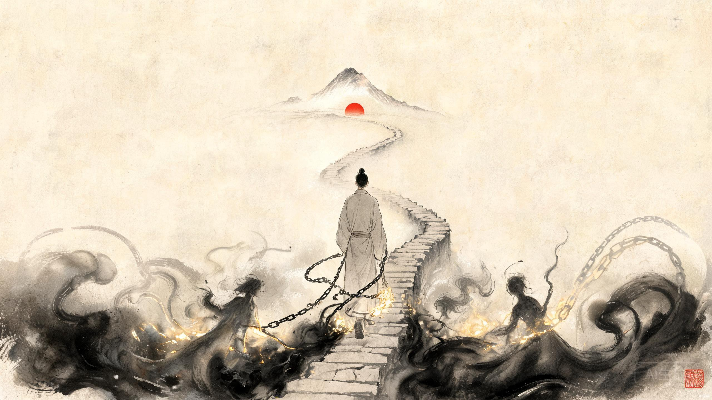

心
贼
破心贼录 From the Sea of Desire to a Reforged Heart — 三十八日深度研读本，写给想在30岁前做出成绩的你
如何用这本书：三十八日研读法How to Read This Book in Thirty-Eight Days
你说自己26岁，深陷女色，影响道心，没法全身心做事；每次结束都想戒，常想隔离手机一周；想在30岁前做出成绩、或拥抱生活找到另一半；日常独处，没什么朋友交流。这本书就是为这个具体的你写的。它不是一篇鸡汤，而是一份用原文说话、用科学拆解、用古训刺痛你的三十八日深度研读课程。
这本书是什么，不是什么
它是知识，不是医疗处方。它把"你为什么会深陷"这件事，从神经科学和东方典籍两条路径讲到根上，并给出一套可执行的脱困系统。它不是专业心理治疗——如果你已严重困扰、影响正常生活，请同时寻求专业心理咨询师或医师帮助，那不是软弱，是与这套系统并肩作战的另一个战友。
三十八日研读法（每天约4小时，约五周半）
本书按"日"组织，每日一个主题，层层递进。前七日搭建核心框架（科学机制 + 东方典籍 + 深陷剖析 + 系统方案），第8-12日深入底层（神经可塑性、依恋与创伤、斯多葛哲学、佛学心理学、心流与睡眠），第13-21日深度掌握（神经内分泌学、CBT、ACT、IFS、躯体疗法、传习录、十牛图、庄子、终极整合），第22-26日深层科学（进化心理学、行为经济学、肠脑轴、运动神经科学、昼夜节律），第27-29日社会与数字维度（社会心理学、注意力经济、人际神经生物学），第30-32日复发预防与身份转化（Marlatt模型、叙事疗法、意义疗法），第33-35日东方实践深潜（《周易》困境智慧、内丹气功、禅修内观），第36-38日终身实践系统（环境设计、日记系统、终身蓝图）。建议每天的4小时这样分配：
时间分配建议
- 精读（约2小时）：逐节读完当日正文，典籍原文逐字读，不跳过"译"。
- 笔记（约40分钟）：用自己的话复述当日3个核心观点，写在纸上。
- 反思（约40分钟）：完成当日"反思题"，对照自己的真实状态。
- 行动（约40分钟）：执行当日"当日行动"，多数是当晚可做的小事。
三十八日主题一览
- 第一日：认清战场——欲望的底层逻辑
- 第二日：多巴胺与奖赏系统（西方·上）
- 第三日：前额叶、意志力与习惯（西方·下）
- 第四日：医家与道家典籍（东方·上）
- 第五日：儒家与心学典籍（东方·下）
- 第六日：深陷的全景剖析
- 第七日：破心贼系统与30岁之约
- 第八日：神经可塑性——大脑如何重连自己
- 第九日：依恋与创伤——你为什么缺连接
- 第十日：斯多葛哲学——自制的艺术
- 第十一日：佛学心理学——渴求与止息
- 第十二日：心流·睡眠·自我关怀 + 系统升级
- 第十三日：神经内分泌学——激素全图
- 第十四日：CBT认知行为疗法——识破思维陷阱
- 第十五日：ACT接纳承诺疗法——与欲望共处
- 第十六日：内部家庭系统——你的内在不是"一个你"
- 第十七日：躯体疗法——创伤存储在身体里
- 第十八日：《传习录》精读——知行合一·事上磨炼
- 第十九日：禅宗十牛图——驯心之旅的完整地图
- 第二十日：《庄子》逍遥哲学——从执念到自由
- 第二十一日：终极整合——21天回顾与终身实践
- 第二十二日：进化心理学与进化错配
- 第二十三日：行为经济学与双系统理论
- 第二十四日：肠脑轴与营养精神病学
- 第二十五日：运动神经科学
- 第二十六日：昼夜节律深潜
- 第二十七日：社会心理学——从众与孤独的群体动力学
- 第二十八日：注意力经济与数字健康
- 第二十九日：人际神经生物学——Siegel整合模型
- 第三十日：复发预防科学——Marlatt模型与MBRP
- 第三十一日：身份转变与叙事重构
- 第三十二日：意义疗法深潜——弗兰克尔·Ikigai·SDT
- 第三十三日：《周易》困境智慧——蹇困坎否
- 第三十四日：内丹养生与气功——精氣神系统
- 第三十五日：禅修与内观——Vipassana技术
- 第三十六日：环境设计与选择架构——Nudge理论
- 第三十七日：日记与反思系统
- 第三十八日：终身实践蓝图——30年路线图
你会发现一个惊人的事实：老子讲"不见可欲"，现代科学讲"切断暗示（Cue）"；孔子讲"少时戒色"，现代科学讲"青春期后额叶尚未成熟"；王阳明讲"破心中贼"，现代科学讲"前额叶对边缘系统的调控"。两套语言，一个事实。本书每一日都会做这种对照——不是为了炫学，而是让你从两个方向同时确认同一件事，从而真正"信"，真正"行"。
一、靠"下次一定戒"的决心，胜率近乎为零。你对抗的是被设计了三千年的机制，需要的是系统，不是发誓。
二、你26岁，时间窗口正在关闭。不是恐吓——这是复利曲线的岔口。
三、孤独是帮凶，不是背景。不解决"无朋友交流"，就解决不了"深陷"。
破山中贼易，破心中贼难。
—— 王阳明[10]
认清战场：欲望的底层逻辑Knowing the Battlefield: The Deep Logic of Desire
在动手"戒"之前，你必须先看清自己在和什么作战。绝大多数人失败，不是因为不够努力，而是把一场机制战，打成了道德战。今天我们不谈任何具体方法，只做一件事：把"欲望"这件事的底层逻辑，从演化、环境、心性三个层面彻底讲透。
1.1 你面对的不是道德问题，是机制问题
你一定无数次在心里审判过自己：怎么这么没出息、怎么又没忍住、是不是意志力天生就差。请今天先把这套道德叙事放下一会儿。现代成瘾医学的一个核心共识是：成瘾行为的关键不在"想不想"，而在大脑奖赏回路是否被长期改造，以及环境是否持续供给触发物[19]。把一个被机制困住的人，骂成"道德败坏"，既不公平，也无效——它只会加重羞愧，而羞愧恰恰是复发的燃料（第六日详述）。
这不是为你开脱。恰恰相反：当你认识到这是机制问题，你才会去寻找改机制的工具，而不是停留在"下次一定"的空发誓里。前者有路径，后者只有循环。
如果一件事你明知有害、却反复去做、做完又后悔、后悔完又再做——这已经不是"选择"问题，而是"回路"问题。这时候继续靠"下定决心"是低效的，你需要的是改造回路。本书第二、三、六日，就是教你如何改造它。
1.2 欲望的演化起源：大脑为何被设计成这样
性欲本身不是敌人——它是写在基因里的生存与繁衍指令。在漫长的人类演化史中，大脑发展出一套奖赏系统：当你做有利于生存繁衍的事（进食、交配、社交、探索），大脑就释放多巴胺等神经递质，给你愉悦感，驱使你重复[19]。这套系统在自然环境中是健康的、自限的——因为自然界的奖赏稀少、需要付出代价、且有饱和反馈。
问题出在这套古老的系统，遇到了一个它从未被设计来应对的现代环境。你的大脑和一万年前在草原上讨生活的祖先，硬件几乎一样；但你今天面对的刺激密度、可得性、新奇度，是祖先做梦都想不到的。用农业时代的刹车，去挡信息时代的油门——这就是你"深陷"的根源。不是你坏了，是环境变了，而大脑还没来得及变。
1.3 超常刺激：为什么现代环境是"成瘾培养皿"
生物学里有个概念叫超常刺激（supernormal stimulus）：指非自然存在的、人工制造的刺激，能比自然刺激更有效地触发动物的某种本能行为[18]。比如有一种蝴蝶，雄蝶会追逐比真实雌蝶更大、颜色更鲜艳的假蝶，哪怕因此错过真正的交配机会。动物会为一个"超常"的假目标，放弃真实的需求。
现代数字色情，就是针对人类性本能的超常刺激：无限供给、随时可得、不断翻新、零成本、零社交风险、可精确点击最刺激的片段。没有任何一个自然伴侣，能比得过这样一个被算法优化的"超常假目标"。所以你"深陷女色"，其实深陷的不是真实的女性，而是一个被工业化生产的、针对你本能的诱饵。认清这一点，你的羞耻感会转化为一种清醒的愤怒——你被设计了，而你可以不再上当。
把你的处境再具象一点：你日常独处、没什么朋友交流、有手机。这三条叠加，构成了最完美的成瘾培养皿——高可得性（手机）、低替代奖赏（无社交）、低监督（独处）。不是你特别堕落，而是你恰好站在了引力最强的位置。换任何人站在这个位置，都会被往下拽。
1.4 中西共识第一课：节制 ≠ 禁欲
在进入后面几天的科学和典籍之前，先破除一个最大的误解：很多人以为"戒"就是要彻底灭掉欲望、变成苦行僧。这是把目标定错了，而错的目标注定失败。东西方在这个问题上，给出了一致的修正——要的是节制，不是禁欲；是管理，不是消灭。
最被误解的一句话，是朱熹的"存天理，灭人欲"。很多人据此以为理学要人绝欲。但朱熹的原话其实是分层次的：
饮食者，天理也；要求美味，人欲也。
饮食，天理也；山珍海味，人欲也。夫妻，天理也；三妻四妾，人欲也。
饿了要吃饭，是天理；非要求山珍海味、暴饮暴食，才是该"去"的人欲。夫妻之道是天理；贪求三妻四妾，才是人欲。
看明白了吗？朱熹区分的是"自然的需要"与"过度的贪求"，他要"灭"的是后者，不是前者[11]。吃饭不是罪，暴食才是；性本身不是罪，被超常刺激劫持、无节制地消耗才是。这与现代成瘾医学"管理奖赏回路、恢复基线"的思路，是完全一致的两个版本。
所以请把你的目标从"我这辈子再也不……"调整为：让欲望回到它该在的位置——是生命的一部分，而不是生命的主宰。前者是禁欲（高失败率），后者是节制（可持续）。这个认知重构，是后面六天一切方法的前提。
1.5 26岁：你正站在哪条曲线上
把今天的逻辑落到你的年龄上。精力要么向上复利（投入技能、健康、关系，回报加速），要么向下复利（投入即时刺激，回报递减、阈值升高、后悔累积）。26岁，是你还在两条曲线岔口的位置；30岁之后，曲线斜率基本锁定。
按掌握一项硬技能约需500小时计，这四年被偷走的精力，足以让你从零成为5个领域的准专家，或一个领域的顶尖选手。这不是吓唬你，是算给你看：你"再放纵一次"的真实价格，远比你以为的贵。
不是你坏了，是环境变了，
而你的大脑还没来得及变。
多巴胺与奖赏系统：你被劫持的大脑Dopamine and the Hijacked Reward System
昨天我们看清了战场。今天起连续两天，用现代神经科学的语言，把"深陷"时你大脑里发生的事，一寸一寸拆给你看。今天的主角只有一个：多巴胺。看完今天你会明白——你以为的"我控制不住"，其实是几个具体脑区、几种具体化学物质，在一个被反复强化的回路里运转[1][2]。看得见它，你就不再是它的奴隶。
2.1 多巴胺的真相：想要 ≠ 喜欢
关于多巴胺，最流行也最致命的误解是："多巴胺=快乐"。神经科学早已修正这一点。多巴胺的核心功能不是让你"享受"，而是让你"想要"（wanting）——驱动你去寻求、去追逐、去重复[19]。真正让你"喜欢"（liking）的，是另一套更微弱、更安静的神经系统。这两个系统在健康状态下协同工作；但在成瘾状态下，"想要"会被异常放大，"喜欢"却会萎缩。
它精确解释了你最困惑的那个体验——"明明已经不享受了，却还是停不下来"。因为驱动你重复的是"想要"系统，而它早已与"喜欢"脱钩。你不是在追求快乐，你是在追逐一个永远填不满的缺口。记住这个判断：当一件事"不快乐却停不下"，那就是"想要"劫持了"喜欢"。
2.2 奖赏回路解剖：三个关键脑区
大脑中有一套古老的奖赏系统（Reward System），主要由前额叶皮层、伏隔核、杏仁核等结构构成，而多巴胺是激活它的主角[1]。把它们想象成一个三人小组：
伏隔核
"油门"。多巴胺在这里引爆"想要"，给你强烈的"去做"的冲动。成瘾时，它被过度激活。
前额叶皮层
"刹车"。负责计划、权衡、克制冲动、盯住长期目标。成瘾时，它被削弱（明日详述）。
杏仁核
"记忆官"。把"触发物—快感"打上情绪标签，让某些画面、场景、时间成为强力暗示。
当你反复沉溺，这个三人小组的权力结构被改写：油门越来越灵敏，刹车越来越失灵，记忆官却把越来越多的日常事物标记成触发物。于是不仅特定内容会触发你，连无聊、独处、深夜、手机屏幕的微光，都可能成为扳机。这就是为什么你会觉得"无处不在被诱惑"。
2.3 脱敏与受体下调：为什么越做越没感觉
这是今天最关键的一段。当高强度的超常刺激反复轰炸奖赏回路，大脑为了自我保护，会下调多巴胺受体的数量与敏感度——这个过程叫"脱敏"（desensitization），学术上叫受体下调（downregulation）[19]。研究表明，成瘾者会长期抑制D2多巴胺受体的表达，这正是他们对非习惯性奖赏敏感性降低的原因[19]。
翻译成你能感受的语言：原本能让你愉悦的日常事物——读完一本书的满足、运动后的畅快、和朋友聊天的温度、完成一项工作的成就——变得索然无味；你需要更强、更新奇、更极端的刺激，才能获得同样的反应[1]。你的"快乐基线被压低了"。这就是为什么沉溺之后，现实世界看起来灰蒙蒙的——不是世界变了，是你的感受器被你自己调钝了。
横轴为时间（周），纵轴为日常快乐的感受基线。反复高强度刺激使基线持续下移，日常事物越来越难带来愉悦；而戒断数周后，受体逐步恢复，基线回升——这就是"重置"的科学依据[16][19]。曲线为机制示意，非具体实验数据。
脱敏是可逆的。停止持续轰炸后，多巴胺受体会逐步回升，基线会重新长回来[16]。这意味着：你不是把大脑永久烧坏了，你只是暂时把它调钝了。给它几周不被轰炸的时间，它会自己修复。这是后面"40天重置"方案的全部科学依据。
2.4 《多巴胺国度》精读：快乐-痛苦平衡
斯坦福大学成瘾医学专家 Anna Lembke 在《多巴胺国度》（Dopamine Nation）中，给这套机制一个更整体的框架。她的核心模型是"快乐-痛苦平衡"（the pleasure-pain balance）：大脑始终在快乐与痛苦之间寻找平衡，就像天平[16]。
- 当你压向快乐一端（高强度刺激），天平倾斜，大脑为了恢复平衡，会自动在痛苦一端加码——于是刺激过后，你感到空虚、麻木、焦虑、动力丧失。
- 而这种痛苦的反扑，又会驱使你再次寻求刺激来压制它——形成下行螺旋：每次需要的剂量更大，每次过后的空虚更深[16]。
- Lembke 的处方：至少数周的禁欲，让奖赏路径重置、产生"病识感"（意识到自己有问题）；并辅以正念练习。她特别强调：鉴于意志力的局限性，应优先采用物理式自我束缚（空间隔离、增加获取成本），而非纯靠意志力硬扛[16]。
把 Lembke 的话翻译成行动语言：不要试图用"想不想"来对抗一个用化学维持的螺旋，而要用"能不能接触到"来切断它。手机放客厅、卸载入口、装过滤插件——这些"笨办法"比任何决心都管用，因为它们直接拔掉了触发物。这一点会在第七日的系统里被反复用到。
持续的过度快乐，会以等量的痛苦作为代价偿还；而痛苦的反扑，又制造对快乐更深的渴求。打破螺旋的唯一方式，是主动接受一段"不舒服"的戒断，让天平自行归零。
现代世界把超常刺激唾手可得地送到每个人手里，大脑的快乐-痛苦平衡被持续推向快乐一端，痛苦一端必然反扑——空虚、麻木、焦虑由此而生，并驱使新一轮刺激，形成下行螺旋。重置需要数周禁欲与物理式自我束缚。
2.5 中西对照：老子的"五色令人目盲"
讲完科学，回头读一段两千五百年前的话，你会脊背发凉——老子几乎用直觉预言了"脱敏"：
五色令人目盲，五音令人耳聋，五味令人口爽，驰骋畋猎令人心发狂，难得之货令人行妨。是以圣人为腹不为目，故去彼取此。
缤纷的色彩使人眼花失明，繁复的声响使人耳聋失聪，丰盛的滋味使人口味败坏（"爽"即丧失本味），纵情驰骋田猎使人内心发狂，稀有的财物使人行为失当。所以圣人只求填饱肚子（真实的需求），不追逐声色之娱（超常的刺激），故而去除后者、保留前者。
"口爽"二字最妙——不是"爽快"，而是味觉被败坏、丧失了本味。这不正是"脱敏、受体下调、基线压低"的东方表述吗？过度刺激让本真的感受能力钝化。老子给的解法和 Lembke 一模一样："为腹不为目，去彼取此"——回到真实的需求，去掉超常的刺激。西方用化学解释，东方用直觉点破，结论却完全一致。
你不是在追求快乐，
你是在追逐一个永远填不满的缺口。
第二日 · 研读包
精读清单（今日核心）
反思题
- 回想最近一次沉溺：你当时是"喜欢"还是"想要"？做完后是满足还是更空？
- 哪些原本能让你快乐的事，现在变得"没意思"了？这就是基线被压低的证据。
- 你的"快乐-痛苦天平"现在偏向哪一端？空虚和焦虑是不是在反复刺激你？
当日行动
做一次"多巴胺审计"：列出你今天所有寻求快感的渠道，标出哪些是"超常刺激"。挑出最高危的一个，今晚就增加它的获取成本（卸载/移出视线/设密码）。
前额叶、意志力与习惯：重写大脑的程序Prefrontal Cortex, Willpower & Habits
昨天我们看清了"油门"被劫持。今天看"刹车"为什么失灵，以及——最关键的——你身上那段叫"深陷"的程序，是怎么被写进神经回路的，又该怎么重写。今天读完，你手里就有了改造回路的具体语法。
3.1 前额叶皮层：大脑的"刹车系统"为何失灵
负责专注、计划、权衡、克制冲动、盯住长期目标的，是前额叶皮层（Prefrontal Cortex）。研究显示，多巴胺信号在前额叶中参与执行功能与决策[3]。当奖赏回路长期被超常刺激劫持，前额叶对冲动行为的"刹车"能力会被削弱[2]。于是出现你最熟悉的那种体验：你清清楚楚知道"我不该这样"，但刹车就是踩不下去。
你不是"想不通"，你是大脑里负责"想通"的那块区域，被你自己长期削弱了。这是物理性失灵，不是道德性软弱。但好消息紧随其后：前额叶具有可塑性，戒断 + 规律作息 + 运动，能让它在数周到数月内逐步恢复功能[2]。换言之——这个失灵是可逆的，前提是你停止继续破坏它。
还有两个让刹车更容易失灵的诱因，必须知道：睡眠不足会直接削弱前额叶对冲动的控制[2]；压力与疲劳会消耗有限的"自控资源"。所以你总在深夜、疲惫、焦虑时沦陷——不是巧合，是刹车在那个时刻最弱。这也解释了为什么"白天好好的，一到深夜就破功"。
3.2 《自控力》精读：我要 / 我不要 / 我想要
斯坦福大学心理学家凯利·麦格尼格尔在《自控力》（The Willpower Instinct）中，把意志力拆成三种力量的协同[15]：
我要做
驱动你去做"该做但不想做"的事（如学习、运动）。
我不要
克制你去做"不该做却想做"的事（如沉溺）。
我想要
记住你真正重要的长期目标，它是前两者的"方向盘"。
麦格尼格尔最反直觉、也最实用的一个洞见是："我不要"是最弱的力量。靠"我不能"去压制冲动，会持续消耗自控资源，一旦耗尽就剧烈反弹。所以她提出一个关键转换——把"我不要"变成"我想要"[15]：与其对自己说"我不能手淫"，不如说"我想要一个清醒、专注、能做成事的自己"。前者把注意力钉在禁忌上（反而强化渴求），后者把注意力导向目标（激活"我想要"这股最强的力量）。
这与第一日"把'戒'换成'建'"、与王阳明"立志"是同一件事的三个版本。麦格尼格尔还指出：提高自控力最有效的第一步，是先弄清自己如何失控——意识到自己有"两个自我"（冲动的自我 vs. 理性的自我）在博弈[15]。这本书提供了一个10周训练框架，本书第七日的40天方案正是其精简与中西化版本。
3.3 《习惯的力量》精读：习惯回路与"渴求"
普利策奖得主查尔斯·都希格在《习惯的力量》（The Power of Habit）中提出，所有习惯都遵循一个三段式回路：暗示（Cue）→ 惯常行为（Routine）→ 奖赏（Reward）；而奖赏反复满足后，会催生出渴求（Craving），使回路自动运转[13]。对你而言，回路是这样跑的：
flowchart LR
A["暗示 Cue
独处·无聊·焦虑·深夜·手机"] --> B["惯常行为 Routine
寻求刺激·手淫"]
B --> C["奖赏 Reward
短暂的神经放松"]
C --> D["渴求 Craving
大脑记住回路·下次更难拒绝"]
D -.强化.-> A
都希格给出的破法，是这本书最值钱的一句：习惯无法被消灭，只能被替换[13]。你不能靠"在 Routine 那一步硬扛"来打破它——因为渴求已经形成，到了那一步你的前额叶往往已经失能。真正有效的破法在两端：保留旧的暗示与奖赏，只把中间的"惯常行为"换掉。比如：暗示（深夜独处焦虑）来了，旧的奖赏是"神经放松"——你换成"出门快走20分钟"或"冷水洗脸+做俯卧撑至力竭"，同样能获得放松的奖赏，但回路被改写了。
都希格还提出"核心习惯"（keystone habit）的概念：有些习惯一旦改变，会连锁带动其他习惯。对成瘾者而言，规律运动 + 固定作息就是最典型的核心习惯——它们一旦立住，睡眠、情绪、自控资源、基线都会连带好转[13]。这也是为什么第七日系统的"行为层"，把这两项放在最优先。
3.4 《原子习惯》精读：四定律与身份认同
詹姆斯·克利尔在《原子习惯》（Atomic Habits）里，把都希格的回路扩展为更可操作的"行为改变四定律"，对应回路的四个环节[14]：
| 定律 | 对应环节 | 建立好习惯 | 打破坏习惯 |
|---|---|---|---|
| 第一定律 | 提示 Cue | 让它显而易见 | 让它看不见（切断暗示） |
| 第二定律 | 渴求 Craving | 让它有吸引力 | 让它无吸引力（重新定义） |
| 第三定律 | 反应 Response | 让它简便易行 | 让它困难（增加获取成本） |
| 第四定律 | 奖赏 Reward | 让它令人满足 | 让它不满足（即时可见的代价） |
这四条，几乎可以直接抄成你的作战手册：把超常刺激看不见（手机移出卧室）、无吸引力（重定义为"偷走我30岁的人"）、困难（卸载+过滤+设密码）、不满足（每次复发立刻写下代价）。这正是第二日 Lembke"物理式自我束缚"的精细化。
但克利尔最深刻的洞见，比四定律更高一层——身份认同型习惯。他说：真正的改变不是"做到了再相信"，而是"先相信，再做到"[14]。不要对自己说"我想戒色"，要说"我是一个不被本能驱使、能专注做事的人"。戒色只是一个行为，而"成为这样的人"是一种身份。行为会反复失败，身份一旦内化，行为会自然跟上。克利尔举的经典例子：戒烟者不说"我想戒烟"，而说"我不吸烟"——前者是仍在挣扎的瘾君子，后者已是非吸烟者[14]。
克利尔的"身份认同"，与王阳明的"立志"、了凡的"改命"是同一件事。阳明说"志不立，天下无可成之事"[10]；克利尔说"先相信再做到"——东方叫"立志"，西方叫"身份认同"，机制都是：先在自我定义层面完成转换，行为才有持续的动力源。这是第七日系统的"心性层"基石。
3.5 一句话总结今天
你的"深陷"不是性格缺陷，而是一段被写进神经回路、靠渴求自动运行的程序。破它不靠硬扛，而靠：换刹车（恢复前额叶）、换叙事（我不要→我想要）、换行为（保留暗示与奖赏、替换Routine）、换身份（先成为、再做到）。这四换，就是明天起东方典籍要反复印证的同一套心法。
不成为习惯的主人，
就会沦为习惯的奴隶。
第三日 · 研读包
精读清单（今日核心）
反思题
- 画出你自己的"习惯回路"：你的暗示、惯常行为、奖赏、渴求分别是什么？
- 你一直在用"我不要"还是"我想要"和自己对话？效果如何？
- 如果换一个身份认同，你会怎么用一句话定义"我是谁"？（不是"戒色的人"，而是"成为谁"）
当日行动
写一句你的"身份宣言"贴在镜子上，例如："我是一个把精力投进事业、不被本能驱使的人。" 连读7天，让它从口号变成自我定义。
医家与道家：保精、内守、为腹不为目Medical & Daoist Classics on Preserving Essence
前三天用科学拆完了机制。今天起连续两天，换一套语言——东方典籍。你会发现，两千年前的医家与道家，已经在另一套话语里，把"为什么要节制、怎样节制"讲到了根上。今天聚焦医家（保精）与道家（内守）两条线。
4.1 《黄帝内经》：养生心法总纲——精神内守
《黄帝内经》是中医理论的源头，其首篇《素问·上古天真论》开宗明义，给出养生的总纲：
夫上古圣人之教下也，皆谓之虚邪贼风，避之有时，恬惔虚无，真气从之，精神内守，病安从来。是以志闲而少欲，心安而不惧，形劳而不倦，气从以顺，各从其欲，皆得所愿。
上古圣人教导世人：外避四时不正之气，内养恬淡虚无之心，真气便随之和顺；把精神收摄于内而不外驰，疾病又从何而来？所以志趣闲适而欲望寡少，心神安定而无恐惧，形体劳作而不疲倦，气机调顺，各得其所愿。
"精神内守"四字，被后世誉为中医养生学的"心法总纲"[4]。对照你现在的状态：你每次沉溺，本质正是"精神外驰"——把生命力不断往外、往下投射。久之真气不充，注意力涣散、动力枯竭，正是"病安从来"的反面写照。内守，不是要你与世隔绝，而是把散逸的注意力收回到自己身上——这和第二日"恢复前额叶"是同一件事。
4.2 男八周期：26岁，你正处在生理的黄金窗口
《上古天真论》还给出了男子一生的"八周期"节律，把肾气、天癸、筋骨随年龄的盛衰讲得清清楚楚[4]：
| 阶段 | 年龄 | 原文 | 状态 |
|---|---|---|---|
| 一八 | 8岁 | 丈夫八岁，肾气实，发长齿更 | 肾气初充 |
| 二八 | 16岁 | 肾气盛，天癸至，精气溢泻，阴阳和，故能有子 | 性机能成熟 |
| 三八 | 24岁 | 肾气平均，筋骨劲强，故真牙生而长极 | 肾气均衡·筋骨最强 |
| 四八 | 32岁 | 筋骨隆盛，肌肉满壮 | 体力巅峰 |
| 五八 | 40岁 | 肾气衰，发堕齿槁 | 由盛转衰 |
你26岁，正处于三八（24）与四八（32）之间——这是男子一生中肾气最均衡、筋骨劲强、体力走向巅峰的黄金窗口[4]。换句话说，你现在正握着一生中最好的"硬件"。而这最好的硬件，正在被超常刺激往下消耗。这不是抽象的"伤身"，而是你在透支一生中生理资本最丰厚的一段时光。32岁之后肾气由盛转衰，到那时再想"做出成绩"，硬件成本会高得多。26岁这四年，是你用最低生理成本换最高人生回报的窗口。
《内经》讲"肾者主水，受五藏六府之精而藏之"[4]——精是生命的根本资本，五脏六腑之精皆藏于肾。"精"不是狭义的生殖液，而是整体的生机与精力。无节制地消耗，损耗的不只是某一项功能，而是你做事、思考、复原的整体底气。这就是为什么你"深陷"之后，不只是身体累，连"想做点事"的劲头都没了。
4.3 《道德经》治欲：不见可欲，为腹不为目
道家对欲望的处置，比医家更深一层——不只讲"保"，更讲"治"。老子在第三章给出治欲的总方针：
不尚贤，使民不争；不贵难得之货，使民不为盗；不见可欲，使民心不乱。是以圣人之治，虚其心，实其腹，弱其志，强其骨。
不推崇贤能，人们就不争夺；不贵重难得之物，人们就不偷盗；不显现诱惑之物，民心就不被扰乱。所以圣人之治，在于使心虚空、腹充实、志柔弱、骨强健。
"不见可欲，使民心不乱"——这七个字，正是现代神经科学"切断暗示（Cue）"的东方版本[6]，也对应《原子习惯》第一定律"让坏习惯看不见"。老子两千五百年前就看明白：人心乱，往往不是因为意志不够，而是可欲之物总在眼前晃。你"想隔离手机一个星期"的本能，其实暗合老子——只是你要把它做成系统，而非偶尔的逃离。
第十二章（昨日已引"五色令人目盲"）则给出更彻底的取向——"为腹不为目，去彼取此"：追求真实的需求，去掉超常的刺激。这与 Lembke"物理式自我束缚"、与你"增加获取成本"的行动，完全是同一招。道家把"管理环境"视为修心的第一步，而非末流——这对总是想"靠内心硬扛"的你，是一个重要的方向修正。
4.4 道家养生延伸：务实其精、节宣之和
《内经》之后，历代医家与道家对"保精节欲"有大量延伸。这些典籍未必要求你全信，但它们的共识之深、跨年代之广，本身就值得你重视：
房事唯有得其节宣之和，可以不损。（葛洪）
养生之要，在于务实其精。（陶弘景）
房中之事，唯有节制有度、宣泄得宜，才可不损伤身体（葛洪《抱朴子》）。养生的要点，在于切实地充盈、固护精气（陶弘景《养性延命录》）。
精存自生，其外安荣，内脏以为泉源……渊之不涸，四体乃固；泉之不竭，九窍遂通，乃能穷天地，被四海。
精气内存则生命自生，外在安和荣润，内脏以之为泉源……深渊不枯竭，四肢才坚固；泉源不干涸，九窍才通达，如此才能穷尽天地、覆盖四海。
从葛洪（东晋）、陶弘景（南北朝）到孙思邈（唐，"节欲以保精"），再到《管子》这部更早的先秦典籍，"精是根本资本、节欲才能不损"是一条贯穿千年的共识[12]。它不是某一个人的偏见，而是无数智者用生命观察得出的结论。你今天觉得"适度无害"——但你的"适度"在超常刺激环境下，几乎不可能保持。环境的改变，让古训的分量变得更重，而非更轻。
4.5 医道合参：把古训翻译成今天的行动
- 精神内守 = 恢复前额叶：把注意力收回到自己身上，不外驰于超常刺激。
- 不见可欲 = 切断 Cue：管理环境是修心的第一步，不是末流。
- 为腹不为目 = 去超常、留真实：回到真实需求，去掉工业化的诱饵。
- 务实其精 = 保生理资本：26岁的黄金窗口，正在被透支。
恬惔虚无，真气从之；
精神内守，病安从来。
第四日 · 研读包
精读清单（今日核心）
反思题
- 对照男八周期：你26岁，正处于哪个阶段？你的"精"现在是被"务实"还是被"消耗"。
- 你的环境里，有哪些"可欲"之物天天在你眼前晃？老子会建议你怎么办？
- "精神内守"对今天的你，具体意味着把注意力从哪里收回到哪里？
当日行动
执行一次"不见可欲"：今晚把卧室里所有能触发你的物品（手机、平板）移出去，只留闹钟。体会老子说的"民心不乱"是什么感觉。
儒家与心学：立志、改过、致良知Confucian & Yangming Mind-Philosophy
昨天医道两家讲"保"与"治"。今天儒家与心学，讲得更狠——它们直接动你的"志"与"心"。这是东方体系里最直击"深陷"内核的部分：你缺的不是戒律，是一个比你大的志向，和一套日日改过的功夫。
5.1 《论语》三戒：人生阶段论的精准
孔子把"色"列为人生第一戒，且专门针对年轻阶段：
孔子曰：君子有三戒：少之时，血气未定，戒之在色；及其壮也，血气方刚，戒之在斗；及其老也，血气既衰，戒之在得。
孔子说：君子有三件事须警惕。年少时血气尚未稳定，要警惕沉迷于色；壮年时血气正盛，要警惕逞强好斗；年老时血气已衰，要警惕贪得无厌。
请注意孔子这套"人生阶段论"的精准：不同年龄，最容易让人栽倒的陷阱不同[5]。少年血气未定，最易被色所困；壮年血气方刚，最易被斗（争强好胜、意气用事）所困；老年血气已衰，最易被得（贪名贪利）所困。你26岁，介于"少"与"壮"之间，正处于"戒色"与"戒斗"两戒的交汇点——既容易被欲念拖住，又容易因挫败而陷入意气之争、自暴自弃。孔子不是要你灭掉欲望，而是"戒"——戒者，警惕、防备、不沉迷。这与现代科学"管理奖赏回路"，是同一意思的两种表达。
5.2 朱熹正解：节制而非禁欲，修身的次第
第一日我们已引朱熹"饮食天理、要求美味人欲"[11]，破除了"存天理灭人欲=禁欲"的误解。这里再深一层：朱熹的修身，是有次第的——先立大本，再节其末。他不主张在欲望上死磕，而主张先把"大本"（志向、学问、德行）立起来，让精力有正向去处，欲望自然退到次要位置。这与《原子习惯》"身份认同优先于行为"、与《习惯的力量》"用核心习惯带动整体"，是同一种智慧。你在欲望上越死磕，越强化它；你把志立起来，欲望才会自动让位。
5.3 王阳明心学全解：立志、破心贼、致良知
王阳明是整个东方体系里，对"深陷"讲得最透的人。他龙场被贬时写给学生的《教条示龙场诸生》，开列修身四事——这四事，几乎就是为你量身写的：
一曰立志，二曰勤学，三曰改过，四曰责善。……志不立，天下无可成之事。虽百工技艺，未有不本于志者。
第一是立志，第二是勤学，第三是改过，第四是责善。……志向不立，天下就没有能做成的事。即便是百工技艺，也无不以志向为根本。
阳明把"立志"放在四事之首，而且说得极重——"志不立，天下无可成之事"[10]。回想你的状态："没办法全身心投入去做事"——这恰恰是"志未立"的典型症状。你没有一个比你更大的目标把你"挂"住，精力就顺着阻力最小的方向，流向最低级的刺激。阳明给的解法不是"戒色"，而是"立志"——先把志立起来，色欲自然退到该在的位置。这与克利尔"身份认同型习惯"如出一辙。
而阳明最广为人知的那句，道破你的核心困境：
你的敌人不在外面，在你心里。所以"隔离手机一星期"治标不治本——手机可以被关掉，心贼却会换一种形式回来。阳明的解法是"致良知"与"知行合一"：不是靠外在戒律，而是把遮蔽本心的欲念一层层擦掉，让本有的良知重新做主[10]。用现代语言说，就是让被削弱的"前额叶"，重新成为大脑的指挥官——这正是第二、三日的科学目标。阳明还强调"责善"（朋友之间互相督促向善）——这对应你"没什么朋友交流"的短板：一个人破心贼太难，需要师友夹持。
5.4 《了凡四训》全本精读：改命的完整方法
《了凡四训》是中国"改命"思想的代表作，明代袁了凡以"训子文"的形式，写就四篇——这四篇，恰好构成一套完整的自我改造方法[9]：
一 · 立命之学
"命由我作，福自己求"——命运不是天定，是自己修出来的。这是整套方法的总纲。
二 · 改过之法
"务要日日知非，日日改过"——每天发现过失、每天改正，把改过变成日常功夫。
三 · 积善之方
用建设性的善行，填满原本被过失占据的位置——"建"取代"戒"。
四 · 谦德之效
保持谦逊，避免"小成即骄"的反弹——这是改命能持续的保险。
了凡最刺痛你的，是那段关于"因循"的话：
务要日日知非，日日改过；一日不知非，即一日安于自是；一日无过可改，即一日无步可进；天下聪明俊秀不少，所以德不加修、业不加广者，只为因循二字，耽搁一生。
务必每天发现自己的过失，每天加以改正；一天不知过失，这一天就安于自以为是；一天没有过可改，这一天就没有任何进步。天下聪明俊秀之人不少，之所以德行不进、事业不广，只因"因循"二字，耽搁了一生。
"因循二字，耽搁一生"——这八个字，就是你的病史。因循，就是"明天再说""下次再戒"。你26岁想戒，30岁还想戒，中间差的不是决心，是日日知非、日日改过的持续校正系统[9]。注意了凡的逻辑：他怕的不是"有过"，而是"一日无过可改"——即自以为没问题、看不见自己过的人。这正对应《自控力》"先弄清自己如何失控"——看不见，才是最危险的。第七日的"每日功课表"，就是了凡这套功夫的现代模板。
了凡"立命"= 阳明"立志"= 克利尔"身份认同"。了凡"日日改过"= 阳明"改过"+"责善"= 麦格尼格尔"弄清如何失控"。东方讲"改命"，西方讲"行为改变"，落点完全一致：先在自我定义上立起来，再用每日的持续校正，把旧的回路一点点替换掉。
命由我作，福自己求。
—— 袁了凡《了凡四训》[9]
第五日 · 研读包
精读清单（今日核心）
反思题
- 你现在的"志"立起来了吗？如果没有，你最想在30岁前做成的那件事，到底是什么？要具体到一个可衡量的目标。
- 你是"破山中贼"多（隔离手机、删App），还是"破心中贼"多？前者为什么总不够？
- 了凡怕"一日无过可改"。你今天能看见自己的"过"吗？还是已经麻木到看不见了？
当日行动
启动"日日知非"：今晚用三行写下——今天最危险的一个瞬间、触发它的是什么、明天同一瞬间我换什么动作。连续做7天，这就是了凡功夫的现代版。
深陷的全景剖析：成瘾、孤独与羞愧The Anatomy of Being Trapped: Addiction, Loneliness & Shame
前五天，我们用科学拆了"发动机"，用典籍立了"方向"。今天做一件更难也更必要的事——把你自己描述的那个"深陷感"拆成结构。你说自己"深陷进去了""影响道心""没办法全身心投入""经常想隔离手机""每次结束都想戒""没什么朋友交流"——这些不是一个问题，而是四个互锁的齿轮在同时转动。看清它们如何咬合，你才知道从哪里拆。
6.1 成瘾不是道德问题，是止痛策略——加博尔·马泰
关于成瘾最深刻的洞见，来自加拿大医生加博尔·马泰（Gabor Maté）。他在温哥华 Downtown Eastside 做了十二年成瘾者的主治医生，见过最深的深渊。他的核心命题，颠覆了所有道德审判：
不要问"为什么成瘾"，要问"为什么痛苦"。
The question is not why the addiction, but why the pain.
成瘾的根源不是道德选择，也不是单纯的疾病，而是一个人面对无法承受的痛苦时，所采取的一种——尽管有害——却是他能找到的唯一的止痛策略。
马泰的论述有几个关键层次，逐层拆给你听[17]：
- 成瘾是对痛苦的回应：没有人会在"生活充实、关系温暖、意义清晰"的时候选择自我毁灭。成瘾行为背后，往往有一个"缺失"——缺失连接、缺失意义、缺失被看见。你用超常刺激来填补的，不是色欲，是某种更深的空。
- 成瘾者的大脑确实被改变了，但改变的起点往往在更早——童年期的压力、忽视、情感隔离会影响多巴胺系统的发育，让一个人日后更容易被成瘾俘获。这不是定命论，而是让你理解"你为什么比别人更容易陷进去"——不是因为你更差，而是你的系统在更早的时候，就被削弱了。
- 解决的方向：不是更狠地"戒"（那只治症状），而是找到并直面那个痛苦的根源，同时重建真实的人际连接与意义来源。马泰说，真正的恢复不是"停止行为"，而是"重新成为完整的人"[17]。
马泰会问你：在那些你沉溺的深夜，你真正在逃避的痛苦是什么？是孤独？是"一事无成"的恐惧？是对亲密关系的渴望与不敢？是对自己"这个样子"的失望？——你不需要现在就有答案，但请你把这个问题放在心里。第七日的"根因探查"会回到这里。
马泰还指出一个反直觉的事实：成瘾不只是对物质的，任何能暂时缓解痛苦、却长期有害的行为都可以成为成瘾——包括工作狂、消费、手机、游戏、甚至"反刍式的自我批判"[17]。你"深陷"的不只是色欲，还有"反复想戒又反复失败"这件事本身——它已经成为你生活的核心叙事，占据了大量精力。打破这个叙事，是第六日的隐性任务。
6.2 四齿轮模型：你的"深陷"是如何自我维持的
把你的状态拆成四个互锁的齿轮，看清它们如何互相驱动：
flowchart TD
G1["齿轮一 · 稀缺循环
刺激→满足→空虚→渴求→更强刺激
基线持续下压"]
G2["齿轮二 · 羞愧反弹
每次复发→自我审判→羞愧
→以新刺激止痛→再次复发"]
G3["齿轮三 · 孤独真空
无朋友交流→无替代奖赏
→刺激成为唯一'陪伴'→更孤立"]
G4["齿轮四 · 意义真空
'做不出成绩'→自我价值低
→用刺激麻痹无力感→更没精力做事"]
G1 -- "空虚激活羞愧" --> G2
G2 -- "羞愧驱动隔离" --> G3
G3 -- "无替代奖赏强化刺激" --> G1
G4 -- "无力感寻求止痛" --> G1
G1 -- "基线下压使一切无趣" --> G4
G2 -- "羞愧消耗精力" --> G4
G3 -- "孤独加剧无力感" --> G4
这四个齿轮，就是你看不清的"深陷"的全貌。它们每一个都不是孤立的——你越想戒，越在羞愧齿轮上加重；越羞愧，越孤立；越孤立，越没有替代奖赏；越没替代奖赏，越依赖刺激；越依赖刺激，基线越低、越没精力做事；越做不出事，越无力，越需要止痛……循环不止。所以"只戒色"是注定失败的——你只动了齿轮一的一个齿，其他三个齿轮还在转，迟早把它拉回来。
6.3 齿轮一：稀缺循环与"永远不够"
第一个齿轮是多巴胺系统的直接产物。超常刺激提供的是稀缺循环（scarcity loop）的极致版本：机会→不可预测的奖赏→快速重复[16]。它的特点是"永远不够"——不是因为你贪婪，而是因为受体已经下调，每次刺激产生的多巴胺脉冲越来越短、越来越弱，间隔越来越短。你不是在享受，你是在维持一个不断下坠的基线。这在第二日已经讲透，此处不再展开，但请记住：这个齿轮的拆法不是"戒"本身，而是给基线时间恢复（数周不轰炸）+ 用真实奖赏替代（运动、技能进步、真实关系）。
6.4 齿轮二：羞愧反弹——最危险的燃料
这是四齿轮中最隐蔽、也最致命的一个。布琳·布朗（Brené Brown）的研究区分了两种情绪[20]：
| 羞耻 Shame | 内疚 Guilt | |
|---|---|---|
| 焦点 | "我是坏的"——对自我的否定 | "我做了坏事"——对行为的评价 |
| 效果 | 驱使隔离、隐瞒、复发 | 驱动改正、修复、行动 |
| 成瘾关系 | 羞耻是复发的最强预测因子 | 适度内疚是恢复的盟友 |
这个区分至关重要。你每次复发后心里那句"我怎么这么没出息"——那是羞耻，它攻击的是"我是谁"，而不是"我做了什么"[20]。而羞耻会驱使你隐瞒（不告诉任何人）、隔离（更不与人交流）、用新刺激止痛（因为羞耻本身就是痛）——于是你带着这份痛，又回到齿轮一。这就是"羞愧反弹"：你以为复发后的自责是在"督促自己"，其实它正是把你推向下一次复发的手。
布朗给出的破法，核心是一个叙事转换：把"我是个没用的人"换成"我是一个正在挣扎、但有能力改变的人，这次我做了一个不好的选择"[20]。前者是羞耻，会把你钉死；后者是内疚，会推你行动。下次复发后，请刻意做这个转换——这不是为你开脱，而是切断羞愧→隔离→复发这条链的关键一环。
6.5 齿轮三：孤独真空——最被低估的变量
你说自己"日常独处，没什么朋友交流"。这是四齿轮里被最多人忽视、却最致命的一个。神经科学家约翰·卡乔波（John Cacioppo）的毕生研究证明：长期孤独不是一种"心情"，而是一种生理状态——它会激活与慢性压力相同的神经通路，升高皮质醇，削弱免疫，并显著降低前额叶功能[21]。换言之，孤独本身就在物理性地削弱你的"刹车系统"。
更关键的是卡乔波波的发现：孤独会改变大脑对社交奖赏的响应——孤独者反而会降低对真实社交的兴趣，却升高对替代性刺激（食物、物质、屏幕）的渴求[21]。这解释了你最困惑的体验："我明明很孤独，却不想出去见人，只想一个人对着屏幕。"——不是你冷漠，是你的大脑在孤独状态下，错误地把"隔离+刺激"当成了比"真实社交"更安全的奖赏。
马泰说成瘾的解药是"真实连接"[17]；卡乔波说孤独是生理性的[21]；阳明说"责善"需要师友夹持[10]。三套语言指向同一个结论：不重建真实的人际连接，你的"戒"就是在一个真空里反复坍塌。你"没什么朋友交流"这件事，不是背景信息，是核心病灶。
这并不意味着你要立刻"变外向"或"找一堆朋友"。卡乔波强调，孤独的解药不是"更多的社交"，而是"更高质量的真实连接"——哪怕只有一个能说真话的人[21]。第七日系统会把"重建一条真实连接"列为优先项，原因正在于此。
6.6 齿轮四：意义真空——"做不出成绩"如何反向喂养成瘾
第四个齿轮直接对应你说"想在30岁前做出成绩"。维克多·弗兰克尔（Viktor Frankl）——在纳粹集中营里活下来的精神病学家——在《活出生命的意义》中给出一个命题：人最主要的驱动力不是追求快乐，而是追求意义；当意义缺失，人会转向权力或快感来填补[22]。
人可以被剥夺一切，除了一样——最后的内在自由：选择以何种态度面对自己的境遇。
当意义缺失，人会转向追求权力（包括金钱）或追求快感（包括沉溺）来替代。
这不是说追求快乐不好，而是说快乐无法成为生命的终极目标——它只能是"做有意义的事"的副产品。一个没有意义感的人，会把快感当作救命稻草，但快感永远不会满足对意义的渴求。
把你放进这个框架：你说"做不出成绩"——这不是让你痛苦的结果，而是喂养沉溺的燃料。当你没有一件"值得为之投入全部精力的事"，精力就没有正向去处，就流向阻力最小的通道。而沉溺又消耗了你本可用于"做出成绩"的精力——于是"做不出成绩"和"沉溺"互为因果，形成一个没有出口的闭环[22]。
弗兰克尔的洞见还更深一层：意义不来自"成功"，而来自[22]。你目前困在态度价值的最低点（用沉溺逃避苦难而非面对它），而你需要的是同时启动创造价值与体验价值——这正是第七日"三层系统"的哲学根据。
6.7 羞愧→隔离→沉溺：一个真实的深夜叙事
把这四个齿轮放进你一个真实的深夜，看看它们如何转动：
一个人在房间，刷完手机，感到无聊与一种说不清的空。杏仁核把"独处+深夜+屏幕微光"标记成触发物。齿轮一开始转动。
多巴胺"想要"系统被激活。前额叶在疲劳下刹车力弱，"我不要"失灵。大脑记住"上次那个画面能缓解这种空"。
行为发生。短暂的神经放松后，基线进一步下压。齿轮一转动完毕。
立刻的自我审判："又来了，我真没用。"这句话攻击的是"我是谁"——羞耻而非内疚。齿轮二开始转动。
因为羞耻，你更不可能告诉任何人。你决定"明天再戒"——但这个决定本身把你更深地关进孤独真空。齿轮三转动。
带着羞愧与疲惫入睡，第二天精力更差，"做点事"的念头更弱。齿轮四转动，为下一个深夜的循环蓄好能量。
看到结构了吗？你以为"问题"出在 23:10 那一刻，其实真正的扳机在 23:00 之前——在那个"说不清的空"里，在那个"一个人"里，在那个"刷完手机"里。而 23:20 的羞愧，不是"自责"，是给下一个循环充能。拆这个循环，不能从中间硬断，要从两端：上游切断触发（环境改造）+ 下游转换叙事（羞耻→内疚→行动）。
6.8 中西会师：四齿轮的东方表述
这四个齿轮，东方典籍各有表述，且互相印证：
稀缺循环 ↔ 老子"不知足"
《道德经》四十六章："祸莫大于不知足，咎莫大于欲得。"多巴胺基线下压的东方表述，就是"不知足"——越要越多，越多越空。
羞愧反弹 ↔ 吕坤"一念放恣"
《呻吟语》："一念收敛则万善来同，一念放恣则百邪乘衅。"[8] 放恣后不收敛（即不把羞耻转为改过的行动），百邪便趁虚而入——这正是"羞愧反弹"。
孤独真空 ↔ 阳明"责善"
阳明把"责善"列为修身四事之一[10]——破心贼需要师友夹持。一个人破，太难；这就是为什么孤独是帮凶而非背景。
意义真空 ↔ 阳明"立志"
"志不立，天下无可成之事"[10]。没有志，精力没有正向去处。弗兰克尔讲意义，阳明讲志，是同一件事。
6.9 为什么"隔离手机一星期"不管用
你"经常想隔离手机一个星期"——这个本能是对的（切断暗示），但作为策略是不够的，原因有三：
- 它只动了齿轮一的一个齿（切断 Cue），但齿轮二（羞愧）、三（孤独）、四（意义）还在转。一周后手机回来，四个齿轮同时把你拉回去。
- 它是一次性动作，不是系统。马泰说恢复是"重新成为完整的人"的过程[17]，需要持续的连接、意义、自我校正——不是一次"闭关"能完成的。
- 它把"戒"当目标，而非把"建"当目标。一周不看手机之后呢？你没有在那周里建起任何替代物——没有新习惯、没有新连接、没有新意义。空出来的精力无处可去，手机一回来就被原路吸走。
所以第七日的系统，会把"环境隔离"作为第一层（而非唯一层），并在它之上叠加行为层（建替代）、关系层（建连接）、心性层（立志与改过）——四层同时运转，四个齿轮才能同时被拆。
不要问"为什么戒不掉"，
要问"我在逃避什么痛"。
第六日 · 研读包
精读清单（今日核心）
反思题（今日最重要）
- 马泰会问你：你在那些深夜，真正在逃避的痛苦是什么？写下你直觉里第一个冒出来的答案，不要审查它。
- 画出你自己的"深夜叙事"时间线：从触发到羞愧，每个时间点你在想什么、感受什么？四个齿轮各自在哪个时刻转动？
- 你复发后的自责，是"我是坏的"（羞耻）还是"我做了一个不好的选择"（内疚）？这个区别如何影响你的下一次？
- 你的"意义真空"具体是什么？30岁前你最想做成的那件事，如果只能选一件，是什么？
当日行动
写一封"给自己的坦白信"：不审查、不美化，写下你沉溺背后真正在逃避的那个痛。写完不必给任何人看，但请写下来——看见它，是拆它的第一步。
破心贼系统与30岁之约The Heart-Thief-Breaking System & The 30-Year Covenant
六天了。你已经看清了战场、拆了发动机、立了方向、剖析了深陷的结构。今天是最后一天，只做一件事：把前六天的一切，收拢成一套可以每天执行的系统，并和30岁的自己签一个约。这套系统不靠意志力硬扛，而是靠四层结构同时运转，让四个齿轮同时被拆。
7.1 系统总览：四层防线的逻辑
前六天的全部知识，收拢为一个四层系统。每一层对应一个齿轮，缺一不可：
flowchart TB
subgraph L1["第一层 · 环境层（拆齿轮一 · 切断 Cue）"]
A1["手机移出卧室"]
A2["卸载/过滤入口"]
A3["增加获取成本"]
A4["不见可欲 · 为腹不为目"]
end
subgraph L2["第二层 · 行为层（填齿轮三 · 建替代奖赏）"]
B1["每日运动30min"]
B2["固定作息 · 23点前睡"]
B3["每日技能投入2h"]
B4["核心习惯带动整体"]
end
subgraph L3["第三层 · 关系层（拆齿轮三 · 重建连接）"]
C1["找一个可说真话的人"]
C2["每周一次真实社交"]
C3["责善 · 师友夹持"]
C4["必要时寻求专业帮助"]
end
subgraph L4["第四层 · 心性层（拆齿轮二·四 · 立志改过）"]
D1["立志 · 身份认同"]
D2["日日知非 · 每日功课"]
D3["羞耻→内疚→行动"]
D4["30岁之约 · 复利"]
end
L1 --> L2 --> L3 --> L4
L4 -.反馈.-> L1
7.2 第一层：环境层——不见可欲，物理式自我束缚
这是最容易做、却最被低估的一层。老子说"不见可欲，使民心不乱"[6]；Lembke 说"物理式自我束缚优于纯意志力"[16]；克利尔说第一定律是"让坏习惯看不见"[14]。三套语言指向同一个动作：不要在意志力最强的时候做计划，要在意志力最弱的时候让环境替你扛。
| 动作 | 具体执行 | 原理 |
|---|---|---|
| 手机移出卧室 | 每晚 22:30 把手机放在客厅充电，卧室只留闹钟 | 切断"深夜独处+手机"这个最强 Cue |
| 卸载入口 | 删除浏览器书签、卸载相关 App、清理搜索历史 | 增加获取的第一步摩擦力 |
| 装过滤插件 | 浏览器装内容过滤插件，设随机密码（不自己记） | 把"能不能接触到"交给外部约束 |
| 断网定时 | 路由器设 23:00-07:00 断 WiFi 或限速 | 在意志力最弱的时段物理断网 |
| 环境替换 | 想沉溺时立刻换物理空间：出门、去公共区域 | 习惯回路在 Cue 出现时换环境=打断 Routine |
记住：这些"笨办法"比任何决心都管用，因为它们直接拔掉了触发物。你不需要在每一个深夜和自己的前额叶搏斗——你只需要让那个深夜的 Cue 根本不出现。
7.3 第二层：行为层——核心习惯与替代奖赏
第一层"拆"了旧的，第二层"建"新的。都希格说习惯无法消灭只能替换[13]——你需要给大脑提供新的、真实的奖赏来源。三个核心习惯，一旦立住，会连锁带动整体：
为什么是这三项？因为它们同时对四个齿轮起作用：运动恢复多巴胺基线（齿轮一）+ 提升前额叶（齿轮四）；早睡恢复刹车系统（齿轮一）；技能投入填意义真空（齿轮四）+ 建立自信与身份认同（齿轮二）。都希格把这种"一改带多改"的习惯叫核心习惯[13]——你不需要同时改十件事，你只需要把这三件立住。
当旧的 Cue 出现、渴求涌来时，[13]）：
| 旧的 Cue | 旧的奖赏 | 替换行为 |
|---|---|---|
| 深夜独处焦虑 | 神经放松 | 出门快走 20 分钟，或冷水洗脸+俯卧撑至力竭 |
| 无聊、空虚 | 刺激感 | 切换到一个需要专注的技能练习（编程、乐器、写作） |
| 压力、疲惫 | 逃避 | 10 分钟正念呼吸，或写三行日记（今日最难的、为什么、明天怎么办） |
| 手机屏幕触发 | 习惯性滑动 | 手机已在客厅（第一层已切断），此时做已预设的事 |
7.4 第三层：关系层——重建一条真实连接
这是最难、却最关键的一层。马泰说成瘾的解药是真实连接[17]；卡乔波说孤独是生理状态[21]；阳明说破心贼需"责善"[10]。三套语言指向同一件事：一个人破心贼，太难；你需要至少一个能说真话的人。
7.5 第四层：心性层——立志、日日知非、30岁之约
这是最深、也最持久的一层。前三层是"术"，这一层是"道"。
7.5.1 立志 · 身份认同
阳明说"志不立，天下无可成之事"[10]；克利尔说"先相信再做到"[14]；了凡说"命由我作"[9]。三句话指向一个动作：在自我定义层面完成一次转换。不要说"我要戒色"，要说：
不被本能驱使、能在30岁前做出成绩的人。"
这不是口号。这是你新的身份操作系统——当你在每一个选择的瞬间问"这样的人此刻会怎么做"，答案会自动浮现。身份一旦内化，行为会自然跟上[14]。
7.5.2 日日知非 · 每日功课表
了凡说"务要日日知非，日日改过"[9]；麦格尼格尔说"先弄清自己如何失控"[15]。每日五分钟，填一张表：
| 项目 | 今日内容 |
|---|---|
| 今日最危险的瞬间 | 什么时候、什么场景、什么情绪？ |
| 触发它的 Cue | 独处？深夜？无聊？焦虑？手机？ |
| 我用了什么替代行为 | 成功了吗？如果没成功，为什么？ |
| 如果复发：羞耻还是内疚 | 把"我是坏的"翻译成"我做了一个不好的选择" |
| 明天同一瞬间我换什么动作 | 预设一个具体的、可执行的替代行为 |
| 今日投入技能的时间 | 多少分钟？做了什么？ |
| 今日真实连接 | 和谁有了有温度的交流？ |
这张表不是日记，是校正系统。了凡怕的不是"有过"，而是"一日无过可改"[9]——看不见自己的过，才是最危险的。每日填表，就是在训练"看见"的能力。
7.5.3 30岁之约 · 复利曲线
你26岁，距30岁还有四年。把第一日那张卡片的数字再算一遍，但这次换个角度——不是"被偷走了多少"，而是"如果从今天开始投入，四年会变成什么"：
横轴为月（0-48），纵轴为累计技能投入小时数。每日2小时，四年累计约2920小时——足以在任何一个领域从零达到准专家水平。曲线斜率随时间加速，这就是"复利"：早期看不到明显回报，但越过拐点后，回报会加速兑现。26岁开始，30岁正好在拐点附近。
这不是画饼。这是一个
我，____，今年26岁。我深知深陷欲海正在偷走我做一切事的最根本资本——精力、专注、底气。从今天起，我与30岁的自己立约： 签名：____ 日期：____ 你会复发。这不是悲观，是事实——成瘾恢复的研究显示，复发是恢复过程的常态，而非例外[17]。关键不在"不复发"，而在复发后你做什么。预设一套预案，让复发不至于摧毁整个系统： 把你的目标从"我已经戒了X天"（脆弱的、易被一次复发摧毁的计数器）换成"我正在成为一个把精力投进事业的人"（持续的、不怕跌倒的身份）。前者是行为计数，后者是身份认同[14]。前者每次复发都"归零"，后者每次复发只是"路上一个坎"，身份不变。 把七天的核心收成一张表，作为你日后翻阅时的速查： 破山中贼易，破心中贼难。 今天就做三件事：①抄写并签名"30岁之约"；②今晚把手机移出卧室；③把"身份宣言"贴在镜子上。然后从明天起，每天填功课表。这不是结束，是你新生活的第一天。
7.6 关于复发的预案：不是失败，是数据
7.7 七日回顾：从机制到系统
日 主题 核心洞见 对应的齿轮/层 一 认清战场 欲望是机制问题不是道德问题；超常刺激；节制≠禁欲 总览 二 多巴胺 想要≠喜欢；脱敏/受体下调；快乐-痛苦平衡 齿轮一 三 前额叶·习惯 刹车失灵可逆；习惯回路只能替换；身份认同 齿轮一·四 四 医道典籍 精神内守；男八周期；不见可欲；务实其精 环境层·心性层 五 儒学心学 三戒；立志；破心贼；日日改过 心性层 六 深陷剖析 四齿轮模型；成瘾是止痛；羞耻vs内疚；孤独是生理 四齿轮全拆 七 破心贼系统 四层防线；每日功课；30岁之约；复发预案 系统总成
但心贼可破——
用系统，不用发誓。第七日 · 研读包
精读清单（今日核心）
反思题（终极）
当日行动 · 从今天开始
神经可塑性：大脑如何重连自己Neuroplasticity: How the Brain Rewires Itself
前七日你听到过无数次"可逆"——多巴胺受体会恢复、前额叶会修复、习惯回路可以替换。但你可能还半信半疑：大脑真的能改变自己吗？改变到什么程度？需要多久？依据是什么？今天用一位精神科医生四十年临床与研究的成果，把这个"可逆"讲到底——讲到神经元的层面。
8.1 诺曼·多伊奇与"大脑会自己改变"
诺曼·多伊奇（Norman Doidge）是哥伦比亚大学精神科医生、精神分析学家，也是加拿大皇家学会会员。他花数十年走访全球最前沿的神经可塑性实验室，把成果写成《大脑会自己改变》（The Brain That Changes Itself）。这本书的核心命题，颠覆了二十世纪神经科学的旧教条[23]：
大脑不是一个硬接线的机器，而是一个活的、可塑的器官——它会根据使用方式不断改变自身的结构和功能地图。
The brain is not a machine with fixed wiring; it is a living, plastic organ that constantly rewires itself based on how it is used.
这叫"神经可塑性"（neuroplasticity）：神经元之间的连接会因反复使用而加强，因长期不用而减弱。大脑的"地图"会根据经验重新绘制。这意味着：你反复做的事，不只是"习惯"，而是在物理性地塑造你的大脑结构。
多伊奇在书中讲了多个颠覆性案例[23]：先天失明者的大脑，会把原本分配给视觉的区域重新分配给触觉和听觉（盲人读盲文时，视觉皮层被激活）；中风后瘫痪的患者，通过强迫使用患侧肢体，大脑会"重新分配"其他区域的神经元来接管瘫痪区域的功能，实现原本不可能的恢复。这些案例证明了一个核心事实：大脑的结构不是天定的，它是你行为的产物。
8.2 "用进废退"：你的深陷在大脑里刻了什么
神经可塑性有一个核心法则，叫"赫布定律"（Hebb's Law）："一起激活的神经元会连接在一起"（neurons that fire together, wire together）。你每一次沉溺，都在强化"独处→屏幕→刺激→奖赏"这条神经通路——它被走得越来越宽，越来越自动化[23]。这就是为什么到后来你根本不需要"决定"——大脑已经把这条路刻成了高速公路。
但赫布定律还有另一面，叫"用进废退"（use it or lose it）：长期不被激活的神经连接会逐渐减弱[23]。这意味着：你沉溺时被强化的通路，正在同时削弱你原本的其他通路——读书的专注、运动的冲动、与人交流的兴趣。这不是"你不想做"，是那些通路在你大脑里正在萎缩。
它不是"意志力问题"，而是一条神经通路被你反复强化到自动运行，同时其他健康通路因长期不用而萎缩。你感觉"自己变了一个人"——你没说错，你的大脑结构确实被改写了。但好消息是：同样的可塑性，可以反过来用。
8.3 可塑性是双刃剑：你既可以用它毁掉自己，也可以用它重建
多伊奇最深刻的洞见之一：神经可塑性本身是中性的——它不分辨好坏[23]。你反复沉溺，它在帮你"学会"沉溺；你反复运动、专注、社交，它也会帮你"学会"这些。成瘾，本质上是大脑的正常学习机制被超常刺激劫持了——你的大脑在忠实地学习你反复做的事，只不过你反复做的事在毁掉你。
这个认知极其重要，因为它把责任和希望同时交还给你：
- 责任：你的大脑不是被外力损坏的，是你自己的行为塑造了它现在的样子。继续沉溺，就是在继续强化那条通路。
- 希望：既然是"学习"出来的，就可以"重新学习"。你不需要等大脑"自己好起来"——你需要的是开始反复走新的路，让可塑性替你重连。
8.4 竞争性神经可塑性：新通路如何"抢占"旧通路的地盘
多伊奇在书中介绍了一个关键概念——竞争性神经可塑性（competitive plasticity）[23]。大脑的 cortical space（皮层空间）是有限的。当你反复练习一项新技能，它会在大脑中"抢占"原本属于其他功能的空间。一个经典实验：让受试者学习盲文，几个月后，他们负责手指触觉的皮层区域显著扩大——而这块区域是从相邻的、不再被使用的区域"征用"来的。
把这个原理用到你的处境上：你不需要"消灭"旧的沉溺通路，你需要的是建一条新的、更强的通路，让它"抢占"旧通路的地盘。这就是为什么第三日都希格说"习惯无法消灭只能替换"——在神经层面，这是竞争性可塑性在起作用[13]。你反复运动、反复练习技能、反复与人真实交流，这些活动在你的皮层里物理性地扩张，旧通路的空间就被压缩了。
flowchart LR
subgraph Before["沉溺期 · 旧通路占据大脑"]
O1["沉溺通路
反复强化·高速公路"]
O2["运动通路
萎缩"]
O3["专注通路
萎缩"]
O4["社交通路
萎缩"]
end
subgraph After["重建期 · 新通路抢占地盘"]
N1["沉溺通路
不用则减弱"]
N2["运动通路
反复走·扩建"]
N3["专注通路
反复走·扩建"]
N4["社交通路
反复走·扩建"]
end
Before == "持续走新路3-6月" ==> After
8.5 时间线：大脑重连需要多久
多伊奇的临床观察和神经科学共识给出了大致的时间框架[23]：
| 阶段 | 时间 | 大脑发生的变化 | 你的感受 |
|---|---|---|---|
| 急性戒断 | 第1-2周 | 多巴胺受体开始回升；旧通路仍在但开始"抗议" | 强烈渴求、烦躁、空虚、失眠 |
| 早期重塑 | 第3-8周 | 受体继续恢复；新通路开始被反复走，初步成型 | 渴求减弱；日常事物开始恢复一点"味道" |
| 中期巩固 | 第2-4月 | 新通路逐渐稳固；旧通路因长期不用而显著减弱 | 沉溺冲动明显减少；新习惯开始"自动" |
| 深度重塑 | 第4-6月 | 大脑结构出现可测量的改变；新通路成为"默认" | 不沉溺成为"自然"；需要主动"想"才会沉溺 |
| 长期稳定 | 6月以上 | 新通路深度巩固；旧通路残留但极弱 | 偶尔有微弱冲动，但已不构成威胁 |
这不是"坚持一辈子"——而是用3-6个月的持续新行为，让大脑替你完成剩下的工作。前两个月最难，因为你在大脑"重连"完成之前，要靠系统硬扛；但越过那个拐点，新通路开始自动运转，你就不需要再靠意志力了。这与第一日的"复利曲线"完全对应——最难的是前段，回报在后段加速兑现。
8.6 关键变量：专注 vs 被动消耗
多伊奇的一个重要提醒：并非所有的活动都能同等程度地激活可塑性[23]。被动消耗（刷短视频、无目的浏览）几乎不激活可塑性——它只是在重复刺激旧通路。而
把多伊奇的发现和孟子放在一起读，你会再次感到脊背发凉： 其为气也，至大至刚，以直养而无害，则塞于天地之间。其为气也，配义与道；无是，馁也。 这种"气"（生命力/精神能量），至大至刚，用正直去养护它而不伤害它，就能充盈于天地之间。它需要与道义相配；没有道义，它就萎靡。 孟子讲"养气"——"养"字的核心是持续地、反复地去做正确的事，让一种力量从弱变强，最终充盈全身。这不正是"赫布定律"的东方表述吗？反复激活的通路会连接在一起、越来越强。孟子说"无是，馁也"——不养，气就萎靡。这正是"用进废退"[24]。两千三百年前的孟子，用"气"这个概念，直觉地描述了神经元连接的强化与萎缩。 讲完理论，看一个真实的实践者——曾国藩。他是中国历史上最著名的"用日课改变自己"的人。曾国藩三十岁时立志"学做圣人"，开始记日记，每日自省，其中反复出现的主题就是戒色与养气[25]： 自戒烟以来，心神异常，口淡无味……然既已立志，不可复吸。 自从戒烟以来，心神烦躁不安，口里觉得什么都没味道……但既然已经立了志，就不能再抽。一个人如果没有恒心，连巫医都做不了。我之所以德行不进，实在是因为没有恒心。 曾国藩日记的价值，不在于他一次就戒成了——恰恰相反，他的日记里充满了反复、失败、自责、再开始[25]。他戒色也反复过多次。但他和你的关键区别在于：他有一个日日自省的系统，每次跌倒后都记录、分析、调整，而不是空发誓。他的日记就是了凡"日日知非"的真实标本[9]。最终，正是这种"不怕跌倒、只怕不记"的持续校正，让他从资质平平的乡下读书人，成为晚清四大名臣之首。 第一，反复不是失败，是过程。曾国藩也反复过，但他用日记系统把每次反复变成了数据。第二，"无恒"才是真正的敌人。不是色欲太强，是你缺一个持续3-6个月的系统——而3-6个月正是大脑重连所需的时间。第三，记日记本身就是治疗。多伊奇会告诉你：写日记时你在做的是"元认知"——用前额叶观察自己的行为模式，这本身就在强化前额叶通路[23]。 大脑不是天定的， 开始记"大脑重连日记"：每天花3分钟记录——今天走了哪条新路（运动/专注/社交）、走了多久、感受如何。目标不是"不沉溺"，而是"让新通路被反复走"。连续记6个月，让可塑性替你工作。8.7 中西对照：孟子的"养气"与神经可塑性
8.8 曾国藩：一个真实实践者的日记
人而无恒，不可以作巫医。我之不德，实由无恒。
它是你反复行为的产物。第八日 · 研读包
精读清单
反思题
当日行动
依恋与创伤：你为什么缺连接Attachment & Trauma: Why You Lack Connection
第六日马泰说"不要问为什么成瘾，要问为什么痛苦"——但那个"痛苦"到底是什么、从哪里来，他没有展开。今天追到根上：你的"没什么朋友交流"、你的"深陷"，很可能根植在更早的依恋模式与未被处理的创伤里。这是全书最深、也最可能让你不舒服的一天——但看见根，才能拔根。
9.1 鲍尔比依恋理论：你的"关系模板"是怎么形成的
英国精神分析学家约翰·鲍尔比（John Bowlby）在二十世纪中叶提出了依恋理论（Attachment Theory）。核心命题是：人一生在亲密关系中的模式，很大程度上由早年与主要照顾者的互动塑造[26]。婴儿在早期会形成一套"内部工作模型"（internal working model）——一个关于"我是否值得被爱、他人是否可靠、亲密是否安全"的底层信念。
鲍尔比和他的后继者玛丽·安斯沃斯（Mary Ainsworth）通过实验，识别出几种主要依恋类型[26]：
| 依恋类型 | 形成原因 | 成年表现 | 与成瘾的关系 |
|---|---|---|---|
| 安全型 | 照顾者稳定、回应及时 | 信任他人、能亲密也能独处、遇困会求助 | 低风险 |
| 焦虑型 | 照顾者回应不一致（时而热情时而缺席） | 害怕被抛弃、过度依赖、情绪起伏大 | 中风险——用刺激缓解"被抛弃焦虑" |
| 回避型 | 照顾者冷漠、情感不回应 | 回避亲密、习惯独处、压抑情感需求、"我不需要别人" | 高风险——用刺激替代缺失的连接 |
| 混乱型 | 照顾者本身是恐惧源（虐待/创伤） | 既渴望又恐惧亲密、行为不可预测 | 最高风险 |
请认真对照上表。你说自己"日常独处，没什么朋友交流"——如果你长期不主动寻求连接、觉得"一个人也挺好"、但同时在深夜又被强烈的空虚和渴求淹没，这可能是回避型依恋的表现。回避型的人并非真的"不需要"连接——他们是在早年学会了"不期待就不会失望"，于是关闭了主动寻求连接的通道。但那个需求并没有消失，它转入地下，被超常刺激冒充的"陪伴"所填补[26]。
依恋理论不是让你去审判父母——他们可能也有自己的依恋创伤，代代相传。它的价值在于让你看见自己的"关系模板"是怎么来的，从而明白：你"不找人交流"不是性格使然，而是一个可以被改写的旧程序。依恋模式不是天定的，它在成年后仍可通过新的安全关系体验被修正——这叫"获得性安全依恋"[26]。
9.2 贝塞尔·范德科尔克：创伤储存在身体里
如果依恋理论解释了"你为什么关闭了连接通道"，那么创伤研究解释了"那个通道为什么被堵得这么死"。波士顿大学精神科教授贝塞尔·范德科尔克（Bessel van der Kolk）在《身体从未忘记》（The Body Keeps the Score）中，给出了关于创伤最权威的论述[27]：
创伤不是关于过去发生了什么故事，而是关于那个事件在你的神经系统和身体里留下的、至今仍在运作的印记。
Trauma is not the story of what happened in the past; it is the imprint left by that experience on your nervous system and body, still operating in the present.
创伤不一定来自惊天动地的事件。长期的情感忽视、被否定、被孤立、家庭冲突、校园霸凌——这些"看起来不那么严重"的经历，同样会在神经系统里留下印记，改变一个人对安全感、连接、自我价值的基本感知。
范德科尔克的关键发现是：创伤会"卡"在身体和神经系统里，表现为无法用语言充分描述的身体感受、情绪闪回、过度警觉或情感麻木[27]。更关键的是：创伤会降低布罗卡区（语言中枢）的活跃度——这就是为什么创伤经历者常常"说不出来"，以及为什么单纯"想通了"无法解决创伤。你的痛苦如果根植在身体和神经系统中，靠认知层面的"自我说服"是不够的——你需要让身体和神经系统重新体验到安全。
9.3 创伤与成瘾的直接链接
范德科尔克和马泰的研究交叉印证了一个关键事实：成瘾者中有过高比例的早期创伤经历[27][17]。创伤改变了大脑的应激系统——让杏仁核过度活跃（随时警觉威胁）、前额叶功能被抑制（难以理性调节情绪）、皮质醇基线升高（慢性压力状态）。而超常刺激提供的，恰好是一种暂时的、强力的"神经系统关机"——它不是快乐，是麻醉。你沉溺的深层原因，可能是你的神经系统长期处于一种只有你能感受到的"过载"状态，而沉溺是你找到的唯一能暂时关掉它的开关。
如果你在阅读今天的内容时感到强烈的情绪涌动——想哭、愤怒、颤抖、或者突然想关掉这本书——那可能是你的身体在回应被触碰的创伤。这不是坏事。看见它，是疗愈的第一步。但也是今天最需要提醒你的一点：深层创伤的处理，不建议独自进行。如果你感受到强烈的情绪冲击，请考虑寻求专业心理咨询师的帮助——这不是软弱，这是对自己的负责。
9.4 疗愈的方向：从"自上而下"到"自下而上"
范德科尔克提出，创伤的疗愈需要两个方向的配合[27]：
自上而下（Top-Down）
通过认知、叙事、意义重构来改变——这就是前七日在做的：看清机制、立志愿、改叙事。对应前额叶→边缘系统的调控。
自下而上（Bottom-Up）
通过身体和神经系统直接体验安全感来改变——呼吸、正念、运动、躯体感知、瑜伽。这些让神经系统"重新校准"安全基线，不经过语言。
前七日做的全是"自上而下"。但如果你发现"道理都懂，就是做不到"——那可能是因为你的创伤印记在身体层面，光靠认知不够。范德科尔克特别推荐几种"自下而上"的方法[27]：
- 正念呼吸：每天10分钟，专注感受呼吸进出身体。这不是"放松技巧"，而是训练神经系统回到当下、回到身体——创伤让人活在"过去"或"未来"的威胁中，呼吸把你拉回"现在安全"。
- 规律运动：尤其是有氧运动，能直接降低皮质醇基线、提升前额叶功能、释放BDNF（脑源性神经营养因子，促进神经可塑性）[23]。
- 躯体感知练习：闭眼感受身体各部位的紧张/放松，不评判、只观察。创伤让人与身体"断联"，重新建立身体感知是疗愈的关键。
- 专业创伤治疗：EMDR（眼动脱敏与再处理）、躯体体验疗法（SE）等，都是针对创伤的循证疗法。如果你感受到深层创伤的存在，这些是比"自己看书"更有效的路径。
9.5 "获得性安全依恋"：成年后仍可重写关系模板
依恋研究最鼓舞人心的发现是：依恋模式在成年后可以通过新的安全关系体验被修正[26]。这叫"获得性安全依恋"（earned secure attachment）。你不需要回到童年去"修复"——你需要在
这段关系可以是： 回到东方。阳明把"责善"列为修身四事之一[10]——"责善"的本质是可以说真话、不怕被审判的关系——在这种关系里，你的旧关系模板（"表达了就会被否定/忽视"）会被新的体验（"表达了被接纳和回应"）慢慢覆盖。大脑的可塑性会替你完成剩下的工作[23]。 你不是不需要连接， 做一次"身体扫描"：闭眼10分钟，从头到脚感受身体每个部位的状态——哪里紧、哪里松、哪里麻、哪里空。不评判，只观察。这是范德科尔克推荐的"自下而上"练习的第一步——重新与身体连接。
9.6 中西对照：王阳明的"责善"与依恋理论
你是太早学会了不期待连接。第九日 · 研读包
精读清单
反思题（今日可能最难）
当日行动
斯多葛哲学：自制的艺术Stoic Philosophy: The Art of Self-Mastery
前九日，东方心学给了你"立志"与"破心贼"。但西方也有自己的一套自制哲学——斯多葛主义（Stoicism），它两千年前就在教罗马皇帝和奴隶同一件事：如何在混乱中保持内心的安宁。今天把斯多葛和王阳明放在一起读，你会发现东西方两位圣贤，在自制的艺术上，给出了惊人一致的答案。
10.1 爱比克泰德：一个奴隶教皇帝的哲学
爱比克泰德（Epictetus，约55-135年）生为奴隶，受过酷刑，终身跛足。获释后成为斯多葛哲学最伟大的教师之一。他的学生阿里安把他的讲课整理成《手册》（Enchiridion）——这本书只有短短数十页，却影响了两千年。全书开篇就是斯多葛哲学的核心[28]：
有些事在我们的控制之内，有些事不在我们的控制之内。在我们的控制之内的，是意见、追求、欲望、厌恶——总之，是我们自己的作为。不在我们控制之内的，是身体、财产、名誉、职位——总之，不是我们自己的作为。
记住：如果你把本属他人控制之物当作自己的，你将受阻碍、悲伤、不安，你将责怪神和人；但如果你只把自己的当作自己的，把别人的当作别人的，就没有人能强迫你、阻碍你，你不会责怪任何人。
这就是斯多葛的"控制二分法"（dichotomy of control）：把一切事物分为"我能控制的"和"我不能控制的"，只把精力投入前者。你控制不了欲望的出现（它是生理反应），但你能控制是否付诸行动。
这个区分对你极其重要。你每次复发后最大的痛苦来源，不是行为本身，而是"我怎么又控制不住了"——你在为一件"欲望的涌现"自责。但爱比克泰德会说：欲望的涌现不完全在你的控制之内（它是大脑的生理反应）；你能控制的，是下一步做什么。把自责从"欲望出现了"转移到"出现后我选了什么"，你就切断了第六日讲的"羞愧反弹"[20]。
10.2 爱比克泰德的三个修炼
爱比克泰德给出三个日常修炼，可以直接抄进你的系统[28]：
欲望的修炼
"让欲望服从理性。"——不是消灭欲望，而是让欲望经过理性的审查。每次欲望涌来，先问：这是我真正需要的，还是被超常刺激制造的？
行动的修炼
"该做的事，马上去做；不该做的事，绝对不做。"——不拖延、不含糊。这对应了凡的"日日改过"[9]。
判断的修炼
"困扰人的不是事物本身，而是人对事物的判断。"——沉溺后让你痛苦的不是行为，而是"我真没用"这个判断。改判断，就改了痛苦。
10.3 马可·奥勒留：皇帝的私人日记
马可·奥勒留（Marcus Aurelius，121-180年）是罗马帝国皇帝，也是爱比克泰德精神的继承者。他在征战间隙写给自己看的笔记，后被整理为《沉思录》（Meditations）——这可能是人类历史上最伟大的"私人自省日记"[29]。它不是写给别人看的，而是一个最有权势的人，在深夜与自己对话。请读几段与你处境直接相关的：
你拥有的力量在于你的灵魂，它可以抵御一切外来的和内在的冲击，只要你愿意。……不要让任何冲动在未经审查的情况下进入你的行动。
你拥有的力量在于你的灵魂——它可以抵御一切外来的诱惑和内在的冲动，只要你愿意。关键在于：不要让任何冲动在未经审查的情况下直接变成行动。
在性交中，那是摩擦的器官和黏液的排出。仅此而已。但人却被这件事搅得天翻地覆，仿佛它是生命中最大的好事。
性交在物理层面，不过是器官的摩擦和分泌物的排出——仅此而已。但人却被这件事搅得天翻地覆，仿佛它是生命中最大的好事。奥勒留的方法叫"去表象化"——把被赋予了巨大意义的事，还原到它的物理本质，从而剥夺它对你的心理控制力。
这段话初读似乎冷酷，但它的力量在于：奥勒留在教你一个极其实用的技巧——"去表象化"（defusion）。当你把"超常刺激"从它被赋予的性感、禁忌、满足的表象中剥出来，还原到"屏幕上的像素、手指的滑动、多巴胺的一次脉冲"——它的心理控制力就骤然减弱。这和第十一日佛学的"去标签化"是同一招。
10.4 斯多葛的核心实践：消极想象与预演
斯多葛有一个反直觉的修炼叫消极想象（negative visualization）[28]：定期想象自己失去了目前拥有的东西——健康、自由、清醒的头脑。这不是悲观，而是重置你的感恩基线。当你长期处于"还想要更多"的状态（多巴胺基线下压），你会对已经拥有的视而不见。消极想象把你拉回"我现在拥有的已值得珍惜"的感知。
另一个核心实践是"预演逆境"（premeditatio malorum）[29]：提前想象今晚可能复发，预演"如果复发我会怎么做"。这不是"准备失败"，而是在冲动到来之前，当你的前额叶还在线的时候，就预设好应对方案。这和《自控力》的"先弄清自己如何失控"[15]、以及都希格的"保留暗示与奖赏、替换Routine"[13]完全一致。
10.5 中西对照：斯多葛 vs 王阳明
| 主题 | 斯多葛 | 王阳明心学 | 共同点 |
|---|---|---|---|
| 控制 | 控制二分法：只管能控制的[28] | "求之在己，非在外" | 力量在内部，不在外部 |
| 判断 | 困扰人的不是事物，是判断[28] | "心外无物"——万物经心而成 | 痛苦来自解读，非事件本身 |
| 修炼 | 每日预演、自省[29] | 日日知非、日日改过[9] | 持续的自省是核心功夫 |
| 欲望 | 让欲望服从理性[28] | 存天理、去人欲（节制非禁欲）[11] | 管理而非消灭欲望 |
| 身份 | "我是一个理性的人"——先定义再行动 | "立志"——先立身份[10] | 身份认同优先于行为 |
一个罗马皇帝、一个明代书生，相隔一千四百年，给出了几乎相同的自制之道。这不是巧合——当人深入观察自己的内心，无论东西方，看到的都是同一个结构。你今天多了一套语言（斯多葛），就多了一个角度来确认同一件事——而多角度的确认，是"真信"的前提。
10.6 斯多葛给你的三句"口袋格言"
"困扰人的不是事物本身，
而是人对事物的判断。"
——爱比克泰德[28]
"不要让任何冲动
在未经审查的情况下
进入你的行动。"
——奥勒留[29]
"你拥有的力量在于你的灵魂，
它可以抵御一切。"
——奥勒留[29]
困扰人的不是事物本身，
而是人对事物的判断。
第十日 · 研读包
精读清单
反思题
- 用控制二分法审视你最近的复发：哪些在你的控制内，哪些不在？你一直在为哪件"不在控制内"的事自责？
- 试一次"去表象化"：当欲望涌来时，把"超常刺激"还原到物理本质——屏幕像素、手指滑动、多巴胺脉冲。它的控制力变化了吗？
- 今晚可能复发吗？如果可能，现在——当你的前额叶还在线——预演一下：如果复发，第一步做什么？
- 斯多葛和阳明心学，哪一套更对你的胃口？为什么？能用两套就用两套——多一个角度，多一份确认。
当日行动
挑一句斯多葛格言，抄在手机锁屏或镜子上。每次欲望涌来时读一遍——用两千年前奴隶和皇帝的智慧，给自己三秒钟的审查窗口。
佛学心理学：渴求与止息Buddhist Psychology: Craving and Its Cessation
如果说斯多葛是西方最深刻的自制哲学，那么佛学就是人类历史上
佛学的核心框架是四圣谛（Four Noble Truths）。把它翻译成你能立刻理解的语言，它就是世界上第一个成瘾诊断与康复方案[30]： 看到这个对应了吗？四圣谛和现代成瘾医学的诊断-病因-预后-治疗框架，结构完全一致。佛学的"苦"不是悲观——它是一种清醒的诊断。"集谛"说的"渴求"（tanha，字面意思是"渴"），和第二日讲的"多巴胺想要系统"、和第六日讲的"稀缺循环"，是同一个东西在不同语言里的表述[30]。 佛学对"渴求"有一个极其精微的区分，比西方心理学走得更深：欲望本身不是苦的根源，对欲望的执着才是[30]。性欲本身是生理反应（"苦"的触发），但"我必须满足它""我受不了这种渴望""我必须消除这种感觉"——这种对欲望的抓取和排斥，才是把你困在循环里的锁链。 这个区分对你的实操意义巨大：你不需要"消灭"欲望的涌现（那不可能，也不必要），你需要做的是改变与欲望的关系——从"被它驱赶"变成"观察它经过"。欲望会升起，也会消逝；但如果你
正念（Mindfulness）是佛学对现代心理学最大的贡献。乔·卡巴金（Jon Kabat-Zinn）将其去宗教化，发展出MBSR（正念减压疗法），后来又衍生出MBRP（正念防复发疗法），成为成瘾治疗的循证方法[31]。正念的核心定义是： 有意识地、不带评判地，将注意力放在当下这一刻升起的一切之上。 关键词三个：有意识（不是自动反应）、不带评判（不判断"好"或"坏"）、当下（不在过去懊悔，不在未来焦虑）。把注意力当作一盏灯，照亮此刻内心正在发生的一切——欲望、冲动、情绪、身体感受——但不去做任何事，只是看着。 正念对成瘾的核心作用机制是：在"刺激"与"反应"之间，插入一个"觉察"的间隙[31]。维克多·弗兰克尔也说过几乎一样的话："在刺激与反应之间，有一个空间。在那个空间里，我们有选择回应方式的自由和力量。"[22] 这个间隙，就是前额叶重新介入的机会——在自动习惯回路跑完之前，给它踩一脚刹车。 MBRP（正念防复发疗法）中有一个极其实用的技术叫"冲动冲浪"（Urge Surfing）[31]。它的原理是：冲动（urge）像海浪——它会升起、达到峰值、然后自然消退。绝大多数冲动的峰值持续只有90秒到20分钟。如果你不去"满足"它，也不去"压制"它，只是像冲浪者骑在浪上一样观察它——感受它在身体的哪里、有多强、如何变化——它自己就会退去。 这不是"硬扛"——硬扛是"我绝不能做"的对抗，反而强化了冲动的张力。冲动冲浪是[23][31]。 佛学还有一个更深层的框架——十二因缘（Dependent Origination），描述苦如何从无明开始，一环扣一环地展开[30]。简化版对你的意义： 没有看清事物的真实本质（"欲望是快乐"的误解），驱动自动行为。 意识接触到对象（屏幕、画面），产生认知和情绪标签。 感官接触对象，产生感受（愉悦/不悦/中性）。 愉悦的感受→渴求（爱/tanha）→抓取（取）。这一环是破局点——在"受"与"爱"之间插入觉察，连锁链就断了。 抓取→形成新的行为模式（有/业）→新的循环诞生→最终又是苦。 十二因缘告诉你：苦不是一个点，而是一条链。你不需要在每一环都断它——你只需要找到你的"破局环"。"受→爱"这一环，就是正念插入的窗口：感受升起了（"这个画面让我有感觉"），在它变成渴求（"我必须看更多"）之前，觉察它——"啊，感受升起了"——链就断了[30]。这和第六日的"深夜叙事时间线"是同一件事：找到你的扳机环，在那里插入觉察。 苦=问题存在，集=渴求是根源，灭=康复可能，道=具体路径[30]。 佛学的"渴"=第二日的"想要(wanting)"。两者都强调：驱动你的是"渴"而非"喜欢"[19]。 佛学的"受→爱→取"=都希格的"Cue→Craving→Routine"[13]。破局点都在"渴求"这一环。 在刺激与反应之间， 今晚练一次"冲动冲浪"（哪怕欲望没来也可以预演）：设一个5分钟计时器，闭眼，假装欲望涌来——感受它在身体的哪里，观察它如何变化。对自己说："这只是多巴胺的一次脉冲，它会过去的。"练习这个"不跟随、不对抗、只观察"的姿态。
圣谛 佛学原文 成瘾学翻译 你的对应 苦谛 苦——一切有为法皆有无常之苦 诊断：问题存在 "深陷感"本身就是苦 集谛 集——苦的根源是渴求（tanha） 病因：渴求是驱动力 多巴胺"想要"系统的劫持 灭谛 灭——渴求可以止息，苦可以终结 预后：康复是可能的 神经可塑性——大脑可以重连 道谛 道——止息的方法是八正道 处方：具体的康复路径 四层系统 + 正念练习 11.2 "渴"（Tanha）：不是欲望本身，是对欲望的执着
11.3 正念：观察而不卷入
flowchart LR
S["刺激/欲望涌现"] --> G["⏸ 正念觉察
不带评判地观察
'啊，欲望来了'"] --> R["选择回应
而非自动反应"]
S -.没有正念.-> R2["自动反应
沉溺"]
11.4 Urge Surfing：冲浪式应对冲动
11.5 十二因缘：渴求的连锁链
11.6 中西对照：佛学 vs 现代心理学
四圣谛 ↔ 成瘾诊断-治疗框架
"渴"(tanha) ↔ 多巴胺"想要"系统
十二因缘 ↔ 习惯回路
有一个空间。
在那个空间里，
有你的自由。第十一日 · 研读包
精读清单
反思题
当日行动
心流、睡眠与自我关怀：系统终升级Flow, Sleep & Self-Compassion: The Final System Upgrade
最后一天。前十一日一直在"拆"和"立"——拆机制、拆齿轮、立志向、立系统。今天补上最后三块拼图：你沉溺之后要"建"什么？你的恢复基底是什么？你对复发后的自己该用什么态度？这三块拼图到位，第七日的四层系统才能升级为终版。
12.1 心流：最高级的替代品
你"戒"了之后空出来的精力，要用什么填？如果用"被动消耗"填（换一种刷手机的方式），大脑不会重连（第八日已述）。你需要的是一种能产生深度满足感的活动——这种满足感的学名，叫"心流"（Flow）。
心理学家米哈里·契克森米哈伊（Mihaly Csikszentmihalyi）用毕生研究"人在什么时候最满足"，提出了心流理论[32]：
心流是一种全神贯注、忘我投入的状态——当挑战与技能恰好匹配时，人会进入一种时间感消失、自我消失、行动与意识合一的体验。这种体验本身，就是人类能感受到的最深的满足。
心流不是"快乐"（那种被多巴胺驱动的愉悦），而是一种更深的"满足"——它来自你全力以赴地做一件有难度但你能胜任的事。
心流和超常刺激的根本区别在于[32]：
| 超常刺激 | 心流 | |
|---|---|---|
| 产生方式 | 外部供给，被动接收 | 内在投入，主动创造 |
| 多巴胺类型 | 短脉冲、快起快落 | 持续稳态、基线温和上升 |
| 事后感受 | 空虚、麻木、羞愧 | 满足、充实、成长 |
| 对大脑的影响 | 脱敏、基线下压、前额叶削弱 | 神经可塑性激活、基线回升、前额叶强化 |
| 是否可重复 | 越用越无效（耐受性） | 越用越强（技能提升带来更深心流） |
契克森米哈伊给出的心流触发条件[32]：
- 明确的目标：每一步都知道自己在做什么。
- 即时的反馈：做完就知道对不对、好不好。
- 挑战与技能的平衡：太难会焦虑，太易会无聊——恰好比当前能力高一点点时，心流出现。
对你的实操含义：你每日2小时的技能投入，要选一件能产生心流的事。编程、乐器、写作、绘画、第二语言——任何需要专注、有难度递进、有即时反馈的技能都行。当你在心流中度过2小时，你的多巴胺基线会被真实地、可持续地提升，前额叶会被强化，旧通路的引力会减弱。心流不是"戒色的替代品"——它是一种比你曾经追求的快感更深、更持久的满足，它会让沉溺自然失去吸引力[32]。
12.2 睡眠：一切恢复的基底
如果你只能做一件事来恢复，那不是冥想，不是运动，不是读书——是睡够。加州大学伯克利分校神经科学与心理学教授马修·沃克（Matthew Walker）在《我们为什么要睡觉》（Why We Sleep）中，用二十年研究证明了一个结论[33]：
睡眠不足会直接削弱前额叶对杏仁核的调控——睡眠不足者的杏仁核反应性增加60%，而前额叶的抑制性调控下降。这意味着：缺觉让你更容易被冲动驱动，同时更难刹车。
这不是"你意志力差"——是你的刹车系统在缺觉状态下物理性地失灵了。你"白天好好的、一到深夜就破功"的原因，不是"深夜特别危险"，而是"深夜你的前额叶已经因疲劳和缺觉而失能"。
沃克还发现[33]：
- 睡眠时大脑在"清洗"代谢废物（包括与阿尔茨海默症相关的β淀粉样蛋白）——睡眠不足等于大脑没有被"打扫"。
- 深度睡眠阶段是多巴胺受体恢复的关键时段——这就是为什么"早睡"对戒色恢复如此重要。
- 睡眠不足会显著降低自控资源、升高皮质醇、降低情绪稳定性——你每一次"深夜沦陷"的生理基础，都有睡眠不足的影子。
那就是：23点前睡觉，是你整个恢复系统的地基。没有这个地基，冥想、运动、心流都会事倍功半——因为你的前额叶每晚都在被缺觉削弱，白天再怎么修补也赶不上。这是第四日《内经》"起居有常"[4]和现代睡眠科学的完全会师。
12.3 自我关怀：复发后对自己说什么
最后一块拼图。第六日讲了布朗的"羞耻 vs 内疚"[20]——复发后要把"我是坏的"换成"我做了一个不好的选择"。今天再深一层：德克萨斯大学心理学家克里斯汀·内夫（Kristin Neff）的研究给出了更完整的框架——自我关怀（Self-Compassion）[34]：
自我关怀不是自我放纵，而是在失败时给自己与给予好朋友同样程度的善意。它有三个组成部分：善待自己、共通的人性、正念。
自我关怀≠降低标准、≠开脱、≠躺平。它是在你跌倒时，用你会给好朋友的善意来对待自己——因为羞耻和自我攻击恰恰是复发的最强燃料，而自我关怀能切断这条链。
内夫的三个组成部分，翻译成你的复发场景[34]：
善待自己
复发后不说"我真没用"，而说"这很难，我在挣扎，但挣扎不等于失败"。用你对好朋友说话的语气对自己。
共通的人性
认识到"无数人都在经历同样的挣扎，我不孤独，我不特殊"。这直接拆第六日的"孤独真空"齿轮。
正念
不压抑羞耻感，也不被它淹没——觉察它"啊，羞耻感来了"，但不认同它"我不是羞耻感本身"。
内夫的研究数据令人震惊：自我关怀水平高的人，复发后恢复到系统的速度显著更快[34]。原因正是第六日的逻辑——羞耻驱使隔离和隐瞒（齿轮三），而自我关怀让人愿意面对、记录、调整、继续。自我关怀不是"对你好一点"这么简单——它是一个被科学验证的、能降低复发率的临床工具。
12.4 系统终版：在第七日四层基础上升级
把十二天的一切收拢，第七日的四层系统升级为终版：
| 层 | 第七日版 | 第十二日终版（新增） |
|---|---|---|
| 环境层 | 手机移出卧室、卸载入口、断网 | + 预演逆境（斯多葛）[29] + 冲动冲浪[31] |
| 行为层 | 运动30min、早睡、技能投入2h | + 心流状态的技能选择[32] + 23点前睡为地基[33] |
| 关系层 | 一个可说真话的人、责善 | + 获得性安全依恋[26] + 必要时创伤治疗[27] |
| 心性层 | 立志、日日知非、身份认同 | + 正念10min[31] + 自我关怀[34] + 身体扫描[27] |
12.5 十二日回顾：从机制到系统到终版
| 日 | 主题 | 新增洞见 |
|---|---|---|
| 1-3 | 西方科学 | 多巴胺/前额叶/习惯回路——看清"发动机" |
| 4-5 | 东方典籍 | 医道儒心学——立方向 |
| 6 | 深陷剖析 | 四齿轮模型——看清结构 |
| 7 | 系统初版 | 四层防线——初版方案 |
| 8 | 神经可塑性 | 大脑3-6月可重连——给"可逆"以证据[23] |
| 9 | 依恋与创伤 | 缺连接的根因——追到根[26][27] |
| 10 | 斯多葛 | 控制二分法、去表象化——西方自制术[28] |
| 11 | 佛学心理 | 四圣谛、正念、冲动冲浪——渴求的终极解构[30] |
| 12 | 心流·睡眠·关怀 | 最高级替代品+恢复基底+复发态度——系统终版[32][33][34] |
你不需要成为苦行僧，
你需要成为一个
能在心流中忘我的人。
第十二日 · 研读包
精读清单
反思题（终版）
- 你"戒"之后空出来的2小时，要投入哪件能产生心流的事？它满足三个条件吗（明确目标、即时反馈、挑战匹配）？
- 你的睡眠够吗？如果你每晚23点前睡、睡够7-8小时，你的"深夜沦陷"频率会下降多少？
- 你复发后对自己说话的语气，和你会对好朋友说话的语气一样吗？如果不一样，差在哪里？
- 十二天读完了。如果只能带走三句话，你会带走哪三句？
当日行动 · 系统启动
今天做四件事启动终版系统：①选定一件能产生心流的技能，明晚开始投入2小时；②今晚23点前上床，手机在客厅；③下载一个冥想App，明早开始每日10分钟正念；④把"自我关怀三句话"写在镜子上："这很难，我在挣扎，但挣扎不等于失败。"
神经内分泌学：超越多巴胺的完整激素图景Neuroendocrinology: Beyond Dopamine
前十二日你反复听到"多巴胺"——但你身体的化学交响乐远不止一个乐手。睾酮、催乳素、催产素、皮质醇，每一种激素都在你的成瘾与恢复中扮演关键角色。今天补上这张完整的化学地图，让你理解"事后空虚""深夜沦陷""越戒越无力"背后的分子级真相。
13.1 超越多巴胺：你身体里的化学交响乐
多巴胺是"渴望"的分子——它让你想要，但不一定让你满足。但你的身体不只有多巴胺。当你沉溺时，至少还有四种激素在同时发生剧变[35]：
- 睾酮（Testosterone）：性欲和动力的引擎——它不只驱动性冲动，还驱动你的竞争欲、冒险精神和事业心。
- 催乳素（Prolactin）：高潮后的"关机"信号——它让你嗜睡、冷漠、动力骤降。
- 催产素（Oxytocin）：真实亲密的化学基础——它在拥抱、眼神接触、信任中释放，带来持久的满足感。
- 皮质醇（Cortisol）：压力激素——慢性压力会让它持续偏高，把你推向"快速止痛"的成瘾行为。
理解这四种激素，你就理解了为什么单纯"戒多巴胺"是不够的——你需要恢复的是整个内分泌系统的平衡。
13.2 睾酮：性欲、动力与自信的同一枚硬币
睾酮经常被简化为"男性荷尔蒙"或"性欲激素"，但它的作用远比这宽广[35]。睾酮在你的身体里同时驱动三件事：
性欲（Libido）
睾酮是性冲力的生物基础。水平正常时，你会有自然的性欲——它是健康的，不是"心贼"。问题在于超常刺激把自然的性欲放大成了强迫性的渴求。
动力与野心（Drive）
睾酮同样驱动你的竞争欲、冒险精神和"想做出成绩"的冲动。当睾酮基线被压低时，你不只是"性趣下降"——你对事业、运动、社交的整个动力系统都会低落。
关键问题是：频繁的色情刺激+手淫，会如何影响睾酮？答案是微妙的——单次射精不会显著降低睾酮，但长期高频的色情刺激会扰乱睾酮的节律性分泌[35]。更准确地说：色情刺激→多巴胺飙升→睾酮短暂跟随升高→反复刺激后受体下调→基线趋于平缓→你的"自然驱动力"下降。这就是为什么长期沉溺后，你不仅对色情"需要更强的刺激"，对现实生活中的事业、运动、社交也提不起劲——你的动力系统被拖累了。
网上流传"禁欲7天睾酮暴涨145%"——这是对一项1992年研究的误读。该研究发现禁欲第7天睾酮有一个短暂峰值，但随后回落到正常水平。禁欲不是"攒睾酮"，而是"恢复睾酮的自然节律"。真正影响睾酮基线的，是睡眠质量、运动习惯、体脂率和慢性压力——不是射精频率本身。戒色的意义不在于"保留精液"，而在于停止超常刺激对奖赏系统和内分泌节律的扰乱。
13.3 催乳素：高潮后的"关机"机制
催乳素（Prolactin）是另一个被忽视的关键角色。在性高潮后，催乳素水平会急剧上升[35]。这是进化设计的"交配后休息"机制——它让你暂时失去性趣，进入休息状态。
高潮后催乳素急剧释放，导致性欲暂时消失、嗜睡、动力下降。在自然交配中，这种"不应期"是健康的恢复机制。但现代超常刺激可以绕过不应期——色情的视觉 novelty 持续激活多巴胺系统，让你在催乳素偏高的状态下继续强迫性寻求刺激。
结果是：你的身体处于一种"既不满足又要继续"的矛盾状态。催乳素告诉你"该停了"，但多巴胺被超常刺激强行拉起说"还要更多"。这种内分泌的"拉锯战"，就是你在连续沉溺后那种"脑子像糊了一层浆糊"的生理原因。
更深层的问题是：如果你每天反复触发催乳素飙升，你的身体可能逐渐适应在偏高的催乳素基线上运行。催乳素慢性偏高与性欲下降、情绪低落、动力不足、焦虑直接相关。这解释了一个看似矛盾的现象：你越沉溺，性欲反而越低——不是"性欲太强管不住"，而是内分泌系统被搅乱了，自然性欲被破坏了，你依赖的是超常刺激的强制激活。
13.4 催产素 vs 多巴胺：真实亲密 vs 新鲜刺激
这是全书最重要的激素对照之一。催产素和多巴胺代表了两种根本不同的满足模式[35]：
| 维度 | 多巴胺（Dopamine） | 催产素（Oxytocin） |
|---|---|---|
| 触发方式 | 新鲜感、期待、超常刺激 | 真实人际接触、拥抱、信任 |
| 感受性质 | 渴望、兴奋、"我想要" | 满足、安宁、"我足够了" |
| 持续时间 | 短暂——得到后迅速消退 | 持久——可维持数小时 |
| 成瘾性 | 高——越刺激越需要更强刺激 | 低——不会产生耐受性 |
| 色情能否激活 | 能——强力激活 | 几乎不能 |
| 与真实亲密的关系 | 只是"前菜" | 才是"主菜" |
看到最后一行了吗？色情刺激只激活多巴胺系统，几乎不激活催产素系统。这意味着：你得到了大量的"渴望"，却几乎没有得到"满足"。这就是为什么"看完更空"——你的多巴胺被超常刺激拉满，但催产素纹丝不动。你的身体接收到的信号是"我渴望了"，但从未收到"我满足了"的信号。于是渴望不会消退，只会越喂越饿。
而真实的人际接触——哪怕只是一个真诚的拥抱、一次深入的对视、一次被倾听的谈话——都会释放催产素[35]。催产素带来的满足感是持久的、不会成瘾的。这就是为什么第九日说"获得性安全依恋"是疗愈的核心——它通过催产素系统给你真正的满足，填补多巴胺永远填不满的那个洞。
13.5 HPA轴：慢性压力如何把你推向成瘾
HPA轴（下丘脑-垂体-肾上腺轴）是身体的压力响应系统。当你遇到压力时，下丘脑释放CRH→垂体释放ACTH→肾上腺释放皮质醇[35]。短期内，这是一套健康的"战斗或逃跑"激活机制。但如果压力是慢性的——长期孤独、工作焦虑、自我否定——皮质醇就会持续偏高。
慢性高皮质醇会：①抑制前额叶功能（理性控制下降）②激活杏仁核（焦虑和警觉升高）③降低多巴胺受体敏感性（需要更强刺激才能感到"正常"）④扰乱睡眠（恢复能力下降）。这四条叠加的结果是：你更容易寻求"快速止痛"——而成瘾行为正好提供了这种止痛。但事后羞耻和焦虑又升高皮质醇，形成恶性循环。
这个循环解释了为什么你总是在深夜、疲惫、焦虑、孤独时沦陷——不是巧合，是你的HPA轴在那个时刻把你推向了"需要快速止痛"的状态。第三日讲过"前额叶在深夜最弱"——现在加上皮质醇维度，你看到了完整的画面：压力→皮质醇升高→前额叶被抑制+杏仁核被激活+多巴胺受体迟钝→你寻求超常刺激止痛→事后羞耻→皮质醇更高→循环加剧。
13.6 中西对照：《黄帝内经》"肾气"与内分泌学
回到第四日读过的《黄帝内经》。内经讲"肾"主生长、生殖、精力——"丈夫八岁肾气实，二八肾气盛天癸至，三八肾气平均"[4]。这里的"肾气"和"天癸"，用现代内分泌学来看，对应的就是下丘脑-垂体-性腺轴分泌的激素系统——睾酮就是"天癸"的核心物质之一。
古人不知道分子式，但他们通过观察发现了同一个规律："肾气"（内分泌系统）的过度消耗，会导致整体精力、动力、意志的下降。陶弘景说"唯有得其节宣之和可以不损"[12]——"节宣之和"用内分泌学翻译就是：不要让HPA轴和性腺轴反复超负荷运转，让它们有时间恢复自然节律。
这不是"精液里有神奇能量"的迷信——这是古人用另一套语言描述了同一个内分泌规律：超常刺激反复触发激素系统的剧烈波动，长期下来扰乱了基线节律，表现为精力下降、动力丧失、情绪低落。恢复的方法，古今一致：停止超常刺激，恢复规律作息和运动，给内分泌系统时间重新校准。
13.7 恢复的激素时间线
戒断后，你的内分泌系统会按以下大致时间线恢复（个体差异很大，仅供参考）[35][18]：
| 时间 | 恢复的激素 | 你的感受变化 |
|---|---|---|
| 第1-2周 | 催乳素恢复正常节律 | 脑雾减轻，嗜睡感减少，精力开始回升 |
| 第2-4周 | 多巴胺受体开始上调 | 日常事物开始有"色彩"，对小事重新有感觉 |
| 第4-8周 | 睾酮基线趋于稳定 | 自然驱动力恢复，对事业/运动/社交重新有热情 |
| 第8-12周 | HPA轴重新校准 | 焦虑基线下降，压力耐受性提升，深夜沦陷冲动大幅减弱 |
| 第3-6月 | 整体内分泌平衡 | 稳定状态，不再"对抗"而是"自然不想要" |
注意第一行——催乳素恢复最快（1-2周）。这意味着如果你能坚持两周，脑雾和嗜睡感就会明显减轻——这不是心理作用，是催乳素恢复正常了。然后多巴胺受体开始上调（2-4周），这是"世界重新有色彩"的阶段。到第8-12周，HPA轴重新校准——这是深夜不再那么容易沦陷的生理基础。
这个时间线基于成瘾恢复的一般规律，不是精确预测。你的恢复速度取决于沉溺时长、频率、运动习惯、睡眠质量、社交状态等。但方向是确定的：只要你停止超常刺激，内分泌系统一定会恢复——因为它的"出厂设置"就是平衡的，你只需要停止扰乱它。
你身体的化学交响乐，
不需要你指挥——只需要你停止制造噪音。
第十三日 · 研读包
精读清单
- 四种关键激素：睾酮（动力）、催乳素（关机）、催产素（满足）、皮质醇（压力）[35]。
- 睾酮不只驱动性欲，还驱动事业心和冒险精神；超常刺激扰乱其节律。
- 催乳素：高潮后飙升，慢性偏高导致脑雾和动力下降。
- 催产素 vs 多巴胺：真实亲密 vs 新鲜刺激；色情只激活多巴胺不激活催产素。
- HPA轴：慢性压力→皮质醇偏高→前额叶被抑制→成瘾止痛→循环加剧。
- 恢复时间线：催乳素1-2周、多巴胺2-4周、睾酮4-8周、HPA轴8-12周。
反思题
- 你事后那种"空虚无力"的感觉，现在你知道是哪几种激素在作怪了吗？
- 你的"动力不足"——对事业、运动、社交提不起劲——有没有可能是睾酮节律被扰乱的表现？
- 你有没有过被真实拥抱或深入交谈后感到"够了"的体验？那就是催产素在工作——你有多久没体验过了？
- 你的深夜沦陷，有多少次发生在压力大、焦虑、疲惫之后？现在你理解HPA轴在其中扮演的角色了吗？
当日行动
今天做一件提升催产素的事：给一个朋友发一条真诚的消息（不是闲聊，是说出你真实的感受）；或者如果你有宠物，花10分钟专注地抚摸它。感受那种"够了"的感觉——这就是多巴胺永远给不了你的满足。
CBT认知行为疗法：识破成瘾的思维陷阱Cognitive Behavioral Therapy: Breaking Thought Traps
前十三日你了解了大脑的"硬件"——多巴胺、前额叶、激素系统。但"硬件"之上还运行着一套"软件"——你的思维模式。有一类特定的思维扭曲，会在你即将破功的瞬间精准启动，把你推向深渊。今天用认知行为疗法（CBT）拆解这套"软件bug"，并给你修补它的工具。
14.1 为什么"想通了"还是会破功
你一定有过这样的经历：白天清醒时读这本书，觉得"我完全懂了，这次一定行"。但到了深夜疲惫时，一个念头突然冒出来——"就这一次""反正已经破了""我就是这样的人"——然后你就破功了。白天那个"想通了"的你，和深夜那个"破功"的你，运行的是两套完全不同的思维程序。
CBT的创始人阿伦·贝克（Aaron Beck）发现了这个现象[36]：人在情绪低谷或冲动状态下，会自动启动一套扭曲的思维模式——这些思维不是"想错了"，而是大脑在特定情绪状态下的"自动运行程序"。你以为你在"理性思考"，其实你在运行一个bug。
14.2 贝克的认知模型：不是事件触发你，是解读触发你
贝克的认知模型核心是一个三角[36]：
flowchart TD
A["事件
Event
（深夜·独处·疲惫）"] --> B["自动思维
Automatic Thought
（'就这一次没关系'）"]
B --> C["情绪+冲动
Emotion + Urge
（解脱感·渴望）"]
C --> D["行为
Behavior
（破功）"]
B --> E["认知扭曲？
Distortion Check"]
E -->|是| F["重构思维
'每一次都是独立的
上次破了不等于这次必须破'"]
F --> G["新情绪+新行为
（平静·选择不去做）"]
关键在于：不是"深夜独处"这个事件直接导致你破功，而是你对这个情境的"自动思维"——那个一闪而过的念头——触发了情绪和冲动。如果你能在"自动思维"和"行为"之间插入一个"审视"的环节，链条就能被打断。
14.3 八种认知扭曲：成瘾思维的精密陷阱
贝克和他的学生大卫·伯恩斯（David Burns）识别出十多种认知扭曲[36][37]。以下八种在成瘾中最常见——每一种都是你破功前脑海中闪过的那个声音：
| 认知扭曲 | 破功前的内心独白 | 为什么是扭曲的 |
|---|---|---|
| 全或无思维 | "破了一次就全完了，戒了也没用" | 把一次失误等同于彻底失败，忽略了中间地带 |
| 灾难化 | "我这辈子都戒不掉，30岁肯定一事无成" | 把当前困难无限放大到未来，忽略了改变的可能 |
| 情绪推理 | "我感到这么强烈的渴望，说明我需要它" | 把"感觉"当作"事实"——渴望≠需要 |
| 应该陈述 | "我不应该有这种欲望，有欲望说明我意志薄弱" | 用"应该"否定自然生理反应，制造二次痛苦 |
| 贴标签 | "我就是个废物""我就是控制不住自己" | 用一个行为定义整个人格，忽略其他面向 |
| 心理过滤 | 只记住破功的次数，完全忽略成功抵抗的次数 | 选择性注意负面信息，过滤掉正面证据 |
| 否认/最小化 | "就这一次，下次再戒""反正也不影响什么" | 合理化冲动行为，否认累积效应 |
| 过度概括 | "上周破了三次，说明我根本戒不了" | 从有限样本推导绝对结论，忽略趋势变化 |
认出它们很重要：当这些念头冒出来时，你以为自己在"理性分析"，其实你在运行一套被成瘾利用的思维bug。这些bug的共同特征是：它们都指向同一个结论——"破功是合理的/不可避免的"。这不是巧合，这是成瘾系统在利用你的认知系统为自己寻找借口。
14.4 思维记录表：CBT的核心工具
CBT最实用的工具是思维记录表（Thought Record）[37]。它帮你在"自动思维"和"行为"之间插入一个"审视"环节。格式如下：
① 情境：深夜11点，独自在房间，刷手机看到擦边内容。
② 自动思维："就看一下，不会怎样"→"反正今天已经够累了，放松一下"
③ 情绪：解脱感（70%）、渴望（80%）、疲惫（60%）
④ 认知扭曲：否认/最小化（"不会怎样"）、情绪推理（"累了所以需要"）
⑤ 替代思维："每一次都是独立的。上次破了不等于这次必须破。'看一下'从来不只是'看一下'——它是整条链条的第一环。我累了，但累了需要的休息是睡觉，不是超常刺激。"
⑥ 新情绪：解脱感降至20%、渴望降至40%、清醒感升至70%
注意第④步——当你能给那个自动思维贴上标签（"啊，这是'否认/最小化'在作怪"），它对你的控制力就大幅减弱了。你从一个"被念头推着走的人"变成了一个"观察念头的人"——这个位置转换，就是CBT的核心力量。
14.5 "破窗效应"与"楼梯模型"：两种复发心理
成瘾复发研究中有两种截然不同的心理模型，理解它们的差异至关重要：
破窗效应（危险模型）
"破了一次窗=整栋楼完蛋"。一次失误→"全完了"→放弃所有努力→彻底崩溃。这是全或无思维的灾难化版本。它把一次失误等同于全面失败，然后以此为借口彻底放弃。
楼梯模型（健康模型）
人生是一段楼梯。你踩空了一步——但你不会因此滚回一楼。你只是停在了这一步，站稳，继续往上走。一次失误是判决书。它告诉你"这个情境是高危的"，而不是"你完了"。
心理学将破窗效应的核心机制称为"戒断违反效应"（Abstinence Violation Effect, AVE）[36]：当你设定了"绝对不破"的规则，一旦破了，就会产生强烈的失望和自我否定——"我连这个都做不到"——然后放弃。解决方法不是"更努力地不破"，而是把目标从"绝对不破"改为"尽可能不破，破了就分析为什么、调整系统、继续走"。这是楼梯模型的精髓。
14.6 Urge Surfing：冲浪法应对冲动
CBT的另一个强力工具来自艾伦·马拉特（G. Alan Marlatt）的复发预防模型——"冲动冲浪"（Urge Surfing）[36]。核心理念是：冲动不是持续的，它像海浪一样有升起、达到峰值、自然消退的过程。你不需要"消灭"它——你只需要骑在它上面，等它自己退去。
① 停下：当冲动来袭，不要立刻行动。说一句"我注意到了冲动"。
② 呼吸：做三次深呼吸（4秒吸-7秒屏-8秒呼）。这激活副交感神经，给前额叶争取上线时间。
③ 观察：像科学家一样观察冲动的身体感受——"胸口发紧""下半身有热感""脑子在找借口"。不评判，只描述。
④ 溯源：问自己"这个冲动之前发生了什么？"——是无聊？疲惫？焦虑？孤独？找到触发器。
⑤ 选择：冲动通常在10-15分钟内自然消退。你可以选择做一件替代行为（散步、冷水洗脸、找人聊天）。如果你"冲浪"成功了，记录下来——每一次成功冲浪都在削弱那条神经通路。
关键认知：冲动不是命令，它是一个感觉。你不需要"打败"它——你只需要不被它推着走。它自己会退潮。每一次你成功"冲浪"，你都在向大脑证明：冲动是可以被观察和等待的，不必被它劫持。
14.7 中西对照：朱熹"格物致知"与CBT认知重构
回到第五日读过的朱熹。朱熹讲"格物致知"——通过仔细审视事物的本质来获得正确的认知[11]。CBT的"认知重构"本质上就是"格物"：
- 物（被审视的对象）=你的自动思维（"就这一次没关系"）
- 格（审视的过程）=识别认知扭曲（"这是否认/最小化"）
- 致知（获得正确认知）=替代思维（"每一次都是独立的，'看一下'是链条第一环"）
朱熹八百年前讲的方法，和贝克二十世纪发明的CBT，在操作层面几乎一模一样。东方叫"格物"，西方叫"认知重构"，做的都是同一件事：审视你的自动思维，看清它的扭曲，替换为更准确的认知。两套语言，一个事实。
你以为你在"理性思考"，
其实你在运行一个bug——
而看见bug的那一刻，bug就失效了。
第十四日 · 研读包
精读清单
反思题
- 回顾你最近一次破功，当时脑海中闪过什么念头？对照八种认知扭曲，它属于哪一种或哪几种？
- 你倾向于"破窗效应"还是"楼梯模型"？一次失误后你的真实反应是什么？
- 你能不能在下一次冲动来临时，试用"冲动冲浪五步法"？哪怕只做到前两步（停下+呼吸），也是巨大的进步。
- 朱熹的"格物"和CBT的"认知重构"做的是同一件事——这个认知对你有什么启发？
当日行动
准备一张纸，做一次"思维记录"练习：回忆你最近一次破功的情境，按六步格式写下来——情境、自动思维、情绪、认知扭曲类型、替代思维、预期的新情绪。这张纸放在你容易破功的地方（床头/电脑旁），下次冲动来时拿出来看。
ACT接纳承诺疗法：与欲望共处而非对抗Acceptance & Commitment Therapy: Coexisting with Desire
第十四日你学了如何"识破并重构"扭曲思维。但有些想法和冲动，你越想消除它，它就越强烈。今天学一条完全不同的路——不是对抗欲望，不是消除欲望，而是学会与它共处，同时朝你真正在乎的方向走。这就是ACT（接纳承诺疗法）的智慧。
15.1 为什么"对抗"欲望反而强化它
先做一个实验：接下来三十秒，不要想一头白熊。不要想它的白色毛发、它的眼睛、它在雪地里的样子。
……
你失败了，对吗？你越是告诉自己"不要想白熊"，白熊就越清晰地出现在你脑海里。这就是哈佛大学心理学家丹尼尔·韦格纳著名的"白熊实验"——它揭示了一个反直觉的真相：主动压抑某个想法，反而会增加它出现的频率和强度。
这就是为什么"对抗"欲望往往适得其反。你告诉自己"不能想""不能有欲望""必须压制这个冲动"——结果那个念头像弹簧一样，你压得越狠，它弹得越高[38]。前十四天讲的方法多是"对抗"或"替换"——今天，ACT给你第三条路。
15.2 史蒂文·海斯与ACT的核心理念
内华达大学心理学教授史蒂文·海斯（Steven Hayes）在1980年代开发了ACT（发音为单词"act"）[38]。ACT的核心理念可以浓缩成一句话：
Stop fighting your inner experiences. Accept them, choose a direction, and take committed action.
停止与你的内在体验作战。接纳它们，选择一个方向，然后采取承诺行动。
ACT不试图消除你的痛苦想法、冲动或情绪。它改变的是你与这些内在体验的关系——从"对抗/逃避"变为"接纳/观察"，同时把注意力从"消除症状"转向"朝向价值"。
这与CBT有一个关键区别：CBT试图改变你的想法（用更理性的替代思维替换扭曲思维），而ACT试图改变你与想法的关系（不改变想法的内容，而是改变你对它的反应方式）。对于某些反复出现的、难以"重构"的冲动，ACT的方法往往更有效[39]。
15.3 心理灵活性六边形：ACT的完整地图
ACT的六大核心过程构成"心理灵活性六边形"[38]：
| 核心过程 | 含义 | 在成瘾中的实操 |
|---|---|---|
| 接纳 Acceptance | 不逃避、不对抗，给内部体验留出空间 | 冲动来时不压它，说"我注意到了冲动，它在这里" |
| 认知解离 Cognitive Defusion | 与想法拉开距离，不把它当事实 | "我有一个'就看一下'的想法"而非"我就看一下" |
| 接触当下 Present Moment | 正念觉察此时此刻 | 感受呼吸、身体，从"未来的渴望"回到"现在" |
| 观察自我 Self-as-Context | 你是观察想法的人，不是想法本身 | "我不是我的冲动——我是观察冲动的那个人" |
| 价值澄清 Values | 什么对你真正重要 | "我想在30岁前做出成绩"——这是价值，不是冲动 |
| 承诺行动 Committed Action | 朝价值方向迈步，哪怕带着不适 | "带着冲动去运动/学习/社交——而不是等冲动消失才行动" |
这六个过程不是线性的步骤，而是同时运作的六个维度。当你能在冲动来临时做到：接纳它的存在（不压）→解离于它（不当真）→回到当下（感受呼吸）→以观察者身份看它（不是我）→想起你的价值（30岁之约）→带着它行动（去做该做的事）——你就拥有了心理灵活性。
15.4 认知解离技术：你不是你的想法
认知解离是ACT最有特色的技术[39]。它的目标是让你体验到：你的想法只是想法，不是事实，不是你，不是命令。以下是几种实操技术：
- "我注意到我有这样一个想法"：把"我就看一下"改成"我注意到我有一个'我就看一下'的想法"。多了这一层，你就从想法中后退了一步。
- 给想法配旋律：把"我控制不住自己"用《生日快乐》的旋律唱出来。这听起来荒谬，但效果惊人——它瞬间打破了想法的"严肃性"和"权威感"。
- 溪流落叶法：闭眼想象一条溪流，每个想法是一片落叶。想法来了，放在落叶上，看它漂走。不追、不压、不评判。"就看一下"来了，放叶上，漂走。
- 反复说一个词：把"渴望"这个词说30遍。到第20遍左右，它会变成一个无意义的声音——你体验到"词只是声音，不是事实"。
注意：解离不是让想法消失——想法可能还在，但你和它的关系变了。以前你是"被想法推着走的人"，现在你是"看着想法飘过的人"。想法还在，但它不再有指挥你行动的权力。这就是自由。
15.5 价值澄清：你真正想要的是什么
ACT与CBT最深的区别在于目标[38]：CBT关注"消除症状"（戒掉手淫），ACT关注"朝向价值"（活出你想要的人生）。这个区别看似微妙，实则根本：
症状导向（CBT风格）
"我要戒掉手淫。"——目标是不做什么。问题：当你把所有精力放在"不做什么"上，你的生活变成了一个空洞的"不"。戒了之后呢？空出来的时间和精力投入什么？如果答不上来，"戒"本身就变成了另一种强迫。
价值导向（ACT风格）
"我要在30岁前做出成绩，要拥抱生活，要找到另一半。"——目标是做什么。戒不是目的，戒是
做一个ACT价值澄清练习[39]：
想象你80岁，坐在摇椅上回顾一生。那个80岁的你，会对现在26岁、正在挣扎的你说什么？他不会说"你戒了多少天"。他会说："你有没有去追求你真正在乎的事？你有没有去连接、去创造、去爱？你有没有活出你的价值？"
这个练习的目的，是把你的注意力从"我不要做什么"转向"我要做什么"。你的价值不在"戒色"里——你的价值在"戒色"之后腾出来的空间里。弗兰克尔说人追求意义[22]——ACT说：那就去找到你的意义，然后带着你的痛苦和冲动，朝它走去。
15.6 "扩展-创造-投入"三步法
当冲动来袭时，ACT的实操三步[39]：
① 扩展（Expand）：给冲动和感受空间。不压、不逃。对自己说"冲动来了，我给它空间存在"。想象身体像气球一样扩展，容纳这个感受。
② 创造（Create）：在这一刻，选择一个朝向你价值的方向。问自己："此刻，朝向30岁之约，我能做的一件小事是什么？"——可能只是起身倒杯水、翻开一本书、做10个俯卧撑。
③ 投入（Engage）：承诺执行那件小事。不是"等冲动消失了再做"——是它不要求你"没有冲动"才行动。它承认冲动可能一直在，但你的行动不必受它指挥。你可以在有冲动的同时去运动、去学习、去社交——冲动不是行动的前提条件，它只是一个同行的旅客。
15.7 中西对照：禅宗"不迎不拒"与ACT接纳
回到第十一日的禅宗。禅宗修行有一个核心原则——对念头"不迎不拒"：不追随（不迎），不压抑（不拒）。念头来了，看着它来；念头走了，看着它走。不抓、不推、不评[40]。
这与ACT的"认知解离"和"接纳"如出一辙。ACT说"给想法空间"=禅宗说"不拒"；ACT说"不追随想法"=禅宗说"不迎"。两套语言，一个事实：真正的自由不是"没有念头"，而是"念头来了不被它带走"。
再看第二十日要读的庄子"虚舟"寓言：有人划船，一艘空船撞过来，他不生气；但如果船上有人，他就大骂。庄子说"人能虚己以游世，其孰能害之"——冲动就像那艘船，如果它是"空的"（你不把它当"我的"），它撞过来你不会受伤。这就是ACT的"认知解离"——你不是你的冲动，你是被冲动撞到的那个人。船来了又走了，你还在。
自由不是没有欲望，
而是带着欲望也能选择走向光。
第十五日 · 研读包
精读清单
反思题
- 你一直在"对抗"欲望——效果如何？如果对抗有效，你为什么还在这里？
- 试用一种解离技术：把"我控制不住自己"用《生日快乐》旋律唱三遍。你的感受有什么变化？
- 做80岁练习：80岁的你会对现在的你说什么？他最在乎的是你"戒了多少天"还是你"活出了什么"？
- 你的"戒"是在为什么腾出空间？如果你完全戒掉了，空出来的时间和精力，你要投入什么？
当日行动
今天做一次"溪流落叶"练习（5分钟）：闭眼想象一条溪流，每当有念头或冲动出现，把它放在一片落叶上，看它漂走。不追、不压、不评判。这是ACT认知解离的核心练习——体验"你是观察想法的人，不是想法本身"。
内部家庭系统——你的内在不是"一个你"Internal Family Systems
"我知道不该做，但就是控制不住。"这句话你说过多少遍？IFS告诉你：这不是你意志薄弱，而是你内在的多个"部分"在冲突——那个说"不该做"的你，和那个"就是控制不住"的你，都不是完整的你。
16.1 "我知道不该做，但就是控制不住"——这句话背后藏着什么
每一次破功之后，你都会经历一种撕裂感：一个声音在说"你明明知道不该这样"，另一个声音在说"但我就是停不下来"。你试图用意志力压住后者，但它总会在你最脆弱的时候卷土重来。[41]
传统的理解会把这归因为"意志力不足"或"道德缺陷"——好像你是一个统一的"自我"，只是不够努力。但理查德·施瓦茨（Richard Schwartz）在数十年的临床实践中发现了一个不同的事实：你的内在不是"一个你"，而是由多个"部分"（parts）组成的内在系统。那些冲突的声音不是你"疯了"或"分裂"——它们是真实存在的心理结构，每个部分都有自己的角色、信念和动机。
这个发现颠覆了一个根深蒂固的假设：我们以为内心应该是一个统一的、连贯的声音。当你发现内心有矛盾的声音时，你会恐慌地认为自己"有问题"。但IFS说：每个人都这样。你的内在一直就是一个"家庭"，只是你从没正式认识过这些成员。
你不是"一个意志薄弱的人"。你是一个内在有多个部分的系统——有些部分想戒，有些部分想放纵，它们各自有各自的理由。问题不在于你的意志力不够强，而在于你从未真正理解过这些部分各自在做什么、为什么这样做。
16.2 理查德·施瓦茨与IFS的诞生
理查德·施瓦茨原本是一名家庭治疗师。在治疗暴食症和成瘾患者时，他注意到一个反复出现的模式：患者会描述内心有"不同的自己"——一个"严格控制饮食的我"和一个"暴饮暴食的我"，一个"想戒色的我"和一个"控制不住的我"。[41]
起初，施瓦茨用传统方法尝试"消除"那些"不好的部分"——让患者对抗冲动、压制欲望。但他发现一个悖论：越是对抗这些部分，它们就越是变本加厉。就像你越是在深夜告诉自己"不能想"，那个念头就越是挥之不去。
转折发生在施瓦茨开始"倾听"这些部分而不是"对抗"它们的时候。他发现，那些看似在搞破坏的部分，其实都在试图完成某种保护性的任务——只是方式笨拙、后果有害。暴食的部分在试图安抚被抛弃的恐惧，成瘾的部分在试图麻痹无法承受的痛苦。
"The mind is not a single entity but a system of interacting parts, much like a family. Each part has its own perspective, feelings, and memories."
心灵不是单一实体，而是一个由互动的部分组成的系统，就像一个家庭。每个部分都有自己的视角、感受和记忆。
施瓦茨将这个模型命名为"内部家庭系统"（Internal Family Systems, IFS）。它的核心洞察是：你的内心就像一个家庭，有不同成员扮演不同角色，彼此之间有复杂的关系和动态。有些成员在"管理"日常事务，有些在"灭火"，有些被"关在地下室"不让出来。理解这个系统，就是理解你为什么"控制不住自己"的第一步。
16.3 三类部分：管理者、消防员、流放者
IFS将内心的部分分为三大类。理解这三类部分，你就理解了成瘾行为的整个心理结构。
| 部分类型 | 角色与功能 | 在成瘾中的表现 | 它的信念 |
|---|---|---|---|
| 管理者 Managers |
试图控制一切，维持秩序。追求完美、批判自己、制定规则。是你内心那个说"你不该有欲望""你必须自律"的声音。 | 制定戒色计划、发誓"再也不看了"、严厉批评破功的自己。管理者越严厉，其他部分越反弹。 | "只要我足够严格，就不会出问题。" |
| 消防员 Firefighters |
当痛苦或压力超过管理者的控制能力时，冲出来"灭火"。它的灭火方式往往是冲动行为——暴食、成瘾、自伤。它不管后果，只管当下止痛。 | 深夜的冲动、无聊时的手淫、压力下的暴食。成瘾行为就是消防员的杰作。 | "太痛了，我必须马上让它停下来，不管用什么方式。" |
| 流放者 Exiles |
被关在内心深处的受伤部分——童年被拒绝的痛苦、不被爱的恐惧、羞耻感、不安全感。管理者和消防员的一切行为，本质上都是为了防止流放者"被触发"。 | 你感受不到它，但它是整个系统的核心。成瘾行为的根源不在消防员，而在流放者的痛苦从未被疗愈。 | "我好痛，没有人爱过我，我不值得。" |
这里有一个关键洞察：管理者和消防员看似对立，但它们服务于同一个目标——保护流放者不被触发。管理者试图通过"严格控制"来防止你接触到痛苦，消防员则在你已经被痛苦淹没时用成瘾行为来"麻痹"痛苦。它们是同一个保护系统的两个臂膀，只是策略不同。
你内心那个严厉的"管理者"——每天制定计划、发誓戒色、破功后自我批评——它自以为在帮你。但它的严厉会让流放者感到更大的压力和羞耻，而流放者一痛苦，消防员就会被激活——于是你又破功了。这就是为什么"越戒越破"的恶性循环：管理者的严厉 → 流放者更痛苦 → 消防员更频繁出动 → 破功 → 管理者更严厉 → ……
16.4 成瘾部分不是敌人，是"消防员"
这是IFS最核心、也最反直觉的认知转换：你的"成瘾部分"不是你的敌人，它是一个竭力保护你的消防员。
想想消防员在做什么：当一栋楼着火（你的内心被痛苦淹没），消防员冲进来，用水管猛力喷水（成瘾行为）。水会弄坏家具、泡烂地板——但消防员不在乎，它只在乎把火灭了。你不能冲进火场骂消防员"你把我的地板弄坏了"——它是在救人。
你的成瘾行为就是消防员在"灭火"。它在用错误的方式保护你——但它保护的对象，是你内心那个受伤的流放者。[41]
旧的模式：对抗
"我必须消灭这个成瘾的部分。它是我的敌人，它毁了我的人生。"→ 批评它、对抗它、压制它 → 它更紧张、更频繁地冲出来 → 越戒越破
新的模式：理解
"这个成瘾的部分是一个消防员。它在保护我内心某个受伤的部分。我需要理解它在保护什么，然后疗愈那个受伤的部分。"→ 它放下警惕 → 冲动自然减少
批评消防员、对抗消防员，只会让它更紧张、更频繁地冲出来——因为它会觉得"你不理解我，火还在烧，我必须更努力地灭火"。真正需要做的，不是消灭消防员，而是去理解和疗愈那个流放者——当流放者的痛苦被真正疗愈了，消防员自然就不需要再冲出来了。
16.5 "Self"：你内在的领导者
如果内心有这么多部分在打架，那"你"是谁？IFS的回答是：你是"Self"——真我/核心自我。
Self不是要被"创造"或"修炼"出来的——它一直都在，只是被各部分的声音淹没了。就像天空一直都在，只是被乌云遮住了。当各部分安静下来，Self自然显现。施瓦茨发现，当患者进入Self状态时，会表现出八个稳定的品质：[41]
Self的八个C（上）
Curiosity 好奇——对一切内心体验保持好奇，而非评判
Clarity 清晰——看清事物的本来面目
Compassion 慈悲——对自己和他人都不带评判的关怀
Calmness 平静——不被情绪的浪潮卷走
Self的八个C（下）
Confidence 自信——信任自己的内在智慧
Creativity 创造——以新方式回应旧问题
Courage 勇气——面对痛苦而不逃避
Connectedness 连接——与他人和自己的深层联结
你也许会问：我怎么知道自己在不在Self状态？一个简单的判断标准：当你对内心某个部分感到好奇而非愤怒，想要理解它而非消灭它，你就在Self中。Self对所有的部分都没有敌意——它像一个好的领导者，不会消灭任何部下，而是理解每个人在做什么，协调它们各归其位。
在第十八日你会读到阳明说"尔那一点良知，是尔自家的准则"——这与IFS的Self惊人地相似。两者都认为你内在有一个不需要被"创造"、只需要被"显露"的核心。阳明的"致良知"就是让Self显现并主导，而非让各个部分的声音喧宾夺主。
16.6 与部分对话：IFS的核心方法
IFS的核心实践是"与部分对话"——不是用头脑分析它们，而是直接和它们交流。以下是基本步骤：[41]
- 找到一个部分：注意到内心的某个声音或感受。比如深夜冲动来时，注意那个"想要看色情内容"的感受在哪里——胸口？下腹？给它一个空间。
- 问它："你在保护什么？"不带评判地问这个部分。它的答案可能让你惊讶——它可能说"我在帮你不再感到孤独"或"我在让你暂时忘记焦虑"。
- 倾听它的回答：不要打断、不要纠正。让它说完。你会逐渐意识到它指向一个更深的痛苦——一个流放者。
- 问它："如果那个受伤的部分被疗愈了，你还需要这样做吗？"大多数消防员会说"不需要"。它不是想伤害你，它是没有别的办法。
- 让Self去面对和疗愈流放者：在Self的状态下，带着慈悲去接触那个受伤的部分。不是去"修复"它，而是去"陪伴"它——让它知道有人终于看到它了。
深夜，你独处，冲动升起。不要急着压制它。闭上眼，把注意力放在那个冲动的感受上。
你（从Self）："我感觉到了你。你在那里。你在做什么？"
消防员（那股冲动）："我在帮你放松。你今天太累了，太孤独了。"
你："你在保护我免受什么？"
消防员："免受那种空虚。那种没有人需要你的感觉。"
你："那种空虚……是从什么时候开始的？"
这时你可能会感到一阵悲伤涌上来——那是流放者被触碰到了。不要逃。从Self的状态，带着慈悲看着那个小时候不被看见的自己。告诉他："我看到你了。你很痛。我不会再假装你不存在。"
这个练习不需要一次"治好"什么。重点是：你第一次不是在对抗消防员，而是在理解它指向的流放者。
16.7 中西对照：王阳明"心中贼"与IFS"部分"
王阳明说"破山中贼易，破心中贼难"。IFS为这句话提供了一个全新的解读层次。
在传统理解中，"心中贼"是指内心那些不好的念头和欲望——好像你内心有一些"坏东西"需要被消灭。但IFS说：那些"贼"不是外在的敌人，而是你内心受伤的部分在用错误方式求救。
"破"在这里不是"消灭"的意思。就像你不能消灭自己的消防员——消灭了它，谁来帮你应对危机？"破"是"看破"——看破这些部分的真实面目，理解它们在保护什么，然后疗愈它们指向的根源。
这与佛学的"度化"而非"消灭"同理。佛不说"消灭贪嗔痴"，而说"转"——转贪为布施，转嗔为慈悲，转痴为智慧。你不需要消灭内心的任何部分，你需要的是转化它们——让管理者学会放松，让消防员学会信任，让流放者得到疗愈。
旧的理解：消灭
"心中有贼，我必须消灭它们。我要用更强的意志力把那些不好的念头压下去。"→ 对抗、压制、自我批评 → 越破越多
新的理解：疗愈
"心中有受伤的部分在以贼的方式求救。我需要看破它们的伪装，理解它们的伤痛，疗愈它们的根源。"→ 好奇、理解、慈悲 → 部分各归其位
你不是在与自己作战。
你是在与自己和解。
第十六日 · 研读包
精读清单
- IFS的核心前提：你的内在由多个"部分"组成，不是"一个你"
- 三类部分：管理者（控制）、消防员（灭火/成瘾）、流放者（受伤/根源）
- 成瘾部分不是敌人，是竭力保护你的消防员
- Self（真我）具有八个C的品质，一直都在，只是被淹没
- IFS对话五步法：发现→问保护什么→倾听→问是否还需要→疗愈流放者
- 阳明"破心中贼"的新解：不是消灭，是看破与疗愈
反思题
- 你内心的"管理者"是什么样的？它用什么方式控制你？它有多严厉？
- 你的"消防员"通常在什么情境下出动？它在保护你免受什么？
- 你内心有没有一个"流放者"——一个你不愿面对的受伤感受？它从什么时候开始被关起来的？
- 如果你从Self（好奇+慈悲）的角度看那个成瘾的部分，你会对它说什么？
当日行动
今晚独处时，如果冲动升起，不要急着压制。闭上眼，把注意力放在那股冲动的身体感受上，从Self的状态问它："你在保护我免受什么？"倾听答案，不做评判，不做行动。只是第一次试着理解它。
躯体疗法与身体智慧——创伤存储在身体里Somatic Therapy & Body Wisdom
你可能已经"想通"了很多道理——多巴胺、习惯回路、认知偏差。但你的身体可能还停留在创伤状态：肩膀紧、胸口闷、呼吸浅、莫名焦虑。因为创伤不存储在你的理性思维里，它存储在你的神经系统里。
17.1 为什么"想通了"身体还在紧
在第九日，我们引用了范德科尔克（Bessel van der Kolk）的核心命题："创伤在身体里。"今天，我们深入这个命题的实操层面。
你可能有过这样的体验：你理性上完全知道自己不该焦虑——"这个环境是安全的""我没有真正的威胁"——但你的心跳还是快，手心还是出汗，胃还是紧缩。你用CBT（第十三日）的认知重构告诉自己"这是不合理的"，但身体不听。
原因在于：创伤编码在脑干和自主神经系统中，而语言和逻辑是皮层功能——它们够不到那里。[43] 你的前额叶可以理解"我是安全的"，但你的杏仁核和脑干不接受逻辑论证。它们只接受身体的信号——呼吸、姿态、心跳、体温。
这不是说CBT或前额叶训练没用——它们对皮层层面的认知偏差非常有效。但对于存储在自主神经系统中的创伤印记，纯认知方法就像用遥控器去调收音机——频道不对。你需要直接作用于身体的技术。
这就是为什么有些人在"想通了一切道理"之后还是会反复破功——因为他们的身体还处在应激状态，而成瘾行为是身体在应激中"自我用药"的方式。要让身体真正放松下来，你需要学会用身体能听懂的语言和它沟通。
17.2 斯蒂芬·波吉斯与多迷走神经理论
斯蒂芬·波吉斯（Stephen Porges）的多迷走神经理论（Polyvagal Theory）是理解"身体为什么不听理性话"的钥匙。它解释了自主神经系统的三个状态层级：[42]
| 神经状态 | 进化层级 | 触发条件 | 身体表现 | 心理状态 |
|---|---|---|---|---|
| 腹侧迷走 Ventral Vagal |
最新（哺乳动物） | 感知到安全 | 心跳平稳、呼吸深缓、面部表情丰富、声音柔和 | 能连接、能沟通、能理性思考、感到安全 |
| 交感神经 Sympathetic |
较古老 | 检测到威胁 | 心跳加速、呼吸急促、肌肉紧绷、瞳孔放大 | 战斗或逃跑、警觉、焦虑、亢奋 |
| 背侧迷走 Dorsal Vagal |
最古老（爬行类） | 极度威胁、无法逃脱 | 心跳减慢、身体"关机"、麻木、解离 | 冻结、空虚、解离、失去动力、抑郁 |
flowchart TD
A["安全
腹侧迷走（社交参与）
连接·沟通·理性"] -->|检测到威胁| B["警觉
交感神经（战斗/逃跑）
焦虑·亢奋·冲动"]
B -->|威胁无法逃脱| C["冻结
背侧迷走（关机/解离）
麻木·空虚·抑郁"]
C -->|恢复安全信号| A
B -->|威胁解除| A
波吉斯的关键洞察是：成瘾行为往往发生在背侧迷走（冻结）状态——你不是在"追求快乐"，而是在试图从"关机"状态中"重启"。[42] 当你陷入空虚、麻木、什么都不想做的状态时，你的神经系统已经退回背侧迷走。这时候你的成瘾冲动不是"贪婪"——它是身体在"关机"中拼命寻找任何能让自己"活过来"的刺激。色情、糖、刷手机，都是试图从冻结状态中跳到交感状态。
那些你描述为"空虚""麻木""什么感觉都没有"的时刻——不是你"堕落"了，而是你的神经系统进入了背侧迷走的冻结状态。这是一种古老的生存机制：当威胁无法战斗也无法逃跑时，身体"装死"以减少痛苦。成瘾行为是你在冻结中寻找刺激的尝试——粗暴、有害，但在你学会其他方法之前，它是唯一的。
17.3 神经感知：你的身体在你意识到之前就做了判断
波吉斯提出了一个革命性的概念——"神经感知"（neuroception）：你的神经系统在意识层面之下持续扫描环境的安全性。这不是"感知"（perception）——你并没有有意识地判断"这里安不安全"。这是"神经感知"——你的身体自动、即时地做出判断，并在你"想清楚"之前就调整了你的神经状态。[42]
如果你的神经系统因为创伤印记而"校准偏移"——把安全的信号误判为危险——你会自动进入战斗/逃跑或冻结状态。这不是你"选择"的，是身体的自动反应。这解释了一个核心困惑：为什么你"明明知道安全但还是焦虑"——因为你的理性（皮层）知道安全，但你的神经感知（脑干）判断不安全。两者使用不同的信息处理系统。
"Neuroception is the subconscious evaluation of risk without awareness. When neuroception is distorted by trauma, the body responds to safety as if it were danger."
神经感知是在无意识层面评估风险的过程。当神经感知被创伤扭曲后，身体会把安全当作危险来回应。
这意味着：你不能用"告诉自己别紧张"来解决身体的应激反应。你需要用身体能接收的信号——呼吸、声音、面部表情、安全的人际接触——来告诉神经系统"现在是安全的"。这就是接下来几节要学的技术。
17.4 呼吸：最直接的自主神经调节工具
呼吸是唯一一个你既能自主控制、又能自动运行的生理功能。通过主动调节呼吸，你可以直接作用于自主神经系统——这是从交感到腹侧迷走之间最短的桥梁。
| 呼吸技术 | 方法 | 原理 | 适用场景 |
|---|---|---|---|
| 生理性叹息 Physiological Sigh |
两次短吸气（鼻腔）+一次长呼气（口/鼻）。重复3-5次。 | 第二次吸气撑开更多肺泡，加速CO₂排出，快速降低交感兴奋。[43] | 急性焦虑、冲动来袭时——最快60秒内降低焦虑 |
| 箱式呼吸 Box Breathing |
4秒吸气→4秒屏息→4秒呼气→4秒屏息。循环5-10分钟。 | 等长的吸/呼/屏创造节律稳定感，激活副交感。海豹突击队使用的应激调节法。 | 压力事件前的准备、睡前平静 |
| 4-7-8呼吸 | 4秒吸气→7秒屏息→8秒呼气。重复4次。 | 长呼气激活迷走神经，延长副交感时间。Andrew Weil推广。 | 入睡困难、夜间焦虑 |
| 慢呼吸（6次/分） | 每分钟6次呼吸：5秒吸+5秒呼。持续10-20分钟。 | 最大化心率变异性（HRV），将自主神经拉向腹侧迷走（安全状态）。 | 日常调节、冥想替代、情绪不稳时 |
在所有这些技术中，有一个共同原理：呼气比吸气更长时，副交感（放松）激活；吸气比呼气更长时，交感（兴奋）激活。这就是为什么焦虑时你的呼吸又快又浅（以吸气为主）——你的身体在为"战斗"供氧。而当你延长呼气时，你是在用身体语言告诉神经系统："没有威胁，可以放松了。"
这里有一个对成瘾直接相关的应用：当你感到冲动来袭时，那个"要去做"的紧迫感本质上是交感神经的激活。在你做出行动之前，做3-5次生理性叹息——它能在60秒内降低交感兴奋，给你一个"缓冲窗口"，让前额叶有机会重新上线。
17.5 躯体体验疗法（SE）的核心原则
彼得·莱文（Peter Levine）的躯体体验疗法（Somatic Experiencing, SE）处理创伤的方式与传统的"叙述创伤"完全不同。SE的核心原则是：不重新体验创伤细节，而是关注身体在当下的感受。[43]
莱文发现，重新讲述创伤故事往往会让人再次"被淹没"——重新激活应激反应，反而加深创伤编码。SE的做法是"滴定"（titration）——一次只接触一点点创伤的能量，然后立刻回到安全状态。
"Trauma is not in the event itself, but in the body's response to the event. Healing happens not by reliving the trauma, but by slowly allowing the body to complete its interrupted survival responses."
创伤不在事件本身，而在身体对事件的反应。疗愈不是通过重温创伤实现，而是让身体缓慢地完成被打断的生存反应。
SE的核心技术是"完形"（resourcing）：在身体中找到一丝安全/舒适的感觉，哪怕很小——比如脚踩在地面上的稳定感、手掌的温度、一个让你感到安全的人的画面。然后慢慢扩展这个感觉。关键不是消除创伤能量，而是在身体中建立足够多的"安全锚点"，让创伤能量有地方被"消化"。
第九日我们介绍了范德科尔克的瑜伽和身体觉察。莱文的SE与之相通，但更聚焦于"完成被打断的生存反应"——当创伤发生时，身体的战斗/逃跑反应被中断了（你无法还手也无法逃跑），这股能量被"冻结"在身体里。SE让你在安全环境中缓慢释放这股冻结的能量——可能表现为颤抖、发热、流泪——这些都是身体在完成当年没能完成的释放。
17.6 身体扫描与重新连接
创伤最深的伤害之一，是让人与自己的身体"断联"。你可能习惯了活在头脑里——思考、分析、计划——而对身体的感受麻木。身体扫描是重建这个连接最基础也最有效的方法。
以下是10分钟身体扫描的详细指导：
- 准备（1分钟）：找一个不会被打扰的地方，坐下或躺下。闭上眼。双手放在身体两侧，脚平放。告诉自己："接下来10分钟，我不需要做任何事。"
- 呼吸锚定（1分钟）：做3次深呼吸。感受气息进出鼻腔的温度。让呼吸自然下来，不要控制。
- 头部与面部（1分钟）：注意额头——是紧的还是松的？眼眶？下颌？很多人在压力中不自觉地咬紧牙关。注意到就好，不要改变。
- 颈部与肩部（1分钟）：肩颈是压力最容易堆积的地方。注意有没有沉重感、紧绷感。对自己说："我感受到了。"
- 胸部与腹部（2分钟）：注意胸口有没有压抑感、闷感。腹部是紧的还是松的？你的呼吸到达腹部了吗？让腹部随呼吸起伏。
- 骨盆与下背部（1分钟）：这是很多人最不愿感受的区域——因为性冲动和羞耻感都编码在这里。注意有没有麻木、空感、不适。不评判，只观察。
- 双腿与脚（2分钟）：从大腿到小腿到脚趾。注意温度、接触面、重量感。感受脚与地面的接触——这是你的"根"。
- 整体感受（1分钟）：感受整个身体作为一个整体。对自己说："这是我的身体。它一直在承载我。谢谢。"
身体扫描不是"放松练习"——你不需要让自己放松。你是在"重新认识"自己的身体。如果某个部位紧张，不需要"让它松下来"——只需要注意到"它紧了"。这个"注意"本身就有疗愈作用——它意味着你终于不再忽视身体了。创伤让你与身体断联，是因为感受身体意味着感受痛苦。但逃避身体，代价更大——你失去了所有的身体信号，只剩下头脑里的念头在打架。
17.7 中西对照：道家"导引"与躯体疗法
道家的导引术——如华佗五禽戏、八段锦——本质上就是古代的躯体疗法。它们通过缓慢的身体运动和呼吸，调节自主神经系统——只是古人用的是另一套语言。
吐纳之法……纳气有一，吐气有六。纳气一者谓吸也，吐气六者谓吹、呼、唏、呵、嘘、呬，皆出气也。
呼吸的方法……吸气只有一种方式，呼气有六种。吸气就是吸，呼气有吹、呼、唏、呵、嘘、呬六种吐气方式，都是呼气。
陶弘景记载的"六字诀"吐纳法，本质上就是通过不同方式的呼气来调节不同脏器的自主神经平衡——这与今天的慢呼吸技术原理一致：延长呼气，激活副交感。古人不知道迷走神经，但他们通过内观体验到了同样的规律。
庄子的"缘督以为经"——以督脉（身体中线）为常道——也指向同样的身体智慧。庄子不是在讲神秘主义，他是在讲：将注意力放在身体中线上，沿脊柱上下流动，这本身就是一种自主神经调节。当你把注意力从头脑"下放"到身体中线，你就在用身体能听懂的语言告诉神经系统："我在这里，我是安全的。"
现代躯体疗法
呼吸调节→自主神经平衡
身体扫描→重建身心连接
SE完形→完成冻结反应
语言：神经科学、HRV、迷走神经
道家导引术
吐纳→调息养气
八段锦/五禽戏→动中调身
缘督以为经→中线觉察
语言：气血、经脉、督任
两套体系，一个原理：身体有它自己的智慧，你只需要学会倾听它。现代科学用神经递质和迷走神经的语言重新发现了古人用气血和经脉的语言早已知道的道理。
你的身体不是你的敌人。
它是你最早的记忆，也是你最忠实的盟友。
第十七日 · 研读包
精读清单
- 创伤编码在脑干和自主神经系统中，认知方法够不到
- 多迷走神经三状态：腹侧迷走（安全）、交感（战斗/逃跑）、背侧迷走（冻结）
- 成瘾往往发生在背侧迷走（冻结）状态——是"重启"而非"享乐"
- 神经感知：身体在意识之下自动判断安全/危险
- 四种呼吸技术：生理性叹息、箱式呼吸、4-7-8、慢呼吸（6次/分）
- SE核心：不重体验创伤，用"完形"建立安全锚点
- 身体扫描：不评判、不改变、只观察
- 道家导引与现代躯体疗法原理一致
反思题
- 你通常在什么身体状态下产生成瘾冲动？是焦虑（交感）还是空虚麻木（背侧迷走）？
- 你与自己的身体是"连接"的还是"断联"的？你能准确说出此刻肩膀、腹部、脚底的感受吗？
- 你有没有试过用呼吸来调节冲动？效果如何？
- 你的"神经感知"是否校准偏移？有没有明明安全却感到不安全的情境？
当日行动
今天做一次完整的10分钟身体扫描（按17.6指导）。在扫描到骨盆区域时，如果你感到不适或麻木，不要逃避——停留30秒，对自己说"我感受到了"。睡前做3次生理性叹息，观察呼气后身体的变化。
《传习录》精读——知行合一·事上磨炼·致良知Wang Yangming: Unity of Knowledge & Action
前面十几天，我们引用过阳明很多次——"破心中贼难""知行合一""致良知"。但都是片段。今天，我们直接进入《传习录》原文，读这三个概念的实操方法——不是"阳明说过什么"，而是"阳明教你怎么做"。
18.1 从"引用阳明"到"读懂阳明"
你可能注意到，这本书叫"破心贼录"——直接取自阳明"破山中贼易，破心中贼难"。但前面十五天引用阳明，都是在现代心理学或神经科学的框架中"借用"一两句话。今天不同。
今天我们回到《传习录》本身——这是阳明弟子记录的阳明语录和对话，是阳明心学的核心文本。我们要深入读三个概念：知行合一、事上磨炼、致良知。这三个概念不是三句格言——它们是一套完整的实操系统，教你怎么"破心中贼"。
因为前十五天你已经建立了足够的认知基础：多巴胺、习惯回路、CBT、ACT、IFS、躯体疗法——你现在有了一整张"地图"。在这个基础上读阳明，你会发现他说的话不再是空泛的道德训诫，而是精确对应到你这十五天学到的每一个机制。阳明早了西方心理学四百年，但他说的是同一件事。
18.2 知行合一：不是"知道然后做到"，是"知即是行"
"知行合一"是阳明最被误解的概念。大多数人理解为"你知道了道理，然后要努力去做到"——这是一个劝勉。但阳明说的不是劝勉，而是一个事实描述。
知是行之始，行是知之成。若会得时，只说一个知，已自有行在；只说一个行，已自有知在。
知是行的开始，行是知的完成。如果真正理解了，只说一个"知"，行已经包含在其中了；只说一个"行"，知也已经包含在其中了。
阳明不是说"你应该知行合一"（这是劝勉），而是说"知和行本来就是一个东西"（这是描述事实）。你以为自己"知道但做不到"——阳明说你根本就不知道。真正的知必然包含行。如果你"知道"手淫有害但还是做了，那说明你对"有害"的理解还停留在概念层面，没有真正"知"到骨髓里。
这句话极其严厉，但也极其慈悲。严厉在于——它不给你的"知道但做不到"留任何借口。慈悲在于——它指出你痛苦的根源不是"意志薄弱"，而是"认知未透"。你不需要更强的意志力，你需要更深的知。
旧的理解：劝勉
"我知道该怎么做，但我就是做不到。我的问题在于执行力和意志力不够强。"
→ 暗含"知"和"行"是两个东西
→ 把问题归因于"行"不够
新的理解：事实
"如果我做不到，说明我还没有真正'知'。我需要的不是更强的意志力，而是更深地理解——理解到'行'自然发生。"
→ "知"和"行"本是一体
→ 把问题指向"知"不够深
这和第十三日CBT的"认知重构"有深层呼应：CBT说你的问题不在于"行为"层面，而在于"核心信念"层面。阳明说得更彻底——你的问题不在于"做不到"，而在于"未真知"。当你真正知道一件事的后果，知道到身体层面，知道到无法假装不知道——行会自然改变。
18.3 事上磨炼：不在静坐中悟，在事中炼
你可能有一个想法：等我"静下心来"、等环境"稳定了"、等我"准备好了"，我再开始戒。阳明说：不对。
阳明自己有过深刻的体验：他年轻时热衷于静坐，觉得静坐中"心如止水"就是修行。但一到现实中遇到事情，心就又乱了。他发现：真正的修行不是在安静中"保持平静"，而是在动荡中"不被带走"。
"静亦定动亦定"——静的时候定，动的时候也定。这才是真功夫。只在静中定，一到动就散了，那不是定，是"避"。每一次深夜的冲动、每一次独处的空虚、每一次手机推送弹出来的瞬间——这些就是你的"事"，就是你的修炼场。你不需要等一个"准备好了"的时刻才开始。你就是在这些时刻中磨炼的。
这是成瘾者最常见的自我欺骗之一："等我忙完这阵""等换了个环境""等心情好了再认真戒"。阳明说你永远不会"准备好"——因为你需要的准备只能在"事上"完成。你在等的那块"净土"不存在。你的修炼场就是你现在混乱的生活本身。
这与第六日"四层脱困系统"中的"触发管理"完全呼应：你不可能消灭所有触发——你只能在触发中练习"不被带走"。每一次触发都是一次磨炼的机会。不是"又失败了"，而是"又一次磨炼"。
18.4 致良知：你的内在有一个"知道对错"的指南针
"良知"是阳明心学的核心概念。但它常被误解为"道德良心"——好像阳明在教你做一个"好人"。不是的。
尔那一点良知，是尔自家的准则。尔意念着处，他是便知是，非便知非，更瞒他一些不得。尔只不要欺他，实实落落依着他做去，善便存，恶便去。
你那一点良知，就是你自己的准则。你的意念落在何处，它对的地方就知道是对的，错的地方就知道是错的，一点也瞒不过它。你只需要不欺骗它，实实在在地依着它去做，善的就存留，恶的就去除。
阳明说的"良知"不是外部灌输的道德教条——它是你内心深处对"什么是对的"的本能感知。你不需要学习它、不需要被告知——你本来就知道。你每次破功之后那种不舒服、那种说不出的"不对"感，就是良知在工作。它不需要你分析——它直接告诉你"这不对"。
"致良知"的"致"是"推广、扩充"的意思。致良知不是"学习道德"——而是"不欺骗自己内心已经知道的"。[18] 你的问题从来不是"不知道什么是对的"——你每次冲动来的时候心里都清楚。你的问题是：你知道，但你假装不知道。你"瞒他"——瞒着那个良知。
即时性：良知不需要推理，它在你念头升起的瞬间就给出了判断。你甚至来不及思考"这是对的吗"，良知已经知道了。
不可欺性："更瞒他一些不得"——你骗得了所有人，骗不了自己。你可以用各种理由合理化行为，但良知的判断不会改变。
行动性：良知不是让你"想一想"，而是让你"依着他做去"——知的目的就是行。这与"知行合一"一脉相承。
18.5 破心中贼的三重含义
现在，结合第十六日的IFS，我们可以重新理解"破心中贼难"这句话的深度。阳明说的"心中贼"有三层：
| 层次 | 含义 | 破法 | 难度 |
|---|---|---|---|
| 第一层：外在之贼 | 外部触发源——色情内容、手机推送、独处环境 | 删APP、隔离手机、改变环境（四层脱困系统第一层） | 易——行为层面即可解决 |
| 第二层：内在之贼 | 内在的冲动、渴求、习惯回路——多巴胺驱动的自动化反应 | 识别触发、重建习惯回路、CBT认知重构、IFS部分对话 | 难——需要持续练习 |
| 第三层：自我欺骗之贼 | 你对自己的欺骗——"最后一次""我控制得住""明天再说" | 致良知——不欺骗自己内心已经知道的 | 最难——因为"贼"就是你自己的伪装 |
阳明说"破心中贼难"，最深层的意思，是破第三层。第一层用行为手段就能破，第二层用心理技术和持续练习可以破，但第三层——你对自己的欺骗——最难破。因为"贼"不是外在的敌人，是你自己。你在破的是一个"伪装成你"的假我。
IFS说：那些"贼"是你内心受伤的部分在用错误方式求救。阳明说：更深层的是，你一直在"瞒"自己的良知——你知道什么是对的，但你假装不知道。破第三层贼，就是停止这个假装。这就是"致良知"——不欺骗自己。
18.6 阳明的"省察克治"实操法
阳明不只是讲了"知行合一"和"致良知"的理念——他给了一套日常修身的实操方法，叫做"省察克治"。
"省察克治"是四个步骤，构成一个完整的闭环：[18]
- 省——觉察念头。在日常生活中保持对自己的观察：此刻心里在想什么？有什么念头升起来了？这不是"冥想"——是"清醒地活着"。对应正念（第十日）和IFS的"发现部分"（第十六日）。
- 察——审视是否合乎良知。念头升起来后，不要急着行动，先"察"：这个念头是对的吗？是良知认可的，还是我在骗自己？对应CBT的"认知审视"（第十三日）和ACT的"认知解离"（第十四日）。
- 克——克制不合良知的冲动。如果察出来这个念头不合良知——冲动来的时候，克住它。不是用蛮力压，而是"不被带走"。对应第四层脱困系统和躯体疗法的呼吸调节（第十七日）。
- 治——以行动修正。克住之后，不是停留在"不做什么"，而是"去做该做的"——用正确的行为替代。对应习惯重建和ACT的"承诺行动"（第十四日）。
这四步构成了一个比CBT早了400年的完整系统：觉察→审视→克制→行动。CBT的"识别自动思维→检验信念→行为实验"本质上就是"省察克治"的现代版本。阳明没有神经科学的知识，但他通过内观体证到了同样的心理机制。
flowchart LR
A["省
觉察念头"] --> B["察
审视是否合良知"]
B --> C["克
克制不合良知的冲动"]
C --> D["治
以行动修正"]
D -->|循环| A
18.7 中西对照：阳明的"良知"与ACT的"价值"
最后，我们把阳明放在西方心理学的框架中做对照。阳明的"良知"和第十四日ACT的"价值澄清"惊人地相似。
阳明的"良知"
你内心有一个"知道对错"的本能感知。问题不在于"不知道"，而在于"不行动"。致良知的"致"=推广、扩充=承诺行动。核心要求："不欺"——不欺骗自己已经知道的。
ACT的"价值"
你内心知道什么对你真正重要。问题不在于"不知道价值"，而在于"不按照价值行动"。承诺行动=朝着价值方向迈步。核心方法：认知解离——不被念头带走。
两者都认为：你内心已经知道什么是对的/重要的，问题不在于"不知道"，而在于"不行动"。阳明的"致"对应ACT的"承诺行动"——都是把内在的知转化为外在的行。
但阳明比ACT多了一层："不欺"。ACT说"按照价值行动"，阳明说得更深——"不欺骗你的良知"。因为阳明的洞察是：你不行动的根本原因不是"忘了价值"或"被念头带走了"（ACT的解释），而是你在主动欺骗自己——你知道什么是对的，但你在冲动来的时候故意"装不知道"。"最后看一次""就这一次""明天再戒"——这些都是你在"瞒"良知。
"不欺"——这两个字，是阳明给你的最锐利的武器。不是更强的意志力，不是更多的知识，不是更精密的技术。就是：不骗自己。你心里清楚什么是对的。别装了。
破心中贼，不是破外在的敌人。
是破你对自己的那一句"就这一次"。
第十八日 · 研读包
精读清单
- 知行合一：知和行本来就是一个东西，"知道但做不到"只是未真知
- 事上磨炼：不在静中悟，在事中炼；每次冲动就是你的修炼场
- 致良知：你内心有一个"知道对错"的本能感知，不需要学习
- 破心中贼三重：外在之贼（易）、内在之贼（难）、自我欺骗之贼（最难）
- 省察克治四步：省（觉察）→察（审视）→克（克制）→治（行动）
- 阳明的"良知"与ACT的"价值"相通，但阳明多了"不欺"的维度
反思题
- 你有哪些"知道但做不到"的事情？如果阳明说"你根本就不知道"，你如何回应？你真的"知到骨髓"了吗？
- 你有没有在等"准备好了"再开始？阳明会说你在磨炼场外徘徊。你的"事"是什么？
- 你最近一次破功时，心里有没有一个"知道不对"的声音？那就是良知。你当时怎么对待它的？
- 你的"自我欺骗之贼"长什么样？它常用什么话来骗你？"最后一次"？"我控制得住"？"明天再说"？
当日行动
今天用"省察克治"四步过一天。每当一个念头升起：①省——"我此刻在想什么？"②察——"这个念头合乎良知吗？我在骗自己吗？"③克——如果不合，不被它带走。④治——去做该做的事。晚上回顾：今天有几次你"瞒"了良知？那几次你在对自己说什么？
驯心之旅——十阶段完整地图The Ten Ox-Herding Pictures: A Complete Map
第十一日你学了四圣谛与正念，知道了苦的根源与出苦的方向。但"知道方向"和"走完全程"之间，隔着一条漫长的路。今天，禅宗递给你一张地图——《十牛图》，十幅画、十首偈颂，从你意识到自己迷失的那一刻，一直画到你带着力量回到人群中帮助他人的那一天。
19.1 从佛学概念到实操路径
佛学的修行体系庞大而抽象：四圣谛告诉你"苦—集—灭—道"的框架，八正道给出八条原则，正念教你安住当下。但对于一个正在挣扎的26岁年轻人来说，这些概念需要一个可操作的"进度条"——你在哪一步？下一步是什么？还有多远？
宋代禅宗大师廓庵师远留下的《十牛图》，正是这样一张"进度条"[45]。它用牧童寻牛、见牛、得牛、牧牛、骑牛归家、忘牛、入鄽垂手十个阶段，描绘修行者从迷失到自在的完整心路。牛，象征你的心——确切地说，象征你那头被欲望牵着走的"心牛"。
在古代中国农耕文明中，牛是最重要的动物之一，也是最难驯服的动物之一。一头野牛力气极大、脾气执拗，像极了你的欲望——它不会因为你"想"驯服它就乖乖听话。禅宗选"牛"而非"猫"或"鸟"，正是因为驯牛需要日复一日的耐心、鞭索和陪伴。戒断成瘾，不是一瞬间的顿悟，而是驯牛的过程。
19.2 十牛图全览
下面这张表，把十个阶段与你戒断旅程中的具体阶段一一对应。你可以用它定位自己此刻在哪里。
| 阶段 | 名称 | English | 画面 | 对应你的旅程 |
|---|---|---|---|---|
| 1 | 寻牛 | Seeking the Ox | 牧童在荒野中茫然寻找 | 意识到自己迷失了，开始想改变 |
| 2 | 见迹 | Seeing the Tracks | 发现牛的足迹 | 读懂成瘾机制，知道方向在哪 |
| 3 | 见牛 | Seeing the Ox | 第一次看到牛的身影 | 第一次成功抵抗冲动的"我能做到" |
| 4 | 得牛 | Catching the Ox | 抓住牛，但它拼命挣扎 | 戒断初期，冲动反复来袭，很挣扎 |
| 5 | 牧牛 | Herding the Ox | 持鞭牧牛，逐渐驯服 | 戒断中期，逐渐稳定但仍需警惕 |
| 6 | 骑牛归家 | Riding the Ox Home | 骑牛吹笛，悠然归家 | 恢复期，开始享受不沉溺的生活 |
| 7 | 忘牛存人 | The Ox Forgotten | 牛消失了，只剩人 | 冲动消退，不再被欲望主导 |
| 8 | 人牛俱忘 | Both Forgotten | 空圆相，一切俱忘 | 深层自由，不再定义自己为"在戒的人" |
| 9 | 返本还源 | Returning to the Source | 山水如初，本来面目 | 内在转变完成，生活自然流淌 |
| 10 | 入鄽垂手 | Entering the Marketplace | 入市井中，垂手度人 | 用经历帮助同样深陷的人 |
十幅画，画的是同一个人
从迷失到归来的完整一生
19.3 每一阶段的详细解读与实操
十牛图的前五个阶段，是你目前最相关的阶段。我们逐一展开，配上原偈与实操。
茫茫拨草去追寻，水阔山遥路更深。力尽神疲无处觅，但闻枫树晚蝉吟。
茫茫然拨开荒草去追寻，水面宽阔、山峦遥远，路越走越深。力气耗尽、精神疲惫，到处都找不到，只听到枫树下傍晚的蝉鸣。
第一阶段·寻牛。你曾经就是这个牧童。某一个深夜，你在事后那种空虚中问自己"我到底怎么了"——那一刻，你开始寻牛了。偈颂说"力尽神疲无处觅"——你想改变，但不知道问题出在哪，不知道该往哪里走。这是最痛苦的阶段，因为你知道自己迷失了，却还看不到出路。但请记住：能意识到自己迷失，本身已经是觉醒的开始。多少人终其一生在沉溺中，从未意识到自己"丢了牛"。
第二阶段·见迹。你正在读这本书——这就是"见迹"。你开始看到牛的脚印：多巴胺劫持了奖赏系统、前额叶功能减弱、DeltaFosB积累、依恋创伤在底层驱动。"辽天鼻孔怎藏他"——一旦你理解了机制，欲望就再也藏不住了。你不再是那个"莫名其妙就失控"的人了。你知道它从哪里来，为什么来，来了会怎样。
第三阶段·见牛。这是你第一次真正"看到牛"——第一次成功抵抗了冲动。也许是某个深夜你本要打开浏览器，但你停下了，做了十次深呼吸，然后去洗了把脸。那一刻你体验到了"我能做到"。这个体验极其重要：它证明你的前额叶不是无用的，它开始重新夺回方向盘。神经可塑性（第七日）从这一刻开始有了实际意义——你的一次"成功抵抗"，在大脑中刻下了一条新的神经通路。
鞭索时时不离身，恐伊纵步入埃尘。相将牧得纯和也，羁锁无拘自逐人。
鞭子和绳索时刻不离身，怕它一旦放纵又步入尘埃。渐渐地把牛牧得纯和温顺了，即使不用羁锁，它也自然地跟着人走。
第五阶段·牧牛。进入牧牛阶段，你已经持续了一段戒断。冲动不再像以前那样排山倒海，但它还在，像一头半驯的牛，偶尔还要挣一下。偈颂说"相将牧得纯和也"——牛渐渐温和了。但注意"鞭索时时不离身"——你的工具（正念、运动、日记、社交）不能放下。这个阶段最大的风险是松懈——"我已经好了，偶尔放松一次没关系"。牛一旦发现你松了鞭，立刻就跑。
19.4 第四阶段"得牛"：最危险的阶段
第四阶段，是你目前最可能所处的位置，也是整个旅程中最危险的阶段。
竭尽神通获得渠，心强力壮卒难除。有时才到高原上，又入烟云深处居。
用尽了一切办法才抓住了它，但它的心力强大、力气壮硕，一时半会儿难以驯服。有时候刚把它带到高高的平原上，它又一头扎进了烟云深处的老地方。
这首偈颂，简直就是为你这个阶段写的。"竭尽神通获得渠"——你拼尽全力戒了几天、十几天的，你觉得抓住了。"心强力壮卒难除"——但成瘾的神经通路还强健得很，DeltaFosB还没完全代谢，多巴胺受体还在恢复中，冲动的力量远比你以为的要强。
最致命的是后两句："有时才到高原上，又入烟云深处居"——你以为自己到了开阔的高原（稳定了），一不留意，牛又跑回了烟云深处的老巢（复发）。这正是戒断初期最典型的模式：戒了几天，感觉不错，放松警惕，然后在一个你没想到的时刻——也许只是无聊了一个下午，也许只是深夜一个人——牛又跑了。
陷阱一：虚假安全感。"我已经戒了X天了，应该没问题了。"——这就是"才到高原上"。高原让你误以为战争结束了，但牛还在你手里，它随时会挣。
陷阱二：情绪触发的突袭。你以为触发只在"色情内容"面前，但真正的触发往往是情绪——孤独、无聊、焦虑、甚至"太开心了想庆祝一下"。
陷阱三：小幅复发合理化。"只是看了一下，没做""只是想一下，没关系"——每一次小幅滑落，都是牛在试探你的鞭子还在不在。
得牛阶段·应对策略
1. 降低期望：这个阶段复发是常态，不是失败。研究显示，行为成瘾的平均戒断需要3-7次认真尝试才能稳定[2]。
2. 不松鞭索：即使感觉良好，每日锚点练习（正念、运动、日记）一天也不能停。
3. 预设"高地预警"：每次你感到"我稳了"时，立刻提醒自己——这正是最危险的时刻。
得牛阶段·识别"烟云"
"烟云深处"是你的高危场景。用CBT（第十四日）的方法记录你每次复发前的24小时：你在哪？什么情绪？什么想法？找出你的"烟云"模式，提前规避。常见烟云：深夜独处、情绪低谷后的反弹、社交受挫后的自我安慰。
19.5 第八阶段"人牛俱忘"：从"戒"到"不再需要戒"
如果说前五个阶段教你"如何戒"，那么第八阶段教你"如何不再需要戒"。这是整张地图上最关键的转折点。
在廓庵的版本中，第八阶段的画面不是人物，不是牛，而是一个空的圆——"圆相"（enso）。牛没有了，牧童也没有了。什么都没有了。
前七个阶段，你的内心始终有一个对立结构："我"vs"欲望"、"戒者"vs"被戒的东西"。这个对立结构本身在消耗你巨大的能量。你每天醒来第一件事是"我今天能不能忍住"——这意味着你的身份核心仍然是"一个在戒色的人"。你用"戒"来定义自己，和用"瘾"来定义自己，本质上都是被同一个东西绑住了。
第八阶段的空圆，说的是一种超越：不再有"我"和"欲望"的对立。不是因为欲望消失了，而是因为你不再把它当作"我的欲望"——它只是经过的一个身心现象，像风吹过、像云飘过。这与第十五日ACT的"认知解离"完全呼应：你不是你的欲望，你不是你的冲动，你甚至不是你的"戒"。你是那个觉察这一切的空间本身。
禅宗把这种状态称为"无功用行"——不再需要用力去"戒"，因为那个需要"戒"的自我已经松开了。这不是说你不会偶尔有冲动，而是冲动来了，你不会紧张、不会对抗、不会认同——你看着它来，看着它走，然后继续做你正在做的事。
不是"不再有冲动"——那是不现实的。真正的标志是：当冲动来时，你的第一反应不再是恐惧、对抗或挣扎，而是一种平静的觉察——"哦，它又来了"。你不需要"战胜"它，因为它已经不是你的敌人了。这就是"人牛俱忘"——牛不再是你关注的对象，"关注牛"的那个你也松开了。
19.6 第十阶段"入鄽垂手"：你的30岁之约
十牛图的最后一幅画，不是归隐山林、不是端坐莲台，而是一个和尚走进热闹的市集，怀里揣着酒葫芦，面带微笑，向遇见的人伸出手。
这首偈颂的意象极为动人。"露胸跣足"——袒露胸膛、光着脚，意味着放下了所有外在的体面和包装。"抹土涂灰笑满腮"——不修边幅、满脸泥土灰，却笑得最开心。他不需要装作"我是个修行人"，他只是一个经历过完整旅程、带着所有伤痕和智慧回到人群中的普通人。
这与第七日"30岁之约"完美呼应。你26岁开始驯心——寻牛、见迹、见牛、得牛、牧牛、骑牛归家。这个过程需要时间。到30岁，也许你到了"忘牛存人"甚至"人牛俱忘"的阶段。那时候，你不需要证明自己多强、多自律。你回到人群中——不是为了炫耀你"戒"成功了，而是因为你见过深渊，所以你知道深渊里的人需要什么。
"直教枯木放花开"——让枯木开花。你自己曾经就是那棵枯木。现在你活了，你能让别的枯木也活过来。这就是弗兰克尔所说的"态度价值"——把你经历过的痛苦转化为帮助他人的力量，这是痛苦所能抵达的最高意义。你26岁的挣扎不会白费，它会成为你30岁赠予他人的礼物。
19.7 中西对照：十牛图与行为改变阶段模型
十牛图是12世纪的禅宗直觉。800年后，Prochaska和DiClemente在1982年提出了"行为改变跨理论模型"（Transtheoretical Model），用六个阶段描述行为改变的全过程[2]。把两者放在一起，你会发现惊人的吻合。
| 十牛图阶段 | 跨理论模型阶段 | 核心特征 |
|---|---|---|
| 1.寻牛 | 前思考期 | 隐约感觉不对，但还没真正承认问题 |
| 2.见迹 | 思考期 | 认识到问题，开始了解，但还没行动 |
| 3.见牛 | 准备期 | 第一次尝试，准备真正改变 |
| 4.得牛 + 5.牧牛 | 行动期 | 积极戒断，持续努力，波动大 |
| 6.骑牛归家 | 维持期 | 稳定，新习惯内化，仍需维护 |
| 7.忘牛存人 + 8.人牛俱忘 | 终止期 | 旧行为的诱惑几乎消失 |
| 9.返本还源 + 10.入鄽垂手 | 超越期 | 转变完成，反过来帮助他人 |
有趣的是，跨理论模型的研究也发现：大多数人会在这几个阶段之间反复循环，而非线性前进。这意味着"得牛"阶段反复复发、"又入烟云深处"，不是失败，而是改变过程中的正常现象。研究显示，从"前思考期"到稳定进入"维持期"，平均需要3-7次循环[2]。禅宗用"十牛"的循环描述了同一件事，而科学用数据印证了它。
flowchart TD
A["1 寻牛
意识到迷失"] --> B["2 见迹
理解机制"]
B --> C["3 见牛
首次抵抗"]
C --> D["4 得牛
抓住挣扎"]
D --> E["5 牧牛
逐渐驯服"]
E --> F["6 骑牛归家
享受自由"]
F --> G["7 忘牛存人
冲动消退"]
G --> H["8 人牛俱忘
超越对立"]
H --> I["9 返本还源
本来面目"]
I --> J["10 入鄽垂手
入市助人"]
D -.->|"复发循环"| C
东方的直觉与西方的实证再次交汇：改变不是一次冲刺，而是一个螺旋上升的过程。每一次"又入烟云深处"，只要你带着觉察走出来，你就比上次多了一份了解，多了一条新的神经通路。牛终究会被驯服的——不是因为你足够强，而是因为你足够持久。
寻牛的人终会骑牛归家
归家的人终会入市垂手
第十九日 · 研读包
精读清单
- 十牛图的十个阶段及其与你戒断旅程的对应关系
- 第四阶段"得牛"为何最危险：虚假安全感、情绪触发、小幅合理化
- 第八阶段"人牛俱忘"的核心：从"戒"到"不再需要戒"的转折
- 第十阶段"入鄽垂手"：痛苦转化为意义的终极方向
- 十牛图与跨理论模型的映射：改变是螺旋上升而非线性
反思题
- 你现在处于十牛图的哪个阶段？判断的依据是什么？
- 回顾你最近一次复发，它是否符合"才到高原上，又入烟云深处"的模式？
- 你能想象"人牛俱忘"的状态吗？如果不再需要"戒"，你的生活会是什么样？
当日行动
用纸笔画出十牛图的十个阶段，标出你目前所在的位置，并在旁边写下你认为进入下一阶段需要做的一件事。把这张图贴在你每天能看到的地方。
从执念到自由——庄子的无用之用Zhuangzi: From Fixation to Freedom
你已经走了十九天。你理解了机制，建立了系统，学会了正念、CBT、ACT、IFS。但在某个深夜，也许你忽然感到一种疲惫："为什么这么累？为什么每天都要和自己较劲？"这个问题本身就是今天要谈的核心——庄子两千年前就看到了它的答案。
20.1 为什么"越想戒越戒不掉"
有一个悖论你可能已经隐约察觉：你对"戒"的执念越深，"戒"这件事本身就越成为你新的枷锁。
想一想：你每天醒来第一件事是检查自己"今天有没有破戒"；你手机里装着戒断App计算天数；你暗暗比较"我比他强"或"我又不如他"……这些行为的出发点都是好的——你想改变。但当"戒"成为你身份的核心标签时，你就用一种执念替代了另一种执念。你不再被欲望绑架，却被"对抗欲望"绑架了。
庄子在两千年前就看到了这个问题。他不是告诉你"不要戒"，而是告诉你：真正的自由不是"努力达到某个状态"，而是"放下对状态的执念"。不是不改变，而是改变的方式从"对抗"变成"流动"。
20.2 齐物论：欲望和戒欲都是"一"
《齐物论》是庄子哲学的核心篇章。庄子的根本观点是：是非、善恶、美丑、成败的区分，都是人为的概念框架，不是事物的本来面貌。在"道"的层面，万物归一。
把这套思想放到你的处境上：你把"沉溺"标为恶、"戒除"标为善——这种二元对立本身就制造了巨大的内心张力。不是说沉溺是对的——它确实在伤害你——而是说，"对它的强烈抗拒"和"对它的强烈渴望"是同一枚硬币的两面。两者都在把大量能量灌注到同一个对象上，都让"色情/手淫"这件事在你心中变得无比巨大、无比重要。
真正让一个人转变的，不是更强烈的"对抗"，而是能量的撤回——你不再把那么多注意力投注到"对抗欲望"上，欲望自然就萎缩了。庄子说"万物与我为一"——当你不再把欲望当作需要消灭的敌人，而是当作身心自然起伏的一部分来观察时，它反而失去了对你的控制力。
很多人误以为庄子是在说"什么都没区别，所以不用戒了"。不是的。庄子说的是：不要让"善恶之分"变成绑住你的执念。你依然选择不沉溺——但你的选择来自清晰和价值方向，不是来自恐惧和自我厌恶。前者是自由，后者是枷锁。两者的外在行为可能相同，内在品质截然不同。
20.3 逍遥游：真正的自由是什么样的
北冥有鱼，其名为鲲。鲲之大，不知其几千里也。化而为鸟，其名为鹏。鹏之背，不知其几千里也。怒而飞，其翼若垂天之云。……蜩与学鸠笑之曰："我决起而飞，抢榆枋而止，时则不至而控于地而已矣，奚以之九万里而南为？"
北海有一条鱼叫鲲，不知有几千里大。它化为鸟叫鹏，鹏的背也不知有几千里。大鹏展翅飞时，翅膀像天边的云。蝉和小斑鸠嘲笑它说："我使劲飞起来，撞到榆树枋树就停了，飞不到就落地上算了，何必飞九万里那么远？"
《逍遥游》是《庄子》开篇第一章，用大鹏鸟和蜩与学鸠的对比，讲了一个深刻的道理：大鹏鸟要飞九万里，必须等到"海运"——六月的大风——才能借风而起[46]。它虽然壮阔，但它的自由是有条件的：必须等风来。而蝉和斑鸠不理解它，因为它们的天地只有榆树那么高。
庄子说，大鹏鸟的自由还不是真正的逍遥。真正的逍遥是"无待"——不依赖任何条件的自由。大鹏需要大风才能飞，你"等戒了才能开始生活"——这就是"有待"的自由。你在心里设了一个前提条件："只要我戒干净了，我就能……"能什么？能自信？能社交？能开始追求梦想？
庄子的逍遥告诉你：就在此刻，在你还在挣扎、还不完美的状态下，你就可以选择不被这个状态定义。你不必等"戒干净了"才开始生活。你带着欲望、带着不完美、带着还在愈合的伤口，依然可以是一个完整的、有价值的人，依然可以做出有意义的行动。"无待"不是等条件满足了才自由，而是不把自由寄托在任何条件上。
20.4 心斋坐忘：庄子的冥想方法
庄子不只讲哲学，他还有一套实操的冥想方法——"心斋"和"坐忘"。这两者放在今天看，就是最早的"躯体觉察"练习。
回曰："敢问心斋。"仲尼曰："若一志，无听之以耳而听之以心，无听之以心而听之以气。听止于耳，心止于符。气也者，虚而待物者也。唯道集虚。虚者，心斋也。"
颜回问："请问什么是心斋？"孔子说："专一你的心志。不要用耳朵听，而要用心听；不要用心听，而要用气听。耳朵的听止于声音，心的听止于概念。气，是虚空的、等待万物的。只有道聚集在虚空中。这个'虚'，就是心斋。"
这段话极其精妙。庄子（借孔子之口）给出了三个层次的觉察：用耳朵听（感官）、用心听（思维）、用气听（身体的直觉感受）。他说，真正的觉察不是用耳朵听声音，也不是用心去分析和理解——而是用"气"，用身体本身的直觉感受去体验。
这与第十七日躯体疗法的"身体扫描"、第十五日ACT的"接触当下"完全一致。现代躯体疗法（如Peter Levine的Somatic Experiencing）强调：创伤和成瘾的根不在思维层面，而在身体的神经系统里。你用思维去对抗思维，永远是在同一层打转。庄子的"心斋"跳出了思维的层级——"听止于耳，心止于符"——感官有极限，思维有边界，但"气"是虚空的、开放的，能容纳一切。
"唯道集虚"——只有道聚集在虚空中。当你停止用思维去分析、用意志去对抗，而只是开放地、虚空地感受身体此刻的状态——那一刻，真正的转变才可能发生。这就是心斋。
颜回曰："回坐忘矣。"仲尼蹴然曰："何谓坐忘？"颜回曰："堕肢体，黜聪明，离形去知，同于大通，此谓坐忘。"
颜回说："我坐忘了。"孔子惊问："什么是坐忘？"颜回说："放下身体的感觉，放下聪慧的思辨，脱离形体、超越知识，与大道融为一体，这就是坐忘。"
"堕肢体，黜聪明"——放下身体的紧绷感，放下头脑的分析。这不是让你变得迟钝，而是让你从"过度思考、过度控制"的状态中松开。你有多少次在冲动来临时，脑子里疯狂地分析、对抗、自责、恐惧？坐忘告诉你：那些思维活动本身，就是纠缠的一部分。放下它们，回到那个"虚而待物"的状态，让身体和直觉来引导你。
20.5 无用之用：重新定义你的价值
惠子谓庄子曰："吾有大树，人谓之樗。其大本拥肿而不中绳墨，其小枝卷曲而不中规矩。立之途，匠者不顾。"……庄子曰："今子有大树，患其无用，何不树之于无何有之乡，广莫之野，彷徨乎无为其侧，逍遥乎寝卧其下。不夭斤斧，物无者害，无所可用，安所困苦哉！"
惠子对庄子说："我有棵大树叫樗树。树干臃肿不合绳墨，树枝卷曲不合规矩。长在路边，木匠都不看它一眼。"庄子说："你有这棵大树，嫌它没用，何不把它种在无何有之乡、广漠之野，在它旁边无所事事地徘徊，逍遥地躺在树下乘凉？不被斧头砍伐，没有什么能伤害它。正因为它'无用'，才没有困苦。"
这棵樗树，就是你。你觉得26岁"一事无成"、"没有拿得出手的成绩"。你在同龄人的"有用"标准里——学历、收入、职位、恋爱——是一棵不合绳墨、不合规矩的樗树。木匠（这个世界的主流评价体系）看都不看你一眼。
但庄子说："无用"恰恰是最大的"用"。正因为这棵树不能做棺材、不能做器具、不能做门窗，没有人砍它，它才能长成参天大树，为人遮荫。它的"无用"救了它的命。
你在这21天里积累的东西——对自我的深度认知、对成瘾机制的理解、对内心世界的觉察、在痛苦中培养的韧性——在世俗的"有用"标准里什么都不是。没有人会因为你"理解了自己的多巴胺系统"而给你发证书。但这些"无用"的东西，恰恰是你一生中最有价值的资产。它们让你不在同一个坑里反复跌倒，让你能真正帮助同样深陷的人，让你活出一种大多数"有用"的人反而达不到的深度。
不是只有赚钱、出人头地、社会认可才算"有用"。自我觉察是"有用"的——它让你不在同一个坑里反复跌倒。内在力量是"有用"的——它让你在人生的风暴中不崩塌。对痛苦的深度理解是"有用"的——它让你成为一个真正有同理心的人。庄子的樗树提醒你：不要用木匠的尺子量自己。
20.6 庄子的"虚舟"故事：当冲动来敲门
方舟而济于河，有虚船来触舟，虽有惼心之人不怒。有一人在其上，则呼张歙之。一呼而不闻，再呼而不闻，于是三呼邪，则必以恶声随之。向也不怒而今也怒，向也虚而今也实。人能虚己以游世，其孰能害之！
你划船渡河，一艘空船撞过来，你不会生气——即使脾气再坏的人也不怒。但如果船上有人，你就会大喊"快撑开！退后！"喊一声没回应，再喊还没回应，喊到第三声就开始骂人了。刚才不怒，现在怒了——刚才船是空的，现在船上有"人"。人如果能"虚己"——空掉自己的执念——在世间游走，谁能伤害他呢！
这个故事是对待冲动的绝佳隐喻。冲动就像那艘船——它撞过来了。
如果它是"空的"——你不把它当作"我的欲望"、不认同它、不对抗它——它撞过来，你不会受伤。你看着它来了，撞了一下，然后它飘走了。这就是ACT的"认知解离"（第十五日），也是禅宗的"不迎不拒"（第十九日十牛图的"人牛俱忘"）。
但如果船上"有人"——你把冲动当作"我的"，认同它（"我想要"）或对抗它（"我不能想要"）——你就会和它纠缠。你越是喊"退后！"，它越是撞你；你越是定义它为"敌人"，它就越是真实的威胁。庄子说，关键不在于有没有船撞过来，而在于那艘船上有没有"你"。
虚己以游世
其孰能害之
20.7 中西对照：庄子的"无待"与ACT的"心理灵活性"
庄子哲学的终极概念是"无待"——不依赖任何外在条件的自由。ACT的终极目标是"心理灵活性"——不依赖消除内部体验的行动自由。两个概念，跨越2300年，指向同一个境界。
庄子的"无待"
大鹏鸟需要风才能飞——"有待"。真正的逍遥是"无待"：不需要风来，不需要条件满足，此刻就能自由。应用到你的处境：不是"等戒了才能自由"，而是"此刻，带着所有不完美，就可以自由地选择行动"。
ACT的"心理灵活性"
不是"等到没有欲望、焦虑、恐惧了才能行动"，而是"带着这些内部体验，依然能朝价值方向行动"。六边形模型：接触当下、认知解离、接纳、观察自我、价值、承诺行动——每一个都在说"不需要先消除什么，此刻就可以"。
两者都在回答同一个问题：自由到底依赖于什么？庄子和ACT给出的答案一致——自由不依赖于外在条件的完美，也不依赖于内在体验的消失。自由依赖于"你能否在任何状态下，依然选择朝有价值的方向行动"。
这就是你21天旅程的哲学内核：不是战胜欲望，不是消灭痛苦，不是变成一个完美的人——而是在不完美中，依然自由地活着。
第二十日 · 研读包
精读清单
- "越想戒越戒不掉"的悖论：执念替代执念
- 齐物论：欲望和戒欲是同一枚硬币的两面，能量的撤回才是真正的转变
- 逍遥游的"无待"：不依赖条件的自由，此刻就可以选择不被定义
- 心斋与坐忘：庄子的躯体觉察冥想，与ACT"接触当下"一致
- 无用之用：重新定义价值，不用木匠的尺子量自己
- 虚舟故事：冲动是空船还是"我的"船，决定了你是否受伤
- 庄子的"无待"与ACT的"心理灵活性"指向同一境界
反思题
- 你是否在用"戒"定义自己？这种定义让你更自由还是更累？
- 下次冲动来时，试着把它当作"虚舟"——你能否不喊"退后"，只是看着它撞过来再飘走？
- 你觉得哪些"无用"的东西正在成为你最大的"用"？
当日行动
今晚做一次"心斋"练习：安静坐下，闭眼，先用耳朵听周围的声音（1分钟），然后用心"听"自己的思维（1分钟），最后放下一切分析，用身体的感觉"听"——感受呼吸、感受身体与椅子的接触、感受此刻的整体状态（5分钟）。不做任何评判，只是虚空地感受。
21天回顾与终身实践框架Integration: 21-Day Review & Lifelong Practice
21天前，你翻开这本书的第一页。那时候你26岁，深陷、迷茫、想改变但不知道怎么改。今天，你读到了最后一日。你没有变成一个完美的人——但你变成了一个拥有地图、工具和同伴的人。今天，我们把这21天缝合成一张完整的图，然后递给你一份终身实践指南。
21.1 21天旅程的全景回顾
把21天的核心主题浓缩成一张表，分三个部分。你可以用它快速回顾，也可以在未来某个需要力量的时刻，翻开它重新校准。
第一部分（第1-7日）：核心框架——理解问题，搭建基础
| 日 | 主题 | 一句话精华 |
|---|---|---|
| 1 | 多巴胺与奖赏系统 | 你的大脑被劫持了，这不是你的错，但改变是你的责任 |
| 2 | 前额叶、意志力与习惯 | 意志力是肌肉，会疲劳；习惯比意志力更可靠 |
| 3 | 中医与道家典籍 | 精气神三宝，损之又损，以至于无为 |
| 4 | 儒家心学典籍 | 破心中贼，从立志始；命由我作，福自己求 |
| 5 | 成瘾全景剖析 | 你不是一个人在战斗，成瘾有神经化学的根基 |
| 6 | 四层脱困系统 | 生理—行为—心理—灵性，缺一层都会塌 |
| 7 | 神经可塑性 | 大脑可以重新连线，每一次选择都在塑造明天的你 |
第二部分（第8-12日）：底层深入——挖出根子，修复地基
| 日 | 主题 | 一句话精华 |
|---|---|---|
| 8 | 依恋与创伤 | 成瘾的根在关系中，你找的不是快感，是连接 |
| 9 | 斯多葛哲学 | 区分能控与不能控，把能量投在你能改变的事上 |
| 10 | 佛学心理学 | 苦的根源是执着，出苦之道是觉察 |
| 11 | 心流与睡眠 | 身心修复的两根支柱：足够好的睡眠，足够深的投入 |
| 12 | 自我关怀与正念自悯 | 对自己温柔不是放纵，而是给改变留出空间 |
第三部分（第13-21日）：深度掌握——工具升级，整合贯通
| 日 | 主题 | 一句话精华 |
|---|---|---|
| 13 | 神经内分泌学 | 你的激素在暗中导演你的冲动，先稳住身体 |
| 14 | 认知行为疗法（CBT） | 不是事件让你痛苦，是你对事件的解读 |
| 15 | 接纳承诺疗法（ACT） | 不是消除欲望，而是带着欲望朝价值行动 |
| 16 | 内在家庭系统（IFS） | 你内心没有一个"坏的我"，只有受伤的部分在呼救 |
| 17 | 躯体疗法 | 创伤住在身体里，语言到不了的地方，身体能到 |
| 18 | 传习录精读 | 知行合一：知而不行，只是未知 |
| 19 | 禅宗十牛图 | 十阶段驯心地图：从寻牛到入鄽垂手 |
| 20 | 庄子逍遥哲学 | 无待的自由：此刻就能选择不被定义 |
| 21 | 终极整合 | 理解自己，是改变的真正起点 |
21.2 三条主线贯穿全书
21天的内容看似庞杂，但如果你退后一步看，会发现三条清晰的线贯穿始终。
科学线
多巴胺（Day1）→ 前额叶（Day2）→ 神经可塑性（Day7）→ 依恋与创伤（Day8）→ 内分泌（Day13）→ CBT（Day14）→ ACT（Day15）→ IFS（Day16）→ 躯体疗法（Day17）。
这条线告诉你：你的问题是真实的、有神经科学基础的、可以通过科学方法改变的。
东方线
内经·道德经（Day3）→ 论语·了凡（Day4）→ 斯多葛（Day9）→ 佛学（Day10）→ 传习录（Day18）→ 十牛图（Day19）→ 庄子（Day20）。
这条线告诉你：两千多年来，人类一直在用不同的语言描述同一种困境和同一条出路。
实践线
认清（Day1-5）→ 理解（Day6-12）→ 立志（Day4,18）→ 系统（Day6）→ 深入（Day13-17）→ 整合（Day18-21）→ 终身（Day21）。
这条线告诉你：改变不是一步到位的顿悟，而是持续的、螺旋上升的、需要日复一日行走的过程。
flowchart LR
subgraph S["科学线"]
S1["多巴胺 前额叶"] --> S2["神经可塑性 内分泌"] --> S3["CBT ACT IFS 躯体"]
end
subgraph E["东方线"]
E1["内经 道德经 论语"] --> E2["了凡 传习录"] --> E3["十牛图 庄子"]
end
subgraph P["实践线"]
P1["认清 理解"] --> P2["立志 系统"] --> P3["整合 终身"]
end
S --> O["完整的人"]
E --> O
P --> O
21.3 从今天开始的30天行动计划
21天的研读结束了，但你的实践才刚刚开始。下面是一份从今天起算的30天行动计划[4]，每周一个主题，每天一个"必做"和一个"可选"。
| 日 | 主题 | 今日必做 | 今日可选 |
|---|---|---|---|
| 1 | 环境重置与核心习惯 | 清除所有色情内容、取关触发账号 | 安装网站过滤插件 |
| 2 | 制定作息时间表、固定起床时间 | 准备一个日记本 | |
| 3 | 完成第一次10分钟正念冥想 | 读《道德经》相关章节 | |
| 4 | 写下你的"立志书"——你要成为什么样的人 | 重读《了凡四训》核心段落 | |
| 5 | 列出你的前五大触发场景和高危时段 | 告诉一个信任的人你的计划 | |
| 6 | 搭建你的四层系统（生理-行为-心理-灵性） | 重新设计你的房间和桌面环境 | |
| 7 | 写一封给30岁自己的信 | 开始每天步行30分钟 | |
| 8 | 身体重连与认知重构 | 觉察你的依恋模式——回避还是焦虑倾向 | 读依恋理论入门材料 |
| 9 | 练习斯多葛"控制二分法" | 写晨间Stoic日记 | |
| 10 | 练习四圣谛觉察——此刻的苦是什么 | 尝试一次正式坐禅15分钟 | |
| 11 | 建立睡眠卫生——睡前一小时无屏幕 | 找一个能产生心流的活动 | |
| 12 | 练习自我关怀——对自己说"这很难，你已在努力" | 做一次正念自悯冥想 | |
| 13 | 记录一周的能量水平（睡眠/运动/饮食） | 关注你的内分泌节律 | |
| 14 | 学习CBT思维记录——记录一次自动思维 | 练习认知重构 | |
| 15 | 心理灵活性与价值行动 | 练习ACT认知解离——"我有一个想法……" | 写下你的核心价值清单 |
| 16 | 尝试IFS对话——与你的"冲动部分"对话 | 画一张内在部分地图 | |
| 17 | 做一次完整的身体扫描（15分钟） | 练习TRE压力释放 | |
| 18 | 重读传习录核心段落，写下知行合一理解 | 练习阳明省察克治法 | |
| 19 | 画出你的"十牛图"当前位置 | 读《十牛图》原文 | |
| 20 | 做一次"心斋"练习 | 写下你重新定义的"有用" | |
| 21 | 完成21天回顾与30天计划制定 | 告诉信任的人你的进展 | |
| 22 | 社交重建与技能投入 | 主动发起一次真实社交（线下优先） | 加入一个兴趣社群 |
| 23 | 选定一项技能，投入30分钟练习 | 找一个技能学习伙伴 | |
| 24 | ACT价值澄清——"如果我不被恐惧阻碍，我会做什么" | 制定一个3个月技能目标 | |
| 25 | 进行一次IFS"流放者"疗愈对话 | 躯体疗法深化练习 | |
| 26 | 社交复盘——哪些社交让你充实，哪些消耗 | 主动帮助一个也在挣扎的人 | |
| 27 | 技能练习30分钟并记录进步 | 尝试将技能产出分享出去 | |
| 28 | 全面回顾4周进展，调整系统漏洞 | 重新画"十牛图"位置 | |
| 29 | 制定第2个月的计划 | 写一封感谢信 | |
| 30 | 庆祝30天——记录你从哪里走到了哪里 | 把经历整理成可帮助他人的形式 |
21.4 复发应对协议
这里说的不是"如果复发"，而是"当复发发生时"。因为复发不是失败的标志，而是改变过程的一部分。跨理论模型（第十九日）已经告诉你：平均需要3-7次循环[2]。关键不在于复不复发，而在于复发后你用什么方式回应。
绝大多数人在复发后做的第一件事是：羞耻→自我攻击→"我果然不行"→放弃→更大规模的复发。这个链条比复发本身更具破坏性。复发只是一次滑倒，但"自我攻击→放弃"的链条会让你从一次滑倒变成一场雪崩。下面五步协议，就是为了打断这个链条。
- 停止——不要继续滑向更深处。复发后最危险的不是已经发生的那一次，而是紧接着的"反正都破了，不如来个大的"（即Abstinence Violation Effect，戒断违反效应）。第一时间停下来，哪怕你已经在半路。停在这里，损失就是这一次，而不是一整周。
- 自我关怀——不用羞耻惩罚自己。Kristin Nef的研究显示，自我批判会激活威胁系统，反而增加后续复发的概率；而自我关怀能激活哺乳动物的抚育系统，降低皮质醇，促进恢复[10]。对自己说："这很难，我犯了一个错，但我不是这个错。"这不是为复发找借口，而是给自己的神经系统一个安全信号，让它从"威胁模式"切换回"恢复模式"。
- 分析触发器——用CBT思维记录+IFS部分对话。复盘复发的"前24小时"：什么场景？什么情绪？什么自动思维？用第十四日的CBT思维记录写下ABC链。再用第十六日IFS的视角问自己："是哪个部分在驱动这个行为？它在保护我免受什么？"你会发现，复发不是"你太弱"，而是某个受伤的部分在用它能想到的唯一方式自我安抚。
- 调整系统——找到漏洞并修补。复发说明你的四层系统（第六日）有漏洞。是环境层面没有清理干净触发源？是行为层面缺少替代活动？是心理层面某个核心信念没有被识别？还是灵性层面失去了意义感？找到具体漏洞，修补它，而不是笼统地"下次更努力"。
- 重新启动——不是"从零开始"，而是"从经验中继续"。这是最关键的一步。复发不归零你的进展——你在大脑中已经建立的神经通路、你在这21天里学到的工具、你的每一次成功抵抗，都还在。你不是"又回到了起点"，而是"带着多一次的经验继续走"。王阳明说"破心中贼难"[10]——难，正是因为贼会反复来。但每一次你来一次完整的五步协议，你的"免疫系统"就强大一分。
21.5 长期愿景：30岁时的你
闭上眼，想象四年后的你。30岁。
他不是"完美无缺"的。他可能偶尔还会有冲动闪过，偶尔也会有低落的时刻。但他和26岁的你有一个根本的不同：他有觉察、有系统、有韧性。冲动来了，他知道那是什么，知道怎么应对，知道它会走。低落了，他有一套自我关怀的工具，有可以求助的人，有正在投入的事情把他拉回来。
他不需要每天和欲望搏斗——那头牛已经驯服了，不是被暴力制服，而是被日复一日的陪伴驯服的。他也不再把自己定义为"一个在戒色的人"——他的身份核心早已不只是"戒不戒"，而是他正在做什么、正在成为谁。
也许他正在用26岁那段经历帮助别人。也许是他在某个社群里，对一个同样深陷的年轻人说"我懂你"；也许是他把这段旅程写成了什么；也许他只是活成了一个有深度的人，而那种深度本身就在帮助周围的人。
命由我作，福自己求。——《了凡四训》[9]
知行合一。——王阳明《传习录》[10]
人所拥有的任何东西，都可以被剥夺，唯独人性最后的自由——在任何境遇中选择一己态度的自由——不能被剥夺。——维克多·弗兰克尔
无待之谓逍遥。——《庄子》[46]
命由自己造就，福靠自己求得。知道了就要去做，知而不行只是未知。在任何处境中，你永远拥有选择态度的自由。不依赖任何条件的自由，才是真正的逍遥。
这四句话，是你余生的指南针。命由我作——你不被过去的成瘾定义；知行合一——你知道了就要去做；态度自由——在任何境遇中你都有选择；无待逍遥——此刻就可以自由，不必等任何条件。
21.6 终身实践的三个锚点
21天的研读结束了，30天行动计划也会走完。之后呢？之后的余生，你需要三个锚点来维持——一个每日的、一个每周的、一个每月的。它们是阳明"省察克治"功夫的现代版本[10]。
| 频率 | 锚点 | 时长 | 内容 |
|---|---|---|---|
| 每日 | 正念+日记 | 10-15分钟 | 10分钟正念冥想（接触当下）+ 5分钟日记（今日觉察、今日感恩、明日一念） |
| 每周 | 真实社交+技能复盘 | 各1次 | 至少一次线下真实社交；对本周技能投入做一次复盘（投入了多少时间、有什么进展、下周怎么调整） |
| 每月 | 系统全面检视 | 1小时 | 回顾四层系统（生理-行为-心理-灵性）是否健全；重画"十牛图"位置；检查是否有新的触发模式出现；调整下月重点 |
每日锚点维持觉察——不让自己在忙碌中重新陷入自动驾驶模式。每周锚点维持连接——人是社会性动物，孤立是成瘾最好的盟友；同时技能投入给你持续的心流和价值感。每月锚点维持系统——人的处境在变，触发在变，你的系统也需要迭代。这三个锚点不需要花很多时间，但它们是你余生不滑回深渊的安全网。
21.7 全书最后的话
回到第一天的你——那个26岁、深陷、想改变的年轻人。
你可能还记得翻开这本书时的感觉：也许是在又一次事后空虚中，也许是在某个清晨醒来的羞耻里，也许是在看到镜子里自己眼神闪躲的那一刻。那一刻，你做了一个决定——你不想再这样了。
21天过去了。你没有变成一个完美的人。你可能在某些天做得很好，某些天又摔了。你也许中途想过放弃，也许有几次觉得"这有什么用"。
但你坚持读到了这里。这本身就是一个信号：你身上有一个东西，比成瘾更深、比冲动更强——那是一种想要活明白的渴望。这种渴望，就是你所有改变的起点，也是你余生最可靠的盟友。
21天里，你没有得到一个"速效药"。你得到的是一张地图（十牛图）、一套工具（CBT/ACT/IFS/躯体）、一种哲学（庄子逍遥/阳明知行合一/斯多葛控制二分/佛学觉察）、和一种理解——理解自己。理解你的多巴胺在做什么，理解你的前额叶为什么失灵，理解你的依恋创伤在底层驱动着什么，理解你的内心住着哪些部分，理解你的冲动不是敌人而是受伤部分的呼救。
理解，是改变的真正起点。不是意志力，不是恐吓，不是羞耻——是理解。当你真正理解了自己的机制，你就不需要用蛮力和自己较劲了。你会像一个懂牛的牧人一样，知道什么时候该拉紧缰绳、什么时候该松一松、什么时候该停下来让它吃草。
王阳明说"破心中贼难"[10]。难，确实难。但你已经有了地图、工具和同伴——这本书就是你的同伴。剩下的，是日复一日的行走。有些日子你会走得轻松，吹着笛子骑在牛背上；有些日子你会在烟云深处迷路，满身泥泞。都没关系。
因为你知道路在哪里。因为你已经走过一次了。
破心中贼，难
但你已经有了地图，剩下的只是行走
第二十一日 · 研读包
精读清单
- 21天全景回顾：三个部分（核心框架/底层深入/深度掌握）的核心精华
- 三条主线：科学线、东方线、实践线如何汇聚为一个完整的人
- 30天行动计划：四周四个主题，每日必做与可选
- 复发应对五步协议：停止→自我关怀→分析触发器→调整系统→重新启动
- 30岁愿景与终身四句指南：命由我作·知行合一·态度自由·无待逍遥
- 终身三锚点：每日正念+日记、每周社交+技能复盘、每月系统检视
- 理解自己，是改变的真正起点——全书的最终结论
反思题
- 回顾21天，哪一天的内容对你的冲击最大？为什么？
- 如果你的30天行动计划只能保留三件事，你会保留哪三件？
- 四年后30岁的你，会对今天26岁正在挣扎的你说什么？
- 终身三锚点中，你觉得哪个对你最重要？哪个最难坚持？
当日行动（全书最终行动）
拿出一张纸，在左侧写下21天前你的状态——用一个词形容那时的你。在右侧写下此刻你的状态——用一个词形容现在的你。然后在这两个词之间，画一条线，线上标出你觉得最重要的三个转折点。把这张纸保存好。未来的某一天，当你需要力量时，拿出来看看——你已经走过这么远了。
进化心理学与进化错配Evolutionary Psychology & Evolutionary Mismatch
你并非意志薄弱，而是你的大脑运行在一套为更新世草原设计的操作系统上，却被迫处理信息时代的数据洪流。理解"进化错配"，是理解成瘾本质的第一步——不是你有缺陷，而是环境的变迁速度远远超过了基因的适应速度。今天，我们从五百万年的进化尺度，重新审视那台在颅骨中运行的"远古计算机"为何会在色情刺激面前全线失守。
一、进化错配：石器时代的大脑，赛博时代的世界
进化错配理论（Evolutionary Mismatch Theory）指出，生物的许多特征是在过去特定的选择压力下演化而来的，当环境发生剧变时，这些曾经适应性的特征反而成为负担[47]。人类的神经系统在约两百万年的狩猎采集时代基本定型，而农业出现仅约一万年前，工业革命不过两百余年前，互联网色情的普及更是不到三十年。环境的巨变与基因的滞后之间，形成了一道深刻的裂隙。
在祖先环境中，高热量食物、性机会、社会地位信息都是稀缺且需要付出真实代价的资源。大脑因此演化出强烈的奖赏回路，驱使我们一旦遇到这些资源就拼命获取——因为在草原上，"多吃一口"或"多交配一次"可能就意味着基因延续。这套机制在当时是完美适应的。然而，当现代技术将这些资源的获取成本降至接近零、可得性提升至无限时，同一个奖赏系统就从"生存引擎"变成了"成瘾引擎"。
进化心理学家把这种错配的后果分为两类：信号错配（stimulus mismatch）——大脑接收到的刺激信号在强度和密度上远超祖先环境；后果错配（consequence mismatch）——过去的行为后果（如过度进食会自然被饱腹感终止）在现代环境中被技术绕过（如无限刷新的色情页面永远无法触发"自然饱腹"）。信号与后果的双重错配，使大脑的反馈系统完全失灵[47]。
不见可欲，使民心不乱。
不展示引发欲望的事物，百姓的心就不会被搅乱。老子在两千五百年前便已洞察：环境的诱惑设计直接影响心智的安宁。从进化心理学角度看，"不见可欲"正是对"超常刺激回避"的朴素表述——既然大脑无法抵抗，最明智的策略便是从环境中移除触发器[6]。
二、超常刺激：比真实更真实的诱惑陷阱
诺贝尔奖得主尼古拉斯·廷伯根（Nikolaas Tinbergen）在研究动物行为时发现一个惊人现象：动物有时会对人工制造的、被夸大的刺激物表现出比对自然刺激更强的反应。他称之为超常刺激（Supernormal Stimulus）[18]。例如，银鸥母鸟会优先孵育一个比真实鸟蛋更大、颜色更鲜艳的假蛋，而忽视自己的亲生蛋；刺鱼雄鱼会向一个腹部比真实雌鱼更红、更膨大的木制模型求偶，而忽略旁边的真雌鱼。
现代色情内容正是人类面临的终极超常刺激。它集合了祖先环境中从未同时出现的所有性信号特征：无限新颖的伴侣、完美身材比例、夸张的性反应、零拒绝风险、零社交代价。每一个特征都在单独刺激奖赏回路，而它们的叠加产生了一种自然界不存在的"超密度奖赏"。大脑的多巴胺系统面对这种刺激时，其激活强度远超真实性交——正如银鸥面对假蛋时的反应超过真蛋[16]。
更关键的是，超常刺激会"劫持"大脑的奖励预测误差（Reward Prediction Error）机制。正常情况下，当实际奖赏超过预期时，多巴胺神经元产生正向预测误差信号，驱动学习。但超常刺激的强度恒定地远超任何预期，导致每一次接触都产生巨大的正向预测误差——大脑因此无法"适应"或"满足"，而是被锁定在永久的"期待-冲击"循环中。这就是为什么色情成瘾者不会因为"看够了"而自然停止，反而需要越来越极端的内容[18]。
你的多巴胺系统无法区分"真实生存价值"和"人工刺激强度"。它只对刺激的强度和新颖度做出反应。色情内容之所以比真实性关系更具成瘾性，恰恰因为它在每个维度上都"超越真实"——这不是你的道德失败，而是你的进化遗产在现代环境中的必然错配。认识到这一点，是从"自我谴责"转向"系统设计"的第一步。
三、柯立芝效应与无限新颖性
进化赋予雄性哺乳动物一个增强繁殖成功率的功能：当出现新的性伴侣时，性反应和奖赏会重新激活，即使对前一个伴侣已经"饱和"。这一现象被称为柯立芝效应（Coolidge Effect）。在祖先环境中，新的性伴侣意味着新的基因传播机会，因此大脑演化出对新异性面孔/身体的特殊敏感性——每一次新颖性刺激都会触发额外的一波多巴胺释放。
在自然界，这种新颖性是天然受限的——一个狩猎采集者一生能遇到的性伴侣数量极为有限。但互联网色情可以在一次浏览中呈现数十乃至上百个"新伴侣"，每一次点击、每一次翻页都精确地击中柯立芝效应的触发器。这就是为什么色情成瘾者常常描述一种"停不下来"的强迫感：不是他们在追求快感，而是他们的进化程序在每一次新画面出现时都被强制重启[47]。
动物实验进一步印证了这一机制的威力。在有充足食物和水的环境中，将一只雄鼠与一只发情雌鼠放入笼中，交配后雄鼠会进入"性饱足"状态，对同一雌鼠不再反应。但如果此时放入一只新的雌鼠，雄鼠的性行为会立刻重新激活——在实验条件下，雄鼠可以因不断更换雌鼠而交配至力竭甚至死亡。互联网色情的"无限翻页"本质上就是在不断向你的大脑投放"新雌鼠"[18]。
祖先环境（更新世）
性伴侣数量有限（族群约50-150人） · 获取需付出社交代价和体力代价 · 存在被拒绝风险 · 刺激强度受现实约束 · 新颖性天然稀缺 · 行为有自然终止点（饱足）
现代环境（互联网时代）
潜在"伴侣"无限 · 获取成本接近零 · 零拒绝风险 · 刺激被人为夸大超越真实 · 新颖性无限供应 · 无自然终止点（可无限刷新）
四、古老本能与现代理性的不对称战争
一个关键问题是：既然明知有害，为何停不下来？进化心理学给出了结构性解释。大脑的奖赏系统（中脑边缘多巴胺通路）有约五亿年的进化历史，深埋于皮层下结构，运作快速、自动、无需意识参与。而负责理性判断和冲动抑制的前额叶皮层仅有约两百万年的进化历史，运作缓慢、耗能高、容易疲劳。
这意味着，在你的"理性脑"完成"这是有害的"这一判断之前，你的"奖赏脑"已经完成了"我要获取这个"的动机编程。两者之间的响应速度差距以毫秒计，但在神经层面，先发的冲动往往已经锁定行为轨迹。这不是意志力的问题，而是系统架构的不对称——用两百万年的理性去对抗五亿年的本能，在直接对抗中几乎没有胜算[47]。
进化心理学家还将这种不对称称为"时间折扣梯度的进化根源"。在祖先环境中，即时行动往往意味着生存（如躲避捕食者），而过度延迟决策可能致命。因此大脑被设计为赋予"即时信号"远高于"未来后果"的权重。这种进化设定在现代环境中变成了致命弱点：色情刺激的即时多巴胺信号被赋予极高权重，而"长期健康损害"的未来后果被进化时间折扣压缩到几乎不可感知[16]。
成瘾不是"意志的崩溃"，而是"进化的正常功能在异常环境中的表现"。你大脑中驱动你去看色情内容的那个系统，正是当年驱动你的祖先去繁衍的同一个系统。它没有出错——它只是忠实地执行着古老的代码，而代码的运行环境已经天翻地覆。理解这一点，你才能从"我是一个有缺陷的人"的叙事中解放出来，转向"我是一个需要重新设计自身信息生态的系统工程师"。
五、祖先环境的"自然刹车"与现代环境的"刹车拆除"
在祖先环境中，性行为受到多重"自然刹车"的约束：族群的社会监督（被观察的羞耻感）、体力消耗（真实的物理互动需要能量）、被拒绝的风险（女性有选择权）、以及自然饱足（生理不应期）。这些刹车不是意志力的产物，而是环境本身的结构性约束——它们在行为发生之前就已发挥作用。
现代色情环境系统性地拆除了每一道刹车：独处使用设备消除了社会监督；点击鼠标几乎不消耗体力；虚拟角色永远不拒绝；而无限新颖性绕过了自然饱足机制。当所有的环境约束被移除后，唯一剩下的防线就是前额叶的意志力——而我们已经知道，在五亿年本能面前，它是最薄弱的一环。这就是为什么"靠意志力戒除"的失败率如此之高：你不是在对抗一个坏习惯，你是在对抗一整套被解除了所有约束的进化驱动程序[47]。
六、从对抗到设计：进化错配的应对策略
既然问题的根源是环境错配而非意志缺陷，那么解决方案的核心也应从"加强意志"转向"改造环境"。这与老子的"不见可欲"不谋而合。具体而言：移除环境中的超常刺激源（安装拦截器、清理触发物），增加获取成本（设备分离、延迟设计），以及用真实世界的奖赏替代虚拟超常刺激——因为真实世界的奖赏虽然强度较低，但它们是大脑真正适应的"正常刺激"，不会导致受体脱敏。
"We are not adapted to our environment; our environment is engineered to exploit us."（我们并非适应了环境，而是环境被设计来利用我们。）
现代注意力经济和色情产业本质上是"进化黑客"——它们精确瞄准了人类神经系统的已知漏洞。认识到这一点，你便不再是一个"失败者"，而是一个需要重新设计自身信息生态的"系统工程师"。
- 第一层：移除超常刺激源——安装DNS级拦截器、清理收藏夹和历史记录、退订相关订阅，从物理和数字层面移除触发器
- 第二层：重建自然刹车——设备不进卧室、深夜使用需额外认证、设置使用时间限制，人为恢复被技术拆除的环境约束
- 第三层：用正常刺激替代超常刺激——真实社交、运动、自然接触、创造性活动，用大脑适应的"正常强度奖赏"修复脱敏的受体
需要强调的是，这三个层级不是"三选一"，而是递进叠加的。仅移除超常刺激源（第一层）而不提供替代（第三层），会留下巨大的"奖赏真空"，使复发几乎不可避免。戒除色情成瘾不是"去掉一个坏习惯"，而是"用一个健康的奖赏生态系统替代一个病态的奖赏生态系统"。这也是为什么后续几天将系统讨论营养（Day 24）、运动（Day 25）和睡眠（Day 26）——它们共同构成了替代超常刺激的"健康奖赏基础设施"[47]。
七、多巴胺预测误差：为何"越多越不够"
理解成瘾循环的最后一个关键拼图是大脑的多巴胺预测误差（Reward Prediction Error）机制。在正常学习中，多巴胺神经元在奖赏超过预期时产生正向信号（驱动"再做一次"），在奖赏低于预期时产生负向信号（驱动"不再做"），在奖赏等于预期时几乎不产生信号。这一机制使大脑能够精确地学习哪些行为值得重复，哪些不值得[16]。
但超常刺激破坏了这一精密系统。色情内容的刺激强度恒定地远超任何基于现实经验的预期，每一次接触都产生巨大的正向预测误差——这意味着大脑永远无法"适应"到不再产生"再做一次"信号的状态。正常奖赏会随着重复而失去"惊喜感"（预测误差归零），但超常刺激的强度使预测误差永远为正。这就是为什么色情成瘾者不会因为"看够了"而自然停止——每一次点击都在向多巴胺系统发送"这次比预期更好"的信号[18]。
这一机制也解释了戒除初期的极度困难。当大脑习惯了恒定的超大正向预测误差后，正常生活的奖赏（如散步、阅读、社交）产生的微小预测误差变得几乎不可感知——就像在听过摇滚演唱会后听耳语。这就是戒除后初期的"快感缺失"（Anhedonia）现象：不是世界变无聊了，而是你的多巴胺基准线被超常刺激拉得太高。好消息是，这种脱敏是可逆的——研究表明，停止超常刺激接触后，D2受体密度可在4-8周内逐步恢复[16]。
正常成瘾模型中的"耐受性"——需要越来越大的剂量才能获得同样的效果——在色情成瘾中表现得更为复杂。一方面，D2受体下调确实导致需要更强刺激；但另一方面，无限新颖性使每一次接触都维持高预测误差。这意味着色情成瘾者不是在追求"同样的快感"，而是在追求"永远新的惊喜"——这种追求在无限供应的环境中永无止境。理解这一点，你就明白为什么"少看一点"的策略往往失败：只要还接触超常刺激，预测误差机制就会持续驱动追求。
从进化视角看，预测误差机制本应是自我调节的：当一种资源不再"超出预期"时，追求动力自然下降。但在现代环境中，技术的无限供应能力使这一自我调节机制被永久短路。唯一的出路是彻底切断超常刺激源，让大脑的预测误差系统重新校准到正常刺激的尺度——这是一个痛苦但必要的"多巴胺重置"过程[47]。
研读工具箱 · 第二十二日
- 环境审计：列出你日常接触的所有"超常刺激源"（色情、短视频、垃圾食品、游戏），标注每个的获取成本和触发频率
- 成本提升设计：针对色情刺激，设计至少三层物理/数字障碍（如DNS拦截、设备分离、密码托管），将获取成本从"接近零"提升到"显著"
- 反思题：如果成瘾不是你的"意志缺陷"而是"进化错配"，这如何改变你对自己的评价和你的应对策略？列出三个你可以从"对抗本能"转向"设计环境"的具体改变
行为经济学与双系统理论Behavioral Economics & Dual-System Theory
昨天我们从进化尺度理解了成瘾的根源，今天我们缩小到决策的微观瞬间：在"想要点开"和"决定不点开"之间的那几秒里，你的大脑内部究竟发生了什么？丹尼尔·卡尼曼的双系统理论为我们提供了最精密的分析框架——为什么理性会失灵，以及如何用"选择架构"而非"意志力"来赢得这场战争。
一、系统1与系统2：大脑中的两个"驾驶员"
诺贝尔经济学奖得主丹尼尔·卡尼曼在《思考，快与慢》中提出，人类思维由两套系统协同（或冲突性地）运作[48]。系统1（System 1）是快速、自动、直觉化的，无需意志努力即可运行——它瞬间识别面孔、完成"2+2=4"、产生情绪反应。它是我们日常95%以上行为的主导者。系统2（System 2）是缓慢、费力、需要注意力的——它负责复杂计算、逻辑推理和冲动抑制，但它"懒惰"，只在系统1遇到困难时才被调用。
这套架构在大多数日常情境中运作良好：系统1高效处理常规事务，系统2在关键时刻介入。但在成瘾情境中，这个分工变成了致命弱点。色情刺激直接激活系统1中的奖赏回路和情绪中枢，产生强烈的"接近"冲动；而系统2的抑制信号需要额外的几百毫秒才能形成，且需要消耗有限的认知资源。在诱惑出现的瞬间，系统1已经完成了行为启动，系统2往往来不及刹车。
神经影像研究为这一理论提供了直接证据。当被试面对成瘾相关线索时，腹侧纹状体（奖赏回路核心）在约150毫秒内即被激活；而前额叶皮层的抑制信号需要约300毫秒才能形成。这150毫秒的时间差，在主观体验上就是"还没来得及想，手就已经动了"[48]。
行为经济学家乔治·罗文斯坦（George Loewenstein）发现，人在"冷静"状态时会严重低估自己在"冲动"状态下的行为偏差。研究表明，处于性唤起状态的被试会做出冷静状态下绝不会同意的危险决定——不使用安全套、实施不道德行为等[48]。这意味着：你在冷静时制定的"我不看色情"的计划，是系统2的产物；但执行这个计划的时刻往往处于系统1主导的冲动状态，两者之间存在巨大的预测鸿沟。你的计划不是不够好，而是它诞生在一个与执行环境完全不同的认知状态下。
二、双曲贴现：为何未来总是输给现在
传统经济学假设人是"理性"的，会以恒定的时间偏好贴现未来收益。但行为经济学发现，人类的贴现函数是双曲的（Hyperbolic），而非指数的。这意味着：人们对"即将到来"的收益赋予极高权重，而对"稍远未来"的收益权重急剧下降，但这种下降速度随时间递减。
具体来说：你可能会认为"一周后的100元"和"两周后的110元"差不多（理性选择后者），但"现在的100元"和"一周后的110元"之间，你会强烈偏好前者。这种时间不一致性（Time Inconsistency）正是成瘾行为的经济学核心：色情刺激提供的即时多巴胺奖赏被系统1赋予极高权重，而"戒除带来的长期健康收益"被双曲贴现压缩到几乎不可感知[48]。
更严重的是，双曲贴现会导致"承诺反转"（Preference Reversal）。你今天计划"明天开始戒除"，但明天到来时，"今天戒除"的即时代价被放大，你又决定"后天开始"。每一个"明天"都比"今天"更容易承诺，但每一个"今天"都比"明天"更难执行。这就是为什么"明天开始"成了一个永不到来的起跑线——不是你不够诚实，而是双曲贴现的数学结构注定了这种反转[48]。
知而不行，只是未知。
知道道理却不付诸行动，那只是因为并未真正"知道"。阳明心学的"知行合一"在认知科学中找到了精确对应：系统2层面的"知"（理性认知）如果不能转化为系统1层面的"行"（自动化反应），就不是真正的知。行为经济学的双曲贴现恰好解释了为何"知"与"行"会产生分裂——即时奖赏的系统1权重压倒了长期收益的系统2认知。
三、意志力的有限性与最新争议
罗伊·鲍迈斯特（Roy Baumeister）提出的"自我损耗"（Ego Depletion）理论曾长期主导意志力研究：他将意志力比作肌肉，使用后会疲劳，需要休息或补充葡萄糖才能恢复。这一理论解释了为何人在一天结束时、饥饿时、压力后更容易破戒——意志力"库存"已耗尽。
然而，2014年至2016年间的大规模重复实验对这个理论提出了严重挑战。卡特和麦卡洛（Carter & McCullough）的元分析发现，自我损耗效应在严格控制实验者偏差后几乎消失[48]。目前的综合观点是：意志力确实会波动，但其机制可能不是"资源耗尽"，而是注意力和动机的分配——当大脑判断当前任务"不值得继续投入"时，它会主动减少抑制effort。这意味着：与其依赖"储备意志力"，不如减少需要意志力参与的决策数量。
这对成瘾戒除有深刻的实践意义。如果意志力不是"用完就没了"的有限资源，而是"可以被动机重新激活"的调节过程，那么关键就不在于"保存意志力"，而在于持续维持戒除动机的鲜活度。这也解释了为什么定期复习本手册、持续记录进步、参与互助社群能有效降低复发率——它们不断为系统2注入新的动机燃料[48]。
依赖意志力对抗成瘾，等于每时每刻都在消耗系统2的有限注意力资源。研究表明，平均每人每天做出约200个与食物相关的决策，而对抗色情冲动的决策可能更频繁。如果每一次诱惑都需要系统2全力应对，破戒只是时间问题。真正的策略不是"更努力地抵抗"，而是"让抵抗变得不必要"——这正是选择架构的核心。
四、选择架构与助推：设计你的默认选项
理查德·塞勒和卡斯·桑斯坦在《助推》（Nudge）中提出，人的行为深受"选择架构"（Choice Architecture）——即选项的呈现方式——的影响[49]。人们有一种强烈的"默认偏好"：倾向于选择最容易、最省力的选项，即使有更好的替代方案。这一发现对成瘾戒除有直接的实践价值。
在器官捐献率的研究中，默认勾选"同意捐献"的国家捐献率高达99%以上，而默认"不捐献"的国家仅约15%——同样的理性认知，仅仅因为默认选项不同，行为结果天差地别。将这一原理应用于戒除色情成瘾：你不需要在每次冲动时动用系统2去"决定不看"，而应该在环境设计阶段就把"不看"设为默认选项，让"看"需要额外的系统2 effort去解锁[49]。
高阻力架构（不利于戒除）
手机随时可上网 · 无内容拦截 · 书房/卧室有独处设备 · 深夜独自使用电子设备 · 冲动来临时需"决定不看" · 设备无使用时间限制
高默认架构（有利于戒除）
DNS层全网拦截 · 设备分时段锁定 · 电子设备不进卧室 · 睡前设备集中放置 · "不看"是默认，"看"需多步解锁[49]
五、预承诺与执行意图：用未来的自己约束现在的自己
行为经济学还提供了两个对抗双曲贴现的强大工具。第一个是预承诺（Pre-commitment）：既然你知道自己在冲动状态下会做出非理性选择，那么你可以在冷静状态下（系统2主导时）预先设定约束，使得冲动状态下（系统1主导时）无法轻易撤销。例如：将拦截软件密码交给信任的朋友、设定设备定时锁定、签署自我契约。这些策略的本质是——在系统2强大时锁定决策，使系统1在冲动时没有撤销的通道[49]。
第二个工具是彼得·戈尔维策（Peter Gollwitzer）提出的执行意图（Implementation Intentions），即"如果-那么"计划（If-Then Planning）。研究表明，仅仅设定目标"我要戒除色情"的效果远不如制定具体计划："如果我在深夜独自使用手机时感到冲动（如果），那么我立即把手机放到客厅充电并做20个俯卧撑（那么）。"这种预先编程的反应路径，在冲动来临时绕过了系统2的决策过程，直接激活预设行为——相当于为系统1安装了一段"拦截代码"[48]。
"If you want to encourage someone to do something, make it easy. If you want to discourage them, make it hard."（想鼓励某行为，让它变容易；想阻止某行为，让它变困难。）
这是助推理论最朴素也最强大的原则。与其在每次冲动时依赖意志力（系统2）去"抵抗"，不如在冷静时改造选择架构（让"看"变困难、让"不看"变容易）。这与阳明心学"知行合一"的现代翻译不谋而合：真正的"知"必须落实为环境层面的"行"，而非仅停留在心理层面的"决心"。
- 触发情境1：如果深夜独处时感到冲动 → 那么立即将手机放入客厅锁定盒，做15分钟拉伸
- 触发情境2：如果在社交媒体上意外看到擦边内容 → 那么立即关闭应用，进行5分钟深呼吸
- 触发情境3：如果感到无聊和空虚 → 那么立即出门散步20分钟或联系一位朋友
- 核心原则：每个"那么"必须是具体的、可立即执行的、不依赖系统2决策的预设行为
六、框架效应与损失厌恶：如何重新讲述你的故事
行为经济学还揭示了一个深刻的现象：框架效应（Framing Effect）。同样的信息，以不同方式呈现，会导致截然不同的决策。卡尼曼的经典实验显示，当手术风险被表述为"死亡率10%"时，人们比被表述为"存活率90%"时更不愿意接受手术——尽管两者在数学上完全等价[48]。
这一原理对戒除色情成瘾有直接的应用价值。如果你将戒除框架为"我正在失去一种快乐来源"（损失框架），你的损失厌恶本能会持续驱使你回到成瘾行为——因为人类对损失的痛苦感受是对等收益快乐感受的约2倍（前景理论，Prospect Theory）。但如果你将戒除框架为"我正在夺回对自己人生的控制权"（获得框架），同样的行为就变成了积极的获取而非痛苦的放弃。
另一个强大的行为经济学现象是新起点效应（Fresh Start Effect）。研究表明，人们在时间里程碑（新年、生日、月初、周一）处更容易启动行为改变——因为这些时间节点在心理上创造了一个"清零"的叙事，将过去的失败归入"旧的我"，为"新的我"创造心理空间[49]。你可以主动利用这一效应：不要等"自然"的里程碑，而是人为创造"重启日"——每周末回顾本周进步，每月初设定新目标，每次破戒后立即视为"新的第1天"而非"第N次失败"。
最常见的有害叙事框架是"我又失败了"——这个框架将一次失误定义为身份层面的失败，触发羞耻和自我否定，而这些情绪恰恰是驱动下一次破戒的强力触发器。更健康的框架是"这是恢复过程中的一个数据点"——它将失误从身份层面降维到行为层面，保留了学习和调整的空间。记住：框架不是自我欺骗，而是选择一个更准确（也更有利于改变）的观察视角。
最后，行为经济学强调社会证明（Social Proof）的力量。当人知道他人在做同一件事时，遵循该行为的概率大幅增加。这就是为什么互助社群（如戒色论坛、AA模式会议）对成瘾戒除有效——它们不仅提供情感支持，更提供了"正常人也在努力戒除"的社会证明，降低了"只有我一个人有问题"的孤立感[49]。
另一个值得警惕的偏误是现状偏见（Status Quo Bias）：人们倾向于维持现状，即使改变明显更有利。在成瘾语境中，这意味着即使你理性上知道戒除会带来巨大收益，你的系统1仍会将"维持成瘾习惯"视为"默认选项"，将戒除视为"偏离默认的风险行为"。对抗现状偏见的方法是将戒除行为本身默认化——通过预承诺和环境设计，让"不看色情"成为无需决策的默认状态，而"看色情"成为需要主动解锁的非默认行为[48]。
研读工具箱 · 第二十三日
- 默认选项重构：列出至少三个当前环境中"默认看色情太容易"的设计漏洞，并为每个设计一个"高默认"替代方案（如DNS拦截、设备分时锁定、卧室无电子设备）
- 预承诺契约：在当前冷静状态下，设计一个你自己无法单方面撤销的约束（如将拦截密码交给信任的人、设置设备使用时间限制并锁定）
- 执行意图编写：写出至少三个"如果-那么"计划，覆盖你最常破戒的触发情境，每个"那么"必须是具体可立即执行的预设行为
- 反思题：王阳明说"知而不行，只是未知"——从行为经济学角度看，你的"知道却做不到"是因为"知"不够深，还是因为"行"的环境设计有缺陷？你打算如何弥补这个缺陷？
肠脑轴与营养精神病学Gut-Brain Axis & Nutritional Psychiatry
你的意志力不仅在颅骨之内——它也在你的腹腔之中。过去十年的研究揭示了一个革命性的发现：肠道微生物群通过迷走神经、免疫系统和神经递质前体，持续影响你的情绪、冲动控制和决策能力。你吃的每一口食物，都在悄悄重塑你的"意志力基础设施"。今天，我们从肠脑轴出发，重新理解营养与自律之间那条被长期忽视的因果链。
一、肠脑轴：被低估的第二大脑
肠脑轴（Gut-Brain Axis）是指肠道与中枢神经系统之间双向的生化通讯网络[50]。肠道拥有约五亿个神经元，组成肠神经系统（ENS），被称为"第二大脑"。肠道与大脑之间的通讯主要通过三条通路完成：迷走神经（80-90%的纤维是传入性的，即从肠道传向大脑）、免疫系统（肠道菌群代谢产物进入血液循环影响全身炎症水平）、以及神经递质前体（肠道产生的物质直接参与大脑神经递质合成）。
这一发现彻底改变了精神医学的图景：情绪和冲动控制不再被视为纯粹的"脑内事件"，而是全身生理状态的一部分。特别是肠道微生物群——约100万亿个微生物组成的复杂生态系统——被发现能够产生GABA（γ-氨基丁酸，大脑主要的抑制性神经递质）、血清素前体、短链脂肪酸等直接影响脑功能的物质[50]。
在动物实验中，将焦虑型小鼠的肠道菌群移植给无菌小鼠后，后者也表现出焦虑行为；反之，将冷静型小鼠的菌群移植后，焦虑行为减少。这证明了肠道菌群对情绪和行为的因果性影响，而非仅仅是相关关系。人类研究也显示，色情成瘾和冲动控制障碍患者的肠道菌群多样性与健康对照组存在显著差异[50]。
血清素（5-羟色胺，5-HT）是调节情绪、睡眠和冲动控制的关键神经递质。令人惊讶的是，人体约90%的血清素由肠道中的嗜铬细胞（enterochromaffin cells）产生，仅有约10%在中枢神经系统中合成。虽然肠道产生的血清素不能直接跨越血脑屏障，但它通过影响血小板功能、肠道运动和迷走神经信号，间接塑造大脑的情绪基调。肠道菌群失调已被证实与抑郁、焦虑和冲动控制障碍相关[50]。
二、高糖与超加工食品：多巴胺的过山车
现代饮食中的高糖和超加工食品对意志力的破坏是双重且隐蔽的。第一重破坏是血糖波动：高升糖指数食物导致血糖急剧升高后急剧回落，低血糖状态会触发应激反应，释放皮质醇和肾上腺素，使大脑进入"紧急获能"模式——在这种状态下，系统1的冲动行为被大幅增强，系统2的抑制能力被削弱。这就是为什么许多人在饥饿或血糖低谷时特别容易破戒。
第二重破坏更为深远：多巴胺受体脱敏。高糖食物同样激活中脑边缘多巴胺通路，与色情成瘾共享相同的奖赏回路。长期摄入高糖食物会导致多巴胺D2受体下调，使整个奖赏系统的基线敏感度降低[51]。这意味着，不健康的饮食不仅在当下削弱你的意志，还在长期改变你的神经回路，使你对所有奖赏（包括色情刺激）的抵抗力系统性下降。饮食不自律与色情成瘾不是两个独立的问题，而是同一条神经回路上的连锁反应。
动物研究直接展示了这种连锁效应：长期喂食高糖饮食的大鼠，其多巴胺D2受体水平显著下降，同时对可卡因和吗啡的易感性大幅增加。换言之，高糖饮食在神经层面"打开"了成瘾的门户。对人类而言，这意味着如果你想修复色情成瘾导致的奖赏系统损伤，就不能同时用高糖饮食继续损伤同一个系统[51]。
饮入于胃，游溢精气，上输于脾，脾气散精，上归于肺。
饮食进入胃后，精气游溢散布，上输于脾，脾将精微物质散布全身，上归于肺。中医将脾胃视为"后天之本"——一切气血生化的源头[4]。从现代肠脑轴研究的角度看，这一古老洞见惊人地准确：饮食不仅塑造体质，更通过肠脑轴直接影响精神状态。"脾胃为后天之本"的深层含义，正是指营养是意志力和精神健康的生理基础。
三、营养精神病学的循证支持
营养精神病学（Nutritional Psychiatry）是近年兴起的新兴学科，研究饮食模式与心理健康之间的因果关系。最具里程碑意义的是2017年发表的SMILES试验（Supporting the Modification of lifestyle in Lowered Emotional States）：在12周内，采用地中海饮食模式的重度抑郁症患者，其缓解率达到32.3%，而对照组（仅接受社会支持）仅为8.0%[51]。饮食干预的效果与一线抗抑郁药物相当，且无副作用。
地中海饮食模式的核心理念——以植物性食物为基础、丰富的不饱和脂肪酸、适量蛋白质、最低限度加工——恰好与肠道菌群的偏好高度一致。膳食纤维是肠道有益菌的主要"燃料"，发酵产生短链脂肪酸（特别是丁酸），后者被证实能穿越血脑屏障，具有抗炎和神经营养作用，直接支持前额叶功能[50]。
损害意志力的饮食模式
高精制糖 · 超加工食品 · 反式脂肪酸 · 过量咖啡因 · 不规律进食 · 高升糖指数碳水 · 缺乏膳食纤维 · 人工甜味剂过量
支持意志力的饮食模式
Omega-3脂肪酸（EPA/DHA） · 益生菌与发酵食品 · 丰富膳食纤维 · 地中海饮食 · 规律三餐 · 低升糖指数碳水 · 充足蛋白质[51]
Omega-3多不饱和脂肪酸（特别是EPA）是营养精神病学的明星营养素。大脑约60%由脂肪构成，而Omega-3是神经元细胞膜的关键成分，影响膜流动性、受体功能和神经炎症水平。多项荟萃分析显示，Omega-3补充对抑郁症状有中等效应量的改善效果，且对冲动控制和注意力有积极作用。益生菌方面，多项随机对照试验显示，特定菌株（如乳酸杆菌和双歧杆菌）的补充能显著降低焦虑评分和应激皮质醇水平，改善情绪调节能力[50]。
四、稳定血糖=稳定情绪=稳定意志
将上述研究转化为实践，核心公式极其简洁：稳定血糖 → 稳定情绪 → 稳定意志。血糖的剧烈波动是冲动失控的生理触发器。当血糖急剧下降时，大脑的葡萄糖供应受到威胁，前额叶皮层（葡萄糖消耗大户）功能首先受损，而杏仁核和奖赏回路（进化上更古老的"生存"回路）接管决策——这就是"饿怒"（hangry）状态的神经机制，也是色情成瘾在饥饿和深夜高发的生理原因。
维持血糖稳定的核心策略不是"不吃糖"，而是"让血糖缓升缓降"。选择低升糖指数（GI）食物（如全谷物、豆类、蔬菜），配合蛋白质和健康脂肪一起进食（蛋白质和脂肪能延缓碳水化合物的吸收速度），避免空腹摄入纯糖食物。一个实用的判断标准是：如果一顿饭后的2小时内你感到精力充沛、情绪平稳，说明血糖控制良好；如果你在1小时内感到兴奋但在2小时后感到疲倦和烦躁，说明经历了血糖过山车[51]。
不要试图同时戒除色情成瘾和进行极端节食。两者共享多巴胺奖赏回路，同时剥夺会使系统承受双重压力，导致更严重的反弹。正确的策略是：先建立稳定、营养均衡的饮食模式（特别是保证蛋白质和健康脂肪的摄入、稳定血糖），再在此基础上逐步减少超常刺激。先建基础，再减负荷。
五、营养干预实操方案
基于循证研究，以下是支持意志力的营养干预核心方案：
- 第一步：早餐优先蛋白质——蛋白质（而非精制碳水）作为早餐首选，可稳定上午血糖，避免上午中段的意志力低谷。推荐鸡蛋、希腊酸奶、坚果搭配全谷物
- 第二步：Omega-3每日补充——每日摄入富含EPA/DHA的食物（深海鱼每周2-3次、亚麻籽、核桃）或高质量鱼油补充剂（每日EPA+DHA至少1000mg）
- 第三步：益生菌食物日常化——酸奶、泡菜、纳豆、味噌等发酵食品纳入日常饮食，每日至少一种
- 第四步：膳食纤维充足——每日25-30克，来源为蔬菜、水果、全谷物和豆类，为肠道菌群提供底物
- 第五步：规律进餐节奏——固定三餐时间，避免长时间空腹导致的血糖谷底；下午加餐选择坚果或水果而非甜食[51]
毒药攻邪，五谷为养，五果为助，五畜为益，五菜为充，气味合而服之，以补精益气。
药物用来攻除邪气，五谷用以滋养，五果用以辅助，五畜用以补益，五菜用以充实。气味调和而服食，可以补精益气。两千多年前的饮食均衡原则——谷类为主、果蔬为辅、肉食适量、多样化搭配——与今日营养精神病学推崇的地中海饮食模式高度吻合[4]。
六、迷走神经：肠脑通讯的高速公路
在肠脑轴的三条通讯通路中，迷走神经（Vagus Nerve）是最直接、最快速的"高速公路"。这条从脑干延伸至腹腔的 longest 脑神经，其80-90%的纤维是传入性的——也就是说，它主要是在向大脑"汇报"肠道状态，而非大脑向肠道"下达指令"。这意味着，你的肠道在很大程度上是在持续向你的大脑发送信号，塑造你的情绪基调和冲动倾向[50]。
一个关键实验证明了迷走神经的因果作用：当研究人员切断小鼠的迷走神经后，即使移植了"焦虑型"菌群，受体小鼠也不再表现出焦虑行为——菌群的影响完全依赖于迷走神经通路的完整性。这说明，肠道菌群并非通过全身血液循环间接影响大脑，而是通过迷走神经直接、实时地向大脑传递状态信号[50]。
这一发现带来一个实用的推论：迷走神经张力（Vagal Tone）越高，肠脑通讯越健康，情绪调节能力越强。提升迷走神经张力的最有效方法之一是深呼吸练习——特别是延长呼气时间的腹式呼吸（如4-7-8呼吸法：吸气4秒、屏息7秒、呼气8秒）。这种呼吸模式直接刺激迷走神经的副交感分支，在几分钟内降低心率变异性中的高频成分，传递"安全"信号给大脑。当冲动来袭时，2-3分钟的深呼吸不仅能缓解焦虑，还能通过迷走神经改善肠脑通讯状态，从生理层面降低冲动强度[50]。
并非所有益生菌都有同等效果。研究表明，不同菌株对情绪和冲动的影响有显著差异。以下是被研究最充分的几株"精神益生菌"（Psychobiotics）：鼠李糖乳杆菌（Lactobacillus rhamnosus JB-1）——在动物实验中显著降低焦虑行为，效果与地西泮相当；长双歧杆菌（Bifidobacterium longum 1714）——人类试验显示降低应激皮质醇和社交焦虑；瑞士乳杆菌（Lactobacillus helveticus R0052）——与长双歧杆菌联合使用时，显著改善焦虑和抑郁评分[50]。选择益生菌补充剂时，应关注具体菌株编号而非仅看菌种名称。
综合来看，营养精神病学为戒除色情成瘾提供了一个全新的干预维度：你不仅是在"戒除一个坏习惯"，更是在"重建你的肠脑基础设施"。当你的肠道菌群多样、血糖稳定、迷走神经张力健康时，你的大脑会自然而然地处于更好的情绪和冲动控制状态——这比单纯依靠意志力"硬扛"要高效得多[51]。
- 消化规律性：每日排便规律（1-2次/天）是肠道菌群健康的初步指标；便秘或腹泻交替提示菌群失衡
- 餐后能量曲线：餐后1小时精力充沛、2小时后无显著疲倦，说明血糖控制良好
- 情绪稳定性：无明显原因的烦躁和冲动波动减少，说明肠脑通讯改善
- 睡眠质量：肠道菌群影响褪黑素前体合成，菌群改善通常伴随入睡速度提升[50]
研读工具箱 · 第二十四日
- 饮食日志：记录接下来三天的饮食内容和时间，特别注意破戒冲动出现前的饮食状态（是否处于饥饿/血糖低谷/高糖摄入后）
- 营养基础建设：从今日起执行至少两项营养干预——优先选择"早餐加蛋白质"和"每日Omega-3摄入"，持续两周观察情绪和冲动控制的变化
- 血糖稳定测试：尝试将一餐中的精制碳水替换为全谷物+蛋白质组合，观察餐后2小时的情绪和精力变化，对比之前的"过山车"感受
- 反思题：你的饮食习惯是在"滋养"还是在"消耗"你的意志力？如果意志力有生理基础，你目前的饮食模式是在为前额叶供能还是在给它制造障碍？
运动神经科学Exercise Neuroscience
如果说饮食是意志力的"燃料"，那么运动就是意志力的"锻造炉"。运动不仅能强健肌肉——它直接重塑大脑的神经递质平衡、促进新神经元生长、增强前额叶功能。在所有被科学验证的戒除成瘾辅助手段中，运动是效果最确定、成本最低、副作用为零的那一个。今天，我们从神经科学的分子层面，理解为何运动是色情成瘾最强大的天然替代品。
一、运动与三大神经递质的直接调节
约翰·瑞迪（John Ratey）在《运动改造大脑》中系统阐述了运动对神经化学的直接作用[52]。单次中等强度有氧运动即可使大脑中多巴胺、血清素和去甲肾上腺素的水平显著提升——这三种神经递质恰好是情绪调节、动机驱动和注意力控制的核心。值得注意的是，运动提升多巴胺的方式与成瘾刺激截然不同：成瘾刺激造成的是急剧飙升后的暴跌，而运动带来的是平缓而持久的基线提升[53]。
这种差异至关重要。成瘾行为导致多巴胺受体下调（脱敏），使日常活动变得索然无味；而规律运动被发现能够上调多巴胺D2受体密度。这意味着运动不仅在当下提供健康的奖赏感，还在长期修复被成瘾行为损伤的奖赏系统。运动是唯一一种能同时"满足奖赏需求"和"修复奖赏回路"的干预手段——它是色情成瘾的天然解药[52]。
运动还激活了内源性大麻素系统（Endocannabinoid System），这是"跑步者高潮"（Runner's High）的真正来源。过去人们以为这种愉悦感来自内啡肽，但最新研究发现，运动诱导的大麻素（如anandamide）能穿越血脑屏障，产生持久的欣快感和镇痛效果，且不会导致受体脱敏。这种"天然嗨"正是成瘾者最需要的健康替代体验[53]。
色情成瘾者的大脑长期处于多巴胺受体脱敏状态，对日常低强度奖赏（如阅读、社交、自然散步）感到"索然无味"。运动是少数能够提供足够强度多巴胺释放、同时不导致受体脱敏的健康活动。研究表明，30分钟中等强度有氧运动可使多巴胺水平提升约30-40%，且效果可持续1-2小时。规律运动者的多巴胺D2受体密度显著高于久坐者，这意味着他们对日常生活的"小确幸"有更强的感受力[53]。
二、BDNF：运动促进神经可塑性的分子钥匙
脑源性神经营养因子（Brain-Derived Neurotrophic Factor, BDNF）被誉为"大脑的肥料"——它促进神经元生长、突触形成和突触可塑性，是学习和记忆的分子基础。运动是目前已知最能提升BDNF水平的自然手段。瑞迪的研究显示，单次高强度运动可使BDNF水平提升2-3倍，而规律运动能维持长期的高基线[52]。
BDNF对戒除成瘾的意义在于：它直接增强前额叶皮层的神经可塑性，使大脑能够更快地建立新的、健康的神经通路来替代成瘾回路。成瘾本质上是大脑被"训练"出的一条强有力的自动化通路，而打破它需要建立替代通路——BDNF就是这一重建工程的分子催化剂。在动物实验中，运动被证实能加速成瘾行为的消退，并减少复发率[53]。
BDNF还特别促进海马体的神经发生（neurogenesis）——成年大脑中少数能产生新神经元的区域之一。新神经元意味着更强的学习能力和适应能力，这对正在重建生活模式的成瘾者尤为重要。埃里克森（Erickson）的 landmark 研究发现，一年规律有氧运动使老年被试的海马体体积增加约2%，有效逆转了年龄相关的脑萎缩——运动确实在物理层面"长出了新大脑"[52]。
三、有氧运动 vs 力量训练：不同路径，互补效果
不同类型的运动对大脑的影响各有侧重。有氧运动（跑步、游泳、骑行）主要提升BDNF和海马体神经发生。埃里克森的经典研究发现，一年规律有氧运动使老年被试的海马体体积增加约2%，有效逆转了与年龄相关的脑萎缩。有氧运动对执行功能（工作记忆、认知灵活性、抑制控制）的改善效果最为显著[52]。
力量训练（举重、阻力训练）则主要通过提升胰岛素样生长因子1（IGF-1）和生长激素来促进神经保护和认知功能。力量训练对空间记忆和注意力维持有独特效果，且其带来的肌肉量增加能改善基础代谢率和胰岛素敏感性，间接支持血糖稳定（昨日讨论的意志力基础）。希尔曼（Hillman）的研究团队建议，最佳方案是有氧与力量训练结合，每周各有2-3次[53]。
有氧运动的大脑收益
BDNF提升2-3倍 · 海马体神经发生 · 执行功能改善 · 前额叶血流增加 · 抑郁症状减轻 · 心肺适能与认知正相关[52]
力量训练的大脑收益
IGF-1和生长激素提升 · 空间记忆改善 · 胰岛素敏感性增强 · 骨密度增加 · 睡眠质量改善 · 自我效能感提升[53]
四、FITT原则：你的运动处方
将运动科学转化为可执行的方案，国际上通用FITT原则——频率（Frequency）、强度（Intensity）、时间（Time）、类型（Type）。基于运动神经科学的证据，针对戒除成瘾和支持前额叶功能的运动处方如下：
- 频率（Frequency）：每周5-6天，至少3天有氧 + 2天力量训练
- 强度（Intensity）：有氧运动达到最大心率的60-75%（能说话但不能唱歌的程度）；力量训练达到每组8-12次接近力竭
- 时间（Time）：每次30-45分钟有氧；力量训练每次30-40分钟
- 类型（Type）：有氧选择跑步、游泳、骑行、快走；力量选择深蹲、硬拉、卧推、引体向上等复合动作
五、冲动即时运动：用健康奖赏替代成瘾奖赏
一个特别值得强调的策略是冲动来袭时立即运动。当色情冲动出现时，大脑急需多巴胺满足。与其用意志力硬抗（系统2资源有限），不如立即进行10-15分钟的高强度运动（如波比跳、冲刺跑、俯卧撑至力竭）。这能在几分钟内释放足量多巴胺和内啡肽/内源性大麻素，"满足"奖赏系统的需求，同时将注意力从成瘾触发器转移到身体感觉上。这是"用健康奖赏替代成瘾奖赏"最直接的实践[52]。
这一策略的有效性有坚实的神经基础。冲动本质上是多巴胺驱动的"寻求"行为，而高强度运动能在60-90秒内触发多巴胺和去甲肾上腺素的快速释放，比色情刺激更快地"抢占"奖赏回路。同时，运动产生的肌肉疲劳信号会激活副交感神经系统，从生理层面降低唤起水平。临床数据显示，在成瘾治疗中引入"冲动即时运动"协议的患者，其复发率比单纯认知行为治疗组低约30%[53]。
初学者常犯的错误是一开始强度过大，导致肌肉酸痛和疲劳，几天后放弃。正确的策略是"低起步、缓加量"：第一周只需每天快走20分钟，第二周加入慢跑，第三周才开始正式训练。目标不是短期爆发，而是建立终身习惯。研究显示，运动习惯需要约66天形成稳定自动化——比戒除色情成瘾的神经重塑周期更长，但两者可以同步进行、相互支持。不要追求完美，只追求持续。
养生之道，常欲小劳，但莫大疲及强所不能堪耳。
养生的原则，是经常做些轻度劳动和运动，但不要过度疲劳或勉强做超出能力的事。药王孙思邈在一千四百年前提出的"常欲小劳"原则，与现代运动科学的"低起步、缓加量、可持续"理念完全一致[12]。华佗创编五禽戏，同样强调"动摇则谷气得消，血脉流通，病不得生"——运动的核心目的不是竞技，而是维持气血流通和身心活力。
华佗模仿虎、鹿、熊、猿、鸟五种动物的动作创编五禽戏，其核心理念是全身性、多变性的自然运动。从现代运动科学看，五禽戏融合了拉伸（鹿）、力量（虎）、平衡（鸟）、敏捷（猿）和核心稳定（熊），是一种早期的"功能性训练"体系。华佗弟子吴普坚持练习五禽戏，年逾九十仍耳聪目明、牙齿完坚——这可能是世界上最早的运动抗衰老实践记录[12]。
六、运动时机：何时运动的神经科学
运动的时机（timing）对大脑的影响同样重要。研究表明，不同时段运动对神经递质和认知功能的影响有显著差异。晨间运动（日出后1-2小时内）能够协同昨日讨论的晨间光照效应，同时提升皮质醇的自然晨峰和BDNF水平，使一整天的认知功能和情绪基调处于更高基线。晨间运动还被发现能改善当晚的睡眠质量——特别是增加深睡比例[52]。
午后运动（下午2-4点）恰好对应大多数人的昼夜节律意志力低谷。在这个时段进行15-20分钟的中等强度运动，可以有效打破"午后倦怠"，重新激活前额叶功能。研究表明，午后短暂运动能提升随后的认知表现约15-20%，效果优于同等时间的午睡[53]。
需要特别注意的是晚间运动的时机限制。睡前3小时内的剧烈运动会升高核心体温和交感神经活动，延迟入睡。但睡前1-2小时的轻度运动（如散步、瑜伽、拉伸）反而有助于降低皮质醇、促进副交感激活，改善入睡质量。一个简单的原则是：运动强度越高，与睡眠之间的间隔应越长[33]。
最佳运动时段
晨间（日出后1-2h）：协同光照重置节律 · 提升全天BDNF基线 · 改善当晚深睡[52]
替代运动时段
午后（2-4pm）：打破意志力低谷 · 提升认知15-20% · 效果优于午睡[53]
从神经经济学角度看，运动和色情刺激在竞争同一套奖赏资源——多巴胺受体、奖赏回路的"带宽"、以及系统2的注意力分配。当你规律运动后，奖赏系统得到了健康的"满足"，对超常刺激的渴求强度会自然下降。这就像先吃了一顿营养均衡的正餐后，面对垃圾食品的诱惑力会减弱一样。临床数据显示，在成瘾治疗中引入规律运动的患者，其渴求强度评分在4周内平均下降约40-50%[53]。运动不是戒除的"附加项"，而是核心治疗手段。
研读工具箱 · 第二十五日
- 启动运动计划：按照FITT原则，制定未来四周的运动计划，从"低起步"开始（如第一周每天快走20分钟），逐周加量
- 冲动即时运动协议：制定一个"冲动来袭时的10分钟运动方案"（如50个波比跳或冲刺跑至喘息），当下次色情冲动出现时立即执行，记录效果
- 习惯锚定：将运动与已有的日常习惯锚定（如"刷牙后立即运动"），降低启动阻力，利用习惯叠加效应
- 反思题：你目前的运动量是在"滋养"还是"荒废"你的大脑？如果运动是天然的多巴胺替代品，你愿意用它来填补戒除色情后留下的"奖赏真空"吗？
昼夜节律深潜Circadian Rhythm Deep Dive
在所有影响意志力的生理因素中，睡眠或许是最被低估的那一个。一夜睡眠不足，足以让你前额叶的抑制能力下降到接近醉酒水平，而杏仁核的情绪反应性飙升60%以上。色情成瘾为何总在深夜袭来？这不仅是因为独处和无聊——更是因为你的生物钟在那个时刻正处于意志力的生理最低谷。今天，我们深入昼夜节律的分子机制，理解并重置你身体的内置时钟。
一、昼夜节律的分子机制：SCN、褪黑素与皮质醇
人体的昼夜节律（Circadian Rhythm）由下丘脑视交叉上核（Suprachiasmatic Nucleus, SCN）主导——这个仅约两万个神经元组成的微小核团，是全身的"主时钟"[54]。SCN通过视网膜接收的光信号校准自身节律，然后通过神经和体液信号同步全身各器官的"外周时钟"。昼夜节律的分子基础是一组名为"时钟基因"（Clock, Bmal1, Per, Cry）的转录-翻译反馈环路，以约24小时为周期自动振荡。
这一系统中两个最关键的激素是褪黑素（Melatonin）和皮质醇（Cortisol）。褪黑素由松果体在黑暗环境下分泌，是"睡眠信号"——它在日落后约2小时开始上升，凌晨2-4点达到峰值，清晨下降。皮质醇则是"清醒信号"，在清晨6-8点达到峰值以唤醒身体，然后逐渐下降，夜间降至最低。两者的曲线呈镜像关系，共同维持着"白天清醒、夜晚睡眠"的基本节律[54]。
外周器官（肝脏、肠道、心脏等）也各自拥有独立的"外周时钟"，它们由SCN的主时钟同步。但这些外周时钟也能被进食时间、运动时间等因素独立调节。当主时钟（由光照校准）和外周时钟（由进食校准）不同步时——例如倒时差或周末晚睡晚起——会产生"社会性时差"（Social Jetlag），导致代谢紊乱、情绪波动和认知功能下降。这就是为什么不规律的作息比单纯睡眠时间短对意志力的破坏更大[54]。
前额叶执行功能（意志力的神经基础）在一天中并非恒定，而是随昼夜节律波动。大多数人的意志力在上午9-11点达到峰值，下午2-4点出现低谷（"午后倦怠"），傍晚有所回升，夜间10点后急剧下降。色情成瘾冲动在深夜高发，不仅是心理因素（独处、无聊），更是生理因素——此时前额叶功能处于昼夜节律的最低谷，而杏仁核和奖赏回路相对活跃。理解这一时间规律，意味着你应在意志力低谷时段提前部署防御措施[54]。
二、蓝光陷阱：你手中的褪黑素杀手
2001年，布朗大学的戴维·伯森（David Berson）团队发现了一类特殊的视网膜神经节细胞——含黑视蛋白（Melanopsin）的内在光敏视网膜神经节细胞（ipRGC）。这类细胞对蓝光（波长约480nm）最为敏感，它们不参与视觉成像，而是直接向SCN传递光信号，调节昼夜节律[54]。
这一发现解释了为什么睡前使用电子设备如此有害：手机、平板和电脑屏幕发出的蓝光恰好命中ipRGC的最敏感波段。研究表明，睡前2小时暴露于屏幕蓝光可使褪黑素分泌延迟约1.5小时，峰值降低约22-50%[33]。褪黑素的延迟和减少意味着：你的身体以为"还在白天"，睡眠相位被推迟，入睡困难，即使入睡也缺乏足够的深睡。长期累积下来，这是一种慢性的睡眠剥夺——而睡眠剥夺正是成瘾复发的头号生理诱因。
值得注意的是，普通设备的"夜间模式"或"护眼模式"虽然减少了蓝光，但通常不足以完全消除对ipRGC的刺激。研究测量显示，即使开启夜间模式，多数设备的屏幕亮度仍足以显著抑制褪黑素分泌。真正有效的策略是：睡前90分钟完全停止使用发光屏幕，或使用经认证的琥珀色蓝光阻断眼镜[33]。
深夜刷手机 → 蓝光抑制褪黑素 → 睡眠相位延迟 → 睡眠不足 → 前额叶功能下降 + 杏仁核反应性增强 → 次日意志力低下、情绪不稳 → 更容易寻求色情刺激补偿 → 深夜再次刷手机……这个循环是色情成瘾最隐蔽也最顽固的维持机制之一。打破它的关键不在"更早睡"（在蓝光干扰下很难做到），而在"更早关屏幕"。
三、睡眠架构：NREM与REM的不同使命
睡眠不是简单的"关机"，而是由非快速眼动睡眠（NREM）和快速眼动睡眠（REM）交替构成的复杂过程，每个周期约90分钟，一夜经历4-6个周期[33]。NREM深睡（N3期，慢波睡眠）主要集中在前半夜，负责记忆巩固（将短期记忆转化为长期存储）、身体修复（生长激素分泌高峰）和代谢废物清除（类淋巴系统冲刷β-淀粉样蛋白等神经毒素）。REM睡眠则集中在后半夜，负责情绪调节（将情绪记忆"去敏感化"）、创造性整合（连接不相关信息）和动机重置（replenishing多巴胺受体敏感性）。
这一架构对成瘾戒除有直接意义：NREM深睡巩固你白天学到的戒除策略和认知重构，将其"写入"长期记忆；REM睡眠则处理情绪创伤和冲动记忆，降低它们对清醒意识的"触发potency"。如果你因为晚睡而缩短了后半夜的REM睡眠，你会发现自己第二天情绪更脆弱、冲动更难控制——这正是REM剥夺的典型后果[33]。
沃克还将类淋巴系统（Glymphatic System）的发现纳入了睡眠科学：大脑在深睡期间，脑脊液会冲刷神经元间隙，清除白天代谢积累的废物，包括与阿尔茨海默病相关的β-淀粉样蛋白。这意味着深睡不仅是"休息"，更是大脑的"清洁工程"。长期深睡不足会导致代谢废物累积，损害前额叶功能，形成又一条通向意志力衰退的通路[33]。
NREM深睡（前半夜为主）
记忆巩固 · 生长激素分泌 · 类淋巴系统清除脑毒素 · 身体修复 · 免疫功能强化 · 血压调节[33]
REM睡眠（后半夜为主）
情绪调节与去敏感化 · 创造性整合 · 动机系统重置 · 多巴胺受体恢复 · 复杂社交信息处理 · 创伤记忆整合[33]
四、睡眠不足如何摧毁前额叶、激活杏仁核
马修·沃克（Matthew Walker）团队的开创性研究（Yoo et al., 2007）使用fMRI扫描了睡眠充足和睡眠剥夺两组被试的大脑，结果触目惊心：仅一夜睡眠剥夺后，杏仁核的情绪反应性增加了超过60%，而前额叶与杏仁核之间的功能连接下降了约40%[33]。这意味着，睡眠不足的大脑处于一种"刹车失灵、油门卡死"的状态——情绪冲动（油门）被放大，而理性抑制（刹车）被削弱。
这种神经状态与成瘾冲动的机制完美重叠。色情成瘾者破戒的高发时段恰恰是深夜——此时不仅是昼夜节律的意志力低谷，更是累积的日间疲劳开始显现的时刻。研究还显示，睡眠不足会降低多巴胺D2受体的可用性，这意味着大脑需要更强的刺激才能获得同样的奖赏感——这直接推高了寻求超常刺激（如色情内容）的驱动力[33]。
沃克还指出一个被广泛误解的事实：酒精虽然看似"助眠"，实际上严重破坏睡眠架构。酒精抑制REM睡眠，导致后半夜的REM反弹和碎片化睡眠。这意味着"睡前一杯酒"不仅不能改善睡眠，反而在剥夺你最需要的情绪调节和动机重置睡眠。对于正在戒除色情成瘾的人来说，酒精的双重破坏——削弱前额叶+破坏REM——使其成为复发的强力催化剂[33]。
春三月，此谓发陈，天地俱生，万物以荣，夜卧早起，广步于庭……冬三月，此谓闭藏，水冰地坼，无扰乎阳，早卧晚起，必待日光。
春季应晚睡早起、清晨庭院漫步；冬季应早睡晚起、等待日出后活动。《黄帝内经》强调起居作息须顺应四时阴阳变化——这正是对昼夜节律和季节性光周期的朴素应用[4]。冬季日照短，早睡以顺应阴长，晚起以待日光——这与现代光照疗法"晨间接受自然光照以重置生物钟"的原理暗合。古人的智慧再次与现代科学殊途同归。
五、光照疗法与睡眠卫生完整清单
光照疗法（Light Therapy）是重置紊乱昼夜节律最有效的非药物手段。核心原理是：晨间接受充足光照（特别是自然阳光）可提前SCN的相位，使褪黑素在晚间更早分泌，从而纠正"晚睡晚起"的节律紊乱。实操方案如下：
- 日出后30分钟内：到户外接受自然光照至少10-20分钟（阴天需30分钟以上）
- 光照强度：自然晨光约10,000-50,000 lux；室内照明通常仅100-300 lux，远不足以有效重置节律
- 无自然光时：使用10,000 lux光照治疗灯，距离30-45厘米，使用20-30分钟
- 不要隔玻璃：窗户玻璃会过滤掉大量蓝光成分，削弱节律重置效果
- 晚间相反策略：日落后减少光照强度，使用暖色低亮度光源，模拟"日落信号"[54]
配合晨间光照，以下是一份基于循证证据的完整睡眠卫生清单：
- 固定作息：每天（含周末）同一时间上床和起床，波动不超过30分钟
- 睡前90分钟关屏：日落后开启设备夜间模式（暖色滤镜），睡前90分钟完全停止使用电子设备
- 卧室环境：全黑（遮光窗帘+眼罩）、安静（耳塞）、凉爽（18-20°C）
- 电子设备不进卧室：手机在卧室外充电，使用传统闹钟替代手机闹钟[33]
- 咖啡因截止时间：下午2点后不摄入咖啡因（咖啡因半衰期约5-6小时，晚间仍可影响睡眠）
- 酒精限制：睡前3小时内不饮酒（酒精虽助眠但破坏REM和深睡）
- 睡前运动：剧烈运动在睡前3小时前完成；睡前可做轻度拉伸或冥想
- 晨间光照：醒后尽快接受自然光照，重置生物钟
- 午睡限制：如需午睡，不超过20分钟且在下午3点前
- 床只用于睡眠：不在床上工作、娱乐或进食，建立"床=睡眠"的条件反射[33]
基于昼夜节律和意志力时间曲线的研究，建议设定每晚22:00为"意志力防线"。在22:00前完成所有需要系统2参与的决策（如制定明日计划、处理工作邮件），22:00后只允许低刺激活动（阅读纸质书、冥想、轻度拉伸）。22:30后将所有电子设备移出卧室。这一策略的核心逻辑是：既然深夜是前额叶功能的生理低谷，就不要在这个时段考验它——用环境约束替代意志力对抗。
六、社会性时差与周末补眠的陷阱
一个被广泛忽视的昼夜节律破坏者是"社会性时差"（Social Jetlag）——工作日和休息日之间睡眠时间的不一致。研究表明，当周末比工作日晚睡晚起超过1小时，就相当于每周经历一次"跨时区旅行"。这种反复的节律位移会导致代谢紊乱、情绪波动和认知功能下降，其影响与慢性睡眠不足相当[54]。
更隐蔽的是"周末补眠"陷阱。许多人认为周末多睡可以"偿还"工作日的睡眠债，但研究显示，周末补眠不仅无法完全恢复前额叶功能，反而会进一步扰乱昼夜节律——因为晚起延迟了晨间光照接收，使SCN相位后移，导致周一更难早起，形成"周一综合征"的恶性循环。正确的策略是保持七天一致的作息，即使周末也不超过30分钟的偏差[33]。
纵向研究还揭示了睡眠与成瘾复发的因果关系。一项追踪物质成瘾患者长达12个月的研究发现，基线睡眠质量差的患者，其一年内复发率是睡眠良好者的2.5倍。而在色情成瘾的初步研究中，自我报告的睡眠不足是预测次日破戒的最强单一变量——超过了情绪状态、社交隔离和压力水平[33]。这一发现的意义在于：改善睡眠可能是降低成瘾复发率中投入产出比最高的干预措施。
研读工具箱 · 第二十六日
- 睡眠环境改造：今晚起执行"电子设备不进卧室"原则，手机在卧室外充电，使用传统闹钟；安装遮光窗帘或使用眼罩
- 晨间光照协议：明日起床后30分钟内到户外接受自然光照至少15分钟（连续执行两周），记录入睡时间和睡眠质量的变化
- 22点防线：设定每晚22:00为"意志力防线"，22:00后停止所有需要系统2的高负荷决策，22:30后设备移出卧室
- 反思题：你的睡眠习惯是在"修复"还是在"瓦解"你的意志力？如果一夜睡眠不足就能让杏仁核反应性飙升60%，你目前的睡眠质量在为戒除成瘾提供助力还是制造阻力？
社会心理学：从众、社会证明与孤独的群体动力学Social Psychology: Conformity, Social Proof and the Group Dynamics of Loneliness
成瘾从来不只是一个人的战争。当你深夜独自面对诱惑时，你以为那是一场私人意志的较量，但实际上，有一整套无形的社会力量正在替你做决定。今天我们将走进社会心理学的核心地带，看清"群体"如何在你毫无察觉时，瓦解你的独立判断，降低你的警惕阈值，并最终把你推向替代刺激的怀抱。理解这些机制，是夺回判断权的第一步。
一、从众效应：为何我们在群体中放弃独立判断
1951年，心理学家所罗门·阿希（Solomon Asch）设计了一个看似简单的视觉判断实验：被试需要从三条线段中选出与标准线段等长的一条。答案显而易见，但当其余"被试"（实际上是实验同谋）统一给出错误答案时，约75%的真实被试至少一次跟随了多数人的错误判断[56]。这就是著名的阿希从众实验（Asch conformity experiment）。
阿希揭示的并非人的愚笨，而是两种深刻的心理压力：规范性社会影响（normative social influence）——我们害怕被群体排斥，因此即使心里知道答案，也会顺从表面；以及信息性社会影响（informational social influence）——当情境模糊时，我们会默认"大家可能比我看得更清楚"，从而把群体的判断当作信息来源。在色情成瘾的语境里，这两种力量同时在场：网络上"男人都看"的潜台词提供了规范压力，而"大家都这样，说明这没什么大不了"的推理则提供了信息性合理化。
质胜文则野，文胜质则史。文质彬彬，然后君子。
内在的质朴与外在的礼制相互调和，才成其为君子。群体的"文"（规范、舆论）若无"质"（独立判断）相衡，人便沦为随波逐流的"史"——空有形式而无本心。从众的代价，正是让"文"吞噬了"质"。
更值得警惕的是，从众具有累积效应。第一次顺从群体时你还会感到不安，但当顺从被重复、被同伴默认甚至赞许后，它就逐渐被编码为"正常行为"。这正是许多成瘾者回忆"最初几次"时充满悔意、却无法回头的原因——群体默许把越界行为重新定义成了边界之内的事。
阿希在后续实验中发现了一个关键变量：只要群体中出现一个给出正确答案的"同盟者"，真实被试的从众率便会骤降约80%。哪怕只有一个人与你立场一致，群体的规范压力就会大幅瓦解。这对恢复实践意义深远——你不需要说服整个世界，只需找到一位同路人，就足以撑起你独立判断的勇气。
从众效应的运作还依赖一个隐含前提：匿名性。当成瘾行为发生在网络匿名环境中时，个体更易放弃自我约束——因为"没人认识我"消除了违规的社会成本。心理学家菲利普·津巴多（Philip Zimbardo）将此称为"去个性化"（deindividuation）：当个体身份被群体或匿名性遮蔽时，道德约束力显著下降。这也解释了为何深夜独自浏览色情时，你白天坚守的信念会突然失效——不是你变了，而是匿名性暂时关闭了你的自我监控系统。
二、社会证明：当"大家都在做"成为道德麻醉剂
罗伯特·西奥迪尼（Robert Cialdini）在《影响力》中将"社会证明"（social proof）列为六大说服武器之一。其核心机制是：在不确定情境下，人们会通过观察他人的行为来决定自己该怎么做[55]。这是一种认知捷径——它多数时候有效，却也为成瘾行为大开方便之门。
在数字时代，社会证明被无限放大。一个色情站点的"今日热门"榜单、一个论坛里数千赞的"无害"言论、一种"适度无害论"的广泛传播，都在持续向你的大脑发送信号："这是被接受的、是正常的。"当这种信号足够密集，大脑的威胁评估系统便会下调对该行为的警觉，多巴胺驱动的寻求行为便失去了最后一道社会性刹车[16]。
网络放大了放纵者的声音，却淹没了自律者的沉默。你以为"大家都在做"，其实你看到的只是算法推到你面前的那部分人。社会证明在此被扭曲为一种"被制造的共识"——它并非真实多数的写照，而是平台为留住你的注意力而刻意呈现的图景。真正的多数，是那些不上论坛炫耀、安静地过着自律生活的人。
三、孤独的悖论：越退缩，越依赖替代刺激
约翰·卡乔波（John Cacioppo）的孤独研究揭示了一个残酷的循环：长期孤独会让人对社会威胁更加敏感，进而引发过度的自我保护性退缩，而这种退缩又进一步削弱真实的人际连接，使人更深地陷入孤独[21]。孤独不是"一个人待着"的状态，而是一种"感到连接被切断"的主观痛苦——你可能身处人群，却依然孤独。
正是这种痛苦，为替代刺激铺好了温床。当真实连接断裂时，大脑会本能地寻找任何能模拟"被满足感"的替代品——色情提供视觉与多巴胺的即时填充，却无法提供真实关系中的镜像、共情与安全依恋。替代品用得越多，真实关系的肌肉就越萎缩，于是孤独愈发深重，依赖愈发牢固。这是一个自我强化的下行螺旋。
卡乔波的研究还揭示了一个反直觉的发现：孤独感与社交接触的数量关系不大，而与社交接触的质量和深度密切相关。一个人可以拥有数百个"好友"，却依然在深夜感到彻骨的孤独——因为那些连接停留在表面，从未触及真实的脆弱。这意味着，对抗孤独的策略不是"多认识人"，而是"敢于在少数关系中袒露真实"。色情成瘾者常常拥有看似正常的社交生活，却在情感层面处于深度隔离状态，这种"热闹的孤独"尤为危险，因为它同时麻痹了求助的动机。
真实连接
双向的镜像回应、情感被看见与接纳、带来催产素与安全感的累积、长期滋养自我价值、需要脆弱与勇气但回报持久。
替代刺激
单向的消费、无人回应的屏幕、带来多巴胺峰值与随后的空虚、长期侵蚀自我价值、看似安全实则加深孤立。
四、社会认同理论：自我价值如何被群体身份塑造
泰弗尔（Henri Tajfel）的社会认同理论（Social Identity Theory）指出，人的自我价值感在很大程度上来源于其所归属的群体。我们会本能地美化"内群体"而贬低"外群体"，以此维持自尊。对成瘾者而言，若长期混迹于"放纵即自由"的网络社群，他的自我认同就会被该群体的价值观重塑——戒断反而被体验为"背叛同伴"或"自我压抑"。
这解释了为何仅靠意志力往往失败：你对抗的不只是欲望，更是一个已经被内化的群体身份。阳明先生所言"责善"——朋友之间以善相规劝[10]——其深意正在于此：真正的社交矫正，不是孤立地"管住自己"，而是主动选择能滋养你向善身份的同侪群体，让"成为更好的人"这件事获得社会性回响。《论语》亦云"独学而无友，则孤陋寡闻"[5]——孤立的自我修习终将陷入认知盲区，唯有在真诚的同伴关系中，盲点才能被照见。
责善，朋友之道，然须忠告而善道之。悉其忠爱，致其婉曲，使彼闻之而可从，绎之而可改。
以善相责是朋友间应有的相处之道，但必须出于忠诚关爱，用委婉曲折的方式去引导，使对方听了愿意听从，思量之后能够改正。社交矫正的力量，在于它把"改变"从孤独的苦行，变成有温度的彼此成就。
- 从众：规范压力 + 信息依赖，使越界行为被重新定义为"正常"，且具有累积效应。
- 社会证明：不确定情境下观察他人，但算法扭曲了"他人"的样本，制造虚假共识。
- 孤独螺旋：退缩→连接断裂→替代刺激→真实关系萎缩→更深孤独，自我强化下行。
- 社会认同：内化的群体身份决定你把戒断体验为成长还是背叛，故择群即择命运。
研读工具箱 · 第二十七日
- 清点你的"信息群体"：列出过去一周影响你判断的网络社群、榜单与高赞言论，标注哪些在为放纵提供"社会证明"。
- 识别孤独信号：当诱惑来袭时，先问自己"我现在是孤独吗？"——把冲动重新解读为连接的呼唤，而非单纯的欲望。
- 寻找一位"责善"之友：本周主动联系一位能以善相规、彼此成就的同路人，让自律获得社会性回响。
- 反思题：如果你的"大家都在做"其实只是算法推给你的少数人的声音，你愿意据此重塑你的人生吗？
注意力经济与数字健康The Attention Economy and Digital Wellbeing
如果你曾以为"我只是缺乏自制力"，那么今天的内容将彻底改写你的归因。你的每一次滑动、每一次停留、每一次难以自控的深夜浏览，背后都有一支由心理学家、数据科学家和设计师组成的团队在精心设计。这并非阴谋论，而是一门叫做"注意力经济"的显学。看清它的运作机制，你才能从一个被设计的用户，变回一个有主权的人。
一、注意力经济：当你的注意力成为商品
"注意力经济"（attention economy）一词最早由赫伯特·西蒙（Herbert Simon）点出其内核："信息的丰富必然导致注意力的贫乏。"在数字时代，这一洞见被推向极致：平台不再向你售卖内容，而是把你的注意力打包售卖给广告商。你的停留时长，就是它们的营收[57]。
这意味着，每一款让你"再多刷一会儿"的产品设计，都不是偶然，而是经过A/B测试、海量数据校准的精密工程。当一个产品的成功指标是"用户停留时长"而非"用户福祉"时，它就会朝着让你上瘾的方向不断优化——哪怕这会损害你的健康、专注力与人生方向。你的每一次"再坚持五分钟"，都被精确地换算成了财报上的一行数字。
平台的利益与你的利益结构性对立：平台希望你停留更久、点击更多、被刺激更频繁地唤醒；而你的福祉需要专注、深度、留白与自主。你以为自己在"使用"产品，实际上产品在"使用"你——你的注意力、你的多巴胺系统、你的人生时间，都是被开采的资源。
二、人类向下工程：Tristan Harris的警示
前Google设计伦理学家特里斯坦·哈里斯（Tristan Harris）提出了一个发人深省的概念——"人类向下工程"（human downgrading）。他认为，科技公司通过三类技术系统地削弱着人类的能力：注意力碎片化、成瘾性设计与社交比较放大。这三者叠加，正在把人类整体"向下"重写[57]。
哈里斯将这套机制称为劝导性设计（persuasive design）。它的具体武器包括：下拉刷新触发的可变奖励（variable reward）——你永远不知道下一次刷新会带来什么，这种不确定性正是多巴胺系统最易上钩的鱼饵[16]；无限滚动（infinite scroll）消除了自然的"停止信号"，让你永远找不到一个该停下的节点；以及社交反馈循环（红色角标、点赞提醒）制造的低成本、高频率的多巴胺滴注。这些武器并非孤立运作，而是被组合成一个精密的"钩子链条"，从触发、行动到奖赏、投入，环环相扣。
- 触发（Trigger）：外部触发（通知、红色角标）唤醒内部焦虑，驱使你打开应用。
- 行动（Action）：操作被设计得尽可能简单——一次滑动、一次点击，阻力趋近于零。
- 可变奖赏（Variable Reward）：奖赏不可预测，有时精彩有时平淡，正是这种不确定性最大化了多巴胺释放。
- 投入（Investment）：你的每次点赞、收藏、浏览记录都成为下次触发的"燃料"，让循环越转越紧。
这四步构成一个自强化闭环：投入越多，触发越精准；触发越精准，行动越频繁；行动越频繁，奖赏期待越强烈。色情站点同样完美套用此模型——推荐算法记住你的偏好（投入），在你脆弱时精准推送（触发），一键即达（行动），内容永无止境且不断升级（可变奖赏）。
不见可欲，使民心不乱。
不显现足以引发欲望的事物，百姓的心就不会被搅乱。两千多年前老子已洞见：环境对欲望的塑造远大于意志。今天的"可欲"不再是街市上的奇珍，而是你口袋里那块永远亮着的屏幕——它每分每秒都在向你"见可欲"。老子的智慧在此获得了全新的现代注脚：治欲之要，先治其环境[6]。
如果你发现自己：频繁查看手机却记不清看了什么、无法读完一页书、深度专注时间持续缩短、明知该停却停不下来——这些不是你"变懒了"，而是你的认知基础设施正在被系统性侵蚀。把责任全揽到自己身上，正是这套系统最希望的结果：它让你在自责中继续滑动。
三、数字色情的可获得性革命：从稀缺到无限供给
理解了注意力经济的逻辑，我们就能看清色情成瘾为何在数字时代爆发。在人类历史的绝大部分时间里，性刺激是稀缺的——获取它需要付出真实的社会、经济甚至法律成本。这种稀缺本身就是一道天然的防线。而数字时代彻底颠覆了这一格局：色情从"需要冒险才能获得"变成了"只需一次点击即可无限获取"，且免费、匿名、永不枯竭[6]。
更关键的是，它还嫁接了注意力经济的全部武器：算法推荐确保你总能看到"更刺激"的内容，无限滚动让你停不下来，可变奖励让你不断期待"下一个更好"。当一种原本需要克制才能获得的刺激，被改造成可以无成本、无止境地消费的数字商品时，成瘾就不再是少数意志薄弱者的专利，而是一种近乎必然的生理与社会后果。大脑的奖赏系统从未进化来应对这种"无限超级刺激"（supernormal stimulus），它被彻底淹没了。
前数字时代
刺激稀缺、获取有成本、有天然停止点、社会监督在场、风险与羞耻构成防线。
数字时代
刺激无限供给、获取近零成本、无自然停止点、匿名无监督、算法主动推送强化。
四、数字极简主义：Cal Newport的30天断舍离协议
计算机科学家卡尔·纽波特（Cal Newport）在《数字极简主义》中提出了一套系统的应对方案。他主张：不要试图在旧的环境里靠意志力对抗精心设计的成瘾机制，而要重新设计你与数字技术的关系，让技术服务于你真正珍视的价值[58]。
纽波特的核心协议是一个30天数字断舍离：在这30天里，你暂时停用所有非必需的数字工具（包括社交媒体、短视频、新闻流、色情站点等），只保留真正不可替代的功能（如工作必需的通讯）。这并非永久的放逐，而是一次"数字排毒"，目的是打破已形成的神经回路，让你重新感受没有持续刺激时的真实状态，并借此重新审视：哪些技术确实在为你的生活增值，哪些只是在偷走你的时间。30天后，你才带着清醒的判断，有选择地把真正有价值的技术重新引入生活。
- 关闭通知：除电话与工作必需通讯外，关闭所有App的推送通知，夺回注意力的主动权。
- 主屏精简：只保留工具类App，将社交、视频、浏览器移至次级文件夹或直接卸载。
- 灰度模式：将屏幕设为黑白，消除红色角标与鲜艳色彩对多巴胺系统的视觉钩子。
- 网站拦截器：安装拦截插件（如Cold Turkey、Freedom），对色情站点与高危时段进行硬性封锁。
- 卧室无手机：睡前将手机置于卧室之外，用传统闹钟替代，切断深夜脆弱时段的入口。
- 设定使用边界：为剩余的数字使用设定固定时段（如每日傍晚30分钟），而非随时随地触手可及。
需要强调的是，环境改造不是"逃避诱惑的懦弱"，而是对注意力经济这场不对称战争的理性回应。当对手拥有海量数据、顶级设计师和无限算力时，单凭个人意志在原环境中硬抗，是以卵击石。真正的强者不是"能在枪林弹雨中毫发无伤"，而是"懂得先离开战场、构筑工事"。[58]《道德经》"不见可欲"的古老智慧与纽波特数字极简主义的现代协议在此交汇：二者都指向同一个真理——与其练就对抗诱惑的钢铁意志，不如塑造一个让诱惑难以近身的环境。
研读工具箱 · 第二十八日
- 执行环境改造：今天就完成手机改造清单中的至少3项（关闭通知、灰度模式、网站拦截器）。
- 启动断舍离：为自己设定一个7天（或30天）的数字断舍离起点，记录每天的专注时长与情绪变化。
- 设置硬件防线：在所有设备上安装色情拦截器，并把密码交给可信赖的同路人保管。
- 反思题：如果"看不见可欲，心就不乱"，那么你愿意让多少"可欲"继续留在你的屏幕上？你为这扇门留的缝隙，究竟通向自由还是深渊？
人际神经生物学：Siegel的整合模型Interpersonal Neurobiology: Siegel's Model of Integration
过去二十多天，我们从神经科学、行为学、哲学等多个维度剖析了成瘾。今天，我们抵达一个能将一切收束的整体框架——丹·西格尔（Dan Siegel）的人际神经生物学（Interpersonal Neurobiology, IPNB）。它告诉我们：心智不是装在颅骨里的孤岛，而是大脑、身体与人际关系之间能量与信息流动的整合过程。恢复，本质上就是重新学会整合。
一、什么是人际神经生物学：心智即整合
西格尔提出一个跨学科的心智定义：心智是一个调节能量和信息流的整合过程，而这个过程同时发生在身体内部（神经回路）和人际关系之间（互动回路）[59]。这一定义弥合了"脑"与"关系"的人为割裂——你的大脑在关系中发育，你的关系在大脑中被编码，二者本是一体两面。
"整合"（integration）是这套理论的核心关键词。西格尔将其定义为"区分且联结"（differentiation and linkage）——既保留各部分的独特性，又让它们和谐协作。当整合良好时，系统处于灵活、稳定、适应良好的"河流"状态；当整合失败，系统要么滑向"混沌"（失控、冲动、成瘾），要么僵化于"刻板"（回避、麻木、封闭）。成瘾，本质上是一种整合失调——大脑的奖赏回路与他人际关系回路脱钩，用单向的刺激替代了双向的整合。
想象一条河流：两岸分别是混沌与刻板。健康的心理状态如河水在两河岸间顺畅奔流——既不泛滥成灾（混沌），也不干涸停滞（刻板）。整合，就是让能量与信息在这条河里自由流动的能力。成瘾者常在两极间摆荡：放纵时堕入混沌，戒断后又僵于刻板，唯独缺少那条居中的、流动的河。
二、整合的九个功能领域
西格尔将整合细分为九个功能领域，它们共同构成了心理健康的地图。对成瘾恢复者而言，这些领域既是诊断坐标，也是修复方向——你可以逐一对照，找出自己整合最薄弱的环节，有针对性地修复。
1. 双侧整合（Bilateral）
左脑的逻辑与右脑的情绪相互联结，使人既能感受又能言说。成瘾常切断这一通道——要么被情绪淹没，要么用理性麻痹感受。
2. 垂直整合（Vertical）
身体感知、边缘情绪与前额叶觉察上下贯通，让身体信号被听见。成瘾者往往与身体失联，只在强烈刺激中才"感到活着"。
3. 记忆整合（Memory）
将隐性的创伤记忆编码为显性的叙事，使其不再以闪回与强迫性重复的方式发作[27]。
4. 叙事整合（Narrative）
把过去经历编织成连贯的自我故事，赋予苦难意义，而非被其定义或否认其存在。
5. 状态整合（State）
接纳内心多重"自我"（渴望者、审判者、保护者）的并存，不压制也不被任一方劫持。
6. 人际整合（Interpersonal）
在保持独立自我的同时与他人深度联结——这正是替代刺激无法提供的双向整合。
7. 时间整合（Temporal）
安住于"当下的延续"，既不被过去的悔恨拽住，也不被对未来的焦虑驱赶。
8. 概念整合（Concordant）
扩展对"自我"边界的认知，从孤立的个体走向与他人、自然相连的整体感。
第九个领域是9. 拓扑整合（Transpirational）——即对意识本身保持觉知，觉察"正在觉知"这件事，它是正念与元认知的终极形态。当九大领域协同整合时，人会体验到西格尔所说的"神经福祉"（neural wellbeing）：一种灵活、稳定、充满生命力的内在和谐。成瘾者的恢复之路，正是逐个修复这些断裂领域、让河流重新流动的过程。
三、获得性安全依恋：成人的重建可能
依恋理论奠基人鲍尔比（John Bowlby）指出，早期照料者的回应质量塑造了人一生的依恋模式[26]。许多成瘾者的依恋模式并不安全——他们或被忽视，或被不一致地回应，于是学会用自我封闭或替代刺激来应对关系的不确定。西格尔的贡献在于指出：依恋模式并非终身锁定，成人可以通过获得性安全依恋（earned secure attachment）重建内在安全基地[59]。
"获得性"意味着它不是天赐的，而是挣来的。它通过一段足够稳定、足够被回应的关系——可以是治疗关系、亲密关系，也可以是可靠的同伴社群——让神经系统重新学习"被看见是安全的"。当内在安全感被重建，人就不再需要依赖替代刺激来填充那个原本应由真实关系占据的位置。研究显示，获得性安全依恋的成人，其下一代便能直接获得安全依恋——一次挣来的疗愈，可惠及数代。
德不孤，必有邻。
有德之人不会孤独，必定有同道与之相邻。儒家深信：善与连接互为因果。西格尔的获得性安全依恋，正是这一古老信念的神经科学回响——你不必被早年的匮乏终身定义，只要你愿意走进一段真实的关系，德行（整合）就在连接中被重新生长出来。
四、连接-安全感-整合三角与COAL态度
西格尔将恢复的核心凝练为一个三角：连接—安全感—整合。真实的连接带来安全感，安全感允许神经系统放下防御，而防御的放下才能让整合发生；整合反过来又增强连接的能力。这是一个上行螺旋，与成瘾的下行螺旋恰好相反。这就是为何真实的人际关系——而非任何自助技巧——才是恢复的核心场域[59]。
在这个三角中，西格尔提出了一个可操作的内省姿态——COAL：Curiosity（好奇）、Openness（开放）、Acceptance（接纳）、Love（爱）。面对自己内心的冲动、羞耻与创伤时，不以审判者的姿态压制，而以COAL的态度与之同在。这种态度本身就在促进整合：好奇让隐性内容浮现，开放让它被容纳，接纳让它不再被分裂出去，爱让它被疗愈。COAL不是放纵冲动，而是以觉知之光照亮冲动的全貌，从而在"看见"中获得真正的选择自由。
许多成瘾者倾向于"我自己能解决"，把这当作坚强的证明。但人际神经生物学明确指出：孤立本身就是整合的最大障碍。在隔绝中，大脑失去了关系中本可提供的镜像与调节，只能更紧地抓住替代刺激。真正的恢复，必然发生在关系之中——哪怕只是每天与一位可信赖之人的真诚对话，其神经整合价值也远胜无数个独自挣扎的深夜[27]。
仁者爱人。
"仁"的本质是爱人，是在关系中确认彼此作为人的尊严。儒家的"仁"与西格尔的"整合"在此相通：二者都指向一种既保持自我边界、又与他人深度联结的状态。成瘾是对"仁"的背离——用单向的消费替代双向的爱；而恢复，正是重新成为"仁者"的旅程[5]。
- 西方IPNB：用"区分且联结"定义整合，强调九大功能领域的协同，提供可操作的COAL内省工具。
- 儒家之"仁"：以"爱人"为内核，在关系伦常中实现自我完成，强调"德不孤，必有邻"的连接必然性。
- 交汇点：二者都拒绝将人理解为孤立原子，都把健康定义为"在关系中保持自我"的动态平衡。
研读工具箱 · 第二十九日
- 绘制你的整合地图：对照九大领域，标注自己目前哪几个领域整合较好、哪几个失调最严重，作为后续修复的优先方向。
- 练习COAL：今晚用10分钟，以好奇、开放、接纳、爱的态度，与内心那个"渴望放纵的部分"对话，不审判、不说教，只是听见它。
- 投入一段真实关系：本周至少进行一次深度的、非功利的真诚对话，让神经系统在真实连接中练习"被看见是安全的"。
- 反思题：如果恢复的本质是"整合"，而你一直试图在孤立中完成它，那么你过去的失败，究竟是意志不够，还是方向错了？
复发预防科学——Marlatt模型与正念复发预防Relapse Prevention Science: Marlatt's Model & MBRP
戒断从来不是一条直线，而是一条充满波折的曲线。真正的危险不在于某一次"破戒"，而在于你对这一次破戒如何解读。Alan Marlatt 的复发预防模型告诉我们：复发（relapse）与偶发失误（lapse）是两件事，而决定二者走向的，是你脑海中那个瞬间的认知反应。今天我们深入复发背后的科学机制，并引入正念复发预防（MBRP），将觉察植入"临门一脚"的抉择时刻。
一、Marlatt 复发预防模型：高风险情境的识别
Marlatt 与 Gordon 在 1985 年提出的复发预防模型（Relapse Prevention, RP）[60]，其核心洞见是：复发并非突然发生，而是一个可预测的过程。它始于"高风险情境"（High-Risk Situations, HRS）——那些让你的应对能力被削弱的内外部条件。
模型的运作机制围绕"自我效能感"（self-efficacy）展开：当你能在 HRS 中成功运用应对技能，自我效能感上升，下一次面对同类情境时抵抗力更强；反之，若应对失败，自我效能感骤降，复发风险呈指数级攀升。这种正负反馈循环，解释了为什么"越戒越容易"或"越破越难戒"——它不是线性努力，而是复利效应。
Marlatt 将高风险情境分为几大类：负面情绪状态（愤怒、焦虑、沮丧、羞耻）、人际冲突（争吵、被拒绝、被否定）、社会压力（他人劝诱、群体规范）、正面情绪状态（庆祝、奖励自己、"我已经好了"的放松）、以及测试个人控制力（"我就看一眼，不会怎样"）。值得注意的是，正面情绪引发的复发往往被忽视——许多人在坚持数周后感到"我已经康复了"，这种放松本身就是最隐蔽的陷阱。研究显示，维持期的复发有相当比例发生在"自认为已痊愈"之后。
Lapse 偶发失误
一次性的、短暂的破戒行为。它是一个"事件"，发生之后可以止住。关键在于你如何解读它：若视为数据点，则是学习机会；若视为失败判决，则可能滑向 relapse。
Relapse 全面复发
旧有行为模式的全面回归与持续。它是一个"状态"，伴随自我效能的崩塌与应对技能的弃用。从 lapse 到 relapse 的转化，往往发生在失误后的认知反应中。
但改过者，第一，要发耻心；第二，要发畏心；第三，须发勇心。具是三心，则有过斯改，如春冰遇日，欲不消融，不可得矣。
了凡先生所言"三心"，与 Marlatt 的模型遥相呼应：耻心是对复发后果的清醒认知（自我效能监控），畏心是对高风险情境的警觉（HRS 识别），勇心是面对诱惑时即刻行动的应对技能。古人虽无实验数据，却以修身实践触及了同一套心理机制[9]。改过不是一次发誓，而是建立一套"耻—畏—勇"的持续系统。
二、戒断违反效应（AVE）："破了一次就全完了"
这是 Marlatt 模型中最具解释力的概念——戒断违反效应（Abstinence Violation Effect, AVE）。它描述的是：当一个人在戒断期发生了一次 lapse 后，内心产生的灾难化认知反应。典型内心独白是："我已经破了一次，反正都脏了，干脆彻底放纵吧。"一次小失误，被放大为"全盘失败"，于是 lapse 迅速恶化为真正的 relapse[36]。
AVE 的认知机制包含两个核心信念：其一是内部归因与稳定归因——"我破戒是因为我意志力太差，而且永远改不了"，把失误归结为不可改变的人格缺陷；其二是全或无思维——"要么完美戒断，要么彻底失败，没有中间地带"，抹杀了过程性进步的意义。这两种认知扭曲合谋，把一个本可挽回的失误，变成了一场自我放弃的雪崩。
破解之道在于认知重构：把 lapse 定义为"过程中的一个数据点"，而非"人格的判决书"。每一次失误都在告诉你：哪种情境仍是你的盲区，哪种应对技能还需补强。Beck 的认知行为疗法（CBT）提供了具体的反驳话术[36]——当你听到"全完了"的声音时，用证据回应："我坚持了 27 天才失误一次，这恰恰说明我有能力坚持；这次失误告诉我夜间独处仍是高危，我需要调整环境。"
AVE 之所以致命，还因为它触发了一个生理-心理的连锁反应：失误后的羞耻感激活应激反应，皮质醇升高，前额叶功能进一步下降，理性判断力减弱，于是"再来一次"的冲动更难抵抗。这就是为什么 AVE 的恶化如此迅速——它不仅是心理陷阱，更是生理陷阱。正因如此，预装应对脚本（在清醒时写好失误后的自我对话）至关重要，因为你无法在应激状态下临时想出理性回应。
预装脚本的具体格式建议如下：第一步，正常化——"失误是人类改变过程中的正常现象，不是终局"；第二步，去灾难化——"27 天里失误 1 次，成功率仍是 96%，这不是失败"；第三步，提取教训——"这次发生在深夜独处时，说明我需要加强夜间环境管理"；第四步，重新承诺——"从现在起重新计数，我选择继续。"把这段话写在手机备忘录或卡片上，随身携带，在失误后的第一时刻读给自己听。
研究显示，从 lapse 到 relapse 的转化往往发生在失误后的 24 小时内。这段时间内你的内心叙事最为关键。若你对自己说出"我完了"，复发概率骤升；若你说出"这是一次提醒，我来复盘触发因素"，转机就在此刻。请记住：一次失误不会毁掉你几十天的努力，但你对这次失误的解读会。差之毫厘，谬以千里，正在此间。
三、复发的认知预警序列：从情绪到行为的三段式
复发极少是"突然忍不住"，而是一条可追溯的认知链条。理解这条链条，就等于在雪崩前听到了第一声断裂。其典型序列如下：
① 情绪触发
未被觉察的负面情绪（空虚、焦虑、孤独、无聊）在体内累积，形成一股寻求缓解的内在张力。此时理智脑（前额叶皮层）尚未察觉，但情绪脑（杏仁核）已开始寻找出口。生理上可能表现为烦躁、坐立不安、注意力涣散。
② 认知合理化
大脑开始编造看似合理的借口："就放松这一次""我最近压力太大""这是生理需要""看看不碰也行""我已经坚持这么久了，奖励一下自己"。这些念头不是真相，而是成瘾回路在为即将发生的行为铺设合法性[36]。
③ 行为实施
合理化完成、注意缩小（attentional narrowing，视野中只剩目标刺激）、环境就位（独处、有设备、有网络），行为在一种近乎自动驾驶的状态下发生。事后才是羞耻与 AVE 的登场。
这条链条中最有效的干预点，是第二段的认知合理化。因为情绪可以来去无踪难以控制，行为一旦启动则难以刹车，唯独"合理化念头"是可以被正念捕获、命名、拒绝的中间环节。你不必消灭情绪，也不必强压冲动，但你可以拒绝相信那个正在为你铺路的声音——当你能说出"这是一个合理化念头，不是事实"，链条便在此处断裂。
实践中，一个有效的技巧是给合理化念头"贴标签"：当"就放松一次"的念头升起，你在心里默念"这是合理化标签 #1"。贴标签的动作激活了前额叶的元认知功能，把你从念头的"内部"拉到念头的"外部"，创造了选择的空间。没有这个空间，念头即行动；有了这个空间，念头只是一个可以被审视的对象。
MBRP 课程中还有一个配套的呼吸技术叫 SOBER：Stop（停下）→ Observe（观察当下的感受与念头）→ Breath（回到呼吸）→ Expand（把觉察扩展到全身）→ Respond（有意识地回应，而非自动反应）。这五步把"贴标签"从一个瞬间的动作扩展为一个完整的干预流程，特别适合在冲动已经升起、但尚未付诸行动的窗口期使用。SOBER 的核心不是"消除"冲动，而是在冲动与行动之间插入一个有意识的中间步骤。
Marlatt 还提出了一个常被忽视的概念——"看似无关的决策"（Seemingly Irrelevant Decisions, SID）。复发往往不是在冲动那一刻决定的，而是在更早的、看似无害的小决定中埋下伏笔：深夜决定"再刷五分钟手机"、独处时决定"不锁门"、疲惫时决定"把平板带上床"。这些决定单独看都无伤大雅，但它们逐步将你推向高风险情境的中心。识别 SID 的训练，是在复盘复发时追问："这次复发的种子，是在哪个看似无关的决定中埋下的？"这种追溯能帮你提前拦截下一次的 SID 链条。
四、正念复发预防（MBRP）：在缝隙中植入觉察
正念复发预防（Mindfulness-Based Relapse Prevention, MBRP）由 Bowen 等人发展，将 MBSR 的正念训练与 Marlatt 的 RP 模型融合[61]。其核心假设是：复发往往发生在"自动模式"下——人在触发与反应之间没有缝隙，冲动一来即付诸行动。MBRP 要做的，正是在刺激与反应之间撑开一道缝隙[31]，让觉察得以插入，让选择得以发生。
MBRP 的具体协议包含四个支柱：觉察冲动（urge surfing，把冲动当作海浪来观察其起伏而不被卷走）、识别自动反应模式（发现自己惯用的逃避与合理化路径）、与不适共处（不急于用成瘾行为消除负面感受，而是训练对不适的耐受力）、慈悲对待失误（以自我慈悲取代自我攻击，阻断 AVE 的恶化链路）[20]。
其中"冲动冲浪"（urge surfing）是 MBRP 的标志性技术：当你感到冲动升起，不压抑也不顺从，而是像冲浪者骑在浪上一样，观察这股冲动如何升起、到达峰值、然后衰退。神经科学研究证实，一个冲动波从升起到自然消退平均约 90 秒——只要你不去"喂养"它（不反复回想、不主动搜索刺激），它会自行退潮。多数人以为冲动会无限升高直到把自己吞没，事实是它有自己的生命周期，而你的任务只是"不弃船"。
"慈悲对待失误"这一支柱尤为关键。研究表明，自我批评不仅无法防止复发，反而会加剧复发——因为羞耻感本身就是一种负面情绪，而负面情绪正是 HRS 的核心类别。自我慈悲打破了这个怪圈：承认失误是人之常情，不带审判地观察它，然后重新回到正轨。Brene Brown 的研究证实，羞耻感驱动的改变注定脆弱，而慈悲感驱动的改变才具有韧性[20]。
MBRP 课程通常为 8 周，每周一次 2 小时的小组课程，融合正念冥想练习、认知反思与小组讨论。即便你无法参加正式课程，其核心练习（身体扫描冥想、冲动冲浪、SOBER 呼吸、慈悲冥想）都可以自行学习。关键是每日练习——正念不是知识，而是技能，技能需要重复才能内化。每天 10-15 分钟的正念冥想，比偶尔一次 2 小时的集中练习效果更好，因为大脑需要规律性的刺激来重塑神经回路。
戒断者最脆弱的四类状态，首字母合成 HALT：Hungry（饥饿/匮乏感）、Angry（愤怒/怨愤）、Lonely（孤独/被弃感）、Tired（疲惫/睡眠不足）。在此基础上，根据色情成瘾的特殊性，我们扩展为 HALT+ 模型，另加三项高危条件：
- 独处（Solitude）：无人监督的封闭空间，是成瘾行为的温床。独处本身不坏，但"无结构的独处"极度危险。
- 无聊（Boredom）：大脑在低刺激状态下会主动寻求多巴胺，无聊比痛苦更易诱发复发。
- 夜间（Nighttime）：前额叶执行功能在深夜下降，意志力储备耗尽，理性防线最薄弱。
当上述条件叠加出现时（如深夜独处且无聊且疲惫），复发风险最高。请提前为这些组合情境设计"环境预设"：夜间设备离床、独处时段安排结构性活动、疲惫时直接入睡而非刷手机。
一个实用的自我检测方法叫"三秒风险扫描"：在每天的关键时段（尤其是夜间），花三秒问自己——"我现在的 HALT+ 状态如何？有没有两项以上叠加？"如果答案是肯定的，立即启动预案：离开当前房间、找人说话、做一组俯卧撑、或直接上床睡觉。关键是在风险组合成型之前就行动，而不是等到冲动升起后再应对——那时候防线已经薄了很多。
五、Marlatt RP 与 MBRP 的系统对比
Marlatt 的经典 RP 模型与后来的 MBRP 并非替代关系，而是互补关系。理解两者的差异，能帮你在不同情境下选用最合适的工具。
经典 RP（认知行为取向）
强调认知重构：识别并挑战不合理信念，用证据反驳 AVE，建立结构化的应对计划。适合"理智尚在线"时使用，依赖前额叶的执行功能。核心问句："这个念头是事实还是扭曲？"
MBRP（正念取向）
强调觉察与接纳：不挑战念头，而是观察它的升起与消退；不消除不适，而是训练与不适共处的能力。适合"理智已下线、情绪汹涌"时使用，不依赖执行功能。核心问句："这股感受在身体的哪里？它如何变化？"
实践中最有效的策略是双轨并用：在预警序列的第二阶段（认知合理化）用 RP 的认知重构技术挑战念头，在冲动已经升起的时刻用 MBRP 的冲动冲浪技术与之共处。前者管"想法"，后者管"感受"，各司其职，互为补充。这正如阳明心学所言"知行合一"——知（认知重构）与行（正念觉察）不可偏废，两者合一方为完整。
把 RP 与 MBRP 整合，可以构建一套递进式的防御体系——从外围到核心，层层设防：
- 第一层 · 环境防线：通过 HALT+ 清单预判高风险组合，提前做环境预设（设备离床、结构化日程），让触发情境根本不发生。这是"不战而屈人之兵"的上策。
- 第二层 · 认知防线：当合理化念头升起，用 RP 的认知重构 + 贴标签技术识别并拒绝它。这是"识破敌计"的中策，需要前额叶尚在线时执行。
- 第三层 · 正念防线：当冲动已经突破前两层、身体开始躁动，用 MBRP 的冲动冲浪 + SOBER 呼吸法与之共处，撑过 90 秒。这是"坚守城池"的下策，不依赖理性，只靠耐受力。
三层防线并非选择关系，而是叠加关系——你同时拥有三层保护，外层被突破时内层接手。如此即便某一层偶尔失守，整体系统仍有韧性，不致一溃千里。
A lapse is not a relapse. The goal of relapse prevention is not to guarantee abstinence, but to help individuals learn from each episode and increase their coping skills for future high-risk situations.
偶发失误不等于复发。复发预防的目标并非保证绝对戒断，而是帮助个体从每一次事件中学习，增强其应对未来高风险情境的能力。这句话是整个 RP 哲学的基石——它把"戒"从一场道德审判，转化为一个持续学习的过程。
研读工具箱 · 第三十日
- 复发是可预测的过程而非突发事件，高风险情境（HRS）的识别是预防的第一步[60]。
- 自我效能感的正负反馈循环：成功应对增强效能，失败应对削弱效能，呈复利效应。
- lapse（偶发）与 relapse（复发）是两件事，二者之间的转化由认知反应决定。
- 戒断违反效应（AVE）是 lapse 恶化为 relapse 的认知元凶，其本质是全或无思维与稳定内部归因[36]。
- AVE 还触发生理连锁：羞耻→皮质醇升高→前额叶功能下降→更难抵抗，因此需预装应对脚本。
- 复发的认知链条为：情绪触发→认知合理化→行为实施，最佳干预点在第二段（贴标签技术）。
- MBRP 用正念在刺激与反应间撑开缝隙，"冲动冲浪"技术表明冲动平均仅持续约 90 秒[61][31]。
- 自我慈悲比自我批评更能防止复发，因为羞耻本身即是 HRS[20]。
- HALT+ 模型：饥饿、愤怒、孤独、疲惫、独处、无聊、夜间，七项叠加时风险最高。
- 了凡"耻畏勇"三心，是古典语境下的复发预防系统[9]。
- 绘制你的 HRS 地图：回顾过去几次复发，用纸笔列出每次发生时的情绪状态、时间、地点、前置事件。找出你个人的"高危组合"，在工具箱中标注红色警戒线。
- 练习冲动冲浪：今天若有任何冲动升起（不限于成瘾相关），设定 90 秒计时器，什么都不做，只观察这股感受在身体哪个部位、如何变化。记录它从升起到消退的全过程。
- 预写 AVE 反驳稿：提前写下一段话，留给未来那个"刚破了一次"的自己。告诉他：这一次失误是一个数据点，不是判决书；列出三条你仍想继续的理由。
- 建立合理化标签系统：列出你常用的五句合理化借口，给每句编号。下次它们出现时，默念"这是合理化标签 #N"，而非与之辩论。
- 反思题：我过去复发后，内心响起的第一句话是什么？那句话是在帮我，还是在把我推向更深的坑？如果我把那句话改写为"这是一次提醒"，我的人生轨迹会有何不同？
身份转变与叙事重构——从"我在戒"到"我不是那种人"Identity Shift & Narrative Reconstruction
"我在戒色"和"我不是会做那种事的人"，这两句话听起来相似，实则指向截然不同的人生轨迹。前者以行为为中心，把戒断变成一场永无止境的对抗，每一天都在消耗意志力；后者以身份为中心，让正确行为成为自我的自然延伸，不需要痛苦挣扎。今天的主题是戒断最深层的一次跃迁——从行为管理走向身份重建，从被旧叙事囚禁走向重写自己的人生故事。
一、Prochaska 变化阶段模型：你在哪一级台阶上
James Prochaska 的跨理论模型（Transtheoretical Model, TTM）揭示了行为改变的六个阶段[62]，每个阶段对应不同的心理任务与干预策略。理解自己所处的阶段，能避免"用错阶段的工具"导致的挫败感——比如在前思考期强行要求行动期的自律，必然力不从心。
前思考期 Precontemplation
不认为自己有问题，或认为问题不值得改变。"我没成瘾，只是偶尔放松。"此阶段任务：提高问题觉察，收集信息冲击认知盲区。
思考期 Contemplation
承认问题存在，但仍在改变与不变之间摇摆，可能持续数月数年。任务：强化改变动机，削弱维持现状的理由，权衡利弊。
准备期 Preparation
下定决心，计划在未来一个月内行动，开始小幅调整。任务：制定具体可行的计划，设定启动日，清除环境诱因。
行动期 Action
积极执行改变行为，戒断明显，但习惯尚未稳固，复发风险高。任务：建立应对技能与环境支持，记录每日进展。
维持期 Maintenance
新行为已持续六个月以上，逐渐自动化，但仍需警惕复发。任务：巩固身份认同，处理高风险情境，防止自满。
终止期 Termination
旧行为诱惑几乎消失，新身份完全内化，即便面对诱惑也无需消耗意志力。这是改变的终点，也是新生的起点。
关键洞见在于：阶段之间不是线性跃迁，而是螺旋上升。许多人在行动期复发后退回思考期，这并非失败，而是带着新经验的再次出发。Prochaska 本人强调，大多数成功改变者都经历过数次"前进—后退—再前进"的循环。把这理解为螺旋而非直线，你就能以更慈悲也更有韧性的姿态面对过程中的波折。每一次"退回"都不是回到原点，而是回到了一个更有准备的起点。
这个螺旋模型还有一个重要推论：复发不是改变的失败，而是改变的一部分。那些从未复发的"直线成功者"反而是少数例外，大多数人都是在反复中逐渐巩固的。这不是为复发开脱，而是改变对复发的叙事——从"我又失败了"转变为"我在螺旋的下一圈"。每一次复发都携带了前一圈没有的信息：哪个情境仍是盲区、哪种技能尚需补强、哪个身份还不够稳固。把这些信息提取出来，你就比上一圈更有准备。
另一个常被忽视的要点是：不同阶段需要不同的干预策略。前思考期最有效的不是"戒"，而是"觉察"——记录行为日志、计算时间成本、阅读他人故事；思考期最有效的是"动机澄清"——列出改变的利与不变的利，看见矛盾的内核；准备期才进入"计划"——设定启动日、清除诱因、预演应对；行动期才需要"技能训练"。用错阶段的工具，只会制造挫败。
- 前思考期：不做评判地记录行为频率与时间消耗；阅读康复者故事；计算成瘾的真实代价（时间/精力/关系）。目标：让"无问题"的信念出现裂缝。
- 思考期：写"改变决策平衡表"（改变的利/弊 vs 不变的利/弊）；想象五年后的两种自己。目标：让动机天平倾向改变。
- 准备期：设定启动日；清除环境诱因；预写高危情境应对脚本；告知信任的人。目标：把决心转化为可执行的蓝图。
- 行动期：执行戒断；每日打卡记录；练习冲动冲浪与认知重构；建立支持社群。目标：用技能度过最脆弱的初期。
- 维持期：巩固身份认同；复盘 lapse 并提取教训；扩展意义来源（参见 Day 32）。目标：防止"自满性复发"，完成身份内化。
二、身份型习惯：James Clear 的核心洞见
James Clear 在《原子习惯》中提出一个极具穿透力的观点[14]：持久的改变不是行为层面的，而是身份层面的。"每个行动都是对你想成为何种人的投票。"当你拒绝一次诱惑，你不是在"忍住"，而是在投下"我是自律之人"的一票；当你放纵一次，你投下的是相反的票。行为的累积，最终塑造身份；而身份一旦确立，行为便成为它的自然流露，不再需要消耗大量意志力。
这就是"我在戒"与"我不是那种人"的本质差异。说"我在戒色"的人，底层身份仍是"一个有色情成瘾但正在克制的人"——成瘾者身份未被触动，戒断只是外挂的抑制，需要持续消耗意志力维持。说"我不是会做那种事的人"的人，底层身份已迁移，色情行为与"我是谁"不再兼容，拒绝它不需要痛苦挣扎，因为那不是"我的风格"。
前者靠意志力硬撑，后者靠身份自然过滤。身份是最高效的自律系统，因为它把一次性的决策转化为持续性的自我定义。一个自认"是跑者"的人不需要每天说服自己出门跑步，因为跑步是"跑者会做的事"；同理，一个自认"是清明自持之人"的人不需要每天与诱惑搏斗，因为放纵"不是我会做的事"。身份把外部对抗内化为自我一致性，使正确行为成为低耗能的默认选项。
需要警惕的是身份的两面性：身份既能解放你，也能囚禁你。负面的身份认同（"我就是个意志力差的人"）同样是自我实现预言。因此身份重建的第一步，不是"加上"一个新身份，而是先"松动"那个旧的、限制性的身份。这就是为什么叙事疗法在今天的内容中如此重要——它正是松动旧身份的工具。
Clear 还提醒一个常见陷阱：身份固化。当一个人把身份绑死在单一维度上（"我只是一个戒色者"），反而会陷入新的困境——因为身份过窄，一旦这个维度受挫，整个自我认同就崩塌。健康的身份声明应该是丰富的、多维的——"我是一个珍视身心清明的人，也是一个持续学习者、一个关心家人的人、一个在精进某项技能的人"。多维身份提供了缓冲：即便某一维度暂时受挫，其他维度仍支撑着你的自我价值。成瘾者的身份往往极度单薄（围绕成瘾行为打转），重建时的第一步就是拓宽身份的疆域。
Clear 还指出身份转变的一个悖论：越是不刻意"证明"新身份，身份内化越快。当你到处向人宣告"我已经变了"，往往说明新身份还不稳固，需要外部确认来支撑。真正的内化是安静的——你不再需要说服任何人（包括自己），因为新身份已经像呼吸一样自然。这并不意味着不需要社群确认（第三步），而是说社群确认的作用是"见证"而非"说服"。你不需要别人相信你是谁，你需要的是在践行新身份时有人看见。
立志而圣，则圣矣；立志而贤，则贤矣。志不立，如无舵之舟，无衔之马，漂荡奔逸，终亦何所底乎？
阳明先生说：立下志向要做圣人，便能成为圣人；立下志向要做贤人，便能成为贤人。若不立志，就像没有舵的船、没有缰绳的马，漂泊狂奔，终究到不了任何地方[10]。这里的"立志"，正是古典语境下的身份声明——它不是定一个目标，而是宣告"我是谁"。阳明心学的"知行合一"，其前提正是这个身份层面的"立志"。没有身份根基的行，只是表演；有身份根基的行，才是真实的展开。
不为圣贤，便为禽兽；莫问收获，但问耕耘。
曾国藩以"做圣人"自期，把人生设定为非此即彼的二元——要么向圣贤方向走，要么就在向禽兽方向滑落，没有中间地带[25]。这看似极端，实则是以最高身份标准倒逼自己。他不是在"戒"某种恶习，而是从根本上认定"我是要做圣人的"，于是所有与圣人身份不符的行为，都自然被排除在外。这正是身份型习惯的中国古典版本。
三、叙事疗法：从"成瘾者"故事中解放
叙事疗法（Narrative Therapy）由 Michael White 与 David Epston 创立[63]，其核心信念是：人不是问题，问题才是问题。我们都在用故事组织自己的人生经验，而当一个人长期受困于某种行为，他往往会内化一个"问题饱和的故事"（problem-saturated story）——"我是一个意志力薄弱的成瘾者，我的人生被这个毛病毁了"。这个故事一旦成为主导叙事，就会像一个自我实现的预言，锁死所有改变的可能。
叙事疗法的关键技术是"外化"（externalization）：把问题与人分离。不是"我是一个成瘾者"，而是"那个想拉我下水的冲动正在靠近我"；不是"我意志力差"，而是"那个叫'算了'的声音又在说话"。外化打破了"问题=自我"的等同，让你从一个被问题定义的人，变成一个与问题搏斗的人。前者无路可退，后者尚有转圜。
进一步的"独特结果（unique outcomes）"技术，则引导你寻找那些与主导叙事不符的时刻——那些你本可以放纵却选择了坚守的瞬间。这些"例外"是重写新故事的种子。叙事疗法还强调"重写（re-authoring）"：基于独特结果，构建一个替代性的、赋予力量的新故事——不是"一个失败的成瘾者"，而是"一个正在觉醒、与诱惑搏斗并逐渐胜出的人"。新故事不是否认过去的挣扎，而是重新赋予它意义。
叙事疗法还有一个深层概念叫"厚描述"（thick description）：一个单薄的叙事（"我就是个失败者"）之所以根深蒂固，是因为它被反复"薄描述"——只用一句话概括了整个人生。厚描述则是把那些被忽略的丰富细节找回来：你坚持的那 27 天里，每一天的挣扎、每一次的胜利、每一个微小的选择。当细节回到故事中，单薄的标签就无法再垄断你的自我认知。
叙事疗法还有一个重要概念叫"记住性对话"（remembering conversations）：不是回忆过去，而是重新与过去那些被遗忘的"有力量的自己"对话。那些你曾经坚定、勇敢、自律的时刻，不是消失了，而是被"问题故事"淹没了。通过主动回忆并讲述这些时刻，你把分散的力量重新聚拢，让过去的自己成为现在自己的同盟军。这与东方"立志"的传统异曲同工——立志不是向外求，而是重新连接那个本已存在的、更真实的自己。
叙事疗法还引入了"定义性仪式"（defining ceremonies）的概念：当一个人重写了新故事后，需要某种"被见证"的仪式来确认这个转变。这可以是在社群中公开分享你的改变历程，可以是写下一封"给过去自己的信"，也可以是某个象征性的动作。仪式的力量在于它把内在的转变外化为一个被他人承认的事件——从此"新故事"不再只是你一个人的内心独白，而成为被社群认证的公共事实。这与 Day 31 身份重建的"第三步·社群确认"高度一致。
心理学家 Robert Merton 提出的"自我实现预言"（self-fulfilling prophecy）指出：一个最初虚假的信念，会通过它引发的行为，最终使自身变为真实。如果你深信"我注定戒不掉"，你会在潜意识里放松警惕、放弃尝试、在关键时刻自我 sabotage，最终果然戒不掉——于是你更确信"看吧，我就是不行"。这个闭环的可怕之处在于：它用结果"证明"了前提，形成完美自洽的死循环。
打破循环的唯一入口，是在信念层面动手。不是因为"看到结果才相信"，而是"先相信才能看到结果"。这并非空洞的积极思维，而是基于身份重建的逻辑：当你开始以新身份行动，每一次符合新身份的行为都在积累证据，当证据足够多，新身份就从"虚假的信念"变为"被验证的事实"。身份先行，行为跟进，结果随后——这是改变的正确因果顺序。
四、身份重建的实践路径：四步内化法
身份转变不是一念之间完成的顿悟，而是一个有迹可循的内化过程。以下四步路径，把抽象的"身份重建"拆解为可操作的阶梯：
第一步 · 新身份声明
用现在时、第一人称写下你的新身份声明，而非未来时的愿望。不是"我要成为自律的人"，而是"我是一个珍视自己身心清明的人"。声明要具体、可感知、与你真正在意的价值相连。每天早晨默念，让它成为一天的底色。
第二步 · 小行为验证
用微小但确定的行动为新身份"投票"。不必从最难的事开始，从"一个这样的人会做的小事"做起：早起、整理床铺、晨间不看手机。每一个小行为都在向大脑递交证据——"看，我确实是这样的人。"
第三步 · 社群确认
身份需要他者的镜映才能稳固。找到与你新身份同频的社群或伙伴，让他们见证、反馈、强化你的新身份。当你被一群自律者当作"同类"接纳，那个身份就不再是自说自话，而成为被社会确认的事实[20]。
第四步 · 内化与自动化
当新身份的行为模式重复足够多次（研究表明约 66 天形成习惯，身份内化需更久），它会从"刻意表演"过渡到"自然流露"。此时拒绝诱惑不再痛苦，因为那已不是"我的作风"。你抵达了 Prochaska 的终止期。
需要警惕的是，身份重建不是一次性完成的"换标签"。在初期，新身份往往脆弱，旧叙事会反复反扑——尤其在受挫或疲惫时，"我果然还是那个失败者"的声音会卷土重来。这并不可怕，它是内化过程的正常现象。重要的是不让一次反扑推翻整个新身份，而是把它视为"旧故事在做最后的挣扎"，用已积累的证据坚定地回应它。
身份重建过程中，有一个容易被忽视的加速器：仪式感。仪式（如每天早晨的冥想宣言、每周的复盘写作、每月的自我评估）不是形式主义，而是身份的具身化——它通过重复的身体动作和固定的时间锚点，把抽象的身份声明嵌入日常生活的肌理中。曾国藩的日课（早起、静坐、读史、谨言）正是一套高度结构化的身份仪式，通过日复一日的执行，把"做圣人"从一个念头变成了肌肉记忆。你的仪式不必如曾公般繁复，但至少需要一两个固定的、每日必行的动作，作为新身份的锚点。
最后要提醒的是身份声明不可过于抽象。"我要成为一个更好的人"太模糊，大脑无法据此判断"更好的人此刻会做什么"。有效的身份声明应包含可操作的暗示——"我是一个每天清晨用阅读而非手机开启一天的人"，这样的声明直接指向一个可以执行的行为，让身份与行动之间有清晰的桥梁。声明越具体，"投票"越容易，身份内化越快。
五、行为型改变 vs 身份型改变的系统对比
把两种改变范式放在一起对比，能更清晰地看到为什么身份跃迁是戒断的"第二曲线"。
行为型改变（"我在戒"）
焦点：不做某件事。驱动力：外部约束与意志力。耗能：高，每次拒绝都消耗自控资源。身份基础：未变，仍是"成瘾者在克制"。复发解读：失败=人格缺陷（触发 AVE）。长期可持续性：低，依赖持续的高耗能对抗。
身份型改变（"我不是那种人"）
焦点：成为某种人。驱动力：内在身份一致性。耗能：低，拒绝是身份的自然延伸。身份基础：已迁移，成瘾行为与"我是谁"不兼容。复发解读：偏离=需要校准的数据点。长期可持续性：高，靠自我定义维持。
这个对比揭示了一个关键：行为型改变是身份型改变的过渡形态，而非终点。在准备期和行动期初期，行为型策略（环境设计、诱惑阻断、计数打卡）是必要的脚手架；但随着时间推移，若不完成向身份型改变的跃迁，脚手架就会变成牢笼——你永远在"忍"，永远在"对抗"，终有力竭的一天。跃迁的时机，通常在行动期稳定之后、进入维持期之时。
判断跃迁是否发生的信号是：拒绝诱惑时的内在感受变了。在行为型阶段，每次拒绝都伴随着一种"忍住了"的紧绷感和微小的自我牺牲感；在身份型阶段，拒绝变得自然甚至不需要理由——就像一个素食者拒绝肉食时不需要痛苦挣扎，因为那"不是我的食物"。当你发现自己在拒绝诱惑后不再感到"付出了代价"，而是感到"这本来就是我"，你就知道身份的迁移正在发生。这个感受的转变，比任何打卡数字都更可靠地标志着深层改变的到来。
需要补充的是，从行为型到身份型的跃迁不是"放弃行为策略"，而是"在行为策略之上叠加身份层"。环境设计、诱惑阻断、计数打卡依然有用，只是它们的角色从"主力武器"退居为"辅助保障"——你不再主要靠它们维持，但它们仍在背景中运行，为身份的稳定提供环境支撑。正如建好大楼后脚手架可以拆除，但地基（身份）和框架（习惯系统）必须共存。两者不是非此即彼，而是先后叠加、协同运作的关系。
这个跃迁过程也解释了一个常见现象：为什么有些人戒了很久却突然"崩盘"。如果一直停留在行为型阶段，意志力的消耗是持续的、累积的，如同水库不断蓄水却无泄洪通道——终有一天会溢出。而身份型改变的"低耗能"特性，正是泄洪通道：当拒绝不再消耗大量意志力，水库就不会满溢。这也是为什么维持期必须完成身份跃迁——不是为了"更好"，而是为了"可持续"。
最后，这两种范式并非对立，而是成长的两个阶段。几乎所有成功的改变者都经历了"先行为型、后身份型"的路径——正如学骑车时先靠辅助轮（行为策略），再逐渐内化平衡感（身份），最后辅助轮可以拆除。理解这一点，你就不会因为自己还在"行为型"阶段而焦虑，也不会因为已经"身份型"了就轻视行为策略的价值。
研读工具箱 · 第三十一日
- Prochaska 变化阶段六阶：前思考→思考→准备→行动→维持→终止，过程是螺旋上升而非直线[62]。
- 不同阶段需要不同干预：前思考期重"觉察"，思考期重"动机"，准备期重"计划"，行动期重"技能"。
- 身份型习惯：每个行动都是对"你想成为谁"的投票，身份是最高效的自律系统[14]。
- "我在戒"是行为抑制，"我不是那种人"是身份迁移，二者消耗的意志力天差地别。
- 身份有两面性：正面身份解放你，负面身份囚禁你，重建前需先松动旧身份。
- 叙事疗法的外化技术：把"我是成瘾者"改为"冲动正在靠近我"，人不是问题，问题才是问题[63]。
- 独特结果与厚描述：寻找"例外"时刻，用丰富细节替代单薄的标签叙事。
- 自我实现预言：先相信才能看到，身份先行、行为跟进、结果随后。
- 王阳明"立志"=古典版身份声明；曾国藩"以做圣人自期"=身份型习惯的中国实践[10][25]。
- 行为型改变是身份型改变的过渡形态（脚手架），维持期须完成向身份型的跃迁。
- 撰写新身份声明：用现在时、第一人称写下一段 2-3 句的身份声明，包含你最在意的价值。写在纸上贴在每天可见处，连续 30 天晨间默念。
- 外化你的"问题故事"：给那个总想拉你下水的冲动起个名字（如"老贼""那个声音"）。下次它出现时，对自己说"老贼又来了"，而非"我又不行了"。观察命名带来的距离感。
- 寻找独特结果：列出过去你本可以放纵却选择了坚守的至少五个时刻。用"厚描述"写下每个时刻的细节——当时的感受、你做了什么、为什么。这些"例外"就是你新故事的证据库。
- 定位你的变化阶段：诚实评估自己当前处于 Prochaska 六阶段中的哪一级。为这个阶段设计一个匹配的任务，而非跳级要求自己。
- 对比自检：问自己——我现在的戒断更像"行为型"还是"身份型"？如果是行为型，我可以做哪一件小事，开始向身份型迁移？
- 反思题：如果我完全相信"我就是那样的人"，我明天的每一个决定会有什么不同？我现在卡在哪个阶段？卡住我的，是能力不足，还是身份未变？
意义疗法深潜——弗兰克尔、Ikigai 与自我决定理论Logotherapy Deep Dive: Frankl, Ikigai & Self-Determination Theory
成瘾的本质，往往被误读为"对快感的贪恋"。但更深一层看，它是意义的真空被假性满足填满的结果。当一个人找不到真正值得投入的方向，内心的空虚便会寻找任何能即时填充的东西——色情、酒精、无止境的滑动。今天我们深入意义的三重来源、东方的 Ikigai 智慧、以及自我决定理论对"真实需求"的剖析，从根源上理解：戒断不是"去掉一个坏习惯"，而是"让真实的意义重新占满生命的空间"。
一、弗兰克尔意义疗法：意义的三个价值来源
维克多·弗兰克尔（Viktor Frankl）在集中营的极端苦难中创立了意义疗法（Logotherapy），其核心命题是：人最根本的驱动力不是追求快乐（弗洛伊德），也不是追求权力（阿德勒），而是追求意义——"意义意志"（Will to Meaning）[22][64]。他提出，意义有三个可被发现的价值来源，三者并无绝对高下，但在苦难面前，态度价值展现出最深的层次。
① 创造价值
Creative Values
通过创造、工作、奉献于某项事业而实现意义。写一本书、养一个家、建一个项目、帮助他人——当你把某种东西带入世界，你的生命便有了超出自身的重量。这是"给予"的意义。
② 体验价值
Experiential Values
通过体验真善美、爱与被爱而实现意义。一场日落、一首乐曲、一次深谈、一段真挚的关系——当你全然投入地体验，意义便在其中显现。这是"沉浸"的意义。
③ 态度价值
Attitudinal Values
在面对不可改变的苦难时，选择以何种态度面对而实现意义。这是最高层次的价值——当一切被剥夺，你仍拥有"如何对待命运"的最后自由。这是"选择"的意义。
态度价值是意义疗法最深刻的贡献。弗兰克尔在集中营中观察到：那些能找到意义的人，生存率远高于失去意义的人。他引用尼采的名言——"知道为什么而活的人，几乎能忍受任何一种怎么活。"（He who has a why to live for can bear almost any how.）这句话也道破了戒断的终极密码：当你有一个足够强大的"为什么"，忍受戒断的痛苦便不再需要咬牙切齿，因为那痛苦有了被承担的理由。
需要强调的是，意义不是被"发明"的，而是被"发现"的。弗兰克尔反复澄清：意义不是主观赋予的，而是客观存在于每个具体情境之中，等待人去觉察。你不必去"想出"人生意义，而要在每一个当下的具体处境中，问自己："此刻，我被什么所召唤？"意义在具体的责任与回应中显现，而非在抽象的冥想中产生。这与东方哲学的"当下"智慧不谋而合——意义不在远方，在此刻的回应中。
弗兰克尔还做出了一个关键区分：意义与快乐不是一回事。快乐是意义的副产品，而非目标。当你直接追求快乐，它往往像握在手里的沙子越攥越少；当你追求意义，快乐会不请自来。成瘾的本质错误，正在于把"追求快乐"当成了终极目标——而快乐意志一旦成为主宰，人就沦为快感的奴隶，意义的天空便永远闭合。戒断的深层意义，正在于把人生的主轴从"追求快乐"切换回"追寻意义"。
许多戒断者把全部精力放在"不做什么"上，却忽略了"做什么"。结果是：坏习惯被移除，但留下的空洞没有任何有意义的事物来填补，于是真空很快被另一种成瘾（刷短视频、暴食、游戏）占据。弗兰克尔的洞见提醒我们：戒断的成功不取决于你移除了什么，而取决于你填入了什么。若不主动用创造、体验、态度三重价值去占满生命空间，复发只是时间问题，且复发的形式可能换了外衣。
二、"悲剧的乐观主义"：在痛苦中找到意义的能力
弗兰克尔提出"悲剧的乐观主义"（tragic optimism）这一概念[64]：即在认识到人生必然包含痛苦、内疚与死亡这"悲剧三联征"（tragic triad）的前提下，依然保持对意义的信心。它不是天真的乐观（"一切都会好的"），而是成熟的乐观——"即便痛苦不可避免，我仍能在其中找到意义，并因此而成长。"
这与戒断的语境深度契合。戒断之苦是真实的：身体的躁动、情绪的低谷、关系的裂痕、时间的空虚。悲剧的乐观主义告诉我们：不必否认这些痛苦，也不必把它们当作纯粹的惩罚。你可以问自己——"这段经历在教会我什么？它正在把我塑造成一个怎样的人？"当痛苦被赋予意义，它就从需要逃避的敌人，变成需要穿越的导师。
许多康复者回首往事时说："那段至暗时刻，反而是我人生最重要的转折。"这不是事后美化，而是意义重构的真实力量。弗兰克尔称之为"意义疗法的技术"——通过改变对痛苦的态度，把无法改变的命运转化为精神成长的契机。在戒断中，你可以这样重构：这段痛苦正在淬炼我的意志、让我更理解他人的软弱、让我学会对诱惑说不——它不是惩罚，而是磨刀石。
悲剧的乐观主义包含三种转化的能力：把痛苦转化为成就（通过态度价值）、把内疚转化为改善（通过从过失中学习）、把生命的有限性转化为负责任的行为（因为时间有限，所以每一刻都弥足珍贵）。这三种转化，恰恰对应了戒断者最常面对的三种困境——戒断之苦、过去的失误、对未来的焦虑。弗兰克尔给出的不是"消除"它们的方法，而是"转化"它们的路径。
大学之道，在明明德，在亲民，在止于至善。知止而后有定，定而后能静，静而后能安，安而后能虑，虑而后能得。
《大学》开宗明义：大学的宗旨，在于彰明内在的德性，在于亲爱民众，在于达到并安住于至善之境。知道"止"于何处（即明确终极意义所在），心才能定；心定才能静，静才能安，安才能深思熟虑，深思才能有所得。这条"止—定—静—安—虑—得"的链条，正是儒家版本的"意义意志"——先确立意义的方向（止于至善），其余一切修养皆由此展开[22]。没有"止"（意义锚点）的戒，只是空转的克制，终将力竭。
三、Ikigai：四个圆交汇处的"生存意义"
Ikigai（生き甲斐）是源自日本冲绳的概念，字面意为"生存的价值"或"每天清晨起床的理由"[65]。冲绳是全球著名的"蓝色地带"（Blue Zone），百岁老人密度极高，研究认为 Ikigai 是其长寿与幸福感的核心因素之一。Ikigai 不是一个抽象的哲学概念，而是一个非常具体的、可操作的自我定位工具——它由四个圆的交汇构成：
① 你热爱的事
What you love
让你在做时忘记时间、感到内在热情被点燃的活动。不是"应该喜欢"，而是真心喜欢。问自己：做什么事时我会进入心流？
② 你擅长的事
What you are good at
你的天赋与技能的交汇。不必是世界第一，只要相对突出、能持续精进。问自己：别人常来找我帮忙做什么？
③ 世界需要的事
What the world needs
超越自我的价值连接——你的存在如何回应了他人的需求。问自己：我的能力能缓解谁的痛苦、增添谁的光？
④ 你可谋生的事
What you can be paid for
能在现实中换取生存资源的活动，让意义不至于因现实压力而崩塌。问自己：什么能让我体面地养活自己与所爱之人？
四个圆的正中央交汇处，就是你的 Ikigai。值得注意的是，许多人卡在成瘾中，正是因为这四个圆长期断裂——做的事不喜欢、擅长的无价值、世界需要的不擅长、能谋生的无热情。当四圆无法交汇，意义真空出现，成瘾便趁虚而入。因此，戒断后的重建工作，很大一部分是重新校准这四个圆，让它们逐渐交汇。这不必一蹴而就，但方向必须清晰：每一天的努力，都应让某个圆更饱满一些。
Ikigai 的智慧还在于：它不要求四圆完美交汇后才算"有意义"，而是强调动态趋近。即便你现在只占两三个圆，只要你在向交汇处移动，每天清晨就有起床的理由。这个"理由"本身，就是抵御成瘾的最强内在动机——当你的早晨有期待，夜晚就不需要用虚假的刺激来填补空虚。冲绳老人的 Ikigai 往往非常朴素——照料花园、与邻居交谈、为孙辈做饭——但正是这些"小意义"的持续累积，支撑了他们一生的充实与长寿。
四、自我决定理论：成瘾作为"需求替代"
Deci 与 Ryan 的自我决定理论（Self-Determination Theory, SDT）提出，人有三种基本心理需求，它们的满足是内在动机与心理健康的基础[66]。这三种需求若被忽视或受阻，人会本能地寻找替代性满足——而成瘾行为，正是最廉价、最扭曲的替代品。
自主性
Autonomy
感到自己的行为源于真实自我、出于自愿选择，而非被外部强迫。成瘾者最大的痛苦之一，是感到"我控制不了自己"——这恰恰是自主性的彻底丧失。色情成瘾用"虚假的选择感"（点开什么、看什么由我决定）替代真实的自主性。
胜任感
Competence
感到自己有能力应对挑战、能产生影响、在精进中成长。当现实中的胜任感匮乏（工作无成就感、学习受挫），成瘾行为提供即时的"伪胜任感"——每一次"征服"虚拟内容都伴随多巴胺奖赏，让人误以为自己"做到了什么"。
归属感
Relatedness
感到被他人关心、能关心他人、属于某个共同体。色情成瘾常伴随社交退缩与真实关系的疏离，它用"虚假的亲密感"（与屏幕中形象的伪连接）替代真实的人际归属。越孤独越依赖，越依赖越孤独，形成恶性循环。
SDT 给我们的启示极为深刻：成瘾不是道德败坏，而是基本心理需求长期未被满足后的病态代偿。因此，真正的戒断策略不能停留在"抵制诱惑"，而必须同时用真实的方式满足这三种需求——通过自主选择有意义的目标（自主性）、通过精进一项技能或事业（胜任感）、通过建立真实而深度的关系（归属感）。当三种需求被真实满足，成瘾所提供的假性满足便失去吸引力——因为真品在手，谁还需要赝品。
这里有一个关键的区分：真性满足与假性满足。真性满足是延迟的、需要付出努力的、带来持久充实感的；假性满足是即时的、无需努力的、事后留下更深的空虚的。成瘾提供的永远是后者。SDT 揭示，当人长期只获得假性满足，三种基本需求会进入"饥饿"状态，反而加剧对假性满足的渴求——这就是成瘾的恶性循环机制。打破循环的唯一方式，是用真性满足"喂饱"这些需求，让它们不再饥不择食。
SDT 不仅提出三种需求，还描绘了动机从"外部"到"内部"的连续谱。理解你目前处于哪一级，能解释为什么"坚持"有时轻松有时痛苦：
- 无动机（Amotivation）：既不想戒也不行动，缺乏任何价值连接。对应前思考期。
- 外部调节（External）：为了逃避惩罚或获得奖励而戒（"怕被发现""为了面子"）。最脆弱，外部压力一消失就复发。
- 内摄调节（Introjected）：为了逃避内疚或维持自尊而戒（"不做就不是男人"）。比外部强，但仍依赖负面情绪驱动，消耗大。
- 认同调节（Identified）：认同戒断的价值，认为它对自己重要。较稳定，因为价值已被内化。
- 整合调节（Integrated）：戒断已成为自我身份的一部分，与其他价值观完全一致。最稳定的自主动机，对应身份型改变。
- 内在动机（Intrinsic）：行为本身就是奖赏，做时感到充实与愉悦。这是最高境界——自律不再是手段，而是意义本身。
戒断者的目标，是从"外部调节/内摄调节"逐步迁移到"认同调节/整合调节"。每一次向自主方向的迁移，都意味着意志力消耗的降低和持久性的提升。这与 Day 31 的身份转变遥相呼应——身份内化的本质，正是动机从外部向整合的跃迁。
天行健，君子以自强不息。
天道运行刚健不已，君子效法天道，自我奋发永不停息[22]。这一句凝聚了儒家对"意义意志"最刚健的表述——意义不是被找到的静态对象，而是在持续自强中被创造出来的动态过程。弗兰克尔说"意义意志"，《周易》说"自强不息"，二者隔空呼应：人都需要一种让自己每天愿意起身前行的内在驱动力。当你找到它，戒断不再是忍耐，而是自强的一部分。
五、三大框架的整合——意义的实践地图
弗兰克尔的意义疗法、冲绳的 Ikigai、以及自我决定理论，三者从不同角度指向同一个核心：人需要意义，正如肺需要空气。把三者整合，我们得到一张完整的"意义实践地图"。
弗兰克尔 × Ikigai
弗兰克尔的"三价值"回答"意义从哪里来"（创造/体验/态度），Ikigai 的"四圆"回答"我的具体意义是什么"。前者是哲学框架，后者是定位工具。用三价值判断方向，用四圆锁定坐标。
SDT × 弗兰克尔
SDT 回答"什么需求在被满足"，弗兰克尔回答"满足之后指向什么"。没有 SDT 的需求底盘，意义意志会悬空；没有弗兰克尔的意义指向，需求满足会停留在舒适区。底盘与指向缺一不可。
实践中的整合路径是：先用 SDT 诊断你哪种需求最饥饿（最可能被假性满足诱惑），再用 Ikigai 四圆找到能真实满足该需求的活动方向，最后用弗兰克尔的三价值（尤其是态度价值）为过程中的苦难赋予意义。这三步形成"诊断—定位—赋予"的完整闭环，让意义不是一句口号，而是一套可执行的日常实践。
弗兰克尔将三大心理学流派的根本驱动力做了精辟对照，这构成了理解成瘾的宏观坐标系：
- 弗洛伊德 — 快乐意志（Will to Pleasure）：人被快乐驱动、被痛苦回避驱动。成瘾正是快乐意志的极端化与病态化——为求即时快感不惜一切。
- 阿德勒 — 权力意志（Will to Power）：人被对优越与控制的追求驱动。当权力意志受阻，可能转化为对自身身体的"权力滥用"（如强迫性自我放纵）。
- 弗兰克尔 — 意义意志（Will to Meaning）：人被对意义的追寻驱动。当意义意志被阻塞，人会退化为快乐意志的奴隶——这正是成瘾的深层结构[64]。
戒断的终极方向，不是用权力意志压制快乐意志（那只是内战），而是唤醒意义意志——当意义之光照进来，快乐与权力的纠缠便自然消解于更大的格局之中。
研读工具箱 · 第三十二日
- 弗兰克尔意义三价值：创造价值（给予）、体验价值（沉浸）、态度价值（选择），态度价值为最高层次[22][64]。
- 意义是被"发现"而非"发明"的，在每个具体情境中问"我被什么召唤"。
- 意义意志 vs 快乐意志 vs 权力意志；成瘾是意义意志阻塞后退化为快乐意志的奴隶。
- 悲剧的乐观主义：在痛苦中找到意义的能力，包含痛苦→成就、内疚→改善、有限→责任三种转化[64]。
- Ikigai 四圆交汇：热爱×擅长×世界需要×可谋生，四圆断裂处即意义真空，即成瘾入口[65]。
- Ikigai 强调动态趋近，不要求完美交汇，每天向交汇处移动一点即可。
- SDT 三需求：自主性、胜任感、归属感；成瘾是三种需求未被真实满足后的病态代偿[66]。
- 真性满足（延迟、持久）vs 假性满足（即时、空虚），后者加剧需求饥饿形成恶性循环。
- 三大框架整合：SDT 诊断需求→Ikigai 定位方向→弗兰克尔三价值赋予意义。
- 《大学》"止于至善"=儒家版意义锚点；《周易》"自强不息"=意义意志的刚健表述[22]。
- 绘制你的 Ikigai 四圆图：在一张纸上画四个相交的圆，分别填入你热爱的事、擅长的事、世界需要的事、可谋生的事。诚实地标注交汇处目前有多饱满，并写下未来 90 天让某个圆更饱满的一个具体行动。
- 意义三价值盘点：列出你当前生活中，创造价值、体验价值、态度价值各有哪些来源。若某一类几乎空白，这就是你复发风险的来源——本周开始为它种下一颗种子。
- 需求满足自查：评估你当前的自主性、胜任感、归属感各打几分（1-10）。得分最低的那项，就是你最可能在成瘾中寻找"假性替代"的缺口。设计一个本周能真实满足它的行动。
- 痛苦重构练习：写下戒断带给你的一项具体痛苦，然后用"悲剧的乐观主义"视角重写它——这段痛苦正在教会我什么？它正把我塑造成怎样的人？
- 三框架整合诊断：用 SDT 诊断你最饥饿的需求，用 Ikigai 定位一个能真实满足它的方向，用弗兰克尔的态度价值为目前的困境赋予一层意义。把这个"诊断—定位—赋予"写成一页纸。
- 反思题：如果明天起色情完全从世界消失，我的生活会因此变得有意义吗？还是我会找另一种东西填空虚？这个答案告诉我：我真正缺的，到底是什么？
《周易》困境智慧：蹇、困、坎、否卦精解The Book of Changes: Wisdom in Adversity
前面三十余日，你已用神经科学拆透了机制，用儒家心学立起了志向。但你终究会发现：戒断与重建的路上，困境是常态而非例外——复发、瓶颈、孤独、停滞会反复找上门。今天换一套更古老的语言。《周易》是人类最早的"变化之学"，它不教你如何消灭困境，而教你如何在困境中识"时"知"位"，待机而动。这套两千多年前的智慧，恰恰是现代心理学"复发是过程不是失败"的东方母版。
33.1 《周易》的结构与"三易"之道
《周易》（I Ching / Book of Changes）以阴阳（—/– –）两爻为基本符号，三爻叠成八卦（乾兑离震巽坎艮坤），两卦相重而成六十四卦。每一卦由六爻组成，自下而上称初、二、三、四、五、上。卦辞断全卦吉凶，爻辞断一爻之象，彖传（Tuán）释卦之大义，象传（Xiàng）分大象（取卦象以明君子之行）与小象（释爻辞）。它的核心不是占卜算命，而是一套关于"变化"的精密思维模型——六十四卦模拟了事物从萌生、发展到极盛、转折、衰落的全部相位[67]。
易学传统把《周易》之"易"归纳为三层义理，这是理解全书的一把钥匙：
变易
宇宙万物无时无刻不在变化，没有一刻是凝固的。你的状态、你的回路、你的冲动强度——都在流变之中。
不易
变化本身是不变的天道。万法皆变，唯"变"不变。这给了你一个稳定的支点：接受变化，就不必恐惧变化。
简易
以简御繁。变化虽无穷，其理至简——不过阴阳消长、盛衰交替。抓住根本规律，万化可驭。
这"三易"和老子"反者道之动"[6]、第十二章"五色令人目盲"[7]所讲的变易观，是同一套思想的不同表达。"变易"告诉你复发不可怕（因为它在变），"不易"告诉你规律可循，"简易"告诉你不必把康复搞到无比复杂——守住几个根本动作（睡眠、运动、正念、立志），足以御万变。
- 时（Timing）：事物所处的阶段。同一行为在"泰时"（顺境）为吉，在"否时"（逆境）可能为凶。读懂"时"，就知道何时该进、何时该守。
- 位（Position）：爻在卦中的位置与阴阳属性是否匹配。阳爻居阳位、阴爻居阴位为"当位"，反之为"不当位"。读懂"位"，就知道自己在当下的处境里该站哪个位置、做哪件事[67]。
33.2 蹇卦（水山蹇·第三十九）：前路艰难时的行止
蹇卦上坎（水/险）下艮（山/止），险在前而山阻于后，是"前路艰难"的典型意象。它的卦辞与彖传，给困境中的人开出了一张精准处方：
蹇，利西南，不利东北，利见大人，贞吉。
彖曰：蹇，难也，险在前也。见险而能止，知矣哉！蹇利西南，往得中也；不利东北，其道穷也。利见大人，往有功也。当位贞吉，以正邦也。蹇之时用大矣哉！
蹇卦象征艰难。利于走向西南（平易之地），不利于走向东北（险阻之地），利于拜见大人，守正则吉。彖传说：蹇就是难，危险在前面。见到危险而能停下来，这是智慧啊！利于西南，是因为前去可得中道；不利于东北，是因为那条路走不通。利于见大人，是因为前去能有功。当位守正则吉，可以正定邦国。蹇卦在"时"上的功用真是大啊！
这段话对你的康复有极直接的指导。"见险而能止"——当你察觉到深夜的危险扳机（疲惫、独处、手机在手），能停下来就是智慧，不必硬闯。"利西南不利东北"——在艰难期，走容易守住的路（西南），避开明知凶险的去处（东北）；不要在意志力最弱时挑战最难的环境。"利见大人"——困境中不要独自硬扛，去找你的"大人"（导师、同修、社群、专业帮助）。最关键的是结尾那句"蹇之时用大矣哉"——艰难本身有它的"时用"：困境不是白白受苦，它是磨炼心性、积蓄力量的特定时段[67]。
复发后的低谷，就是你的"蹇时"。此时不宜扩张、不宜苛责自己，而应：① 见险而止（立刻切断危险环境）；② 走平易路（回到最基础的睡眠、运动锚点）；③ 见大人（寻求支持而非封闭）。蹇卦不问你"为什么又跌倒"，它只问你在跌倒后是否懂得"止"与"求"。
33.3 困卦（泽水困·第四十七）：困境中的持守与孤独
困卦上兑（泽）下坎（水），泽中无水，干涸之象——资源耗竭、处境窘迫。但困卦的卦辞却说"困，亨，大人吉"，因为困境正是检验一个人是否能"困而不失其所亨"的试金石。然而卦中有一爻极凶，恰是深陷者最该警惕的：
困，亨，贞，大人吉，无咎，有言不信。
六三：困于石，据于蒺藜，入于其宫，不见其妻，凶。
彖曰：困，刚揜也。险以说，困而不失其所亨，其唯君子乎！贞大人吉，以刚中也。有言不信，尚口乃穷也。
困卦：亨通，守正，大人吉，无咎，但说话没人信。六三爻：被困在岩石间，身下垫着蒺藜；回到家中，却看不见妻子。凶险。彖传说：困，是刚健被掩蔽。处险而能和悦，困穷而不失其亨通，唯有君子能做到！守正大人吉，是因为刚健居中。说话没人信，是因为只靠口舌终究会穷困。
"入于其宫，不见其妻，凶"——这六个字，是无数成瘾者真实处境的隐喻。沉溺到深处，最深的痛不是行为本身，而是它带来的隔离：你回到自己的"宫"（内心世界、亲密关系），却发现那里空无一人。你与伴侣疏远、与朋友断联、与自己也无法相对。六三以阴居阳、不中不正——"所困者非所当困，所据者非所当据"，正是进退失据的写照。困卦告诉你：这种孤独不是软弱，是"困"的必然结果——而破局之道正在彖传那句"困而不失其所亨，其唯君子乎"。在资源枯竭时仍守住内在的"亨通"（清明与方向），靠的不是外在供给，而是内在的定力。这和第十日的斯多葛"控制二分法"[29]、第十一日正念"不卷入"[31]是同一个内核。"有言不信"还提醒你：在困局中解释和辩白无用，唯有行动和改变能证明自己。
33.4 坎卦（坎为水·第二十九）：重险叠至时的信念
坎卦上下皆坎，是"习坎"——重险叠至，一险未平一险又起。这对反复复发者尤其切题：你以为戒了一波，结果压力又来一波；你以为熬过了戒断，结果触发的扳机又冒出来。坎卦初六描绘了陷落再陷落的危险：
习坎，有孚，维心亨，行有尚。
初六：习坎，入于坎窞，凶。
彖曰：习坎，重险也。水流而不盈，行险而不失其信。维心亨，乃以刚中也。行有尚，往有功也。天险不可升也，地险山川丘陵也，王公设险以守其国，险之时用大矣哉！
习坎：有诚信，唯有内心亨通，前行可嘉。初六：重重坎险，又陷入坎穴深处，凶险。彖传说：习坎就是双重险难。水流不止而不盈溢，行于险中而不失其信实。唯有内心亨通，是因为刚健居中。前行可嘉，前往有功。天险不可攀登，地险有山川丘陵，王公设险以守卫邦国——险的"时用"真是大啊！
初六"入于坎窞"是警示：在重险中最怕的是一陷再陷、越挣扎越深——这正是复发后的"破窗效应"，一次破功若引发羞耻螺旋（第十六日IFS的"放逐者"[31]、羞耻研究[20]），就会"入于坎窞"。但彖传给了出路："维心亨，乃以刚中也"——外部险阻重重，但只要内心保持亨通（刚健中正），就不至于沉沦。卦辞的"有孚"（诚信）也很关键：在重险中保持对自己的信——不是信"我不会再犯"，而是信"即便再犯我也能站起来"。这就是为什么前面反复强调"复发后第一件事不是自责，而是回到锚点"——你无法消灭外部的一波波"坎"，但你可以守住内心的"亨"[67]。结尾又一句"险之时用大矣哉"，与蹇卦呼应：险难本身有磨炼的功用，跨过去你就是更厚的人。
33.5 否卦（天地否·第十二）与泰卦之转：天地不交时的自处
否卦上乾（天）下坤（地），天气上升、地气下降，两者背道而驰、互不交感——这是"天地不交"的闭塞之象。它精准描绘了成瘾者的一种状态：上不去（理想、志向够不着），下不来（欲望、低级回路拽着），上下割裂、内外不通。
否之匪人，不利君子贞，大往小来。则是天地不交而万物不通也，上下不交而天下无邦也。内阴而外阳，内柔而外刚，内小人而外君子。小人道长，君子道消也。
象曰：天地不交，否；君子以俭德辟难，不可荣以禄。
闭塞之世，不合人道，不利于君子守正，阳气往而阴气来。这正是天地不交而万物不通、上下不交而天下无邦的局面。内里阴柔而外表阳刚，内在是小人而当道的却是君子——小人之道在增长，君子之道在消退。象传说：天地不交便是否；君子以此收敛德行以避开祸难，不可以禄位为荣。
"内小人而外君子"——这句话一针见血：外表是个有志向的人，内里却被"小人"（低级欲望、旧回路）主导。这正是"立志却反复破功"的结构性困境。否卦的解药在象传："君子以俭德辟难，不可荣以禄"——在闭塞期，收敛德行、降低消耗、远离名利之诱，以避难自保。翻译成今天的话：当你处于低谷的"否时"，不要追求表现、不要在意外界评价，退回到最小的、最朴素的自我照护——这正是斯多葛"消极想象"与正念"回到当下"的合流[29][31]。
否卦最深的智慧在于：否极必泰来。否卦之后紧接着的就是泰卦（第十一卦，地天泰）——天地交感、上下通达。但泰不是凭空来的，它来自你在"否"中"俭德辟难"、不崩溃、不自毁的持守。在否的至暗时刻记住：你正在为"泰"积蓄条件。[67]
- 不是宿命论：卦象不是判决你"注定失败"，而是描述"你此刻处于什么相位、该怎么做"。蹇困坎否都有出路——见险而止、维心亨、俭德辟难。吉凶不在卦，在你的应对。
- 不是消极等待："待机而动"不是躺平，而是在"时"未到时守住根本、积蓄力量，"时"一到则"利见大人，往有功"。消极躺平是"不当位"，主动持守才是"当位"。
33.6 四卦总览：困境的不同相位与应对
| 卦象 | 困境相位 | 核心爻辞 | 应对之道 | 你的对应 |
|---|---|---|---|---|
| 蹇（水山蹇） | 前路受阻 | 见险而能止 | 止＋求大人＋走平易路 | 复发初期的止损与求助 |
| 困（泽水困） | 资源耗竭 | 困而不失其所亨 | 守内在亨通，不尚口辩 | 低谷期的内在定力 |
| 坎（坎为水） | 重险叠至 | 维心亨，乃以刚中也 | 守心亨＋有孚（自信） | 反复复发中的不沉沦 |
| 否（天地否） | 上下不通 | 俭德辟难，不可荣以禄 | 收敛自保，待否极泰来 | 立志却破功的至暗期 |
33.7 "时"与"位"：困境是阶段，不是终点
通观蹇、困、坎、否四卦，你会发现《周易》反复强调两个概念——"时"（你处在哪个阶段）与"位"（你在这个阶段该处什么位置、做什么事）。困境本身无所谓吉凶，吉凶取决于你是否"当时当位"。[67]四卦彖传结尾都叹"时用大矣哉"，把困境升华为一种有意义的时段。
四卦对应康复过程的不同相位，你可以在其中找到自己当下的位置：
- 初陷与复发初＝蹇：前路受阻，最该做的是"见险而止"——止损、求助、走平易路。
- 低谷与耗竭＝困：资源见底、内外无依，最该做的是"困而不失其所亨"——守住内在清明，不靠口辩靠行动。
- 反复复发＝坎：一险未平一险又起，最该做的是"维心亨"＋"有孚"——守心、信己能站起。
- 立志却破功＝否：上下不通、内外割裂，最该做的是"俭德辟难"——退回最小自我照护，等否极泰来。
这和现代心理学的对应极为深刻：
复发＝"蹇时"，不是终点
跨理论模型（第十九日）说改变需3-7次循环[40]。每一次复发都是"蹇"，蹇有蹇的"时用"——检验系统漏洞、磨炼应对。认知重评（第十四日CBT）本质上就是重新解读你的"时位"：从"我又失败了"重写为"我正处在蹇时，该见险而止、利见大人"。
当位＝匹配阶段的行为
否时宜"俭德辟难"（守住底线），泰时方可进取。在低谷期强求巅峰表现是"不当位"。理解"位"，你就不再用"别人三个月就好了"来折磨自己——你的时位由你的历程决定[67]。
复发的真正凶险不在行为本身，而在它触发的羞耻-隔离-再沉溺的链条[20]。坎卦初六"入于坎窞，凶"警告的就是这个一陷再陷的过程。破法只有一条：维心亨——复发后第一时间不要自责，而是回到锚点（早睡、运动、正念、找人），守住内心的亨通。羞耻是坎窞的泥土，自我关怀（第十八日[34]）是爬出坎窞的绳索。
蹇之时用大矣哉——
困境不是惩罚，
是磨你的特定时辰。
研读工具箱 · 第三十三日
- 三易之道：变易（一切在变）→ 不易（变本身不变）→ 简易（以简御繁）；复发在"变"中，规律可"不易"，守住根本动作即可"简易"[67][6]。
- 时与位是读《易》两把钥匙：时＝所处阶段，位＝该处何位做何事；吉凶不在卦，在应对[67]。
- 蹇卦：见险而止、利西南不利东北、利见大人——困境中要会"止"、走易守的路、寻求支持[67]。
- 困卦："入于其宫不见其妻"＝沉溺至深处的孤独；破局在"困而不失其所亨"的内在定力[67]。
- 坎卦：重险叠至时"维心亨，乃以刚中也"；"有孚"＝信"即便再犯也能站起"[67]。
- 否卦："内小人外君子"＝立志却反复破功的结构；否时宜"俭德辟难"，否极泰来[67]。
- 认知重评＝重新解读自己的"时位"；复发是"蹇"不是终点[40]。
- 定位时位：诚实判断自己当下处于"蹇/困/坎/否"哪一卦的时位，写下对应的应对（如蹇＝见险而止＋利见大人）。
- 俭德辟难：若正处于低谷，本周不做任何"表现性"事务，只守住三个锚点——23点前睡、每日运动、每日正念。这就是你的"西南"平易之路。
- 利见大人：本周主动联系一位能支持你的人（导师/同修/咨询师），打破"入于其宫不见其妻"的隔离。
- 反思题：你上一次复发后，是"见险而止"还是"入于坎窞"？你当时缺的是"止"的智慧，还是"求"的勇气？把那一次用蹇卦或坎卦重新解读一遍——你会发现它不是"失败"，而是某个"时用大矣哉"的阶段。
内丹养生与气功：精气神系统Inner Alchemy & Qigong: The Essence-Energy-Spirit System
前一日用《周易》应对"困境"，今天用道家的"精气神"系统补上身体这一环。你已知道沉溺损耗的是"精"（第四日《内经》"精神内守"[4]、葛洪"务实其精"[12]），但道家走得更远——它不只讲"保"，更给出了一套从物质到能量到意识的逐层转化工程：内丹学（Nei Dan）。这套工程对应到现代，就是运动科学、呼吸科学与神经可塑性的东方原版。
34.1 精气神：道家对人的"三层结构"
内丹学把人的生命构成概括为"三宝"——精、气、神。这不是玄学比喻，而是一套有内在逻辑的生命层级模型[68]：
由精化生、运行全身的能量，维持脏腑功能与气血流通。气足则精力充沛、抗力强；气耗则倦怠、易病。
由气化生、居于心的意识与精神状态。神清则思维敏捷、情绪稳定；神散则注意力涣散、心神不宁。
三者的关系是"精化气、气化神"的逐层升华：精是地基，气是楼层，神是顶灯。沉溺行为最致命之处，正在于它直接从"精"这一层往下漏——精亏则气虚，气虚则神散。这就是为什么你"深陷"之后，不只是身体累，连"想做点事"的劲头和"专注思考"的能力都一起垮了——三宝是一损俱损的整体[4][68]。道家因此说"顺则生人，逆则成丹"：顺着本能向下耗散精是常人之道，逆向把精收回来、转化升华，才是养生修道之路。
内丹学把"精"分两类：先天精（元精）是与生俱来的生命本钱，禀受于父母，量有定数，消耗后难以补充；后天精（谷精）由饮食水谷化生，可日常补充[68]。沉溺消耗的首先是先天精——这正是《内经》"肾者主水，受五藏六府之精而藏之"[4]所说的根本资本。先天精不可逆地被透支，意味着你提前支取了生命的"本金"。道家养生的核心策略就是：节流先天精（戒断保精），开源后天精（饮食调养），再通过功法把两者转化为气与神——止损＋充能＋转化，三步缺一不可。
34.2 炼精化气、炼气化神、炼神还虚：三层转化
内丹学的核心工程，是把向下泄漏的"精"，逆向转化为向上升华的"神"，称为"逆则成仙"的三步程序[68]：
炼精化气，炼气化神，炼神还虚，炼虚合道。
（张伯端《悟真篇》）：咽津纳气是人行，有药方能造化生。鼎内若无真种子，犹将水火煮空铛。
第一层"炼精化气"：将易向外耗散的精，转化为运行周身的气；第二层"炼气化神"：将气升华为清明之神；第三层"炼神还虚"：让神归入虚静，与道合一。张伯端说：咽津纳气只是常人功夫，唯有"真种子"（真精/真气）才能化生造化；鼎中没有真种子，就如同用水火空煮一口空锅——强调"保精"是转化的前提。
去掉神秘外衣，这"三层转化"对今天的你意味着什么？——把会向下泄漏的性驱力，转化为向上建设的能量。这和弗洛伊德的"升华"（sublimation）、和弗兰克尔的"意义驱动"（第十八日[22]）讲的是同一件事：性欲本身是强大的生物能量，沉溺是让它"顺则生人"地向下耗散；而戒断＋建设性投入，是让它"逆则成丹"地向上转化为创造、专注、意志力。"炼精化气"的现代版本，就是保住生理资本＋投入心流活动[32]。
道家有"还精补脑"之说，字面常被误读为"精液回流脑部"——这在解剖学上不成立，也是历代被庸俗化的部分。其真实义理是：性能量（精）不必向下耗散，而可被保存、升华、重新导向（redirected）为更高阶的心理能量。现代神经科学中，性唤起与奖赏、动机、专注共享多巴胺-去甲肾上腺素系统；当你不把这套系统消耗在超常刺激的短脉冲上，而是投入深度工作与运动，同样的神经化学资源就被"还"给了前额叶的执行功能[23]。这就是"还精补脑"在分子层面的对应——不是液体回流，是能量重新分配。
34.3 站桩：最简单的道家养生功法
内丹虽精微，但日常可落地的入门功法极简——首推站桩（Zhan Zhuang）。站桩源自道家与武术传统，被誉为"百练不如一站"，它把调形、调息、调心三合一，是"炼精化气"最朴素的实操[69]。
调形：两足平行开立，与肩同宽；屈膝微蹲，膝不过足尖；松腰落胯，圆裆裹胯；含胸拔背，沉肩坠肘；两臂环抱胸前，如抱一树；头顶虚灵，下颌微收。
调息：自然呼吸，渐入腹式，细、长、静、匀。
调心：意守丹田（脐下），心神内敛，杂念来去不随。
形：双脚平行与肩宽，微屈膝不过脚尖，松腰收胯，含胸直背，双臂如抱树般环于胸前，头虚顶上领。息：从自然呼吸过渡到腹式呼吸，做到细、长、静、匀。心：把注意力轻轻放在下腹丹田，杂念来了不追、走了不留——这正是第十一日正念"不卷入"在身体层面的练习[31]。
站桩的妙处在于：它不动而内动——外形静止，内部气血运行反而加强。它同时训练你的"觉察"（注意到身体哪里紧、哪里松）和"接纳"（不与杂念对抗，只是看着）。对成瘾者尤其有价值的是：站桩重建你与身体的关系——沉溺让人"逃离身体、钻进屏幕"，而站桩逼你回到身体、安住当下，这正是第十七日躯体疗法的东方原版[69]。
- 追求时长：初学者不必硬撑，从5分钟起，循序渐进到15-30分钟。强行久站致酸痛反而难坚持，贵在每日，不在单次时长。
- 执着特殊感受：有人追求"气感"（发热、震动），刻意追寻反生偏差。站桩只需"松静自然"，任何感受来了不追、走了不恋[69]。
- 形不对则伤膝：膝不过脚尖、松腰落胯是护膝关键。若膝盖痛，检查是否跪膝（膝盖前探超过脚尖）或塌腰。
34.4 八段锦：八个动作的经络调理系统
如果说站桩是"静功"，那么八段锦（Ba Duan Jin）就是最经典的"动功"。它由八个动作组成，每一式对应调理一组脏腑经络，整套约8-12分钟，是"炼气化神"的入门动功[69]。八式的名称本身即是口诀：
| 式序 | 口诀 | 调理 | 对戒断的意义 |
|---|---|---|---|
| 一 | 两手托天理三焦 | 疏通三焦气机 | 升发阳气，唤醒全身 |
| 二 | 左右开弓似射雕 | 扩胸舒肺经 | 宽胸解郁，释放压抑 |
| 三 | 调理脾胃须单举 | 牵拉中焦脾胃 | 改善消化，固后天之本 |
| 四 | 五劳七伤往后瞧 | 放松颈肩，疏肝胆 | 调理长期劳损与压力 |
| 五 | 摇头摆尾去心火 | 去心火、降烦热 | 平息焦虑与冲动之火 |
| 六 | 两手攀足固肾腰 | 强固肾腰，通膀胱经 | 固肾保精，直指根本 |
| 七 | 攒拳怒目增气力 | 激发肝经气血 | 壮胆气、增意志力 |
| 八 | 背后七颠百病消 | 震动理气收功 | 收束气血归于丹田 |
注意第六式"两手攀足固肾腰"——它直接对应"固肾保精"的核心，是你这套功法里与戒断目标最契合的一式。第五式"摇头摆尾去心火"则专门对治"心火"（焦虑、烦躁、冲动之火），适合在冲动涌现前做预防性练习[69]。
- 晨起：八段锦一遍（约10分钟），唤醒气血、升发阳气——尤其"两手托天""攒拳怒目"两式助你以清醒有力的姿态开始一天。
- 午后/傍晚：站桩10-15分钟，调息收神，把一天耗散的气重新收敛——对应"精神内守"[4]。
- 原则：不求动作完美，求"松、静、匀"。动功与静功交替，动静相兼，正是道家"阴阳互根"的实操。
34.5 呼吸法门：腹式、逆腹式、胎息
道家养生有一条主线——"息调则心定"。呼吸是连接自主神经与意识的唯一桥梁：你可以"命令"呼吸，而呼吸又能反向调控心率、压力与情绪。三种由浅入深的呼吸法[69]：
腹式呼吸
吸气时小腹自然鼓起，呼气时收回。这是婴儿的本能呼吸，能激活迷走神经、降低交感兴奋。冲动来时做3-5次，可迅速降强度——"冲动冲浪"的生理基础[31]。
逆腹式呼吸
吸气时小腹微收、胸腹扩张，呼气时小腹鼓出。内丹与武术中"提气"的呼吸，更强地调动下丹田能量，用于站桩与动功中"炼精化气"。
胎息
呼吸细到若有若无、如婴儿在母腹中。内丹高阶境界，非初学所求，但它指向一个核心：息到极静，心也极定——息极处即神还虚。
对你最实用的是第一种：腹式呼吸。它不需要任何条件，随时随地可做，是随身携带的"刹车系统"。把它和第十一日的冲动冲浪结合——冲动来时，腹式呼吸5次，注意力放在腹部起伏，冲动往往就过了峰值。逆腹式呼吸可在站桩时配合使用，加强"炼精化气"的效果；胎息不必强求，知道它代表的方向即可[69]。
34.6 中西会通：BDNF与"养气"的分子对应
道家的"养气"不是虚无缥缈的概念。现代运动科学发现，有氧运动和规律的身体练习能促进大脑分泌BDNF（脑源性神经营养因子）——它被称为"大脑的肥料"，促进神经元生长、突触重塑，是神经可塑性（第八日[23]）的核心分子。站桩、八段锦这类柔缓而持续的身体练习，正是温和而持久地提升BDNF、修复被超常刺激损伤的奖赏回路与前额叶的方式[69]。
更有意思的是时间节律的对应：道家功法讲究"子午卯酉"四个时辰练功，其中子时（23-1点）正是《内经》所重、也是现代睡眠科学所重的深度修复时段[4]。你23点前入睡，正是在子时让身体进入最深的副交感修复——这与道家"养气"的时辰智慧不谋而合。换言之，早睡本身就是最有效的"养气"，比你练任何功法都更基础。功法是"锦上添花"，睡眠才是"雪中送炭"——别本末倒置。
精化气，气化神——
把会下漏的能量，
一寸寸托回头顶。
研读工具箱 · 第三十四日
- 三宝：精（物质资本）→气（能量运行）→神（意识清明），一损俱损；沉溺从"精"层下漏，导致气虚神散[4][68]。
- 三层转化：炼精化气、炼气化神、炼神还虚——逆向把性驱力升华为建设性能量，等同弗洛伊德"升华"[68][22]。
- "还精补脑"正解：非液体回流，而是性能量重新分配给前额叶执行功能[23]。
- 站桩＝调形/调息/调心三合一，重建与身体的关系，是正念"不卷入"的身体版[69][31]。
- 八段锦八式调理脏腑经络；第六式"固肾腰"、第五式"去心火"与戒断最契合[69]。
- 腹式呼吸是随身"刹车系统"，冲动来时5次即可降强度；逆腹式用于站桩炼精化气[69]。
- BDNF＝道家"养气"的分子对应；柔缓持续的身体练习修复奖赏回路与前额叶[23]。
- 开始站桩：今日起每日站桩10-15分钟（晨或暮），从混元桩入手，重点不在时长而在"松静匀"。膝不过脚尖，松腰落胯。
- 学一套八段锦：本周内学会八段锦全八式（可跟视频），纳入晨间 routine，约10分钟。留意"固肾腰""去心火"两式。
- 随身刹车：把"腹式呼吸5次"设为冲动的默认应对——冲动来时先呼吸，再决定。
- 反思题：你的"精"现在是被"炼"（转化升华）还是被"漏"（向下耗散）？站桩10分钟后，你的神（专注与清明）比站之前有何不同？体会"气"在你身体里的运行感——精、气、神三层，你现在最亏的是哪一层？
禅修与内观：Vipassana 技术Zen & Vipassana: The Technology of Insight
第十一日你已学了正念的"原理"——在刺激与反应之间插入觉察[31]。今天深入"技术"层：这套觉察到底怎么练？我们从三条传承取经——内观（Vipassana）的身体扫描、一行禅师的日常正念、禅宗公案的思维截断。它们风格迥异，却共享一个内核：不消灭欲望，而是改变你与欲望的关系——从被驱赶到能观察。这是戒断最锋利的日常工具。
35.1 内观（Vipassana）：从身体扫描到无常体证
内观（Vipassana，巴利语，意为"如实观察"）是佛陀重新发现的古老禅法，直指身心现象的真实本质——无常（anicca）、苦（dukkha）、无我（anatta）[70]。它的核心技术不是想象、不是念诵，而是系统地扫描身体、如实观察感受：
- 身体扫描：把注意力从头顶到脚底，逐部位移动，观察每一处此刻升起的感受——热、冷、紧、痒、痛、麻，或中性。不评判好坏，不追求特殊体验，只是"如实知道"。
- 感受观察：内观的关键洞见在于——一切感受都在升起又消逝。你观察到的不论是愉悦还是不适，都不是恒常的。反复体证这一点，心对感受的执着就会松动。
- 无常体证：当"一切都在变"从概念变成亲身体验，你对冲动的态度就变了：冲动也是一种"升起—消逝"的感受，它不是"我"，不必"满足它"也不必"消灭它"——看着它来，看着它走。
这与第三十三日《周易》的"变易"、第十一日的"冲动冲浪"[31]是同一件事的不同入口。内观把"无常"从哲学命题练成了肌肉记忆——当你的身体亲自体验过千万次"感受自生自灭"，你就不再把一次冲动当成必须立刻满足的紧急命令[70]。
35.2 Goenka 十日内观课程结构
当代内观最广为人知的传承来自 S.N. Goenka（葛印卡）。他基于乌巴庆的传承，在全球免费推广十日内观课程，其结构本身就是一个精密的"去瘾"设计[70]：
前三天半修习观息法（Anapana）：将注意力集中于鼻孔下方至上唇的小三角区域，观察自然的呼吸，训练心的专注与敏锐。第四天起转入内观（Vipassana）：系统地扫描全身，如实观察感受的生灭。全程持守五戒（不杀、不盗、不邪淫、不妄语、不用麻醉品），前九日禁语（Noble Silence），过午不食，每日约十小时禅坐。
课程用三天半的观息把心"调 sharp"——这本身就是在戒断超常刺激、重置注意力基线。第四天起的身体扫描才是内观核心。五戒中的"不邪淫、不用麻醉品"与你的戒断目标完全一致。禁语切断社交刺激，过午不食减轻感官负担。整个结构，就是一次高强度的"多巴胺断舍离＋觉察训练"。
你未必能抽十天去闭关，但可以借鉴其精要：先用观息把心调专注，再用身体扫描体证无常。每日哪怕15分钟，前5分钟观息（专注鼻端呼吸），后10分钟扫描身体，就是迷你版内观。它的逻辑和你的康复系统严丝合缝——戒（五戒＝戒断）、定（观息＝专注训练）、慧（扫描体证无常＝认知重评）[70][30]。
禁语（Noble Silence）不只是不说话，而是切断一切社交输入与输出——不交谈、不眼神交流、不读写。这在神经层面意味着：大幅减少语言中枢和社交评估网络的激活，让默认模式网络（DMN，即"反刍、自我评判"的脑区）安静下来。你"深夜叙事"里的喋喋不休，正是DMN过度活跃的产物。哪怕一天中保持几小时"数字禁语"（不碰手机、不社交），也能让心获得类似的安静[70][31]。
35.3 数息观与随息观：正念呼吸的详细技术
无论内观还是日常正念，呼吸都是最根本的所缘（anchor）。佛传有两套核心呼吸法——安般念（Anapanasati），分为数息观与随息观[30]：
数息观
吸气不数，呼气时默数。从1数到10，再从1开始。心跑了，温和地拉回，从1重数。这是给初学者的"注意力锚"——数字让漂移的心有个抓手，1-10的循环既不太长（易走神）也不太短（易厌倦）。走神不是失败，发现走神并拉回的那一下才是练习。
随息观
不数数，只是跟随呼吸的进出——知息入、知息出、知息长、知息短。这是数息熟练后的进阶，心更轻安地"骑"在呼吸上。一行禅师的核心教法即由此而来[71]。
对成瘾者，数息观有一个隐藏的好处：它直接训练"发现走神—拉回"的能力。沉溺的本质是注意力被劫持后"自动跑完"整个回路；而数息练的正是"觉察漂移—主动拉回"。每一次从走神中拉回，都是在强化前额叶对注意力的控制[31][23]。日积月累，这个"拉回"的肌肉会越来越强，最终能用在冲动涌现的那一刻。
35.4 一行禅师：把正念织入日常
一行禅师（Thich Nhat Hanh）把禅修从蒲团上搬到了洗碗、走路、吃橘子的日常里，让正念变得亲切可及[71]。他的几个标志修习，特别适合忙碌又易焦虑的你：
吸气，我知道我在吸气；呼气，我知道我在呼气。
吸进来，呼出去；深呼吸，微笑；安住在当下此刻。
一行禅师的呼吸禅极简：吸气时心里说"我知道我在吸气"，呼气时说"我知道我在呼气"。不调整呼吸，只是"知道"。他还教"行禅"——走路时配合呼吸，每一步都觉知脚掌触地；"橘子禅"——吃橘子时全神贯注于剥皮、咀嚼、滋味，不在嘴里嚼着橘子却心念别处。核心是：做任何事时，整个人就在做这件事。
- 行禅：走路时放慢，觉知每一步的抬、移、落。睡前在房间里行禅5分钟，能把一天飞转的心降速——对"深夜叙事"扳机极有效。
- 呼吸禅：用一句"吸气，我知道我在吸气；呼气，我知道我在呼气"，把散乱的心收回。这是随息观的最简版，随时随地可用。
- 橘子禅（单任务）：吃就是吃，走就是走。沉溺者的大脑习惯多任务并行（边刷边吃边焦虑），而单任务是恢复专注力的开始——一次只做一件事，整个人就在这件事里[71]。
一行禅师的智慧在于：他不要求你"加"一个冥想任务到忙碌生活里，而是把已有的日常动作变成修习。这对"没时间冥想"的人是最大的慈悲——你不需要额外时间，你需要的只是"在场"。
35.5 禅宗公案：思维截断的利刃
禅宗（Zen）走了另一条路。它不教你"观察感受"，而是用一个无法用逻辑回答的公案（kōan），把你习惯性的思维链条生生截断[72]。最著名的是《无门关》第一则：
举：狗子还有佛性也无？州云：无。
无门曰：参禅须透祖师关，妙悟要穷心路绝。祖关不透，心路不绝，尽是依草附木精灵。且道如何是祖师关？只者一个无字，乃宗门一关也。
有人问赵州禅师：狗还有没有佛性？赵州答：无。无门慧开评道：参禅必须透脱祖师这一关，妙悟要穷绝一切心路。关不透、心路不绝，都只是依傍他物的精灵。什么是祖师关？就是这个"无"字，它是禅宗的一关。修行者把全部心力投入这一个"无"字，参到思维穷尽处，豁然贯通。
公案的作用是"截断众流"。你的成瘾思维是一条自动化链条：扳机→"我受不了"→"就看一次"→"反正已经破了"——每一环都是逻辑（看似合理的自我说服）。公案用"无"这种逻辑上无解的东西，让那条喋喋不休的内心独白突然卡住[72]。实操上，你不必真参"无字"，但可以借用这个原理——当自我合理化的链条启动时，用一句"无"或"放下"斩断它，然后回到呼吸[40]。这和ACT的认知解离（第十五日[31]）异曲同工：不与念头辩论，而是让它失去对你的控制。
35.6 冲动来时的禅修应对与四念处
把上面三条传承整合，冲动涌现时有一套标准的禅修应对四步[70][31]：
这套方法的底层框架，是佛学的四念处（Satipatthana）——身、受、心、法[30]。它正是现代正念科学（MBSR/MBRP）的源头[31]，对应关系清晰：
| 四念处 | 观察对象 | 现代正念对应 | 你的练习 |
|---|---|---|---|
| 身念处 | 身体姿势与感受 | 身体扫描 / 站桩调形 | 冲动时定位身体紧绷处[70][69] |
| 受念处 | 感受的生灭 | 冲动冲浪 | "受→爱"破局环，观感受自消散[30][31] |
| 心念处 | 心的状态 | 情绪标注 | 命名"欲望/烦躁"，激活前额叶[31] |
| 法念处 | 思维模式与法则 | 认知重评 | 看穿"我必须"只是个生灭念头[30] |
四念处告诉你：觉察的对象是分层的——身体、感受、心境、思维模式。沉溺时，你的觉察通常被锁在最浅的"受"层（"这个感觉很爽/很急"）。禅修训练的，是让你能从"受"上探到"心"与"法"——看到那个"我必须满足它"的念头本身也只是个生灭的现象，不是命令[30]。这一层"看穿"，就是自由。
35.7 三家禅法比较：找到你的入口
内观（Vipassana）
路径：身体扫描→感受生灭→体证无常。适合"理性、要机制"的人——它给你一套可重复、可验证的观察程序[70]。
一行禅师正念
路径：日常动作→觉知当下→微笑安住。适合"忙碌、要亲切"的人——不需要额外时间，把生活变修习[71]。
禅宗公案
路径：参"无"→截断思维→豁然。适合"被念头缠住"的人——专治喋喋不休的自我合理化[72]。
三条路径不必择一而从，可以因时制宜：晨起用内观扫描身体（定基），日常用一行禅师的呼吸禅（守神），冲动来时用公案"无"字截断念头（破贼）。三条路通向同一个山顶：不与欲望对抗，也不被它驱赶，只是看着它来去——这就是从第十一日"正念原理"到今天的"实操技术"的完整闭环。
禅修不是孤立的一项任务，而是贯穿你四层系统的"粘合剂"：环境层（切断暗示）＋行为层（运动/心流）＋认知层（CBT/ACT）＋心性层（立志），每一层都需要"觉察"才能落地。每日15分钟的正念练习（数息＋扫描），训练的正是这层"觉察肌肉"——它让你在扳机出现的瞬间能"看见"，在冲动升起时能"命名"，在自我合理化启动时能"截断"。没有这15分钟，前面所有的"知道"都停留在概念；有了这15分钟，"知道"才开始变成"做到"[31][23]。
不迎，不拒——
看着它来，看着它走。
那中间的空隙，
就是你的自由。
研读工具箱 · 第三十五日
- 内观核心：身体扫描→感受观察→无常体证；把"一切在变"从概念练成肌肉记忆[70]。
- Goenka十日结构：三天半观息＋身体扫描＋五戒禁语；逻辑＝戒定慧，与戒断系统完全对应[70][30]。
- 数息观（1-10循环）训练"发现走神—拉回"＝强化前额叶控制注意力；走神不是失败，拉回才是练习[30][23]。
- 一行禅师：行禅、呼吸禅、橘子禅（单任务）——不额外加任务，而是把日常变修习[71]。
- 禅宗公案"无"字：用逻辑无解截断自我合理化链条，等同ACT认知解离[72][40]。
- 四念处（身/受/心/法）＝现代正念科学源头；冲动应对四步＝观察→命名→不跟随→自然消散[30][31]。
- 三家禅法因时制宜：晨内观、日常呼吸禅、冲动时"无"字截断[70][71][72]。
- 迷你内观：每日15分钟——前5分钟数息（1-10循环），后10分钟身体扫描（头顶到脚底逐部位观察感受）。走神不是失败，拉回的那一下才是练习。
- 橘子禅：本周选一顿饭，全程不碰手机、不看屏幕，只是吃——专心感受咀嚼与滋味。体验"单任务"如何降速飞转的心。
- 冲动四步：下次冲动来时，严格走"观察→命名→不跟随（默念"无"或"放下"回到呼吸）→等它消散"四步，记录冲动从起到退的时长。
- 反思题：你的觉察通常被锁在哪一层——身体（紧/热）、感受（爽/急）、还是思维（"我必须"）？你能否上探一层，看到那个念头也只是个生灭的现象？四念处中，你最需要练的是哪一处？三家禅法里，哪一家的风格最让你愿意每天坚持？
环境设计与选择架构Environment Design & Choice Architecture
意志力是最不可靠的盟友。与其在欲望涌起时凭意志硬扛，不如在欲望升起之前就改造它所依存的环境。2017年诺贝尔经济学奖得主理查德·泰勒（Richard Thaler）与卡斯·桑斯坦（Cass Sunstein）提出的"助推"（Nudge）理论揭示：人的行为并非由理性决策主导，而是被"选择架构"（Choice Architecture）——即选项呈现的方式、顺序和摩擦力——深刻地塑造[73]。你不需要成为一个意志力超人，你只需要成为自己环境的设计师。
一、助推理论的核心：选择架构如何主宰行为
"助推"是指在不限制任何选项、也不显著改变经济激励的前提下，通过改变选择环境中的某些细节，来可预测地引导人们做出更好的选择[73]。这一理论的核心洞察是：人的决策高度依赖于"默认路径"——当面临复杂或疲劳的决策时，绝大多数人会接受预设选项，而非主动改变。
对于正在克服成瘾行为的你而言，这意味着一个关键的战略转换：与其在每一次诱惑面前进行痛苦的"要不要做"的内心辩论，不如把健康行为设为默认路径，把危险行为推向高摩擦力的角落。选择架构的力量在于，它不需要你每时每刻都保持警觉——它替你守住了防线[73]。
不尚贤，使民不争；不贵难得之货，使民不为盗；不见可欲，使民心不乱。
老子洞察到一个深刻的心理学原理：当诱惑不可见时，心就不会被搅动。这并非压抑欲望，而是在源头切断欲望被触发的路径——这正是最古老也最精准的"环境设计"智慧。"不见可欲"四个字，道出了助推理论的东方原型。
二、默认选项（Default）的力量
行为经济学研究反复证实：默认选项拥有远超理性预期的行为塑造力。器官捐献率在"默认捐献"的国家高达90%以上，而在"默认不捐献"的国家不足20%——同样的国民，仅仅因为默认设置不同，就产生了天壤之别[73]。这一发现对你的实践意义极为深远。
在戒除成瘾的语境下，"默认"意味着：当你的意志力处于低谷（深夜、疲惫、独处、情绪低落）时，系统自动引导你走向安全路径，而非危险路径。你不需要在凌晨两点疲惫不堪时做出"正确选择"——因为正确选择已经被预设为唯一的轻松路径。
- 路径最小化：健康行为应当是阻力最小的默认路径。例如，床头放一本书，手机放在卧室外充电——"看书"比"摸手机"更容易。
- 危险路径最大化：不良行为应当需要额外的、多步骤的努力才能触发。例如，浏览器安装内容过滤器后，还需手动输入密码才能关闭——多一步摩擦，就多一次反思窗口。
- 预设承诺：在清醒状态下为自己设定未来行为的"默认规则"，如"晚上10点后手机自动进入灰度模式"。
三、摩擦力设计：行为的"减速带"
摩擦力（Friction）是选择架构中最实用的工具。詹姆斯·克利尔（James Clear）在《原子习惯》中提出环境设计的两大法则：让好习惯显而易见且易于执行，让坏习惯隐匿且难以触发[14]。其本质就是对摩擦力的双向操控。每增加一层摩擦，冲动就衰减一分；每减少一层摩擦，行动就顺畅一分。
神经科学为此提供了依据：成瘾行为依赖的是"自动化回路"——从触发到执行几乎不需要意识介入。摩擦力的作用正是在这个回路中插入"人为减速带"，迫使大脑从自动驾驶模式切换到手动控制模式，给你争取到关键的决策窗口[16]。研究表明，从冲动升起到行为执行之间，只要有20-30秒的额外延迟，就有超过60%的概率能打断自动化回路。
摩擦力设计不是一劳永逸的。大脑具有强大的适应能力，任何摩擦在使用一段时间后都会被"习惯化"而失去效力。因此摩擦力设计需要定期迭代升级——当你发现自己能轻松绕过某层摩擦时，就该增加新的层级。这是一场持续的军备竞赛，而你永远是防守方。
四、物理环境改造清单
以下是基于摩擦力原理的具体物理环境改造方案。请根据自身情况逐项对照执行，并定期评估更新。
卧室改造
- 手机充电器放在卧室门外或客厅，绝不带入卧室
- 床头放置一本纸质书和一支笔，替代睡前刷手机
- 使用传统闹钟替代手机闹钟
- 移除卧室中一切可能成为触发物的物品（杂志、电子设备）
- 保持卧室整洁昏暗，营造纯粹的睡眠氛围
书房/工作区改造
- 电脑桌面保持极简，移除一切无关图标和快捷方式
- 工作时手机放在视线之外的抽屉或另一个房间
- 设置专门的"无屏幕区域"和"无屏幕时段"
- 书桌上放置提醒物：一句格言、一张目标清单
- 保持门敞开或与他人共处，减少独处时的失控风险
五、数字环境改造
在当代，数字环境往往比物理环境更具杀伤力——因为你的手机24小时在手，而触发内容只需一次搜索。数字环境的改造是整个环境设计中最关键的一环。
| 改造维度 | 具体措施 | 摩擦力层级 |
|---|---|---|
| 内容过滤 | 安装DNS级内容过滤器（如CleanBrowsing），从网络层屏蔽色情网站 | ★★★★★ |
| 浏览器加固 | 安装内容拦截扩展（如BlockSite），设置不可绕过的黑名单 | ★★★★ |
| 搜索过滤 | 搜索引擎开启SafeSearch严格模式并锁定 | ★★★ |
| 应用限时 | 社交媒体、视频应用设置每日使用时长上限 | ★★★ |
| 灰度模式 | 手机屏幕设为黑白（灰度），削弱多巴胺视觉刺激 | ★★★★ |
| 通知管理 | 关闭一切非必要通知；仅保留电话和日历提醒 | ★★★ |
| 无痕模式禁用 | 通过设备管理策略禁用浏览器无痕/隐私模式 | ★★★★ |
| DNS锁定 | 将路由器DNS设为过滤DNS并修改路由器密码交由他人保管 | ★★★★★ |
研究表明，将手机屏幕从彩色切换为灰度模式后，用户平均使用时长下降约20-30%。色彩是激活大脑奖赏回路的重要视觉信号——鲜艳的红色通知圆点、彩色的视频缩略图，都在无意识地刺激多巴胺释放。灰度模式通过削弱视觉吸引力，降低了数字环境对奖赏系统的刺激强度，从而减少冲动性使用行为。
六、社交环境设计
环境不仅包括物理和数字空间，还包括你所处的人际场域。你是你最常接触的五个人的平均值——这句常被引用的话背后有着扎实的心理学支撑。社交环境会通过镜像神经元、社会规范内化和身份认同三条路径深刻影响你的行为模式。
居移气，养移体，大哉居乎！
孟子说：所处环境能改变人的气质，所受教养能改变人的体态，环境的力量真是伟大啊！两千多年前的哲人已经洞悉：环境不仅影响行为，更深层地重塑一个人的心性气质。选择与什么样的人为伍，就是选择成为什么样的人。
社交环境设计的核心策略有三：第一，主动加入正向社群——戒瘾互助小组、运动社群、读书会，让自己被积极行为的"社会规范"所包围；第二，远离高风险场景——深夜独处、与旧瘾友聚会、酒精场合等触发情境应提前规避而非临时应对；第三，建立"问责伙伴"（Accountability Partner）——找一个知道你的目标、定期与你互相检查的人，将独行的脆弱转化为共行的力量。
七、环境设计的系统性思维
环境设计不是零散的技巧堆砌，而是一套系统性的防御工程。你需要像军事工程师一样思考：构建多层级的防御纵深，而非依赖单一的防线。物理环境是第一道屏障，数字环境是第二道屏障，社交环境是第三道屏障，而你日常的反思与日记（将在第三十七日详述）则是贯穿其中的指挥系统。任何单一防线的突破都不应导致全线崩溃——因为你还有后续防线在等待。
环境设计是极强大的工具，但它有一个根本的局限：它作用于外部，而真正的贼在心中。你可以过滤掉所有的外部诱惑，却无法过滤掉记忆和想象中的画面。因此，环境设计是"破心中贼"的必要条件而非充分条件——它为你争取了喘息和修行的空间，但最终的转化仍需靠内在的心性修炼来完成。这正是本书从"环境设计"逐步走向"日记反思"再到"终身修行"的逻辑脉络。
研读工具箱 · 第三十六日
- 环境审计：用今天的内容为框架，逐一审计你的卧室、书房、手机、电脑、社交圈，列出每一处可改造的摩擦力缺口。
- 三层改造：在今日内完成至少三层环境改造——一层物理（如手机移出卧室）、一层数字（如安装内容过滤器）、一层社交（如告知一位朋友你的目标并请其监督）。
- 摩擦力日记：记录本周每一次冲动被环境摩擦成功拦截的经历，以及每一次环境防线被突破的教训，据此迭代你的防御系统。
- 反思题：如果你的意志力完全归零（想象自己刚经历了一天的极度疲惫），你目前的环境设计能否在你"最差状态"下依然保护你？如果不能，最大的漏洞在哪里？
日记与反思系统The Journaling & Reflection System
如果说环境设计是外在的防御工事，那么日记与反思就是内在的指挥中枢。没有反思的行动是盲目的，没有行动的反思是空洞的。德克萨斯大学心理学家詹姆斯·彭尼贝克（James Pennebaker）的开创性研究证明：仅仅通过书写，就能显著改善身心健康——这不是玄学，而是经过严格实证检验的科学发现[74]。从斯多葛哲人的晨昏省察，到曾国藩的日日知非，东西方的修行传统不约而同地将"书写反思"视为自我转化的核心引擎。今日，我们将构建一套属于你自己的日记与反思系统。
一、表达性书写：被科学验证的疗愈力量
1986年，彭尼贝克发表了一项震动心理学界的实验：他要求大学生连续4天、每天15分钟，书写自己最深层创伤或负面经历的想法与感受。对照组则书写无关紧要的日常琐事。结果令人震惊：实验组在随后6个月内就医的次数显著低于对照组，免疫功能指标出现可测量的改善，学业成绩也有所提升[74]。
这一发现在此后被数百项研究重复验证，被总结为"表达性书写范式"（Expressive Writing Paradigm）。其核心不在于写出优美的文字，而在于将那些盘踞在心头、无法言说的情绪体验，通过书写转化为有结构的语言。后续的元分析研究进一步确认：表达性书写对抑郁、焦虑、创伤后应激障碍等多种心理困扰均有中等至显著的改善效果[75]。
"In your writing, I want you to really let go and explore your very deepest emotions and thoughts about the most traumatic experience in your entire life. You can write about anything, but I would like you to write about something that you have not discussed in much detail with others."
"在书写中，我希望你真正放开自己，深入探索你内心最深处的情感和想法，关于你一生中最创伤的经历。你可以写任何内容，但我希望你写一些你未曾与他人详谈过的事情。"——这一范式后来被广泛应用于成瘾康复领域，帮助患者处理羞耻感与深层情绪。
二、书写的神经机制：从右脑到左脑的迁移
为什么"写下来"这件事会有如此强大的力量？神经心理学的研究揭示了一个精妙的机制：创伤性和情绪性的体验主要储存在右脑的隐性记忆系统中，它们以图像、身体感觉和情绪冲动的形式存在，难以被语言直接触及。而书写是一个高度依赖左脑语言中枢的过程——当你在书写时，右脑中的情绪体验被"搬运"到左脑，经历一次语言化的重新编码[74]。
这个从右脑到左脑的迁移过程产生两个关键效果：第一，情绪体验被"命名"后，其强度显著降低——神经科学家将此称为"affect labeling effect"（情绪标签效应），功能性核磁共振研究显示，当受试者用语言命名负面情绪时，杏仁核的活跃度下降而前额叶皮层的活跃度上升。第二，散碎的、混沌的情绪体验被组织成有时间线、有因果关系的叙事结构，这本身就是一种认知层面的"消化"和"整合"[75]。
- 情绪标签效应：用语言命名情绪（"我此刻感到羞耻和孤独"）可降低杏仁核活跃度，前额叶重新获得调控权——这就是"说出来就好受些"的神经科学解释。
- 叙事重构：将碎片化的情绪体验编织成有始有终的故事，赋予其意义，使混沌变为秩序，使受害者变为叙事者——从"被经历淹没"转变为"理解并超越经历"。
- 外化效应：将内心想法写到纸上，创造了一个"外在客体"，使你能够以旁观者视角审视自己的思维——这种"元认知距离"是理性回归的前提。
三、斯多葛晨昏省：古代的每日反思法
在彭尼贝克的科学发现之前两千多年，斯多葛学派已经发展出一套精密的每日反思系统。斯多葛哲人将一天分为两个反思节点：晨间的"预演"（Premeditatio Malorum）和黄昏的"复盘"（Evening Review）。
晨间预演的核心是"提前预想可能遇到的困难"：在一天开始之前，先在心中演练今天可能遭遇的诱惑、挫折和情绪挑战，并预先制定应对方案。这不是消极的焦虑，而是积极的"心理疫苗接种"——当真正的挑战到来时，你已经有备无患。塞涅卡（Seneca）每日清晨都会问自己："今天我将会遇到什么样的人？他们会给我带来什么考验？我该如何应对？"[29]
黄昏复盘则是塞涅卡每晚睡前的固定仪式：回顾一天的言行，审视哪些做得好、哪些有欠缺，如同一位严厉但公正的法官审判自己。马可·奥勒留在《沉思录》中记录了大量这样的自我对话——这部传世之作本质上就是他的私人日记[29]。
当夜深人静、妻子已入眠时，我检视自己的一整天，重新过一遍我的所作所为、所言所语。没有什么能逃过我的审判：我向自己隐瞒自己的过失有何益处？"今日这事我做得好"——之后我赞美自己；"那件事我做得不好"——之后我责备自己。
塞涅卡将黄昏复盘比作一位法官的自我审判——既不苛责也不放纵，而是以清醒的目光审视一天的得失。这种每日自省的习惯，使斯多葛哲人能够在纷繁世事中保持心性的清明与行为的端正。
四、曾国藩日记法：日日知非的修行
东方传统中，将日记反思推向极致的当属曾国藩。曾国藩的日记修行始于道光二十年（1840年），此后三十余年几乎从未间断。他的日记法有三个鲜明特征，至今仍具有极强的实操价值[25]。
第一，日日知非。曾国藩将每日日记的核心聚焦于"发现自己的过失"，而非记录成就。他坦言自己的日记"记过不记功"，因为"知非"才是进步的起点。这一理念与袁了凡在《了凡四训》中所倡的"日日知非、日日改过"一脉相承[9]。
第二，公开日记。曾国藩将日记抄录后寄给师友批阅，主动接受他人的监督和批评。这种"公开反思"极大增强了反思的真诚度和约束力——当知道有人会读到你的日记时，你很难对自己撒谎。
第三，师友批阅。曾国藩的日记常由其师友加批注后寄回，形成一种"反思的对话"。这种外部视角的介入，能发现自己盲区中的问题——正如人无法看见自己的后脑勺。
日记反思的最大敌人不是写得不够多，而是不够诚实。人有一种强大的自我欺骗本能：在书写时会不自觉地将自己的过失合理化、将失败归因于外部因素、将侥幸成功粉饰为实力使然。真正有效的反思需要一种近乎残酷的诚实——不为自己找借口，不将责任推给环境，不美化自己的动机。如果反思做不到诚实，写得再多也只是自我安慰的仪式，而非转化的工具。
五、实操系统设计：四层日记架构
综合东西方传统与现代科学研究，以下是一套可直接落地的四层日记系统。每一层服务于不同的功能，覆盖从微观到宏观的自我观察。
第一层：晨间日记（5分钟）
- 今日意图：用一句话写下今天最重要的一个目标
- 预想风险：今天最可能遭遇的2-3个触发场景
- 应对方案：针对每个风险预设具体的应对行为
- 身份提醒：重申"我是谁"——"今天我选择做一个自律的人"
第二层：情绪日记（触发时）
- Cue识别：触发冲动的是什么？（时间/地点/情绪/场景）
- 情绪命名：此刻我确切感受的是什么情绪？（孤独？焦虑？无聊？）
- 冲动记录：冲动的强度（1-10分）和持续时间
- 替代行为：我选择了什么替代行为？效果如何？
第三层：黄昏复盘（10分钟）
- 今日得失：今天做得好的一件事和需要改进的一件事
- 触发复盘：今天最强的冲动在何时何地？如何应对的？
- 感恩三事：今天值得感恩的三件小事
- 明日改进：明天最重要的一项具体改进
第四层：周复盘（30分钟）
- 模式识别：本周触发的高峰时段、地点和情绪模式
- 系统评估：环境设计哪些有效？哪些需要升级？
- 趋势追踪：冲动频率和强度与上周对比
- 下周重点：确定下周一个核心改进方向
六、格言式反思：菜根谭与围炉夜话的智慧
除了结构化的日记系统，中国传统文化中还有一种独特的反思形式——格言体。洪应明的《菜根谭》和王永彬的《围炉夜话》以简短精炼的格言承载深刻的人生洞察，适合作为每日晨昏诵读、随身携带的"心药"[8]。格言的力量在于其密度——一句话可以成为一个观念的锚点，在你最需要的时刻浮上心头。
欲遇变而不仓皇，须向寻常时念念留得定力；欲临死而不动念，须向日用中事事守得良心。
想要在变故面前不慌乱，需在平常日子里念念保持定力；想要在生死关头不动摇，需在日用常行中事事守住良心。洪应明道出了修行的根本逻辑：关键时刻的表现，不过是日常训练的结果。每一天的日记反思，都是在为那个"关键时刻"积蓄定力。
粗粝能甘，必是有为之士；纷华不染，方称杰出之人。
能甘于粗粝艰苦的人，必是有作为之士；能不染于纷华诱惑的人，方称杰出之人。王永彬以两句对仗道破：真正的修行，既在于能"吃苦"，更在于能"不动心"。这与戒除成瘾的修行完全相通——既需要忍受戒断的不适，又需要在诱惑面前保持清明。
建议从《菜根谭》和《围炉夜话》中各选出3-5句最触动你的格言，抄写在随身笔记本的扉页或手机备忘录中，每日晨起和睡前各诵读一遍。让这些浓缩的智慧成为你潜意识中的"背景音乐"，在你面临抉择时自动浮现。
研读工具箱 · 第三十七日
- 系统搭建：选择一种日记工具（纸质笔记本或数字应用），从今晚开始执行四层日记系统中的黄昏复盘。
- 表达性书写：本周安排连续4天、每天15分钟的表达性书写，深入书写你在成瘾问题上的羞耻感、失败经历和深层情绪——不要修饰，不要评判，只管写。
- 格言选定：从《菜根谭》或《围炉夜话》中选出3句最触动你的格言，抄写在随身可见处，本周每日晨昏诵读。
- 反思题：如果你只能保留日记中的一项内容（晨间意图、情绪记录、黄昏复盘或周复盘），你会选择哪一项？为什么？这反映了你当前最需要什么？
终身实践蓝图——三十年路线图The Lifelong Practice Blueprint: A Thirty-Year Roadmap
三十八天的旅程即将抵达终点，但这并非结束，而是真正修行的起点。王阳明说"破山中贼易，破心中贼难"——我们已经用三十七天的时间，构建了认知、环境、行为、反思的多维体系。然而，"破心中贼"不是一场三十八天的战役，而是一生的功课。今日，我们将目光从眼前的战术投向一生的战略，绘制一张从此刻延伸到三十年后的修行路线图。这不是一份时间表，而是一张"心性成长的地图"——你不会每一天都走在正确的路上，但只要方向不偏，每一步都有意义。
一、人生阶段与修行阶段的对应：从26到56
人的生理、心理和社会角色在不同阶段有着不同的特征，修行的重点也应随之调整。以26岁为起点（这本手册的典型读者年龄），我们将此后三十年划分为三个十年，每个阶段对应不同的修行重心。
| 阶段 | 年龄 | 人生主题 | 修行重心 | 核心风险 |
|---|---|---|---|---|
| 立基十年 | 26-35 | 立业、立家、确立人生方向 | 以"戒"为主：建立稳固的自律系统与环境防线，从失控走向可控 | 急于求成；以"戒"为终点而非起点 |
| 深化十年 | 36-45 | 事业深耕、家庭责任、中年转折 | 从"戒"到"化"：不再对抗欲望，而是转化欲望的能量为创造力 | 倦怠期；"我已经好了"的松懈 |
| 圆融十年 | 46-55 | 智慧积淀、传承、内在自由 | 从"化"到"通"：欲望自然消解，心性趋于自在圆融 | 停滞不前；失去成长的动力 |
| 自在之境 | 56+ | 超越自我、回归本真 | 无贼可破：修行已成为自然状态，不再需要刻意努力 | — |
需要强调的是，这张表不是僵化的时间表，而是一个方向性的参照系。有人可能在30岁就抵达"化"的境界，也有人到了50岁仍在"戒"的阶段苦苦支撑。重要的不是你在哪个年龄到达哪个阶段，而是你是否始终在前进——哪怕步伐缓慢。
二、年度复盘系统：参照曾国藩"年谱"的自我追踪
曾国藩不仅坚持每日日记，还逐年编纂自己的"年谱"——对一整年的言行、功过、修行进展进行系统性回顾。这种年度层面的宏观复盘，使他能够超越日常的琐碎，识别长期的行为模式和成长轨迹[25]。
对于你的修行而言，年度复盘应包含以下维度：第一，数据回顾——全年冲动频率、强度、触发模式的统计趋势（这也是你每日日记数据的年度汇总）；第二，阶段评估——你当前处于"戒-化-通"的哪个阶段？与年初相比是否有进展？第三，系统审计——你的环境设计、日记系统、社交支持网络是否需要更新迭代？第四，方向校准——下一个年度的核心修行重点是什么？
学者必知其病，然后能药。不知其病，则无以下药。知病而不药，与不知同。
求学修行之人必须先知道自己的毛病所在，然后才能对症下药。不知道自己的毛病，就无法着手治疗。知道毛病却不治，和不知道一样。朱熹与吕祖谦在《近思录》中道出了年度复盘的本质：先"知病"，再"下药"，知而不行等于不知。
三、师承与社群：从独行到共行
修行的道路上，独行是最危险的选择。人天生需要镜子和回声——需要他人来映照自己的盲区，需要对话来校准自己的方向。东西方修行传统都高度重视师承与社群的力量。
在东方传统中，"师"不仅是知识的传授者，更是修行路径上的先行者和心性的见证人。曾国藩一生重视"择师择友"，认为"师友挟持"是修身最重要的外部条件[25]。王阳明龙场悟道后，也是通过讲学和社群的力量将其心学传播开来。在西方传统中，斯多葛学派同样强调哲学社群的重要性——爱比克泰德的教学本质上就是一个修行社群的实践。
- 寻找导师：导师不一定是面对面的人物——一本深刻影响你的书、一位远距离但可交流的前辈、一个戒瘾社群中的资深成员，都可以是"师"。关键是找到一个其言行令你信服、其路径你可追随的人。
- 加入修行社群：线上或线下的戒瘾互助社群、读书会、冥想小组、运动社群——选择一个与你价值观一致、氛围积极向上的社群，持续参与而非蜻蜓点水。
- 成为"责善"伙伴：王阳明提出"责善"——朋友之间以善相责、互相砥砺。找一个也在修行路上的人，建立定期的深度对话机制，互相指出盲区，互相鼓励前行。曾国藩的"公开日记+师友批阅"正是责善精神的完美实践。
四、从"戒"到"化"：欲望的终极转化
这本手册名为"破心贼录"，但我们必须在终篇坦诚一个深刻的真相：真正的修行终点，不是"消灭"欲望，而是"转化"欲望。用力的对抗本身，往往是对欲望的另一种执着——你越用力地"戒"，就越证明这个"贼"在你心中的分量之重。
"戒"是初境的必要手段——在你尚无能力与欲望共处时，你需要环境的屏障、行为的约束和纪律的堤防。但这只是渡河的筏，不是彼岸。当你的心性逐渐强大，你需要学会一种更深的功夫："化"——将欲望的能量转化为创造的力量。性欲的能量可以被转化为运动的激情、事业的投入、艺术的创造、对生命的热爱。这不是压抑，而是升华（Sublimation）——弗洛伊德曾指出，人类文明的很大一部分正是建立在本能能量的升华之上[22]。
"戒"是手段，"化"是目的；"戒"是起点，"化"是方向。过早放弃"戒"而谈"化"，是自欺；永远停留在"戒"而不向"化"迈进，是停滞。正确的次第是：先以戒立基，再以化升维。当你的自律系统已稳固运行、冲动频率已大幅下降时，就可以开始有意识地将注意力从"对抗欲望"转移到"创造意义"——用充实的生活自然地替代空虚的成瘾，而非在空虚中与欲望苦战。
五、"破心中贼"的三重境界
综合三十八天的修行体系，我们可以将"破心中贼"的历程概括为三重境界。这三重境界不是线性的阶段切换，而是层层递进、相互涵摄的修行深度。
初境——以力制之
依靠意志力、环境设计和行为约束来压制欲望。这是修行的地基，也是大多数人所处的阶段。其特征是"对抗"：你在与欲望打仗，胜负取决于你的防线是否坚固、你的意志是否足够强。此境虽浅，却不可跳过——没有初境的"力制"，后续的"智化"和"无贼"都无从谈起。
关键工具：环境设计（Day 36）、行为替代、物理束缚[16]
中境——以智化之
通过深刻的自我认知、情绪管理和认知重构，不再需要蛮力对抗欲望，而是以智慧"化解"之。你理解了欲望的触发机制、情绪的底层逻辑、成瘾的神经科学，于是能在欲望升起时以觉察和命名将其消解。此境的特征是"理解"：你不再是欲望的敌人，而是它的观察者和研究者。
关键工具：日记反思系统（Day 37）、正念觉察、认知行为技术[75]
终境——无贼可破
当心性修行达到一定深度，欲望不再是需要"破"的"贼"，而是自然生灭的身心现象。你不再将欲望视为敌人，也不再需要刻意对抗或化解——它来了，你看见它；它走了，你不挽留。此境的特征是"自在"：不是欲望消失了，而是你与欲望的关系改变了。
三境的关系
初境是树根，中境是树干，终境是花果。没有根则干无以生，没有干则果无以结。但花果之绽放并非对根的否定——恰恰相反，它是根的完成。同理，终境的"无贼可破"不是对初境"以力制之"的否定，而是其最终的开花结果。
切记：不可躐等。脚踏实地走好每一步。
六、三十八天总回顾
以下表格梳理了三十八天研读的核心要点，作为你未来回顾和复习的索引。每一行浓缩了一天的精华，建议定期回看此表，检验自己的实践是否覆盖了所有维度。
| 天数 | 主题 | 核心要点 |
|---|---|---|
| Day 1-7 | 认知奠基 | 多巴胺劫持机制、成瘾的神经科学、承认问题的力量、动机盘点 |
| Day 8-14 | 行为重塑 | 习惯回路解构、触发器管理、行为替代、微习惯建立 |
| Day 15-21 | 心性初修 | 正念觉察、情绪冲浪、延迟满足、接纳承诺疗法（ACT） |
| Day 22-28 | 哲学深植 | 王阳明心学、斯多葛哲学、意义疗法、东方修身传统 |
| Day 29-35 | 系统整合 | 复防预案、身份重构、关系修复、身体修行（运动/睡眠/饮食） |
| Day 36 | 环境设计 | 助推理论、选择架构、摩擦力设计、物理/数字/社交环境改造[73][73] |
| Day 37 | 日记反思 | 表达性书写、斯多葛晨昏省、曾国藩日记法、四层日记系统[74][75] |
| Day 38 | 终身蓝图 | 三十年路线图、三重境界、从戒到化、持续修行[76][77][78] |
七、三十八天研读结束后的持续学习路径
三十八天的研读只是一个地基的铺设。在此之上，你需要持续的阅读、学习和深化。以下是推荐的学习路径，分为"深化"和"拓展"两个方向。
深化方向：直接相关
八、最终寄语：知行合一 · 意义意志 · 逍遥游
三十八天的旅程至此画上句号。但真正的修行，从你合上这本手册的那一刻才刚刚开始。让我们以三位智者的智慧作为最后的赠礼。
知是行之始，行是知之成。知而不行，只是未知。
认知是行动的起点，行动是认知的完成。知道了却没有去做，等于还没有真正知道。这三十八天你所学的一切，只有在化为日常行动的那一刻，才真正属于你。知行合一，是修行的终极法则[10]。
人所拥有的任何东西都可以被剥夺，唯独人性最后的自由——也就是在任何境遇中选择自己态度和行为方式的自由——不能被剥夺。
无论欲望多么强烈，无论过去多么不堪，你永远拥有这一刻的选择权——选择如何回应。这份自由，是成瘾永远无法夺走的。找到你的意义，意义会替你守住这道防线[22]。
若夫乘天地之正，而御六气之辩，以游无穷者，彼且恶乎待哉？
若能顺应天地之正道，驾驭六气之变化，遨游于无穷之境，还有什么需要依赖的呢？修行的终极目标不是与欲望永无止境地战斗，而是达到一种不再被任何外物所役使的自在——心中无贼，天下太平[46]。
破山中贼易，破心中贼难。但正因其难，方显修行之可贵。这三十八天，你已经迈出了"破心中贼"的第一步。接下来的三十年，愿你以知行合一为剑，以意义意志为盾，以逍遥之境为归途——一步一脚印，从"以力制之"走向"以智化之"，最终抵达"无贼可破"的自在之境。
这不是结束。这是开始。
研读工具箱 · 第三十八日（终篇）
- 年度承诺：写下你未来一年的修行承诺——不是一个模糊的"我要变好"，而是一个具体的、可衡量的目标，贴在你每天都能看到的地方。
- 社群连接：在未来一周内，加入一个正向的修行社群，或找到一位"责善"伙伴，建立定期的深度对话机制。不要独行。
- 学习计划：从今日推荐的深化和拓展书单中，选出下一本要精读的书，制定一个一个月的阅读计划。
- 回看承诺：设定一个日历提醒，每季度回看一次这本38天手册，对照实践检验自己的进展。修行是终身的事，而每一次回看都是一次重新校准。
- 反思题：三十八天后，你最大的变化是什么？如果你可以对三十八天前的自己说一句话，你会说什么？这句话，也是你对未来自己的承诺。
心
贼
结语 · 写给合上这本书的你A Closing Word
二十一天读完了。但真正的功课，从你合上这本书的那一刻才开始。
这本书不是给你"看完"的，是给你活出来的。它的每一页，都是为你26岁这个节点、为你在深夜独处时的那个挣扎、为你想在30岁前做出成绩的渴望而写的。
你会复发。这不丢人。了凡说"日日知非"——知道自己在跌倒，比假装不跌倒重要一百倍[9]。王阳明说"破心中贼难"——难，但不是不可能[10]。马泰说成瘾是止痛——那就去找到并直面那个痛[17]。弗兰克尔说人追求意义——那就去立一个比你大的志[22]。庄子说真正的自由是"无待"——不等条件成熟，就在此刻选择行动。ACT说带着欲望也能走向价值——那就别等"戒干净了"才开始生活。
你不是坏了。你是被一个古老的系统、放在了一个现代的环境里，暂时被困住了。但困住你的机制，也是可以被改写的机制——你只需要一套系统，和持续的执行。
30岁的你，正在四年后等你。他会长成什么样子，取决于你从今天起的每一个深夜、每一个清晨、每一个"想沉溺"的瞬间，选择了什么。
命由我作，福自己求。
破心中贼，从今天起。
— 破心贼录 · 三十八日深度研读本 · 完 —